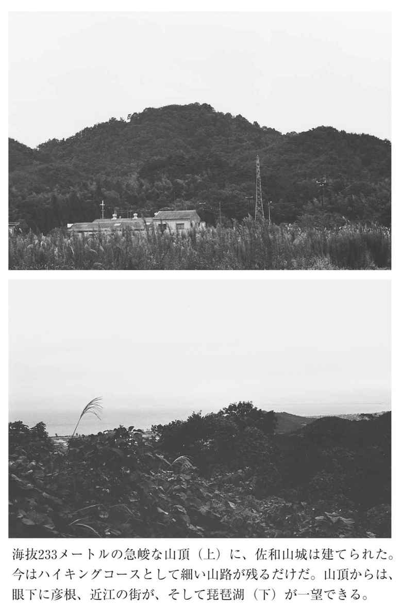
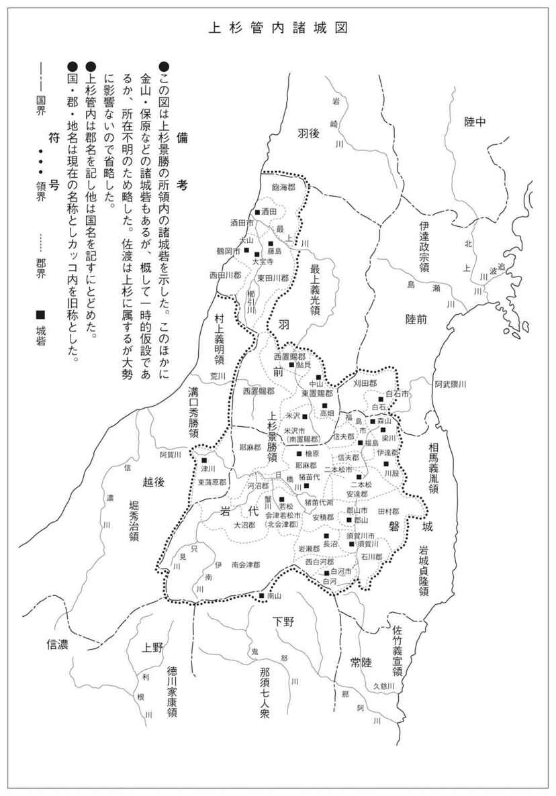
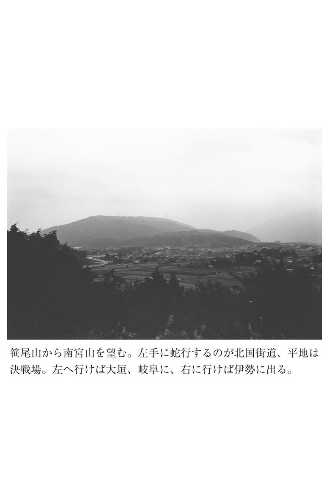
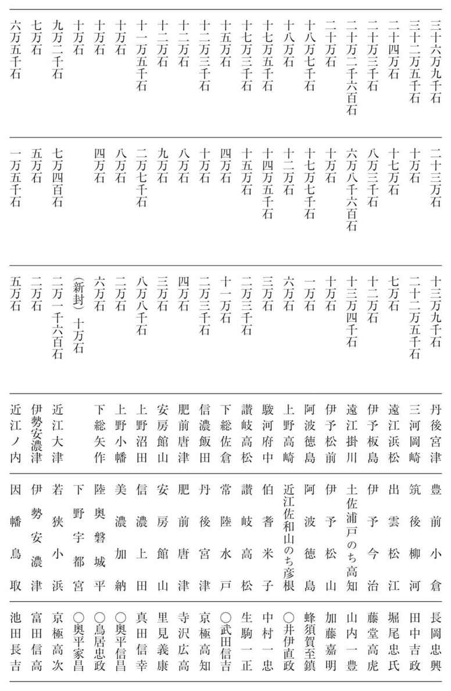

| 日本の戦史 関ヶ原の役 日本の戦史 大坂の役 (徳間文庫カレッジ) | |
| Unknown | |
| (2016) | |
日本の戦史
関ヶ原の役
旧参謀本部 編纂
この作品は縦書きでレイアウトされています。
また、ご覧になる機種により、表示の差異が認められることがあります。
一部の漢字が簡略字で表示されていることがあります。
概 説 桑田忠親
関ヶ原の役
天下の分かれ目
本書では、明治以前の、いわゆる国内戦のうちで最も大規模な戦いであった関ヶ原の役を扱っている。
さて、関ヶ原の役のことを、俗に、天下分け目の合戦とか、決戦とかいうのは、いかなるわけか。それは、いうまでもなく、天下の覇権が、豊臣氏から徳川氏に移るか、どうかの、分かれ目の戦いだからである。豊臣氏は西軍、徳川氏は東軍であり、西軍を代表しているのは豊臣氏五奉行の一人である石田三成、東軍を代表しているのが豊臣氏五大老の一人である徳川家康であった。三成が豊臣政権を擁護しようとする保守党の代表者であるのに比べて、家康は、豊臣政権に取ってかわり、別に徳川という政権を樹立しようとする、いわば、革新党の代表者だったのである。豊臣秀吉の死後、漸次、豊臣政権が、この両党のために二つに分裂し、二年めになって、両党のいずれが天下の政権を掌握するかの、分かれ目に到達し、その勝敗を決するために、戦わざるをえなくなったのである。つまり、天下の分かれ目の決戦、それが偶然、美濃の関ヶ原で行なわれたにすぎない。
しかし、場所こそ少々違うが、これと酷似した戦いが、それほど遠からぬ過去において、一度、行なわれたような気がしてならない。歴史は繰りかえさないけれど、似かよった史実は、過去にあるものだ。賤ヶ嶽の役である。だから、私は、天下分け目の決戦というのを、必ずしも関ヶ原ばかりとは思っていない。それならば、賤ヶ嶽が、なぜ、天下分け目の決戦なのか。いうまでもない。天下の覇権が、織田氏から豊臣氏に移るかどうかの、分かれ目の戦いだからである。これは、柴田勝家と羽柴秀吉との戦いだが、勝家が織田政権を擁護しようとする保守党の代表者であるのに比べて、秀吉は、織田政権に取ってかわり、別に羽柴という政権を樹立しようとする、いわば革新党の代表者だったのである。やはり、織田信長の死後、漸次、織田政権が、この両党のために二つに分裂し、一年めになって、両党のいずれが天下の政権を掌握するかの、分かれ目に到達し、その雌雄を決するために、戦わざるをえなくなったのである。ただ、その決戦が、偶然、近江の賤ヶ嶽で行なわれたにすぎない。
だから、関ヶ原の三成は賤ヶ嶽の勝家に類似し、関ヶ原の家康は賤ヶ嶽の秀吉に相当する、といってよかろう。近世封建国家を建設するために、全国統一戦を最初に行なったのが織田信長であり、信長の死後、これにかわったのが豊臣（羽柴）秀吉であり、秀吉の死後、これにかわったのが徳川家康だったからである。織田政権から豊臣政権への分かれ目が賤ヶ嶽の決戦であり、豊臣政権から徳川政権への分かれ目が関ヶ原の決戦だった。
秀吉の徳川対策
天下分け目の関ヶ原決戦の起因を述べるに先だち、秀吉が、その生前に、豊臣政権を確立するにあたって、織田信長の死亡当時、三河・遠江・駿河三カ国の大名で、海道一の弓取りといわれた徳川家康を、いかに扱ったかについて、観察する必要がある。
信長が本能寺で明智光秀に殺害されたとき、家康は、折あしく、信長の勧めによって、僅かな近臣を連れて、堺の町を見物していた。そのため、伊賀の山越えをして、いのちからがら、三河に逃げ帰った。そうして、盟友信長の仇光秀を討つことができなかった。同時に、信長にかわって天下の覇権を握るチャンスも逸してしまった。もし、家康が、本能寺の変のとき、三河あたりにいたならば、光秀を討ち取り、将来、織田家の天下を乗っ取ることができたかもしれないのである。しかし、堺にいたばかりに、備中の高松から引き揚げて東上した秀吉のために、光秀討伐の先鞭をつけられ、その後、秀吉が着々と織田家の天下を乗っ取るのを、指をくわえて見物する立場に置かれた。
秀吉は、山崎の一戦で光秀を討ち取った翌年、信長死後の織田家を代表する柴田勝家を近江賤ヶ嶽の決戦で討ち滅ぼし、初めて、信長にかわって天下に号令をくだす自信をえたのである。家康は、上方の情勢をよそめに見ながら、武田の旧領である甲斐と信濃の経略に力を注ぎ、甲斐の若神子で相模の北条氏政の大軍と対陣したが、まもなく講和し、信濃の南半を支配下に入れることに成功している。しかし、勝家滅亡の後、秀吉が、信長の次男北畠信雄と三男神戸信孝の不和を利用し、信雄をそそのかして信孝を切腹させ、さらに信雄にも圧迫を加えたのを知ると、家康は、信雄を援けて、秀吉と決戦を交えることになった。これが、小牧の役である。
家康は、九カ月にわたる小牧の役で、局部的な戦闘では、羽黒と長久手で二回、勝利を得た。ことに、長久手において秀吉の有力な部隊を破って、大勝したときは、信雄を奉じて上洛しようとさえ企てている。もし、家康が小牧の役で全面的に勝利を得たとすれば、家康は、織田政権を再興し、みずから執権の地位についたに違いない。おそらく、盟友信長が足利義昭（十三代将軍義輝の弟）を奉戴して上洛した前例にならったであろう。そうなれば、織田時代が当分つづき、その次に来るのは、徳川時代ではあっても、豊臣時代ではなかったであろう。しかし、家康は、局部的な戦闘では勝利を得たが、戦略の上では、秀吉に押され、次第に、手も足も出せない状態に追い込まれた。秀吉が、信雄と単独講和を結び、ついで、家康とも和し、関白に任官し、紀伊・四国・北陸を平定した権威のもとに、諸大名・土豪はもとより、家康の譜代の重臣である石川数正までを買収し、数正が京都に逃走したりしたため、家康もついに屈服し、上洛して、秀吉に臣従したのであった。しかし秀吉としては、西国における毛利と同様に、東国における徳川の地位を重大視していたので、かれ自身の妹を家康にめあわせたり、生母を人質として三河の岡崎に送ったり、辞を低うして、家康の上洛を懇願したのである。だから、臣従したとはいえ、家康は、決して、秀吉にたいして卑屈な態度は示さなかった。秀吉にとって、家康は、やはり、けむたい存在だった。
しかし、秀吉が家康の地位を重大視したのは、家康自体の実力を認めただけでなく、まだ、関東・奥羽が平定されていないからであった。だから、家康の東国における地位を利用して、相模の北条氏政を遠征し、これを攻め滅ぼし、ついで、奥羽を平定するというと、小田原役後の工作として、家康を関東六カ国に転封し、江戸の城主としたのであった。この国替えは、三河、遠江を長年の地盤とする家康にとって、致命的な打撃だったに相違ない。このときの大々的な転封で、これを拒否した織田信雄は下野の烏山に流され、伊勢の松坂から会津に移された蒲生氏郷は、──我が事終われり──といって、長嘆息したといわれるが、家康は、秀吉の命令に唯々諾々として従い、嘆きも憂いもしなかった。そうして、新領土の関六州を開発し、江戸の城下の繁栄をはかって、後の大飛躍の基を培ったのである。
こうなると、──徳川殿は律儀なる仁──と評してみたとて、秀吉にとって、家康は、いよいよ、けむたい存在であった。しかし、小者・足軽から成りあがった秀吉は、かれの譜代の家臣たちの地位が低く、人物も小粒だったため、それよりも、家康や毛利輝元のような外様大名を重視する傾向がつよかった。この傾向が具体的にあらわされたのが、秀吉が、晩年、病床にあって定めた五大老・五奉行の制度である。
実子に恵まれない秀吉は、晩年に及んでも、側室淀殿とのあいだにもうけた世嗣豊臣秀頼がひとり存在するだけだった。しかも、秀頼は、秀吉が死没の年、僅かに六歳の幼児であった。秀吉は、自分が病死したあとの豊臣のことが心配でならない。そこで、法規遺令の力で、かれ亡きあとの豊臣政権を確保するためにつくったのが、五大老・五奉行の制度である。五大老は、豊臣政治の枢機に参与する最高の官職であり、これに外様大名の徳川家康（武蔵・相模・伊豆・上総・下総・上野など約二百五十五万石）、毛利輝元（安芸・備中・備後・因幡・伯耆・出雲・隠岐・石見・周防・長門、約百二十万石）、上杉景勝（陸奥の会津、約百二十万石）、前田利家（加賀・能登・越中、約百万石）、宇喜多秀家（備前・美作、約五十七万石）の五人を任じた。五奉行は、五大老の下にあって、実際に庶務を履行する役で、これには、譜代大名の、石田三成（近江の佐和山、十九万四千石）、長束正家（近江の水口、五万石）、増田長盛（大和の郡山、二十万石）、浅野長政（甲斐の府中、二十一万八千石）、前田玄以（丹波の亀山、五万石）の五人を任じている。これは、織田政権が、柴田勝家・丹羽長秀・羽柴秀吉など譜代の家臣の寄合制度からなり、しかも分裂した事実にかんがみ、秀吉が、その政権の強化をはかろうとした結果であったかもしれない。しかし、この五大老・五奉行の制度は、まだ、その組織の強化を見ないうちに、絶対君主であった秀吉が病死してしまったために、諸大名の寄合政治と堕し、しかも、信長の死後と違って、六歳の豊臣秀頼のほか、一人も秀吉の実子がいなかったため、家督相続争いこそ見られないが、政権推移の目標も、はっきりと決まってしまった。その明瞭な目標こそ、豊臣家五大老の筆頭徳川家康だったのである。
秀吉の死去と豊臣政権の分裂
豊臣家五大老のなかでは、禄高からいっても、人望からいっても、徳川家康が最高であり、秀吉も、それを認めざるを得なかった。例えば、林羅山の「豊臣秀吉譜」によると、秀吉は、死に臨み、家康に向かって、──我が死後、遺児秀頼が成長し、しかも、天下を治めるほどの器量がない場合には、よろしく、秀頼にかわって、貴公が政権を握ってほしい──と、遺言したというが、これは、「徳川実紀」に、家康が死に臨んで外様の諸大名にたいして、──我が天寿は、まさに終わろうとしているが、将軍秀忠が天下の政治を統領している上は、死後のことについて、なんらの心配もしていない。ただし、将軍の政策が誤っているようなことがあれば、各々が、これにかわって、天下のことをはからうがよい。天下は一人の天下に非ず、天下の天下である。われは、決して、恨みに思わぬ──と、遺言したのと同様に、一種の政治的教訓書じみた、つくり話であって、史実とは受け取れない。秀吉は、家康の実力を認識していただけに、死後のことが心配だった。かれが五大老に宛てた遺言状が、毛利家に伝わっているが、その文章を見ると、──秀より事、なりたち候やうに、此のかきつけ候しゆとして、たのみ申候。なに事も、此ほかにわ、おもひのこす事なく候──とあり、秀頼の将来について、懇願している。なんとしても、骨肉を分けたわが子に天下を譲りたかったのである。
そこで、病床でこの遺言がしたためられたその日、すなわち、八月五日（慶長三年＝一五九八）付で、五大老と五奉行との間に誓書の交換が行なわれた。そのとき、江戸内大臣（徳川）家康が五奉行に与えた誓書を見ると、──秀頼様にたいして、太閤様と同然に、奉公の誠を尽すこと。豊臣家の御法度や置目に背かぬこと。公儀のため、私の遺恨を抱かぬこと。朋輩同士で徒党をつくったり、訴訟のことで、喧嘩口論をしたり、親子兄弟でも依怙贔屓せぬこと。知行のことは、勝手に与えたり貰ったりしてはならぬ。秀頼様が成人なさるまで待つこと。誰の讒言でも受け容れてはならぬ。互いに隔心なく、意見を交換すること。公私ともに、隠密のことを他言せぬこと。家来どもが御法度に背いたり、不届なことをした場合でも、隔心なく相談すること──など、以上、八カ条にわたっていた。
しかし、同月（慶長三年八月）の十八日、秀吉が、六十二歳を一期として、伏見城で他界するというと、この誓書にしたためられた約束ごとは、次第に履行されなくなってきた。秀吉の遺命に従って、世嗣豊臣秀頼を、その母淀殿とともに、伏見から大坂城に移したり、朝鮮在陣の諸将兵を内地に帰還させたり、そのような庶務に忙殺されているうちは、まだ無難だったが、それらの雑事のかたがつくと、五大老・五奉行のうちで、徳川家康が、まず、勝手気儘な、太閤秀吉の遺言を無視するような行動を取り始めた。家康は、秀吉の譜代の家臣が、以前から、武人派と奉行派の両派に分かれ、暗闘を事としているのを利用し、その分裂を策し、武人派諸将の買収に着手した。これは、朝鮮在陣中におけるかれらの労苦をねぎらうのを口実にすれば、たやすいことだった。それから、武人派の大名と、婚姻政策によって、緊密な関係を結んだ。これらのことは、前に述べた五大老・五奉行が互いに取り交した誓書の条件、たとえば、──朋輩同士で徒党をつくったり、知行を勝手に与えたり、貰ったりしてはならぬ──という誓約にそむくことであった。豊臣家の五大老の筆頭である徳川家康自身が、約束を破り、連判の誓約書を反古同然にしてしまった。しかし、家康の勢力を恐れ、これにおもねることによって身の安泰をはかろうと考える大名たちは、たとえ大老や奉行でも、家康の横暴を、見て見ぬ振りをしていた。ただ、これを放任しておいたのでは、秀吉の威令も、豊臣の政権も無視されるに相違ないと、それを憂慮し、憤慨し、五大老・五奉行制度の権威のもとに、家康に抗議を申し入れたのが、五奉行の一人の石田三成だったのである。その結果、家康は、翌年（慶長四年＝一五九九）の二月五日付で、四大老・五奉行宛てに、三カ条の誓書をおくり、血判を押している。その内容は、──家康と大名衆との縁組について、大老・奉行などが与えた警告を承認すること。太閤様（秀吉）の遺命、および五大老・五奉行の間で取りかわされた誓約に背かないこと。このたび、双方へ、それぞれ、入魂の通り申す者があっても、その者にたいして、遺恨を含まないこと──などを誓っている。これにたいして、四大老と五奉行もまた、連署で誓書を家康に提出し、これと同様のことを誓ったのであった。
家康と四大老・五奉行との間の和議は、このようにして、一応、成立したが、家康にたいする石田三成の疑惑と、大名相互の葛藤とは、容易にとけそうにもなかった。しかも、豊臣秀頼の君臨する大坂城内では、伏見城にいた家康にたいして、排斥の隠謀が起こっていた。もちろん、奉行の石田三成が中心だったらしい。
ところが、月改まって、閏三月三日（慶長四年）、五大老の一人の前田利家が、大坂城内の前田屋敷で病死した。利家は、秀吉の古くからの親友であり、とくに秀吉の信頼が篤く、秀頼の後見役にも任ぜられていた。だから、利家の死は、豊臣家にとっては大きな損失であった。が、家康にとっては、目の上の瘤が、もう一つ取れた、という感じだったに相違ない。と、同時に、利家の死は、反家康派の石田三成らの行動をも自由にさせ、天下分け目の決戦を誘引させ、結果として、豊臣政権の崩壊と徳川政権の樹立とを容易ならしめたと、いってよかろう。
豊臣政権は、五大老と五奉行の合議制による協調政治によって支えられていたが、徳川家康の裏切りと前田利家の病死によって弱体化し、さらに、家康と石田三成との確執によって、分裂と崩壊の一途をたどっていったのである。
三成と家康の確執
前田利家の病死した日の夜、大坂では、加藤清正以下の七将が、石田三成を襲撃しようと企てた。それを知った三成は、以前から親しくしていた常陸国の大名佐竹義宣の援けをうけ、危機を脱し、翌日、伏見城の家康の屋敷に身を投じた。この事件は、いうまでもなく、加藤清正を中心とする武人派の大名と、石田三成を中心とする奉行派の大名との間の軋轢が、利家の死亡をキッカケに、明るみに出たのだ。内向していたものが、爆発したのである。七将とは、細川忠興・蜂須賀家政・福島正則・藤堂高虎・黒田長政・加藤清正・浅野幸長の七人である。いずれも、太閤秀吉子飼いの武人である。かれらは、それぞれ、秀吉の絶大なる恩寵を蒙っていた。秀吉に仕えて忠節を尽したお陰で、一国一城の大名に取り立てられたのである。しかし、奉行派といわれる石田三成や小西行長などにたいして根づよい反感を持っているばかりに、三成が憎む家康のほうに好感を寄せていた。家康は、こうした両派の軋轢の調停役を買いながら、着々と、人望を高めていったのである。
通説によると、三成は、機会を窺って、二度までも、家康の暗殺をはかったが、果たせなかった。その三成が、今や、あべこべに、七将の襲撃を避けて、伏見の家康第に逃げこんだのは、窮余の一策にほかならなかった、と説明している。しかし、これは、いかにも三成を侮蔑した作り話だと、私は思うのである。いやしくも、徳川家康を相手に天下分け目の決戦をいどむほどの人物が、こんなだらしのない行為をするはずがないではないか。
大体、通説というやつは、ほとんど、江戸時代に書かれた記録であって、石田三成のことをことさら悪く書くのが、常識であった。秀吉の一代記である「太閤記」に、秀吉の相手役の柴田勝家のことを──智恵なし侍──などと、茶化して書いてあるのと同様である。三成が、七将の難を避けて、伏見の家康第にかくまわれたというのが、仮りに事実だったとしても、その前に、二回ほど家康の暗殺をはかったというのは、清洲会議の直後、柴田勝家が羽柴秀吉の暗殺をはかったというのと同様に、おそらく、作り話だと、考えられる。確かな証拠とて、何一つ、ないからだ。また、七将が伏見の家康第まで押しかけて行って、三成の身柄の引き渡しを求めた、などというのも、作り話であろう。その前後における家康の書状を見ても、大坂在番中の七将が伏見まで出かけて行った形跡がない。これは、書面で、家康に訴えた程度であろう。どうも、江戸時代の雑書の記事は、そのままでは、いただきかねる。三成は、まもなく、家康の勧めによって、七将の怒りをなだめるために、近江国佐和山の居城に閉居することに決まった。人質としては、三成の息子石田重家を家康に預けていった。
家康が、このように、七将の難詰から三成を救ったのは、三成を利用する下心があったからだと、いわれている。家康は、武人派の大名の歓心を買って人望を集めると同時に、また、大坂城に君臨する豊臣第二世秀頼を尊敬することによって、四大老の歓心を買おうとつとめた。例えば、同じ年（慶長四年）の閏三月二十一日付で、毛利輝元（五大老の一人）に書信をおくったが、これは、──豊臣二世の秀頼様を決して疎略に扱わない。互いに表裏別心なく、兄弟の如く相談したい──という輝元からの申し出にたいして、これを承認し、異心なきことを誓ったものである。さらに、四月二日にも、家康は、薩摩の島津義弘・同忠恒にたいして、──秀頼様を疎略にせぬこと。御三両人（義久・義弘・忠恒）を、家康が、疎略に扱わず、何事も、直談をもって決定し、流言に惑わされぬこと──などを誓った血盟書をおくっている。上洛制覇以前の信長が足利義昭を崇敬し、賤ヶ嶽決戦以前の秀吉が三法師（信長の嫡孫）や北畠信雄（信長の次男）を尊敬したのと、同じ手口であった。
しかし、このような家康にたいして、反感を持つ者も多かった。あながちに、石田三成とは限らなかったのである。たとえば、九月十四日（慶長四年）付で家康が会津黒川城主の上杉景勝（五大老の一人）におくった手紙を見ると、──この間、大坂へまかりくだり、仕置など申しつけ候──と、ある。これは、同じ月の九日、重陽の節供を祝うために大坂城に赴き、豊臣秀頼に会見した家康を、暗殺しようとたくらんだという浅野長政（五奉行の一人）・大野治長・土方雄久の三人に処罰を申しつけたことを意味する。そうして、その処罰が実施されたのが、十月二日のことで、家康は、長政を本領の甲斐に蟄居させ、治長を下野の結城秀康（家康の次男）に預け、雄久を常陸の太田城主の佐竹義宣に預けたのであった。家康は、九月二十七日、伏見城から大坂城の西の丸に移ったが、これは、大坂城内の隠謀をおさえるためだったらしい。処罰された三人も、同城内にいたのである。豊臣がたにたいする一種の威圧行動であるともいえた。
しかし、豊臣がたにとって、徳川家康こそ、有害無益の存在だった。といって、一戦を交えても勝ちめがないからこそ、暗殺など企てたのであろう。その点では、石田三成も同じ心境に違いないが、三成は、豊臣二世の秀頼をまきぞえにしたくないために、大坂城とは離れ、独自の立場で、家康に敵対しようとして、策を練っていたようにも、いわれている。
家康の会津遠征
豊臣家五大老の一人、上杉景勝は、慶長四年（一五九九）の八月十日、会津の黒川に帰城して以来、着々と軍備を整え、黒川城、そのほか会津境界の城砦の修築に専念していた。これを、石田三成と共謀して、家康にたいして事を構えるためだったとする説が、古くからあり、そのために、景勝の重臣直江兼続が三成におくったという直江状なる古文書まで偽造されたほどである。しかし、景勝の城砦修築は、太閤秀吉の遺令にそむき、豊臣政権の分裂を策し、五大老・五奉行制度を有名無実化しようとたくらんだ家康その人の、フテブテしい行動に刺激され、むしろ、これにならったものといってよいのである。家康が豊臣政権を弱体化させたことによって、再び秀吉以前の、いや、信長以前の戦国動乱の時代が到来したと、景勝は錯覚を起こした。そうして、上方の紊乱に乗じ、上杉家の旧領である越後の国を回復しようと、企てたのである。
年明けて、慶長五年（一六〇〇）の正月、年賀のために上洛した上杉の老臣藤田信吉は、徳川家康から、上杉景勝の上洛出仕を促された。景勝も豊臣家五大老の一人であるから、勝手気儘な行動は許されないと、いうわけだ。会津に帰国した信吉が、このことを報告すると、景勝は、烈火の如く怒った。そうして、信吉のことを、家康に内通しているかと疑い、これを誅戮しようとした。信吉は、辛うじて危機をのがれて江戸に走り、徳川秀忠に会津の近況を報告し、ついで大坂城に至り、景勝のことを家康に訴えている。
そこで、家康は、他の大老（毛利輝元・宇喜多秀家）や奉行などと相談した結果、さらに、景勝の上洛と陳謝を求めた。しかし、景勝がこれに応じないため、家康は、ついに会津遠征を決行することになったのである。家康は、景勝が豊臣政府の規律を乱したことを理由とするが、景勝にいわせれば、規律を乱した張本人は家康その人だった。家康が、最初に太閤秀吉の遺命にそむき、特定の大名と婚姻関係を結んだり、それに恩賞を施したりしたから、五大老・五奉行の制度や規律が厳正に行なわれなくなったのである。そのくせに、責任を景勝に転嫁しようとするのは、赦しがたい。景勝も、家康相手の戦備を整えることに狂奔した。
家康は、関東は下野国伊王野の城主伊王野資信が会津の情勢を注進して来たのに答え、五月三日（慶長五年）付で、資信に書をおくり、下野の伊王野口を堅く守ることを命じ、会津討伐を計画していることを告げた。これが、確かな文献に家康の会津遠征のことが見える初めであろう。それから、家康は、六月十四日付で、越後国新発田城主溝口秀勝に書信をおくり、秀勝が、上杉の勢力圏内の越後の佐渡や出羽の庄内に出兵するのを中止し、もっぱら、堀秀治の与力となって、津川口から会津に攻め入ることを命じた。そうして、──会津を征伐すれば、他の地方は自然と帰順するだろう──と、いい、──本末を顚倒してはならぬ──と戒めている。家康は、また、同様の意味のことを、同日付で、越後国本庄（村上）城主の村上義明にも伝えている。これは、上杉景勝の煽動によって、越後や出羽の庄内地方に土一揆が蜂起していたからである。
家康は、六月十六日、大坂を出発して、伏見城に入った。豊臣家五奉行のうち、増田長盛と長束正家とが大坂城にとどまり、豊臣秀頼の補佐と警固に当たることになった。
家康の麾下は三河譜代衆三千余人。これと前後して東下した大名衆は、大体において、太閤秀吉恩顧の武将たちであって、兵数、合わせて、およそ五万五千人といわれている。
六月十八日、伏見を発向した家康は、近江・伊勢を経て東海道をくだり、七月二日、江戸城に帰った。それから、七月七日には、出羽の大名、最上義光（山形城主）・秋田実季（檜山城主）・戸沢政盛（角館城主）などに、七月二十一日を期して江戸を出馬する旨をつげ、他の諸将と連絡して、会津に討ち入るように命じている。
ところが、七月二十日付で家康が美濃国黒野の城主加藤貞泰に与えた書状を見ると、上方争乱の流説のために貞泰の会津出陣参加が延引したことを、家康が承認し、──なお、岐阜城主の織田秀信（信長の嫡孫）と相談して、善処するように──と、指示している。つまり、家康の江戸下向を待って、石田三成が行動を起こしたのであった。
そこで、家康の会津遠征をもって、三成に兵を起こさせるための謀略だと見る説が有力である。いわゆる誘導戦略というやつだ。家康は、何も好んで、わざわざ奥州の果てまで上杉討伐に行く必要はなかった。日本の中央部の上方から離れるのは、たとえ少しの間でも、危険千万である。ところが、その危険を冒してまで会津遠征を敢行したのは、目的がどこにあったのか、不可解である。太閤秀吉の死後、家康は、これに取ってかわろうとして、着々と実力を養い、人望を集めた。しかし、豊臣二世の秀頼が大坂城に君臨し、その下部に五大老・五奉行の政治機構が残存している以上、このままでは、天下を乗っ取ることは覚束ない。この場合、なんといっても、秀吉が織田家の天下を乗っ取った前例にならい、反対勢力の頭目である大名を挑発し、これに打倒家康の兵を挙げさせ、これを徹底的に討伐することを好機として、武力をもって天下の諸大名を征服するのだ。秀吉は、柴田勝家を挑発して、打倒秀吉の兵を起こさせ、これを賤ヶ嶽で破り、越前の北ノ荘城に討滅させることによって、武威を天下に示し、天下平定のきっかけをつかんだ。そこで、家康は、石田三成を第二の勝家に仕立てあげたかった。そのために、三成のいのちを七将の難から救ってやり、しかも、これに挙兵の機会を与えるために、わざわざ、会津遠征まで企てたというわけである。三成に兵を挙げるチャンスを与えるのが目的で、会津討伐が目的でなかった証拠として、家康は常に上方の動静に注意を払いながら、悠々として、きわめて緩慢な速度で、東海道を下向したのであった。だから、美濃国黒野の城主加藤貞泰から、上方争乱の流説のために会津出陣の参加が延引したという報告を受けても、家康は、決して、驚かなかった。むしろ、思う壺にはまってきたことに、会心の笑みを漏らしていたことだろう。
家康は、予定どおり、七月二十一日に江戸城を発し、会津に向かうため、その夜は、武蔵の鳩谷に一泊している。
二十二日、家康は、鳩谷を出発し、武蔵の岩槻に至った。このとき、近江国大津の城主京極高次から書状が届き、大坂や伏見の近況を知らせてきた。これによって、家康は、さらに委しく上方争乱の実情を知ることができたのである。
七月二十三日、家康は、岩槻を発し、下総国の古河に宿泊した。この日、かれは、出羽国山形の城主最上義光に書をおくったが、その文面には、──治部少輔（石田三成）や刑部少輔（大谷吉継）が先に立って、諸方に触状をまわし、デマが横行しているから、そのデマに迷わされぬように──と、注意を与え、──米沢口に進撃するのを中止し、後命を待つように──と、付け加えている。いよいよ、石田三成と大谷吉継など奉行衆が行動を起こしたのだ。家康が、そのような具体的な情報をキャッチすると同時に、最上義光に米沢口から会津への進撃を中止させたのは、会津討伐が家康東下の主目的でなかったことを立証する。
家康の小山撤退
家康は、最上義光に会津進撃を中止させたその日（七月二十三日）に、また、摂津国の三田城主山崎家盛と豊臣家の奉行宮木豊盛に書を与え、かれらがひそかに上方の形勢を報じて来たのを喜び、──近日、上洛するから、いよいよ、その方のことは、油断せぬように──と、述べている。家康は、再び西上の決意を漏らしたのである。もちろん、これは、家康にとって、実に予定の行動だった。それだけに、西上の決意は固めたものの、それを行動に移すのに、擬装的に、ことさら暇をかけたらしい。
七月二十四日、家康は、下野国の小山に陣したが、この日、石田三成が数日中に伏見城を攻囲するに相違ないという報告を、伏見の城将鳥居元忠の使者から受け取ったのであった。
いよいよ、始まった──と、家康は、思ったに相違ない。三成のいのちを七将の危害から救ってやったのも、会津遠征を企てたのも、七将が、いかに三成を憎み、家康に好意をもっているかを、試すためと、それから、三成に打倒家康の兵を挙げさせる目的だった。何か口実がなければ、天下は取れない。一番手っ取りばやいのは、三成に挙兵させておいて、これを討伐し、そのついでに天下をわがものにしてしまう方法だった。
二十六日、家康は、越後の堀秀治に宛てて書信をおくり、──そなたの様子を、はやばやと、知らせてくだされ、有難い。さて、石田治部（三成）と大谷刑部（吉継）が逆心を企てたため、上方の人数は、今日、悉く西上することになった。そこで、この家康も、会津表の仕置などを堅く申しつけ、直ちに上洛することにした。その地の仕置は、いよいよ堅く命ぜられたがよい──と、述べている。これは、秀治の領国越後に会津の上杉景勝の将兵が侵攻し、上杉の旧臣や土民を煽動したために、方々で土一揆が蜂起していたからである。
上杉景勝は、石田三成と牒し合わせて家康を討とうと企てたのではなくて、豊臣政権が分裂し、弱体化してきたのにつけ込み、奥州の会津を中心に、上杉の旧領国越後までを併合し、東北地方に一大勢力圏を確立させようと、たくらんだのである。
ともかく、家康の会津遠征に従った上方の軍勢は、家康の命令によって、七月二十六日から、旗幟をめぐらして、西上の途につくことになった。同日付で、家康が近江国大津の城主京極高次に与えた書状を見ると、石田や大谷の攻勢にたいし、高次も、決死の覚悟で大津城を固守するつもりだったことがわかる。高次は、天正十七年（一五八九）以来、大津城にいた。その姉たつ子（松の丸）は太閤秀吉の側室だし、その妻おはつ（浅井氏）は淀殿の妹で、かつ、徳川秀忠夫人（小督）の姉にあたる。高次は、はやくから家康に心を寄せていた。九月十二日から、一万五千の西軍（石田がた）に攻囲され、大津城を固守し、奮戦したけれど、ついに力尽きて、九月十五日（関ヶ原決戦の当日）、城を明け渡し、高野山に登り、家康の裁決を待った。これは、もちろん、あとの話である。
七月二十九日、家康は、下野国宇都宮の陣を撤し西上の途中にあった黒田長政に書をおくり、──大坂奉行もまた、別心のよし、告げ来たった──と、述べているが、これは、その後の情報である。初め、上方兵の首謀者は、石田三成と大谷吉継の両人だけだと、思っていたが、やがて、前田玄以・増田長盛・長束正家の三奉行も、これに参加し、七月十七日付で、家康の行動を非難し、これを弾劾した十三カ条の檄文を出したことを知って、家康は、改めて、諸将と善後策を講じ、西上中の東軍の先鋒黒田長政に使者をつかわし、なお、同行の池田照政（輝政）と協議するように命じている。
さらに、同日、出羽国山形城主の最上義光におくった書信によると、──上方奉行衆一同の者が謀叛を起こしたことを知らせてきたから、会津をさしおいて、上洛する──と、明言している。しかし、──江戸中納言（徳川秀忠）を宇都宮（下野国）に置いておくから、会津への働きについては、中納言（秀忠）に相談してほしい──と、述べている。
また、同日、紀伊国和歌山の城主桑山宗栄（重晴）、および、その孫一晴に与えて、石田三成挙兵の報告に接し、急いで上洛し、三成を処分するつもりでいることを告げ、五奉行の一人で大坂在城の増田長盛が紀州で所有する知行地、および代官所を宗栄に与えることを約束し、徳川のために忠勤をはげませている。
こうなると、五大老制度も、五奉行制度も、あったものではない。秀吉の遺令も、それを守るために取りかわした誓約書も、反古同然となってしまった。五大老の一人である家康に敵対する五奉行の一人の増田長盛の知行を没収して賞賜するから、家康に味方し、忠勤をはげむことを、豊臣恩顧の桑山という一大名に要求しているからだ。再び、強いもの勝ちの戦国時代が到来したも同然であった。
月が改まって八月の二日、家康は、信濃国川中島の城主森忠政に書をおくり、──会津方面に対しては、江戸中納言（徳川秀忠）を残しておき、家康は、尾張の清洲までの東海道筋の処置を申しつけたから、近々、上洛のために、取りあえず、江戸まで帰陣する──と、述べている。森忠政は、七月二十一日に下野の宇都宮に到着し、つづいて来着した徳川秀忠に面会したが、家康が小山を出発する前に、信濃の川中島の領地に帰った。その帰国の途中、家康の謀臣本多佐渡守正信に書信をおくったのを家康が披見し、この書信を忠政に与え、信州表の処置に遺憾のないように、注意を促したのである。
家康は、西上軍（東軍）の先鋒として、福島正則・黒田長政・浅野幸長などをさしのぼらせたが、これらは、いずれも、太閤秀吉恩顧の武人派の大名だったので、別に、その軍監として、徳川譜代の家臣井伊直政を派遣することにした。つまり、これらの大名たちが、行く先で、いつ東下軍（西軍）に寝返らないともかぎらない。それを警戒したのである。すなわち、八月四日付で、浅野幸長に与えた書状に──こんど、井伊兵部少輔（直政）を先鋒として派遣するから、万事、その指図に従うように──と、命じている。これは、同日付で、井伊直政だけでなく、福島正則・池田照政・池田長吉・九鬼守隆・細川忠興・加藤嘉明・金森可重・市橋長勝・一柳直盛など十数人にも、同文のものを与えているから、いかに重大な事項であったかが、推測される。
家康の江戸滞留
八月五日（慶長五年）、家康は、下野国小山から、江戸城に帰着した。これは、むしろ、予定の行動であった。しかし、それから、向こう二十六日間も、江戸に滞留し、八方の形勢を観望し、動かなかった。この間に、家康は、諸方に指令を発し、天下分け目の決戦をば、少しでも有利に導こうと、努力していたのである。これまで書かれた戦史には、案外、この間の事柄を軽視しているが、関ヶ原における東軍の戦勝は、この間の工作によって決定したといってよい。
この日、尾張・美濃方面の先手として進軍していた福島正則と徳永寿昌が、八月三日付で、急報の書信を家康におくってきた。それを、江戸城で、申の刻（午後四時前後）に受け取った家康は、即刻、返信をしたため、──池田照政・藤堂高虎・井伊直政を出陣させるから、協力して、一刻もはやく、その方面の敵勢を駆逐してほしい──と、述べている。
また、八月七日に、家康は、奥州仙台の伊達政宗からの書信に答え、家康が八月五日、江戸に帰着したことを知らせ、会津表の軍監として下野の宇都宮に残しておいた徳川秀忠には、常陸の佐竹義宣と協力し、白川表に進撃を命じたことを報告している。しかし、佐竹義宣は、石田三成に通じ、兵を常陸と下野の間に駐屯させたまま、ついに出動しなかった。
さて、その翌日（八月八日）、家康は、東軍の先鋒隊の部将黒田長政に書をおくっているが、これは、安芸の毛利輝元（豊臣家五大老の一人）の従兄弟にあたる吉川広家（元春の子）が、輝元の立場を黒田長政に釈明した書状を、長政が伝達してきたので、それに答えたものである。
毛利輝元は、去年いらい、領国安芸の広島に帰っていたが、石田三成の勧誘に応じ、七月十五日に広島を出発し、海路をとって、十六日の夜、大坂城に入り、豊臣秀頼を擁立して、西軍の総大将となり、東軍の総大将徳川家康に対抗する気勢を示している。
しかし、吉川広家は、前々から家康に内通し、会津遠征の命令に従い、七月六日、出雲国富田の居城を出発し、十三日、播磨の明石に到着したのである。そこへ、毛利がたの安国寺恵瓊の使者が迎えに来たので、十四日、大坂城に入った。広家は、そこで初めて、毛利がたに打倒家康の企てのあることを知り、大いに驚いている。
広家は、極力これに反対し、家臣を広島に遣わし、輝元の出馬を中止させたけれど、時すでにおそく、輝元が大坂に発向したあとであった。そこで、広家は、密書を黒田長政に急送し、──毛利家のことを、よろしく、徳川殿に弁解していただきたい──と、依頼している。
黒田長政は、吉川広家からの密書を家康に見せ、毛利家の立場を、いろいろと、取りなした。その結果、家康は、さっそく、返事をしたため、──毛利輝元殿のことは、兄弟も同然に思っているから、このたびの不審がはれた以上、満足に思うだけである──と、答えている。
九月十五日の関ヶ原決戦に、毛利勢が出陣しながらも、ついに戦闘に参加しなかったのは、すべて、この吉川広家の才覚による。
それは、ともかく、八月十二日になって、家康は、仙台の伊達政宗宛てに書信をおくり、まず、──上方のこと（石田三成）を捨てて、会津（上杉景勝）の処置をなすべき覚悟であったが、福島正則・田中吉政・池田照政・細川忠興など東軍の先鋒隊の諸将の熱心な意見によって、一応、江戸まで撤退した。会津遠征についての仙道方面の経略は、いつでも、たやすく出来る──と、述べている。家康が下野の小山を引き揚げ、江戸に帰城したことは、会津討伐のために出動した東北・北陸の諸大名に不安の念を起こさせたに相違なかった。家康は、そのことを考慮し、仙台の伊達政宗に、このような書信を与えたのであった。
しかし、家康にとって、上方と会津の重要性は、もちろん、その逆であった。上方のために会津を捨て去るのが、予定の行動だったのである。
このころ、西軍がたから東軍に鞍替えする者も、現われた。美濃の加藤貞泰も、その一人であった。貞泰は、初め、石田三成の催促に応じて、竹中重門・稲葉貞通・関一政などとともに、尾張の犬山城の守将に加わったが、このころ、東軍に内通し、弟の加藤光直を人質として提出したので、家康は、貞泰から来た使者に書を持たせ、尾張の清洲に着陣していた東軍の部将井伊直政・本多忠勝のもとに送り届け、──福島正則とも協議して、善処するように──と、命じている。
また、同日（八月十二日）、家康は、書状を細川忠興に与え、──東軍に味方するにおいては、丹後は、もちろん、但馬国をも宛行おう──と、いっている。石田三成の人質徴収の戦略の犠牲にされて、忠興の夫人たま（教名・ガラシャ）は、すでに、大坂の玉造屋敷で死んでしまったし、また、忠興の父細川幽斎（藤孝）も、丹後の田辺城を、西軍に包囲されていた。家康の会津遠征に従軍した忠興が、東軍に味方したのも、当然といえる。
家康は、また、同日、肥後国隈本の城主加藤清正に書をおくり、肥後と筑後の二カ国を与えることを約束し、──こんど上方鉾楯（争乱）に候といえども、御方（豊臣秀頼）の儀、別条これなきよし、祝著の至りに候──と、述べている。ことさらに、秀頼の無事を祝っているのは、清正が、特に、太閤秀吉から蒙った恩義に報いる志の篤い武将だということを、見抜いたからであろう。家康は、このように、男の泣かせどころも、よく心得ていた。三成相手の決戦が近づけば、近づくほど、大坂城の秀頼を尊敬することを忘れずに、こんどの戦いは、豊臣相手のいくさではなくて、天下の平和を乱す叛逆者石田三成相手のいくさだということを、声明したのである。
石田三成のほうも、一般には、大坂城の秀頼を道づれにすることを避け、三成個人の責任のもとに戦ったということで、三成の人物を讃美しているけれども、毛利輝元を西軍の総大将として、大坂に入城させているところを見ると、最初は、豊臣秀頼のためという名義のもとに、兵を挙げたのではあるまいか。しかし、戦況が思わしくない場合には、三成個人が責任をとり、秀頼を責任の地位からはずさせ、豊臣の安泰をはかる考えに変わったのではなかろうか。三成は、最悪の場合をも考慮して、二段構えの戦略を用いたのではあるまいか。どうも、私には、そのように推測されてならない。
さて、八月十三日には、家康は、東軍の先鋒が到達した尾張、および、これから行動を起こそうとする美濃、あるいは、遠江・因幡・加賀方面の諸大名に書をおくり、各地の情況を聴取しようと、つとめている。すなわち、尾張方面では、清洲城に集結していた池田照政・同長吉（照政の弟）・九鬼守隆、それに細川忠興・加藤嘉明・浅野幸長、また、黒田城主の一柳直盛・赤目城主の横井時泰。美濃方面では、曾根城主の西尾光教・今尾城主の市橋長勝。遠江方面では、浜松城主の堀尾忠氏・掛川城主の山内一豊・横須賀城主の有馬豊氏・久能城主の松下重綱。因幡方面では、鳥取城主の宮部長熙・若桜城主の木下重賢・浦住城主の垣屋恒総。ただし、この三人は、西軍に内通していたというので、関ヶ原の役後、除封されている。加賀方面では、前田利長（利家の世嗣）に宛てて、西軍がたに呼応した山口宗永のたてこもる加賀の大聖寺城を陥落させたことを祝い、──こちらは、諸将と相談し、美濃口へ出陣しようと、考えている──と述べ、ここで、初めて、関ヶ原への針路を定めたことを報告している。
八月十四日、家康は、志摩国鳥羽城主の九鬼嘉隆の子の守隆に書をおくり、徳川にたいする忠節を嘉賞し、これに南伊勢五郡を与える約束をしている。守隆は、家康の会津遠征に従い、下野国の小山に至った。ところが、上方で石田三成が挙兵したという知らせで、父の嘉隆は西軍に味方したけれども、守隆だけは、志を変えなかったから、家康は、これに南伊勢五郡を賞賜することを約束したのであった。守隆は、関ヶ原決戦のときは、部下の水軍を率いて、東軍のために、伊勢湾で活躍している。
また、美濃の諸将士は、多く西軍に味方したが、土岐郡妻木城主の妻木頼忠は、同国小原城主の遠藤慶隆らとともに、居城を修理して、西軍の来攻に備え、石田三成からの人質提出の求めにも応ぜず、しかも、そのことを家康に報告してきたので、家康は、八月十五日付で、書状をしたため、頼忠の志を嘉賞し、土岐郡の攻略を命じている。
家康は、尾張・美濃方面のことだけではなくて、会津方面のことにも心を配っていた。たとえば、八月十七日には、堀親良に書をおくり、その戦功をほめている。これは、会津黒川の城主上杉景勝が、旧領越後の土一揆を煽動して、動乱を起こさせたのを、堀親良が、越後の蔵王城にいて、鎮圧したからだ。
八月二十一日には、家康は、信濃の川中島の城主森忠政に宛てて、書をおくり、忠政が、使者をもって、書信と初鮭の贈り物を江戸城に届けてきたのを陳謝し、上方への出馬を八月二十六日ごろに予定したことを知らせ、──なお、委しいことは、徳川秀忠から知らせる──と、いっている。当時、秀忠は、まだ、下野の宇都宮にいたらしい。しかし、家康が決定したという八月二十六日江戸出馬の予定も、九月三日に延期されたのである。
家康が、八月五日いらい、江戸に滞在して、容易に行動を起こさなかったのは、正面では、尾張・美濃の形勢を見きわめ、背面では、会津の上杉景勝の行動を牽制するためだった。万が一、家康の小山撤退に乗じて、景勝が、これを追って関東に侵入すれば、石田三成がた（西軍）も有利な地歩を占め、そのため、家康の陣営は動揺してくる。この危機を避けるために、家康は、仙台の伊達政宗と山形の最上義光をつかい、会津の背後を衝かせる必要があった。家康が、政宗と義光に、絶えず書信をおくり、かれらに信頼と優待の情を示したのは、このためであった。
八月二十五日、家康は、下野国宇都宮の城主蒲生秀行（氏郷の世嗣）に激励の書状をおくっている。秀行は、結城秀康（家康の次男）を援けて、会津の上杉景勝に備えていた。家康は、美濃・尾張方面の諸将の動向を監察し、なお、西上の機会が訪れるのを待つこととし、八月二十六日に江戸を出馬する予定を延引し、上杉景勝が背面から進撃することを考慮し、その場合には、直ちに馳せつけて、上杉勢を討ち果たす用意のあることを述べ、秀行を激励している。
家康の軍事行動が、いかに機動性に富んでいたかが、推量される。
同日（八月二十五日）、家康は、福島正則・池田照政・浅野幸長・黒田長政・加藤嘉明・細川忠興の六将に書を与え、八月二十二日に木曾川を越え、その翌日、岐阜城を攻めたことを、称賛している。この六将こそ、反石田派の外様大名の代表者だった。なお、同日付、同文で、家康は、藤堂高虎・本多俊政・生駒一正・桑山元晴・田中吉政・一柳直盛・西尾光教・徳永寿昌・池田長吉・堀尾忠氏・山内一豊・有馬豊氏・松下重綱などに書をおくっているが、これによって、東軍の先鋒の諸将の顔ぶれが、大体、わかる。
東軍の先鋒隊の猛攻によって、岐阜城が陥落し、城主織田秀信（信長の嫡孫）が城を出て、上加納の円徳寺に赴いたのは、八月二十三日のことで、その注進が江戸の家康のもとに到着したのは、二十七日の正午過ぎであった。家康は、それを知って、大いに喜び、即日、福島正則以下十一将に書を与えて、その戦功を激賞し、徳川秀忠に、──中山道を西上すべし──と、命じたことを報告している。
それから、家康は、八月二十八日、甲斐国の府中にいた浅野長政に書をおくり、長政の子の幸長の軍功をほめたたえ、──来たる九月三日には出馬する──といって、家康江戸出馬の予定を知らせている。
家康は、西軍が美濃に下向したという報告を聞いても、江戸城から容易に動こうとしなかったが、東軍の先鋒をひきうけた武人派の諸将が、緒戦の武功として岐阜城をおとしいれたと聞き、初めて、腰をあげた。勝利の確信を得て、しかる後に、動き出したのである。先鋒の諸将は、みな、太閤恩顧の外様大名だ。かれらには、軍監として、井伊・本多など、三河譜代の直臣をつけている。だから、万が一、諸将が緒戦で惨敗するか、または、西軍がたに寝がえりを打つかしたとすれば、家康は、おそらく、江戸城から一歩も足を踏み出さなかったに相違ない。
家康は、そんなにも慎重だった。石橋をたたいて渡るやりかただったのである。
家康は、同日（八月二十八日）、また、山形の最上義光に書をおくり、美濃の戦況をさらに委しく報告している。これは、同日、かさねて岐阜から注進が届いたからだ。──岐阜城の後巻として、石田治部（三成）・島津兵庫（義弘）などの軍勢が、上戸川端へ進出してきたのに、反撃を加え、これを呂久の川へ追い入れ、一人も残さずに、討ち取った。そうして、近江の佐和山城に追い込めたから、二、三日中には落去するだろう──と、述べている。近江の佐和山城に追い込めた、というのは、もちろん、誇大宣伝であって、史実ではない。
このころ、西軍の副総大将宇喜多秀家（五大老の一人）は、美濃の大垣に陣取っていた。このとき、東軍の先鋒が破ったのは、石田・島津の先発隊にすぎない。しかし、関ヶ原の前哨戦は、すでに開始されたと、いってよかろう。しかも、なお、このとき、西軍の総大将毛利輝元は、大坂城にあり、東軍の総大将徳川家康は、なお、江戸城にあって、東西、はるかに、相対峙していたのである。
家康の西上
徳川家康が、ついに江戸城を出馬し、西上の途についたのは、慶長五年（一六〇〇）の九月一日のことである。総勢三万二千七百余人といわれている。この日、中山道を西進する徳川秀忠の軍勢は、信州の軽井沢に至った。
同日、家康が東軍の最前線にあった福島正則と黒田長政からの報告に答えた書状によると、──西軍がたでは、宇喜多備前中納言（秀家）・石田治部少輔（三成）・小西摂津守（行長）らが、美濃の大垣城にたてこもったということだから、大急ぎで、西上する。この家康が到着するまで、行き過ぎた振舞いをして、失敗しないように──と、注意を促している。かりに、最前線の福島正則らが、血気の勇にはやって、西軍の主力と合戦を交えたとすれば、兵力の差がものをいい、惨敗する恐れがあったからだ。
九月三日、家康は、相模国小田原に到着した。中山道を西上する秀忠は、この日、信州の小諸に至り、上田城主の真田昌幸を誘降しようとしたが、昌幸が、応じない。
一方、伏見城を陥落させて、美濃の大垣に進出してきた西軍の参謀石田三成は、赤坂に駐屯した東軍の先鋒隊が、大垣に攻め寄せないで、垂井・関ヶ原に放火したのを見て、すぐに、三成の本拠である近江の佐和山を攻める計画に相違ないと判断し、八月二十六日、総大将毛利輝元の出馬を促す使者を大坂に派遣し、越前国敦賀城主大谷吉継にも使者をやり、脇坂安治・京極高次らの諸隊を率いて関ヶ原付近に来るようにと依頼し、ひそかに佐和山に帰っている。大谷吉継が、諸隊を率いて美濃に入り、関ヶ原西南の山中村に到来したのが、九月三日のことだった。
九月四日、家康は、箱根山を越えて、伊豆の三島に泊まった。五日には、三島を出発し、駿河の清見寺に宿泊している。西軍は、毛利秀元・吉川広家・長曾我部盛親・長束正家らの諸将が、三万余の大兵を率い、伊勢路を越えて北上し、美濃の赤坂の西方に位する南宮山に駐屯した。
九月六日、家康は、清見寺を発して、島田に泊まったが、七日、島田を発ち、遠江国の中泉に至った。秀忠は、信州上田城の攻囲に力を尽していた。八日、家康は、中泉を発し、白須賀に至った。九日、三河の岡崎に着いた。
九月十日、家康は、岡崎を発し、尾張の熱田に到着した。この日、秀忠は、上田城の押さえとして、森忠政・仙石秀之・石川康長らを残し、榊原康政・大久保忠隣・真田信幸などを率いて、信州の小諸を出発し、美濃に向かって急進している。
一方、西軍は、石田三成が、再び大垣にやってきて、大坂城に使者をおくり、総大将毛利輝元の出馬を促している。そこで、輝元は、豊臣秀頼を奉じて、近江の佐和山に出陣しようとした。しかし、増田長盛が東軍に内応したという風説が流れたため、中止している。もし、これが、実行に移されていたとすれば、どうか。家康は、関ヶ原決戦と同時に、一気に、豊臣家を滅ぼすことができたかもしれないし、また、毛利家を討滅することも可能だったであろう。が、これは、秀頼を押し立て、毛利の全兵力が西軍の主体となっても、なおかつ東軍が関ヶ原で大勝した、と仮定しての話である。総大将の毛利輝元が、敢然として参戦すれば、吉川広家も、これに従うほかなかったであろうし、家康も、苦戦に陥り、あるいは、敗退したかもしれないのである。
九月十一日、家康は、尾張の一宮まで進出し、清洲に泊まり、翌日も、そこに滞在した。これは、風邪に冒されたためだという。
九月十三日、家康は、美濃の岐阜に到着した。西上の途についてから、十三日めである。この日、秀忠は、ようやく、信州の下諏訪に到達している。しかも、この日、西軍の大津城攻撃が始まり、城主の京極高次は、よく防戦したが、三の丸、二の丸を占領された。
九月十四日、家康は、早暁、岐阜を出馬し、長良川の船橋を渡り、神戸・池尻を過ぎ、正午、赤坂に至り、岡山の頂上にある東軍の本営に入った。大垣をへだたること五十町ほどで、西南方に城内を見おろす地点にある。
大垣城には、西軍の副総大将宇喜多秀家をはじめ、石田三成（参謀）・小西行長・島津義弘などがおり、山中村に大谷吉継、岡ヶ鼻に長束正家・安国寺恵瓊。栗原山に長曾我部盛親などがいた。
家康は、赤坂の岡山の本陣で、軍議を開いた。その結果、一部隊をとどめて大垣城を押さえ、東軍の本隊は西上して、石田三成の本拠佐和山城を抜き、直ちに大坂城に向かうことに決定した。これは、西軍の総大将毛利輝元が大坂城にいて、豊臣秀頼を奉戴していたからである。
ここで、面白いのは、毛利の一族吉川広家の行動であった。広家は、前に述べたように、はやくから、黒田長政を通じて家康に内応していたが、表面上は、西軍に属し、伏見城や伊勢の阿濃津城攻めに参加し、九月七日、毛利秀元などとともに、伊勢路を経て美濃に入り、東軍の本営岡山の西に位する南宮山に陣取っていた。しかし、家康が岡山の本営に到着した日、また、黒田長政を通じて、東軍に和議を申し入れている。長政は、福島正則と相談し、吉川広家の使者三浦成義を東軍の本陣にともない、井伊直政や本多忠勝と引き合わせ、東軍に内応の件を、家康に報告している。その結果、直政・忠勝・長政・正則は、それぞれ、広家に宛てて、誓書をおくった。その文面は、──吉川広家の忠節に免じ、毛利輝元を見捨てない。毛利の領国を安堵させる──と、あった。
このとき、松尾山に陣した西軍の将小早川秀秋も、また、東軍に内通している。秀秋には、初めから、その意志があった。秀秋は、太閤秀吉の正室北政所の甥に当たり、一時、秀吉の猶子（後嗣のための養子）となり、羽柴秀俊と称し、豊臣二世の候補者と見なされたこともある。秀吉の愛妾淀殿に秀頼が生まれてからは、毛利の一族小早川隆景（毛利元就の三男）の養嗣とされ、名を秀秋と改め、小早川家を継いでいる。しかし、秀秋は、元来、北政所がわの武将であり、淀殿や石田三成とは対立していた。が、毛利との関係上、初めは、西軍に所属し、伏見城の攻撃にも参加している。その後、大坂に帰って、家康に謝罪の書状をおくり、病気と称し、近江の石部に滞在して、兵を動かさぬ。西軍の石田らの奉行衆に督促されて、美濃に出陣したが、黒田長政を通して、家康に人質を出し、南宮山に陣取っていた。家康は、そのことを聞き、九月十四日付で、秀秋に誓書を届けさせ、その忠節をほめ、東軍勝利の暁は、二カ国を与えることを約束している。
九月十四日の夜、西軍の陣営に情報が伝わった。東軍が、大垣城をさしおいて、西上するとのことだった。石田三成らは、大いに驚き、七千五百ほどの軍勢を大垣城にとどめ、石田・島津・小西・宇喜多の隊列を取り、全軍が大雨を冒し、ひそかに関ヶ原に向かって進む。その報告を得た東軍は、直ちに、そのあとを追って、関ヶ原に出た。
関ヶ原の決戦
あくれば、九月十五日、その早暁、石田三成は、関ヶ原駅に達して、北国街道を扼し、ついで、島津・小西・宇喜多の諸隊が、その右翼に陣し、山中村から移動した大谷吉継とともに、中山道を扼した。
家康は、これまた、早暁、垂井に至って、隊伍を整えさせた。福島正則・黒田長政を先頭とする東軍の部隊は、家康に先んじて、関ヶ原の駅の東に達し、加藤嘉明・藤堂高虎・井伊直政・本多忠勝らが、これについだ。家康は、朝霧のはれるのを待って、桃配山に本陣を据えた。
両軍の合戦は、午前八時ごろに火蓋を切ったが、正午ころまでは、一進一退で、容易に勝負が決しなかった。しかし、松尾山の小早川秀秋が、東軍の銃声に促され、決意を固めて山をくだり、大谷吉継の陣地に突入したのをきっかけとして、東軍は、俄然、攻勢に転じ、西軍はついに総崩れとなった。大谷は自害し、小西・宇喜多・石田は敗走し、島津は敵中を突破して、伊勢方面に遁れた。午後二時ごろのことだった。この決戦に参加しなかった西軍の長束正家・長曾我部盛親は、敗報を聞いて、伊勢に走り、毛利秀元は近江に遁走している。
関ヶ原合戦は、いうまでもなく、大規模な遭遇戦であった。東西両軍の総兵力を比較すると、東軍が十万四千。これにたいして、西軍は八万五千であって、格別、大きな差はない。このままで合戦を行なえば、ほとんど互角に近い合戦ができたはずだ。それが、僅か四時間半で、東軍の大勝利に帰したのは、どうしたことか。西軍がたに裏切り者が多かったためである。つまり、初めから、決戦に参加せずに、これを傍観していたり、または、途中で東軍に味方して、逆に西軍に奇襲をしかけたりする者が出たからだ。そのために、開戦当初の兵力の差は、東軍七万六千にたいして、西軍は三万五千に過ぎない。つまり、西軍は半分弱だ。これでは、負けるのが当然であろう。しかし、西軍は、よく戦い、三時間近くもねばり、どちらが勝つとも、皆目、わからぬほどだった。ところが、それまで合戦の情況を傍観していた西軍がたの小早川秀秋の一万五千と、そのほか、脇坂安治・朽木元綱・小川祐忠・赤座直保らの兵二千、合わせて一万七千が、東軍に味方し、西軍の陣営を奇襲したから、たまらない。東軍の実戦兵力は九万三千で、西軍の三倍弱となってしまった。これでは、石田三成が敗北するのも、当然であった。
徳川と毛利の講和
関ヶ原の決戦で大勝した直後の徳川家康が、最も重視したのは、大坂城西の丸にいて、豊臣二世の秀頼を擁護している西軍の総大将毛利輝元の存在であった。万が一、敗軍の諸将が大坂に入城し、輝元を動かし、秀頼を奉じて、籠城するようなことにでもなれば、大変、厄介なことになってくる。金城鉄壁の大坂城にたいする東西両軍の攻防戦が長びけば、世上の風説によって、人心も動揺し、形勢は、また一変するかもしれぬ。そうすれば、折角の関ヶ原の大勝利も水泡に帰する恐れがあった。石田の居城佐和山の占領など、これに比べると、問題ではない。
そこで、家康は、敗戦の諸将に立ち直るひまを与えずに、佐和山攻撃を観戦しながら、ただちに、毛利輝元を大坂城から退去させる工作を進めたのである。その結果、黒田長政と福島正則が間にはいって、徳川対毛利の和談が成立した。輝元は、大坂城西の丸を明け渡し、安芸国の吉田に帰国することを声明した。
九月十七日（慶長五年）、近江の佐和山城が落ち、三成の一族石田正継・正澄・朝成らは自害して果てた。十九日、家康は、近江の八幡を出発し、草津に至った。この日、西軍の将小西行長が伊吹山中で捕えられた。二十日、家康は、大津城に入り、二十六日の朝まで滞在している。徳川秀忠は、この日、草津に着き、大津に赴いたが、家康は、目通りを許さない。秀忠が、中山道で手間どり、関ヶ原の決戦に遅刻したのを、怒ったのである。二十一日、西軍の参謀石田三成が伊吹山中で捕えられた。
九月二十七日、家康は、大坂に入城し、本丸で、豊臣秀頼と会見し、ついで、西の丸に入り、徳川秀忠を二の丸に置いている。大坂城占領の儀式であったらしい。
十月一日、石田三成・小西行長・安国寺恵瓊は、洛中を引き回され、六条河原で斬られ、前日に近江の水口城で自害した長束正家の首とともに、三条の橋にさらされた。
毛利家の所領は、中国地方の大半を占め、合わせて百二十万五千石だったが、関ヶ原決戦のとき、石田に味方して、輝元が西軍の総大将に祭りあげられたため、八十三万六千石を削封され、一族吉川広家が、東軍に内通して、毛利勢のほとんどを実戦に参加させなかったのを徳とし、辛うじて、周防・長門の両国で三十六万九千石を安堵されたのであった。
関ヶ原の役
〔凡 例〕
一、明治年間に参謀本部が編纂した「日本戦史」は、「本篇」と「補伝」からなっています。「本篇」は参謀本部が書いた戦役の歴史で、「補伝」とはそれを書くにあたって必要とした文献・史料です。したがって「補伝」は、「本篇」を補足し、史料としての裏づけを与えるものです。
一、本書においては、原典の「本篇」「補伝」の名称を「第一篇」と「第二篇」とに改めました。また、原典はいずれも文語体あるいは漢文で書かれているため、現代の読者に理解しがたい点も多いと思われますので、原典のもつ味わいを正確に生かしながら現代語訳いたしました。
一、仮名づかいも新仮名に改めております。なお、地名はカッコ内に現在の町名を入れ、理解をいっそう完全にするために注をほどこすとともに、写真や図版も入れております。
第一篇
第一章 起因と戦前の形勢
朝鮮遠征（文禄一年～慶長三年）の兵が帰還して一年半ほどは戦役もなく、平穏に過ぎた。だが、表面でこそ小康を保っているように見えたが、その実、各地の群雄のあいだには猜疑心が深まり、時をおって流言飛語が乱れとび、人心は恐々として定まらなかった。そして慶長五年（一六〇〇）六月、兵端は会津（福島県）の攻伐でまず開かれ、ついで関ヶ原の大戦役が起こったのである。
およそ外面に大きく現われ出てくる事象の陰には、必ず長いあいだ深く貯えられた要因があるものである。戦乱の局面が広大で、しかも複雑な様相を呈した関ヶ原の役の場合も、もちろんその原因は通りいっぺんの簡単なものではない。数年も前から積もりに積もった原因、またいくつかの挑発に誘起されたものであった。そこで、征韓以後から関ヶ原役前までの事件のうちで戦役の原因に関係するもの、あるいは海内の形勢で注目すべき事項を列挙して、関ヶ原の役が一朝一夕に起こったものでないことを示してみよう。
秀吉の最期
慶長三年（一五九八）五月、豊臣秀吉は伏見城で発病、日を経るにしたがい病状はますます悪化していった。このとき嗣子秀頼は齢わずかに六歳。しかも朝鮮に派遣した兵は、まだ勝利を得ることができなかった。──このような状況下で、わが身の再起不能を悟った秀吉は、六月十四日、前田玄以・浅野長政・増田長盛・石田三成・長束正家の五奉行（天正十三年決定。年老ともいう）を呼び寄せ、互いに宿怨を棄てて、秀頼に尽すことを説いている。
秀吉は百姓の小倅から出世して、天下人になった。彼には祖先の遺業があったわけではなかった。したがって、彼に属する諸将や麾下の士も、血族以外はことごとく新たに主従関係を結んだ者であった。しかも、以前は互いに仇敵という者も少なくない。彼らには協同一致の精神に欠ける面があったのである。秀吉は常々これを憂い、何度か説諭してきたのだが、このときもまだ安心できる状態ではなかった。死を自覚した秀吉が、五奉行に命じて、再び諸将士を慰諭させたのも、そのためであろう。
だが、これについての諸将士の答は、「嗣君秀頼を奉ずることについて誰がご命令にそむきましょう。しかし私怨については、みなそれぞれ理由のあることで、簡単に和睦することはできません」というものであった。
そこで秀吉は徳川家康に頼み、かさねて諭させた。このときの答も前と同じであったから、家康はそれらの諸将に対して色をなして怒り、「協力して嗣君を奉ずるといいながら、私怨を棄てないというのは二心を懐くことになる。嗣君を奉ずる実がないではないか」ときめつけ、このため諸将士は屈服して命令に従うことになった。
喜んだ秀吉は、中村一氏・生駒親正・山内一豊・豊光寺承兌・円光寺元佶・安国寺恵瓊に接待役を命じて、諸将を饗応している。ところが、彼らにはなお和解の様子がなく、席順などを守らぬ者もいたし、なかには酔いに乗じて争う者さえ出てきた。中村一氏がなだめに入ったがおさまらない。ついに再び家康が進み出て、剣を抜きながら、「貴殿らはわれを欺いたのか。太閤の名代であるわれを欺く者は、すなわち太閤の敵である。一人も帰すわけにはいかぬ」と激怒して、門をことごとく閉じてしまった。これには諸将も恐れて謝罪し、それからは献酬して歓を尽したのであった。翌日、秀吉はこのことを聞き、涙を流して家康に感謝している。
七月のある日、秀吉は家康をひそかに呼び寄せて、まだ幼弱な秀頼の保護をたのんだ。しかし家康は、「殿下百歳ののちまで世子を奉らない者がおりましょうか。が人心は測り難いものです。よろしく神智をめぐらし、子孫のために謀を考えておかれた方がいいでしょう。私は非才の身で、とても重任には耐えられないと思います」といって、固く辞退してしまった。
そこで秀吉は、増田長盛と石田三成を召して相談した。二人は、「秀頼公のある限り家臣みな力を合わせ、天下を他人に譲るようなことはさせません」と答えている。秀吉も喜び、家康・前田利家・宇喜多秀家・上杉景勝・毛利輝元の五人を年寄（御奉行ともいい、後世これを五大老と呼ぶ）とし、前田玄以・浅野長政・増田長盛・石田三成・長束正家の五人を奉行、ほかに中村一氏・生駒親正・堀尾吉晴の三人を中老と決めた。世に五奉行三中老といっているのがこれである。ついでに、それぞれの役目を述べると、小事は奉行が相談して決め、大事は年寄が担当し、中老は年寄と奉行との意見がわかれたときに調停和解させた。また特に家康にはもっぱら政務を裁決させ、利家は秀頼の後見に当たらせている。もっとも、利家は慶長一年（一五九六）以前からすでに秀頼の補佐役であった。
この月の七日、秀吉は諸将および腹心の士に命じて、秀頼に二心を抱かぬことを誓わせている。そして、あらかじめ形見の品を分け与えた。
八月五日、秀吉は伏見・大坂両城の城番と秀頼に伺候する人員などを定め、家康・利家をはじめ五奉行と載書を交換し、秀頼に従うことを誓わせた。宇喜多秀家や家康の子の秀忠、利家の子の利長なども、同様に誓書を五奉行に納めている。七日、秀吉はさらに五奉行に命じて、互いに姻戚関係を結ばせた。八日、家康と利家は再び誓書を五奉行に提出。十一日、五奉行もまた誓書を五大老に納める。そして十八日、秀吉はついに永眠した。
征韓の後始末
秀吉は生前に、自分が死んでもその喪をかくすように奉行の浅野長政と石田三成に遺言していた。しかし三成は、長政がかねてより家康と親しいのをねたみ、表面では秀吉の喪を伏せることを長政と約束しながら、陰で家康に秀吉の死を打ち明けた。この日十九日、家康は折しも秀吉の見舞いに向かう途上だったが、三成からの知らせを受けてただちに引き返し、子の秀忠を江戸へ帰らせている。これは、近き将来、諸将のあいだに内紛のあることを察知した家康が、親子いっしょにいるのは上策ではないと考えたからである。それだけに家康としては、三成の親切を喜び、逆に長政を恨んだ。
八月二十五日には、家康と利家が相談して、秀吉の命令ということで徳永寿昌・宮木豊盛を朝鮮へ遣わし、在韓諸将に講和して帰国するように伝えた。また二十八日には毛利秀元・長政・三成を博多へやり、在韓軍の帰国準備に当たらせている。さらに九月三日、五大老・五奉行が連署して、七条からなる誓約を秀頼に出す。
十月十五日、五大老が連署して書を在韓諸将に送り、協議して軍を返すように勧めた。十七日にはまた、明軍のために征韓軍の帰路が押さえられたとの知らせを受けて、長政・三成らと相談の上、藤堂高虎を渡航させ、その収拾をする役に任じている。しかし、おってすぐ島津惟新（義弘）・忠恒父子の兵が泗川（朝鮮慶尚南道涅川郡）で明軍を撃ち破った知らせが届いたため、高虎の出兵は取りやめになった。
十一月、征韓諸将がことごとく帰国して博多に着く。処理役の三成が、「諸公はまず伏見へ行き、太閤殿下の喪を弔してからその領国に帰るよう。明年入京すれば茶会を開いて、長年の労を慰めるだろう」といった。すると、かねてから三成を快く思っていない加藤清正が大言を吐いた。
「朝鮮に行かなかった君たちは財産を貯えたから茶会を催すこともできるだろう。ところがわしなどは海外にあること七年、一銭の金も残さず、茶もなければ酒もない。ただ稗粥をもって答礼するのみである」
浅野幸長もまた、「われらの帰朝は、治部少輔（三成）の欲せざるところであろう」といった。三成はこれを深く恨みに思った。
家康の動き
家康は島津氏と親密な関係を結びたいと考えていた。そこで眼医の薩摩人某を江戸城から招き、伊集院忠棟に頼みその意向を通じさせた。前関白の近衛前久も島津の姻戚であったから、間に立って勧誘したという。それで、ついに島津竜伯（義久）が十一月二十日に家康邸を訪問、十二月六日には家康も竜伯邸に行って答礼した。
このころ家康はしきりに諸将の屋敷を訪ねている。たとえば、十一月二十五日に増田長盛邸、翌二十六日には長曾我部盛親の屋敷、十二月三日、新庄直頼、同九日は長岡幽斎（細川忠興の父）、同十七日に有馬則頼の屋敷などである。
ところで三成は、家康のこうした挙動を疑い、島津竜伯のもとにその弟の惟新（義弘）・忠恒父子を遣わし、家康と親交を結んだ理由を問いただしている。竜伯は答書してその顚末を告げ、べつに特別な事を相談したわけでないことを誓った。翌年正月三日、家康はさらに惟新・忠恒の屋敷を訪ねて朝鮮での戦勝を祝い、刀と馬を贈り、七日にはまた茶宴を張って忠恒をもてなしている。
慶長四年正月九日、五大老と五奉行が連署して惟新父子の朝鮮泗川における戦功を賞し、刀を賜わった。また奏上して忠恒を右近衛権少将に任じ、封五万石を加増している。翌十日、大老・奉行たちは秀吉の遺命を奉って秀頼を大坂城に移す。家康以下諸将がことごとくこれに従った。つぎに大老は協議して諸将交代の当直を決め、この法則を定めた。十一日にはまた令を発して、秀吉がかつて公布した法令を犯さぬようにさせた。家康は片桐且元の弟貞隆の屋敷に泊って大坂に一日とどまったが、十二日には伏見に帰った。
これより後は、家康も伏見の屋敷にいて政事を見、利家は大坂城で秀頼の後見に当たっている。なお奉行と老中などは、京・大坂を往来して国務を執行したし、伏見城は五奉行が交代で守った。
正月十九日、有馬則頼が自邸で宴を張り、伏見にいる諸将をもてなした。家康もまたこれに招かれている。ところが、宴の最中に井伊直政が来て、あることを家康に耳打ちした。家康がただちに帰邸すると、そこには藤堂高虎が大坂から来て待っていた。それですぐ密談が始まり、数時に及んだ。が、何の相談なのかだれも知らなかった。しかし、この夜から伏見は物情騒然となった。
家康の婚姻政策
これより先、家康はひそかに伊達・福島・蜂須賀の三家と婚姻の約束を結んでいた。伊達政宗の娘を家康第六子の忠輝に、また家康の異父弟の松平康元の娘を養女にして福島正則の子正之に与える。小笠原秀政の娘（家康の外曾孫）を養女として、蜂須賀家政の子豊雄（至鎮）と結婚させようというのである。大坂の大老や奉行がこれを聞き、正月二十一日、三中老と僧承兌を使者に立てて連署の書を送り、秀吉の遺命にそむいたことを責めて、「このようなことをなさるというのは、異心があるからでござろう。もしその言いわけが明白でないならば、今後は十人衆（五大老・五奉行）の位から除き申す」といった。これに対して家康は、
「わしを誹謗して異心ありと決めつけるが、まことに解せないことである。証人でもいるのか。それなら審理して証拠を示されるがよい。卿らはわしを疎外し、幼主秀頼公に近づけまいとしているようだが、それこそ太閤の遺命を破ることではないか。しかしながら、われは政事に参与するのを好まぬ。この際、引退して武蔵守（秀忠）に代わらせよう。卿らに相談せずに結婚させたというが、これは太閤の遺命を一時失念したのに過ぎぬ。将来、謝罪すればよいことであろうが」
と答えた。そのあとで使者はまた伊達・福島・蜂須賀の三家へ行き、徳川との婚姻をなじったが、三家それぞれ弁解して婚姻をやめようとはしなかった。
大老・奉行の使者が伏見へ出発したあと、在坂の諸将はみな兵備を整えて家康の返答を待っていた。しかし、十九日の夜以来、家康もまた警戒を厳重にして、屋敷の周囲に竹柵を結び、新たに外郭を作り、あるいは木材を組んで楼櫓を急造した。加藤清正・浅野幸長・福島正則・黒田如水・その子長政・蜂須賀家政・長岡忠興（細川）・池田輝政・森忠政・加藤嘉明・藤堂高虎・京極高次・金森長近・織田有楽（長益）・新庄直頼・有馬則頼・山岡景友などがそれぞれ家康に心を通じ、夜ごとその屋敷に来て守護している。大谷吉継もまた家康に心服し、腹心の兵を直頼の屋敷にたむろさせて、大坂方将士の来襲に備えた。そしてさらに、大津の城に入るよう家康に勧めたが、家康は承知せず、「このようなときに一歩進めば勢いづくだろうが、退いたなら、かえって勢力を失う」といって応じない。折しも家康の部将榊原康政・本多正信らは交番のために西上しつつあり、東海道を進んでいたが、伏見の急を聞いて京都に駆けつけた。このころには関東の諸将も陸続と大津・山階・醍醐・木幡の間に到着していた。「江戸の兵が大挙して上京する」という知らせを受けた大坂方諸将は、気勢をそがれてしまった。この日、家康は有馬豊氏（則頼の子）に淀城を守らせている。つまり、大坂に対する備えであった。
大坂と伏見との葛藤は、容易に解決できない状態に追い込まれていたが、三中老が間に立って周旋につとめ、二月五日、互いに誓紙を交換して和平が成立した。古記によればこのとき浅野以下四人は太閤の遺命を守り、家康に謝罪のため剃髪したという。誓書に入道と称しているのはこのためである。そもそも例の結婚のことは、家康の方に非があった。家康から謝罪するのが本筋である。にもかかわらず、反対に諸奉行が謝ったのはなぜだろうか。おそらく、「十人衆の位から除く云々」の失言を家康につかれて、三中老が調停するうち、主客が転倒する結果になったものと思われる。
前田利家の憂慮
ところで、大坂・伏見の争いがすでに解決したとはいえ、それは表面上のことに過ぎなかった。内実はいまだに和解することもなく、在坂諸将が前田利家を推せば、伏見の諸将は家康を戴こうとするというような機運があった。長岡忠興はこれを案じて、京・大坂の間を奔走し、利家と家康の親睦をはかっている。というのは、忠興の子忠隆が利家の娘を妻に迎えて両家が姻戚関係にある一方、かつて忠興は、家康に恩を受けていたからである。忠興と家康とのいきさつは、つぎのようなものだった。
──忠興は数年前、豊臣秀次から黄金二百枚を借りたことがある。ところが文禄年間、秀次が秀吉によって罪に問われるに及び、この借金の返済について役人から督促があって、「もし、すみやかに返さなければ、秀次の罪に連座するものとみなす」といってきた。忠興は困惑して家臣の松井康之に相談した。松井は本多正信と親しかったので、正信を通じて家康に救済を請うたのである。家康はただちに鎧櫃から金を出して与え、返すのはいつでもよいといい添えた。こうして忠興は、家康のおかげで窮地を免れたのだった。
さて忠興は、大坂・伏見両府の反目は秀頼に不利と見て、前田利長とともに利家を説き、家康との親睦を計ろうとした。忠興は両府を往来するにあたり、常に簑笠を着け、自ら小舟に棹さして人目を避けたと伝えられる。
このころ利家は、昨年十二月来の病いで床にあったが、忠興の説得に従い、病身をおして清正・忠興・幸長らとともに二月二十九日に伏見に着いた。家康は一行を厚くもてなしている。
この日、利家は、家康に向島へ移るように説いている。それは、不測の事態に備えるためだった。というのは、家康がいては幼主秀頼に不利だと考える大坂の増田長盛や石田三成たちが、かねてから家康を除こうとしていたのを、利家もよく知っていたからである。このとき家康がいた伏見の屋敷は、三成に与する宮部祐全・福原長尭の屋敷と隣接している上に、地形も悪く、守備するには不向きであった。向島ならば、伏見城の遺跡だけに規模は大きく、また宇治川を隔てて諸将の屋敷とも離れているから、簡単に襲撃されることもない。利家はそうした諸点をあげて、家康を説いたのであった。家康もこの勧告をいれて向島に邸宅を構えたが、建築には五十日かかった。この期間中、家康は夜ごとひそかに宇治川を渡り、新旧両邸を往来して、人にその所在がわからぬようにしたという。利家に家康を訪問させた忠興は、今度は大坂の利家を見舞うように家康を説得した。先の訪問に対する答礼というわけである。
三月十一日、家康は舟で大坂へくだった。道中は麾下の部将が弓・鉄砲で護衛するというものものしさであった。忠興も人質の意をこめて、父の幽斎を舟中にはべらせた。途中には藤堂高虎が出迎え、自宅をその夜の宿に供した。
家康はその日すぐ、利家邸へ行って病気を見舞い、加藤清正・池田輝政・福島正則・黒田長政・藤堂高虎などの諸将が同席して、利家のもてなしを受けた。この日、三成と一党の増田長盛・長束正家らは、小西行長のところに集まり、家康襲撃を協議した。が、計画が決まらないうちに家康は翌日、早々に伏見へ帰邸してしまった。
これに先だつ三月九日、島津忠恒が老臣の伊集院忠棟を自邸で討ったため、家康は警戒して井伊直政に島津邸を護衛させた。というのは、三成と忠棟とはかねて親交があって、三成が忠棟の誅殺をなじってきたからである。このため忠恒は、高尾山に蟄居することになった。家康は諸奉行とともに、忠恒の無実を論じて、閏三月一日、人を遣わして忠恒を伏見に迎えさせた。のちに忠棟の子の忠真が、所領の日向荘内に拠って忠恒にそむいたときには、家康は忠恒の申し出をいれて帰国させ、忠真を討たしている。八月にはまた、寺沢広高を鹿児島へ遣わし、伊東祐兵・相良頼房・秋月種長らの隣境諸大名に間諜を送って忠恒を助けさせた。あるいはまた、十一月、山口直友を荘内へやって、忠恒を慰問させたりもした。
清正ら七将と三成の確執
閏三月三日に利家が大坂で死んだ。これより先、清正・長政・幸長・正則・輝政・忠興・嘉明の七将は、征韓以来、みな三成に恨みを抱いており、三月下旬、小西行長らの誹謗を反論してから、互いに計り合って三成を討とうとした。しかし三成が大坂へ行ったまま利家の病床にいて外出しないため、なすすべがなかったのである。だが、大納言利家が死んだいま、三成は必ず出てくるであろうから、これを要撃しようということになった。
ところが、それを三成に知らせる者があった。もともと三成と仲のよい佐竹義宣がそれを聞いて大坂へ行き、三成を擁して伏見へ帰り、家康に救いを求めている。四日のことである。それを追いかけて来た清正ら七将たちは三成を引き渡すよう家康に談じ込んだため、伏見は騒然となってしまった。
思うところのあった家康は清正たちの申し出を拒んだが、七将はなおも引き渡しを要求する。そこで家康は三成の職をとき、領国に帰らせるかわりに七将たちにも兵を収めるようにといった。
一説によれば、七将が三成を殺そうとしたとき、本多正信が家康につぎのような建議をしたといわれる。
「三成が七将たちに憎まれるのはもとより当然です。しかし、いまは五奉行の一人になっている三成を私怨をもって殺そうというのは公道からはずれた行為でしょう。彼らの要求どおり三成を引き渡せば、彼らはますます驕り、同じようなことが何度も繰り返されることとなりましょう。それが慣習になっては罪なきものも殺されることもありましょうし、もし彼らの要求を拒むとしても彼らは片手落ちの処置としか考えないでしょう。そうなれば禍乱のもととなります。ここは三成をひとまず助けておいた方がいいでしょう」
家康もその見解に賛成したのだという。
家康に職を解かれ、領国に帰るようにいわれた三成は数日のあいだ熟慮し、その命令に従うことになった。一説によれば、後述するようにこのとき三成は上杉景勝と密約をかわし、関ヶ原の挙兵を約束したのだという。
三成は閏三月十日に伏見を出発し、佐和山に帰る。家康は子の結城秀康に三成を見送らせた。加藤清正ら七将もまた家康の命令に従うことになった。
十三日になって家康は秀吉の築いた伏見城に移った。もともと、それを計画していたのは黒田長政で、長政は堀尾吉晴に相談した結果、賛成を得た。増田長盛や長束正家は必ずしも家康の伏見移転に賛成ではなかったが、結局、長政と吉晴の申し出に応ずることになり、大老の宇喜多秀家と上杉景勝にそのことを告げ、三中老を使者として家康に伏見城に移るよう進言したのだった。こうして家康の威望はますます盛んとなり、人々は、「家康は天下人になった」というほどだった。
また、二十一日には家康は毛利輝元に誓書を送って兄弟のごとき関係を結ぼうと約束し、四月一日にはまた島津惟新父子にも親愛の情を示している。これに対して輝元や惟新の方からも家康に誓書を送ったものと思われるが、それは現在残っていない。が、伊達政宗が家康に誓書を送っているところを見ると、毛利・島津も送ったものと推測される。
二十六日、秀頼は島津忠恒に昇殿を許されるよう朝廷に奏請して、勅許を得た。
家康、大坂城に入る
竹中隆重・毛利高政などが朝鮮出兵のとき福原長尭・熊谷直盛・太田一吉・垣見一直のために功名を奪われて三成に訴えて来たが、そのときは三成はそれを問題にしようとは思わなかった。三成がそれを家康に訴えたのは隠居してからのことである。
家康は奉行たちとそれを相談し、長尭などを伏見城に呼んで審理した。長尭たちは否定したが、四月十二日、長尭は領地を没収され、直盛・一吉・一直などは閉門蟄居させられている。
六月になって家康は大坂へ行って秀頼に会い、二十二日に帰っている。それまで家康は長い間、秀頼に会うことはなかった。大坂の諸将たちは家康に大坂へ来て秀頼にあってくれるよう頼んでいたのだが、家康は病気を理由に行こうとはしなかったのだ。──もっともその前に五奉行たちはひそかに秀頼の生母浅井氏（淀君）を前田利家と結婚させることによって利家を秀頼の養父とし、家康の権勢を抑制しようと相談したことがあった。だが、利家は死んでしまい、その謀も漏れた。その後にも利家の子利長が家康に対してなにかたくらみを持っているらしいという流言があった。
それで家康は大坂城を巡視する必要を感じたのだったが、大坂城へ来てみて城門が新しく作られていることを発見し、家康は大いに怒った。そのことについて長岡忠興が伏見まで行き、前田利長には罪がないことを申し述べている。
七月、家康は奉行の浅野長政・増田長盛・長束正家にいった。
「以後、余が秀頼に代わって庶務を裁決する。ところで、宇喜多秀家や毛利輝元以下の征韓諸将は七、八月の間は国へ帰って休養をとった方がいいだろう。来年の秋にまた会おうではないか」
長政たちは大坂へ帰り、秀家などにそのことを告げた。そこで宇喜多秀家は備前（岡山県）、毛利輝元は安芸（広島県）、黒田如水は豊前（大分県）、加藤清正は肥後（熊本県）、長岡忠興は丹後（京都府）というふうに、その他の諸将も相前後して領国へ帰った。
もっとも上杉景勝は越後（新潟県）から会津（福島県）に移封されたのが慶長三年の三月で（関連ページ参照）、日も浅く、まだ政策をほどこすには及ばずという理由から帰国しなくともいいこととし、前田利長は襲封後、政治を見ていないので自ら願い出て帰国している。家康はまた三中老の帰国をも許した。
九月七日、家康は重陽（五節句の一）を祝うため大坂へ行き、三成の旧邸に泊まった。その夜、増田長盛がこっそりとたずねて来ていった。
「前田利長は異心を抱いております。かねてから浅野長政と土方雄久・大野治長の三人に頼んで公の登城する日をねらって危害を加えようとしています」
浅野長政の子の幸長は前田利家の娘と結婚しており、雄久は利長の従父兄、また治長は雄久とは親密な間柄である。そんなことから長盛は三人を疑ったものらしい。
家康は近臣たちを呼び集め、このことについて協議した。本多正信は、「病気といって登城はしないで伏見から兵を募って、守備を固めておいて江戸へ帰った方がいい」という意見であり、井伊直政・榊原康政・本多忠勝は、「警戒しながら登城すべし」といった。
家康は両方の意見を取り入れることにし、まず伏見から兵を募集するため、八日の夜明けに使者を出し、九日の払暁までに三千八百人の兵を集めた。家康は秀康に伏見の留守をさせ、九日、大坂城に登る。従者はいつもの倍だった。井伊直政・本多忠勝なども十余人を従えて進む。
家康は秀頼母子に会い、十二日、城内の石田正澄（三成の兄）の屋敷に移り、そこで奸党の動きを見ることにした。そんな家康に長盛と正家が願い出た。
「秀頼公がこの大坂城におり、あなた様が伏見城にいるというふうに東西に離れているため奸党がつけいりやすいのです。これからはこの城内にとどまっていたらいかがでしょうか」
このとき秀頼の嫡母杉原氏（北政所）は大坂西城（西の丸）にいたが、このことを聞いて家康を避けるため京都に移っている。十月一日、家康はついに大坂西城に入り、そこに天守閣を築いた。
同じく十月一日、家康は秀家・輝元と連署して越前（福井県）府中の五万石を堀尾吉晴に賜わった。が、あえて増封したとはいわず、府中城の留守として派遣し、糧食と修繕費を賜給するという形をとった。これはおそらく家康の伏見入城を斡旋した労に報いたものと思われる。
十月二日、家康は長盛・正家と相談して浅野長政と土方雄久・大野治長の罪を決め、雄久は常陸（茨城県）、治長は下野（栃木県）に流した。
浅野長政は領国には行かず、武蔵（東京都・埼玉県・神奈川県）の府中に屛居した。
家康、忠興・利長から質をとる
前田利長には帰国後、城郭を修理し、兵器を集めているという風説があった。その上、石田三成は、「長岡忠興たちも異謀をたくらんでいる」という流言を放った。そのため十月三日、家康は諸将を西城に呼び出し、自ら北陸討伐を行なうといい、四日に丹羽長重に先鋒を命じた。その前日には島津惟新が大坂に来て家康と会っている。そのとき家康は惟新に鷹を贈った。惟新は五日に伏見に帰った。
それよりも前に石田三成は佐和山城に入り、その空堀を深く掘り、塁も新築し、世間に名前の通っている勇士を広く集めていた。そのため、当然、人々には三成に逆心ありと見られていた。家康は増田長盛と大谷吉継を三成のところへやって、その真意を問わせた。それに対して三成はいった。
「佐和山城は諸国往来の要衝の地である。それなのに城がやや荒廃して来たので修繕しただけの話なのだ。別に他意があるわけではない」
十月六日には家康はまた柴田左近を使者として三成のところへやった。三成は大いに喜び、誓書を出している。三成が何を考えてそんなことをしたのか──だれもその真意を知る者はなかった。
また、この月（十月）には家康は前田玄以と増田長盛に相談して宇喜多秀家の老臣戸川逵安・花房職之・岡勝則・宇喜多正親を処分している。それはつぎのようなことがあったからだ。
宇喜多秀家は贅沢な生活を送っていたため、次第に財政が窮乏してきた。宇喜多の下士に中村刑部という者がいて、老臣の長船紀伊に用いられ、やがて紀伊とともに国政を執るまでになった。その中村刑部が家士の秩禄を減らし、財政の窮乏を補おうと考えたのである。ところが、長船紀伊が死んでしまったため、刑部の専横はますますひどくなり、それを怒って戸川逵安たちが刑部の誅殺を秀家に願い出たのだった。
逵安たちの願い出は秀家に聞き入れられるところとならず、そのうちに刑部もまた逃亡してしまった。秀家は逵安たち四人の仕打ちを怒り、逆に彼らを殺そうとしたのである。
事態を収拾するため大谷吉継と榊原康政が調停に乗り出したが、どうも成功しそうもない。それどころか、逵安たちは兵を擁して玉造にたてこもり、断髪して秀家の兵を迎え討とうとしていた。
これを聞いて家康は榊原康政を叱った。
「お前の任期はすでに満了して、後任の平岩親吉がもうやって来ている。それなのにお前は宇喜多家の問題をまだ解決していない。まったく無駄に金を使ったということになるではないか」
そういわれて康政はすぐ関東に帰ってしまった。大谷吉継はそれを聞いて、「家康公が康政を叱ったということは、わしを叱ったと同じことだ。むだに金を使ったというに至っては、人の顔を踏みつけにするに等しい」といい、それ以後、家康とは疎遠になってしまった。
その後、宇喜多秀家はついに戸川逵安たち、四人のことを家康に訴え出ている。それで家康は長盛・玄以と相談の結果、戸川逵安と宇喜多正親は玄以が預かり、花房職之と岡勝則は長盛がそれぞれ預かり、ひそかに扶助することとなった。秀家はこの処置を快く思っていなかった。
十一月になると、さきに三成から「異謀あり」という流言を放たれた長岡忠興が丹後宮津から大坂へやって来て誓書を出し、第三子光千代（のちの忠利）を人質として江戸へやる約束をし、異心のないことを明らかにした（光千代は翌年の正月二十五日、大坂を出、江戸に向かっている）。
一方、前田利長もまた家康が北陸を討伐するという知らせを得てまったく驚き、老臣を集めて対策を協議したが、結局、横山長知を大坂へやって家康の誤解をとき、決して逆心などのないことを申し開きした。家康はそれを聞き、利長の母（高畠氏）を人質として送るようにと命じた。利長はそのことについても老臣と相談したが、つまるところは家康の命令に従わざるを得なかったのである。
そのころ、利長の母は大坂にいたが、利長は老臣の村井長頼に命じて伏見に移させた。家康はそれをさらに江戸に移そうとしたが、それを聞いて増田長盛と長束正家は口々にいった。
「故太閤の恩顧の諸将から私的な理由で人質をとることは禁じられております。いま前田利長の母を江戸に移しては、故太閤の遺令にそむく疑いがございます」
それに答えて家康はいった。
「およそ逆心を起こし、余を除こうと計るものがあれば、余はまずその領地を削り、人質をとって余の領内にとどめおく。これが国家の安寧を計ることになるのだ。いまの前田利長がそれだ」
家康は利長のところへ使者をやり、母を江戸に移したいと思うが......といってやったが、それに対して利長は別段異議をはさまなかった。こうして利長の母は翌年江戸へ送られた。のちに諸侯の夫人や母親が人質として江戸に定住することが制度化されたが、このときの忠興と利長の場合がその最初だったのである。

天下の大老
この月（十一月）、出羽（秋田・山形県）角館の城主戸沢政盛から家康へ急報が届き、上杉景勝の動静を告げて来た。二十日、家康はそれに答書し、何かと訓令している。
十二月、家康は茨木で鷹狩りし、石清水八幡宮に詣で、そのとき宮殿を修繕するようにとその土地を検地の対象から除外している。
同二十四日、鹿児島から帰った寺沢広高から荘内の近況について報告を受けた家康は、この日、島津竜伯（義久）と忠恒に書を送り、また島津豊久・相良頼房・高橋元種などに命じて島津を援助させている。
また、この月には秀忠の妻浅井氏（小督）が伏見から江戸に帰った。
慶長五年（一六〇〇）の正月、家康は大坂西城で猿楽を催し、諸将を饗応した。家康はまさに天下の大老となっていた。家康のもとに伺候する諸将は午前八時から午後四時まで陸続と断えることがなかったのである。
また、家康は蜂須賀家との結婚の約束を履行している。養女の齢は九歳だった。
二月一日、家康は独断で信州（長野県）川中島の領主田丸忠昌を美濃（岐阜県）の恵那・土岐・可児三郡の地四万石に移封し、そのうち五千石については軍役を免じた。
また、美濃兼山（可児郡）の城主森忠政を川中島に移し、更級・水内・埴科・高井の四郡十二万七千石を与えた。これは前年正月の伏見騒動のとき、忠政が日夜向島邸にやって来て、だれよりも誠意をもって心配してくれたことに対する家康の感謝だったのである。
同九日、家康は島津惟新を大坂に招き、井伊直政と密議させた。これは伊集院忠真（忠棟の子）を軟化させるためだった。その後、竜伯と忠恒からそれぞれ手紙が来て、伊集院忠真の罪を許し、領内は平定されたと告げて来た。そのとき忠恒は入京したいともいって来た。
家康はそれに対して三月二十二日に答書を送り、入京の時期を延ばして徐々に戦後の処理をさせることにした。
この月にはまた家康は独断で玄以と長盛に命じて豊後（大分県・福岡県）の杵築を長岡忠興に贈封している。これは昨年の葛藤の調停に功労があったためである。
三成が縮めた豊臣の運命
以上列記したのは慶長三年（一五九八）三月から同五年三月に至る二十五カ月（慶長四年には閏月があった）のできごとで、いずれも関ヶ原の合戦を構成する分子となっている。当時なぜあのような大戦が起こらざるを得なかったかという理由はこれで充分わかってもらえたと思う。だが、ここでもう一度、簡単にその要因をまとめてみよう。
付表（次ページ参照）に示すように当時の大名のうち領国、官職ともに抜きんでて、勢威・徳望いずれにおいても卓絶していたのは家康である。それに次ぐのが前田利家で、利家は家康とも親密で、ほとんど親族同様の仲だった。
秀吉は家康に政務を任せ、利家には子供の養育を託して両者の力を均衡させるようにした。また、五奉行のほかに五大老・三中老の制度を作り、権力が一方にかたよることを防いだが、これも秀頼の将来を考えてのことである。また、しばしば誓書を交換したことなども人心が豊臣家から離れないようにとの配慮からで、それも自分の没後のことを心配したからであった。
石田三成は名門の大名の家に生まれたわけではないし、豊臣家の勲臣でも親族でもない。だが、才人で吏務に長じていたため秀吉に深く信任され、五奉行のうちで最も勢力が強かった。秀吉の在世中にはその権力を内外に傾けていたが、それもただ秀吉に信任されていたからであって、そのために功臣諸将、つまり加藤清正・福島正則・浅野幸長などに憎まれてしまった。
秀吉が没し、また前田利家も世を去ってしまうと、三成はたちまち権勢の座を退き、屛居せざるを得なくなってしまった。この三成と清正などの憎悪が関ヶ原の役の一大原因となっているのである（関連ページ参照）。
歴史家はこの三成と清正たちの関係を論じて、「清正や正則は元服前から戦場に出、汗馬粉骨し、死生の境をさ迷って来た。だが三成は吏才だけで枢要の地位を占め、秩禄も功臣諸将にひけをとらない。戦国武士の間に文吏を軽侮する風潮のあったのはいつの場でも変わりないが、三成が諸将に憎まれたのもその例に漏れない」という。
また、つぎのようにも説く──「秀吉は晩年正妻の杉原氏（北政所）をうとんじ、側室の浅井氏（淀君）を寵愛したが、鶴松・秀頼の二子（いずれも淀君の子）をもうけてからというものはさらにそれが激しくなった。そんなときに三成などの諸奉行は浅井氏にへつらって勢力を増したのだが、それに対して清正や正則はいずれも杉原氏の親族だったため、彼らの感情は真っ向から対立してしまったのだ」と。この二説はいずれも当時の情況を的確に推測しているといっていい。
もちろん家康は豊臣家の臣下ではない。一応は親戚ということになっているが、それも政略上の便宜のためからであった。それなのに家康が秀吉の下で命令を守り、しんぼう強く忍耐していたのは、ただただ「蛟竜の雲雨を待つ」というような気持からだったろう。
家康においてすらそうなのだ。まして、秀吉の臣下の中で、気鋭の若者が同様の野心を持ったとしても当然である。彼らはいつか名をあげようという気持が五体にあふれ、秀吉の在世当時ですら機会さえあればとってかわりたいと思っていたのだから、秀吉が死んでしまってからは、いっそう野心を燃やしたといってもそれは当然のことである。ただ、急に行動に出なかったのは好機の到来を待っていたからである。そして、それを待つあいだも無駄に時間を過ごさず、つとめて人心を収攬して党派を養い、同志を求めるためにつとめていたのだった（関連ページ参照）。
文禄以来、秀吉によって私婚は禁じられていた。家康がこれを忘れるわけはない。それなのに公然とこの禁令を破り、また反省の色さえなかったのも、一つは自分の党派を養うためであり、一つは戦争を挑発するという意味があったと思われる。それにもかかわらず三中老と長岡忠興の調停に従っているのは、おそらく前田利家がまだ存命中であったため、時期尚早と判断したからだろう（関連ページ参照）。
長岡忠興が利家と家康を和睦させたとき、その理由として、「豊臣家のために」といった。そして、石田三成などがすみやかに家康を倒そうとしたときも、「豊臣家のために」といった。人にはそれぞれの見解があるものである。だから、その行動の相違、あるいは成功、不成功だけでその人の正、不正を断定しきることはできない。この場合もそうだろう（関連ページ参照）。
前田利家が病没し、石田三成もまた屛居の境遇になってしまうと、諸奉行や中老は家康を太閤の故居である伏見城に移らせた。そのために家康の勢威は日に日に盛んとなり、またその家康と争おうとする者もいなかったし、そういう状態を心配している者もいないようだった。しかし、家康にしてみれば、そういう無事平和の情況は決して歓迎すべき状態ではなかったのである。──彼は自分が天下を掌握する機会が早く来るようにとばかり考えていたから、まだその素地をつくるため四大老以下をそれぞれの領国に帰させた。これは一つには自分の独断に対して豊臣恩顧の大名が怒るように仕向けたもの、一つには自分の異謀計画を便利にするため、また一つには流言飛語を生ませるための策略だった──。
はたして家康の計画は図に当たったのである。まず九月には大野治長・土方雄久などが隠謀を企てているという噂を利用して大坂西城に入る機会をつかみ、十月には前田利長の叛逆という噂を利用して、利長の母や長岡忠興の子など諸将の人質を江戸に収めることに成功している。
つまり、何かの機会があるたびに家康は自分の勢威を次第に増やしてゆき、着々と大乱の下準備をしていったのだ。そして、ついには上杉景勝の異謀を利用して、西軍蜂起という一大事変が起こることになったのである（関連ページ参照）。
前田利長が逆心を起こしているらしいという噂を聞いたとき、家康は口では北陸討伐をいいながら、その具体的な計画を急ごうとはしなかった。家康はたぶん、その噂が事実ではなく、だから兵力を動かす必要のないことを知っていたのだ。
事実、その後すぐ前田利長は家康に恭順の意を表して来たし、母親を人質とすることにも応じた。ここで家康は大きな味方を得ることになったのである。
それだけではない。ほかにも家康はいろいろと権力を利用して自分の対立者の嫉妬や怨恨を挑発している。独断で石清水祠の検地を免じたのもそうだし、秀忠の夫人を江戸へ帰したのもそうだ。また森忠政や長岡忠興に増封したのもそうである。こういう事実の上に立って、──関ヶ原の役を起こしたのは石田三成だが、起こさせたのは家康である──ともいわれているが、まさにそのとおりだと思う（関連ページ参照）。
このように徳川の君臣はともに時機をうかがい、豊臣家から天下を奪おうという計画を練っていた。豊臣家の臣士がそれを知らなかったという道理はない。ただ、その勢いが家康よりも弱かったため、嗣子秀頼の成長するのを待って、おもむろに対策を考えようとしていたのである。
そんな中にあって三成だけが性急に、そして形勢がどうなっているかということも考えずに行動に出ようとした。それが家康の術中に落ちるものだということを知らなかったのだ。ついには豊臣家の恩顧譜代の大名をも怒らせ、彼らを家康のがわに走らせ、かえって豊臣の運命を短縮する結果となってしまったのである。
当時の国内情勢
関ヶ原の役が起こったおよその原因は以上のようなものだが、ここで全国の形勢を知っておく必要もあろう。
全国二百余の諸大名の領国には各種各様の相違がある。ある者は世襲したものであり、ある者は戦って取ったものであり、ある者は新たに賜給されたものであり、またある者はほかから移封されたものである。
こういう配置をすることについて、秀吉がいろいろと親疎の軽重などを考え、互いに牽制し合うようにしたものもある。
たとえば、加藤清正と小西行長を島津に当たらせ、宇喜多秀家で毛利を牽制し、蜂須賀家政・生駒親正・加藤嘉明・藤堂高虎などを長曾我部に当たらせ、上杉景勝を徳川家康と伊達政宗の間に起き、丹羽長重・金森長近・堀秀治などの間に前田を置いた。また心の知れた諸大名を東海道上の駿河・遠江・三河・尾張に配列して徳川家康をふさぎ、五奉行と親族に近畿を鎮定させるようにした。
全国の大勢はこのように封建の形態を成していた。しかも前後四年の朝鮮出兵のため若者は戦いに疲れ、老弱の者は兵の輸送に苦しむといった状態で、百数十年来、戦うことを仕事として来た武士も、このときになってすでに戦うことに飽き、休息と平和を欲するようになっていた。こうして次第に治平を求める全国的な機運が生まれて来ていたのである。
しかし、平和を求める機運が生まれて来ていたといっても、その手段はまだ見つかっていなかった。つまり、秀吉はよく天下を統一したのだったが、まだ平和を維持するだけの政治をする余裕がなかったため、諸大名は戦国の心をそのまま持っており、乗ずべき機会さえあれば自分の勢力範囲を広めようと望んでいた。もちろん人心をつかむことができず、それを統率することができなければ、とうてい平穏無事ではあり得ない。
秀吉が死にのぞんで家康を頼りにしたのはそれだけの威望が家康にあったからだし、また家康と利家に後事を託したのも同じ理由からである。だが、両雄は並び立たず、人は双頭をいただかない。二人が並立して上にあるということは、その下は分かれて党派を作るということである。党派というものはわずか二つしかなくとも水と油のように相いれないものである。ましてそれ以上の党派を作るというのでは軋轢はますます激しくなり、ついには潰滅してしまい、優勝劣敗の日が来るということになるのである。
秀吉の死後の形勢について、「徳川・前田の二党のほかに、さらに石田党というものがあった」という説がある。
この説のくわしいことは不明だが、事実から推論して、そういうものがあったと思われないこともない。徳川党はだれかといえば黒田・池田・蒲生・伊達・藤堂などであろうし、前田党は加藤（清正）・浅野（幸長）・蜂須賀などであろう。浅野（長政）・長岡（忠興）・福島、それに三中老などは二党に両属していた。
これに対して石田党というのは小西・増田・長束・佐竹などである。宇喜多秀家・上杉景勝・毛利輝元・島津義久などは、そのころまだいずれの党にも属していない。
石田三成は鋭敏な頭脳の持主だったから、とっくに両頭政治がいつまでも持ちこたえることのできないのを知っていた。だから、太閤在世当時、諸将の多くが自分にへつらい、頼りにされていたことを基盤に、徳川党と前田党をかみ合わせ、漁夫の利を占めようとした。だが、石田党の力は弱く、他の党と対立することができなかったため、さらに上杉・宇喜多などの援助を仰いで自分の党に組み入れようとしたようである。こういう状態を経て慶長三年（一五九八）の冬から同四年の春にわたって三党の暗闘が展開されることになるのである。
石田三成が、はたして豊臣家のためを思っていたのか、どうかの結論はしばらくおくとして、両頭政治が長続きしないと判断したのは、まったく明敏というべきだろう。もし前田利家が大坂に長くいたならば、本当に家康との争いが起きたかもしれない。だが、利家はその後すぐ病気になり、家康と争う気力をなくしてしまった。その上、親戚にあたる長岡忠興などが両者のあいだを調停し、また前田党の諸将の中には三成を憎むのあまり家康に走る者もあった。こうした状態の中で利家が死ぬと、徳川党と前田党はついにいっしょになってしまい、三成にとっては一大敵党が出現することになったのである。
もともと三成の党派はその団結力において徳川・前田の二党に及ばず、また一定の首領のいない多頭の党だった。かつまた利家の死んだことにより、政治的には双頭ということがなくなってしまった。ところが、三成はなおも最初の見解を固執し、革新を断行しなければならないとして、弱い党をもって強大な敵党を倒そうとしたのである。関ヶ原の役で三成の勝つ可能性が非常に少なかったのは、ここに原因がある。
全国の大名のうち八割から九割までは両党のいずれかに属していたが、所属の曖昧なものもあったし、中立を守ろうとする者もいた。徳川党と石田党が、互いに明らかに敵意を示したのは慶長五年（一六〇〇）の七月下旬から八月上旬にかけてだが、その時点で大名たちの色分けを付図で区分してみた（次ページ参照）。
各党諸将の兵力は領国の広さから判断してもらいたい。諸将の智勇についての優劣は朝鮮の役を参考にしてもらいたい。ここでは彼らの年齢を列記し、その志気や経歴の参考にしたいと思う（カッコ内は年齢）。
豊臣秀頼（８）・蜂須賀豊雄（15）・福島定之（16）・蒲生秀行（18）・本多忠朝（19）・松平忠吉（21）・織田秀信（21）・鍋島勝茂（21）・毛利秀元（22）・徳川秀忠（22）・前田利政（23）・小早川秀秋（24）・浅野幸長（25）・南部利直（25）・島津忠恒（25）・堀秀治（26）・結城秀康（27）・宇喜多秀家（29）・丹波長重（30）・中川秀成（30）・島津豊久（30）・真田幸村（31）・有馬豊氏（31）・京極高知（31）・佐竹義宣（31）・森忠政（31）・木下勝俊（31）・立花宗茂（32）・黒田長政（33）・伊達政宗（34）・真田信幸（35）・一柳直盛（36）・長岡忠興（37）・池田輝政（37）・京極高次（38）・大谷吉継（38）・加藤嘉明（38）・前田利長（39）・加藤清正（40）・直江兼続（40）・吉川広家（40）・井伊直政（40）・福島正則（40）・石田三成（41）・蜂須賀家政（41）・大友義統（43）・藤堂高虎（45）・上杉景勝（46）・脇坂安治（47）・毛利輝元（48）・土方雄久（48）・阿多盛淳（53）・本多忠勝（53）・榊原康政（53）・織田有楽（54）・浅野長政（54）・山内一豊（55）・最上義光（55）・増田長盛（56）・堀尾吉晴（57）・真田昌幸（57）・木下家正（58）・徳川家康（59）・九鬼嘉隆（59）・鳥居元忠（62）・本多正信（63）・鍋島直茂（65）・黒田如水（65）・島津惟新（66）・長岡幽斎（67）
小西行長・長束正家・前田玄以・長曾我部盛親・田中吉政・安国寺恵瓊・島勝猛・大野治長などの年齢についてはわかっていない。
第二章 会津攻伐
①徳川と上杉の関係
会津攻伐についてはその外見だけで判断すると単に大坂と会津だけの争いで、関ヶ原の役とは関連がないように見える。だが、実際は徳川家康と上杉景勝の争いにほかならない。
景勝と家康が争うようになったのは、上杉の老臣直江兼続と石田三成がひそかに謀議した結果である。その点から考えれば、家康に会津攻撃をさせたのはすなわち石田三成であり、またこの会津攻伐こそ関ヶ原の役の端緒なのである。
慶長三年（一五九八）の正月十日、秀吉は会津にいた蒲生秀行を宇都宮に移し、上杉景勝を越後から会津に移して百二十万石を与えることにした。景勝が会津の若松城に入ったのは、その年の三月二十四日だった（関連ページ参照）。
九月になって景勝は若松から西上し、十月に伏見に到着、そして翌四年の八月になって帰国を請い、九月上旬に若松に帰り着いて、そのことを家康に報告した。それに対して家康は十四日に答書した。それには景勝の安着したことを喜び、あわせて大坂が無事なことを通報してやった。二人は同じような書簡を十月と十一月にも交換している。
このように上杉景勝と徳川家康の間にはしきりに書簡が往復され、またその文章はいずれも穏和懇切であることを見れば、両者の間に争わなければならないことはないように見える。だが、家康が十一月二十日、戸沢政盛に答えた書（関連ページ参照）を考えてみると、家康はかねて景勝を注意しており、ひそかにその動静を偵察させていたものと思われる。
戸沢政盛が家康にどんな書を送ったのか、また家康が政盛のところへ使者を送ってどんな訓令をしたのかわかっていない。しかし、政盛は家康の寵臣鳥居元忠の女婿であり、また彼の領地の仙北郡北浦は上杉の領地と境界を接している。そのような関係から家康は政盛に上杉の動静を偵察させたものと思われる。
景勝は九月に帰国して以来、大いに城砦の修理に力を入れ、食糧をたくわえ、京畿地方から兵器を購入した。また、数多くの浪士を集めているが、そのうち名前の知られている者を列挙すると、山上道及・上泉正俊・前田利太・水野重俊・小幡将監・車丹波、そのほかには葦名・蒲生両家の旧臣である岡野左内・斎道二などがいる。
一方、直江兼続は越後（新潟県）に残っている上杉の旧臣をひそかに誘い、時機を見て蜂起させることにしていた。（第七章①）
景勝が城を修理したり、食糧をたくわえ、兵器を購入し、その上、浮浪の士を招集したりするのは尋常な行動とはいえない。そのような景勝の動きを知った江戸在住の徳川の部将がひそかに家康にそのことを告げてやった。その報告書が大坂に着いたのは十二月十日である。上杉の旧臣が越後で蜂起するらしいという報告が届いたのも同じ月の二十四日だった。こういう状態だったので、いろいろな噂が巷間に乱れ飛んだ。が、家康自身はまだそれを問題にしようとはしなかった。

上杉と三成の密約
慶長五年（一六〇〇）の正月、上杉景勝は老臣の藤田信吉を使者として秀頼と家康に賀正の祝辞を述べさせた。そのとき、家康は信吉を引見し、丁重にもてなすとともに青江直次の短刀と銀子・時服などを与えた上に、つぎのことを景勝に伝えてくれるように頼んだ。
「貴殿と国政について相談したいから、豊国廟の拝謁をかねて上洛してもらいたい」
その月の中旬、伏見の上杉邸の留守を預かっている千坂景親は、「会津の動静を怪しんで、家康に密告する者がいる」と景勝に報告したが、景勝はそれを意にかけようとせず、ますます領内の守備を固めていった。
二月一日、堀秀治の老臣堀直政が会津の変状を家康に報告して来た。これはつぎのような事情によるものである──堀秀治が越前（福井県）から越後に入国するとき、秀治は旧領越前の貢米のうち、すでに納入されているものについては米倉に入れて、新領主のために残して来た。ところが越後に来てみると、すでに兼続が半年分の貢米を取り、それを持ち去った後だったので、領民はそれ以上の米を納めようとはしない。そこで直政は兼続のところへ使者を送り、持ち去った貢米の返還を申し送ったが、兼続は承知せず、つぎのようにいうのだった。
「会津の旧領主蒲生氏もすでに半年分の貢賦を取って行ってしまったのだから、当家としても越後の貢賦を収納せざるを得なかったのだ。貴家が旧領の越前から貢米を持って来なかったのは、つまり過失というべきだ」
また直政は新潟代官の河村某などから二千俵の米を借り入れた。このときも兼続はひそかに河村某に命じて直政から借用書を取らせ、四年十一月までに必ず返還することを約束させた。
直政はそれを恨み、また上杉の動きに疑惑が感じられたので間者を放って偵察させた。その結果、上杉家が城を修築したり、越後の旧臣を煽動したりしている事情がわかったのである。直政は榊原康政を通じて、「越後は上杉の旧領のため、いまだに多くの者が上杉家を慕っております。すみやかに征討しなければ、ついには大事にたち至ることになりましょう」と家康に報告したのである。
二月二日、上杉景勝は安田能元・岩井信能・大石綱元などを督励し、春から夏に移る時期をねらって仙道筋の諸城を修築させることにした。当時、白川・岩瀬・安積・安達・信夫・伊達・田村を称して仙道七郡といっていたのである。
十日、景勝は会津郡神指原に新城を構築するための工事を起こした。神指原は若松城の西にあって、佐野川の流れにのぞみ、四方は広くひらけ、防備に最も適している地だった。景勝は島倉泰忠を総奉行として会津や仙道などから八万の人夫を集め、急いで竣工させることにした。本丸は三月十八日から、二の丸は五月十日からそれぞれ着工し、六月一日にはいずれも完成させたいと考えていたのである。直江兼続・上泉泰綱・小山田将監などもまたその築城の監視に当たることになった。
その上、会津七口の道路も修理し、橋をかけて運送を便利にした。会津七口というのは南山口・背炙越口・信夫口・米沢口・仙道口・津川口・越後口のことである。
三月十三日になると景勝は上杉謙信の二十三回忌をやるため、諸城主を若松に集めた。この会合は表面的には謙信の法要ということになっているが、実際は合戦の作戦を相談したものと思われる。
上杉家がこのようにきゅうきゅうとして兵備を整えていたのも、かつて兼続と石田三成の約束があったからである。兼続と三成の密約をかわした日がいつだったかということについては、まだはっきりとわかっていない。しかし史実から考えてみると、前年（慶長四年＝一五九九）の閏三月、三成が隠居したときのことだと思われる。伝えられるところによれば、そのとき三成はこういったという。
「内府（内大臣、つまり家康のこと）の挙動を注意して見ていると、ついには幼君秀頼公のためには害をなす人と思われる。内府の威望はさらに隆盛になっていくだろうから、できるだけ早く討つにこしたことはない。余はかつて前田大納言と深く計るところがあったが、大納言はすでに逝去してしまった。余もまた病を得て、しばらくのあいだは江北に蟄居せざるを得ない。いま天下を通観してみると、豊臣氏のために力を尽くそうというのは上杉氏のほかには見当たらない。足下はよろしく黄門（中納言、つまり景勝のこと）にそのことをすすめ、国へ帰って兵備を収め、時期を待つがよい。余も挙兵の機会をねらい、東西呼応して内府を倒そうと思う。内府一人を倒せば天下は自由にできる。名をなし、功を立てるのはこの一挙にある」
ついに兼続は説得されて、三成のいうとおりに兵を挙げたのだという。
ところで正月の賀詞を述べに行って、家康から伝言を頼まれた上杉の老臣藤田信吉は、帰国するとともにしばしば景勝に上洛をすることをすすめた。が、景勝は耳を貸そうとしない。それのみならず、兼続以下の諸士は信吉が家康に通じたという疑いを持ち、景勝に殺してしまった方がいいと進言したため、信吉は三月十三日、若松を脱出した。ともに逃げた信吉の同志栗田刑部は脱走の途中、南山で岩井信能などに追いつかれ、殺されてしまった。
「上杉は田舎者......」
藤田信吉は三月二十三日に江戸に着いた。そして、景勝の近況を徳川秀忠に報告、それをさらに秀忠は大坂へ知らせてやった。信吉自身も大坂へ行き、直接家康に上杉の様子を申し述べる。これで家康は会津に関するいくつかの変報に接したわけだ。そこで宇喜多秀家・毛利輝元のほか奉行たちに会津を攻伐することを告げた。そのとき、秀家をはじめみながいった。
「太閤が薨去してからまだいくばくの歳月もたっておりません。いまは戦いをするときではないでしょう。秀頼公は幼弱ですから内府はそのそばを離れるべきではありません。また、景勝が不穏なことを謀るといっても、本当に信じていいかどうかわかりません。ここはよろしく使者を送って景勝に上洛をうながし、本当に不穏なことをたくらんでいるのかどうか探ってみたらいいでしょう」
家康はそれに従うことにし、部下の伊奈昭綱を使者とし、奉行たちもまた増田長盛の部下の河村長門を昭綱にそえて四月一日に大坂を出発、十三日には会津に至り、家康の命令を伝えた。
「新道を開き、新城を築き、隣境を騒がせるは不穏のことを計ると疑われてもいたしかたなく、もしそうでないのならば誓書を出し、すみやかに上洛すべし」
僧承兌もまた家康に命じられて兼続に書を呈した。景勝の過失を列挙し、すみやかに西上し、陳謝するようにすすめたものである。たとえば、「上方でもっぱら取り沙汰されていることは、会津では武具を集め、道や橋を作っているということであります。内府公は心から中納言の上洛をお待ち申しております。というのは、高麗へ使者を派遣することになっておりますが、もし高麗が降参しなかったなら、来年か再来年、しかるべき人数をそろえてまた高麗へ渡らなければなりません。内府公はその相談を中納言にしたいということなので、近々入洛してもらいたいと思います。そうなればお互いの心も打ち解け、理解しあうことができるでしょう」というようなことが八項目にわたって書かれているのである。
五月三日、伊奈昭綱は会津の様子を家康に復命した。それによると、景勝はつぎのように答えたという。
「道路や橋梁を修理するのは国守の責任を尽すためのものである。城を新築するのは従来の居城が狭かったためであり、越後の浮浪の士の動きについて私の関知するところではない。一体、どうして私が幼君秀頼公を恨み、そむかなければならない理由があるだろう。それなのに内府は軽々しく讒言を信じ、逆臣のように私を見る。そもそも誓書を入れて、すみやかに上洛せよというのはどういうわけだろう。私がこの前、西上してからまだ一年と経っていない。いままたかさねて上洛すれば国務を見る暇はまったくないことになる。三年の在国と諸役の免除は、会津へ移封するときに故太閤が私に許したことだ。内府がどうしても私に上洛してほしいというのならば、その前に讒言者を糺明してもらいたい。その糺明もしないで、ただ私に上洛せよというだけでは、私は決してそれに従うことはできない」
兼続もまた景勝が西上することのできない理由を承兌に答えている。それは、「当国のことについていろいろと雑説が流れ、内府様がご不信をもたれているよし、考えてみればしかたのないことだと思います。さりながら、京・伏見にいてさえ、いろいろな雑説というものは流れるもの、いわんや景勝殿は遠国にあり、しかもまだ若輩、噂の流れるのもやむを得ますまい。しかし、それは根のない噂、ご心配のないようお願いいたします。定めしこれからもいろいろなことがお耳に入ることと思います」というようなもので、十六項目にわたってくわしく書かれている。
兼続はかつて石田三成と密約をかわし、謀議をめぐらしたもので、いわば景勝に挙兵させた張本人である。おそらく家康もすでに藤田信吉の報告でそのことは承知していたものと思われる。そのため、特に兼続と親しい承兌に命じて景勝の西上を勧めさせたのである。
兼続は三成との謀議がすでに暴露してしまっていることを知っていた。そのため、あえて恭順陳謝するようなことはせず、ことさらに傲慢な言葉をもって答えたわけで、そのため、ますます家康を激怒させてしまったのである。
会津に使者を出したり、また承兌に兼続を説得させたりしたが、これは家康にとって表面上の措置にすぎなかった。景勝の謀略は事実であり、それは手紙や説得だけで解決することのできないものであることは知っていた。心中ではむしろ事変が勃発するのを希望していたのである。そのため、使者がまだ帰って来ないうちにこっそりと出兵の準備をしておいたのである。
四月二十七日、島津惟新が家康をたずねて来て、荘内の調停をしてもらったことを感謝した。このとき、家康は惟新にいった。
「会津から返答の来しだい、余自ら上杉を征伐に行こう。そこもとには伏見城の留守をまかせたい」
また、福島正則・長岡（細川）忠興・加藤嘉明などを征伐の先鋒として内命している。それが何日だったかはわかっていないが、その報告書は四月二十五日に大坂を発し、二十八日に豊後の杵築に到着、翌二十九日には長岡忠興が杵築を出発、五月五日に大坂に帰っている。このことから判断すれば、家康が福島正則などに内命をくだしたのは四月二十四、五日と思われる。
さて、上杉の返事を得た家康はますます会津征伐の気持を固め、即日上杉領に接する諸大名に書を出して、国境の守りを堅固にさせるとともに、出兵の機会を窺っていた。
諸奉行と三中老は五月七日、連署して家康が東下を思いとどまるようにと申し入れた。その大意はつぎのようなものである。
「秀頼公はいまだに幼弱で、そのために閣下が擁護の任にあるわけです。いま閣下が遠征をすれば幼主を見捨てたと疑う者もいるでしょう。兼続の返事が傲慢だというのは、もともとあの男は田舎者で、礼儀を知らないからでしょう。もう少し説得してみたらいかがですか。もし、どうしても上洛を承知しなかったなら、明年になってから出兵してもおそくないでしょう。太閤薨去後、政治はおおむね寛大にやられて来ました。いま軽々しく兵を動かすことは豊臣氏の威徳を傷つけることになるでしょう。また、東北はこの一両年飢饉がつづいています。出兵すれば必ず食糧が欠乏してしまうでしょう」
だが、家康は、「太閤の島津征伐、北条征伐の先例にならうのみ」というだけだった。ここで会津の征伐が決定したのである。
②徳川の東下
六月二日、家康は所領内の諸将に命令を出し、七月下旬に会津征伐をすることを告げ、大坂へ来ている者にはそれぞれ領国へ帰り、出兵の準備をするように命じた。
六日になると在坂の諸将を大坂西城に集め、軍議を練った。そして、井伊直政・本多忠勝・榊原康政を呼んで諸将の進路を決めた。その部署はつぎのようなものである。

関西の諸将はいずれもこれに属す
仙北（仙川・音通・最上川以北の地をいう。現在の羽後諸郡＝秋田県と山形県の一部）の諸将はいずれもこれに属す
堀直政・同直寄・村上義明・溝口秀勝らがこれに属す
七月二日、家康は江戸城へ入る。自ら志願した者もあるし、家康に命ぜられた者もいるが、いずれにしろこのとき家康と前後して東下した諸将はつぎの面々である。
浅野幸長・福島正則・その弟正頼・正則の子正之・黒田長政・蜂須賀豊雄（家政の子）・池田輝政・その弟長吉・長岡忠興・その子与一郎（のち忠隆）・同光千代（のち忠利）・生駒一正（親正の子）・中村一忠（一氏の子）・同一栄（一氏の弟）・堀尾忠氏（吉晴の子）・加藤嘉明・田中吉政・その子長顕・京極高知・筒井定次・藤堂高虎・その養子高吉・寺沢広高・石川康長・山内一豊・小出秀家（吉政の弟）・富田信高・真田昌幸・その子信幸・同幸村・一柳直盛・金森長近・その子可重・古田重勝・その弟重治・九鬼守隆（嘉隆の子）・徳永寿昌・その子昌重・稲葉道通・本多正武・有馬則頼・その子豊氏・桑山元晴（一晴の叔父）・市橋長勝・織田有楽・その子長孝・津田信成・その子正秀・分部光嘉・天野景俊・河村助右衛門・山城秀宗・佐藤堅忠・佐久間政実・石河貞政・赤井忠泰・岡田助左衛門・中川忠勝・大島光義・三好為三・三好慶清・長谷川重成・兼松正吉・舟越景直・池田知正・その子弥左衛門・平野長元・佐々行政・佐々長成・落合新八・堀田重氏・森宗兵衛・中村又蔵・野勢宗左衛門・清水小八郎・柘植正俊・佐久間安政・その弟勝之・鈴木重愛・溝口源太郎・堀田権八・間野久右衛門・戸川逵安（秀家の臣）・宇喜多正親（秀家の臣）・伊丹意頓・村越兵庫頭・別所治直・松倉重政・神保相茂・秋山光匡・野尻彦太郎・仙石少弐・水野清忠・山岡修理亮・岡田善同・荒尾平左衛門・山名禅高・山岡道阿弥（景友）・施薬院
兵数合計 五万五千八百人
江戸に着いた家康は七日、先に来て家康の到着を待っていた客将たちを二の丸に呼んでもてなし、会津攻撃の日をこの月の二十一日と定めた。そのとき発せられた軍令はつぎのようなものである。
軍法事
一、喧嘩口論堅令二停止一畢若違背之輩にをひては不レ論二理非一双方可レ令二成敗一其上或傍輩或は知音之好を以令二荷担一は本人より為二曲事一之間急度可二成敗一若令二用捨一ば縦後日雖二相聞一其主人可レ為二曲事一之事
一、味方之地にをひて放火濫妨狼藉仕にをひては可レ加二成敗一之事 付於二敵地一男女不レ可二乱取一事
一、味方之地、作毛を取散し田畠之中に陣取儀かたく停止之事
一、先手へことわらずして物見を出儀堅令二停止一事
一、先手を指越縦雖レ令二高名一背二軍法一之上は可二成敗一事
一、子細なくして他之備へ相交輩有レ之は武具馬ともに可レ取レ之然に其主人及二異議一は共以可レ為二曲事一但し於レ有二用所一は其備へあひことわり可レ通レ之事
一、人数押之時わき道すべからざる由堅可二申付一若みだりに通るに付ては可レ加二成敗一事
一、諸事奉行人之指図を違背せしめば可レ令二成敗一事
一、ときどき使をして、いかようの人を雖二指遣一不レ可二違背一若右之旨をそむくにをひては可レ為二曲事一之事
一、持鑓は軍役の外たるの間長柄を指置もたする事かたく停二止之一但長柄之外もたしめば主人馬廻に可レ為二一丁一事
一、小荷駄押之儀兼日に可二相触一之条軍勢に不二相交一様堅可二申付一若みだりに相交は可二成敗一事
一、於二陣所一馬取はなす儀可レ為二曲事一之事
一、諸商売押買狼藉堅令二停止一訖若二於違犯之族一は見合に可二成敗一事
一、無二下知一して於二陣払仕一は可レ為二曲事一之事
一、於二陣中人一返しの儀一切令二停止一之事
右条々於二違背之輩一は無二用捨一可レ加二成敗一者也
慶長五年七月七日
またこの日、家康は出羽に使者を出して最上義光に出陣の時期を告げるとともに、前田利長が津川まで行くのを待って会津に進撃するようにと命じた。そして、秋田実季・戸沢政盛・仁賀保挙政などに義光に属すようにいい、堀秀治・溝口秀勝には津川口の先導をさせることにした。
家康は諸軍の部署を決め、秀忠を前軍の司令とした。そこには結城秀康・松平忠吉・蒲生秀行・榊原康政・本多忠勝・石川康長・皆川広照・真田昌幸・その子信幸と幸村・成田氏範・松平忠政・松平忠明などが属す。兵はおよそ三万七千五百余人である。後軍は家康自ら統率し、兵は三万一千八百余人である。
また、江戸城の留守はつぎのように定めた。
本丸 松平康元（家康の異父弟）・青山忠成
西丸 内藤清成・石川康通
町奉行 板倉勝重
物頭 加藤喜左衛門
代官 伊奈忠次
七月十三日に榊原康政を先発させ、十九日には前軍が江戸を出発する。二十一日には家康も江戸城を出、その日は鳩谷に泊まる。二十二日に岩槻城（埼玉県）に至り、二十三日には古河（茨城県）に宿し、二十四日に小山（栃木県）に着いた。
前軍司令の秀忠は宇都宮に駐屯（到着の日は不明）していたが、先隊は宇都宮の東北にあたる佐久山・太田原まで進んでいた。山内一豊・金森可重・長岡忠興らは秀忠に先だって宇都宮に着き、そこで秀忠を待っていた。
信夫口に向かうことになっていた伊達政宗は七月十二日に北目城に入り、家康の命令を待たないで兵を出し、二十四日にはもう白石城を落としてしまっていた（関連ページ参照）。
それにくらべて米沢口に向かうことになっていた最上義光は家康の命令を守り、ついに兵を出すことはなかった（関連ページ参照）。
津川口に向かう前田利長は北陸の諸将とともに、まさに出発しようとしていたが、丹羽長重がそれに応じようとしなかったため、鉾を西に転じ、松任に向かった（関連ページ参照）。
同じく津川口に向かうことになっていた堀秀治も出発しようとしていたところへ、越後にいる上杉の旧臣が住民を煽動し、各地に土寇が蜂起したので、これを征服しようと兵をさし向け、そのため津川に進むことはできなかった（関連ページ参照）。
③上杉の守備
景勝、逆襲の決意かためる
家康の使者が四月に大坂へ引き返したのち、会津の士小山田正光が大坂から、同じく櫛田光家が京都から、それぞれきびすを接するようにして会津若松に帰って来た。そして、二人とも家康がやって来ることを報告したのである。それに対して上杉景勝はいった。
「よろしい。逆襲に出てやろう」
即座に神指原の工事をとめ、兼続もまた諸浪士を率いて米沢に帰り、ともに戦闘の準備をはじめた。六月十日には景勝は安田能元などに書を送り、開戦せざるを得ない理由を述べ、それぞれの去就をはっきりさせるようにした。その書の大略は、「余に逆心ありと讒言をした者を糺明してくれという一カ条を家康に申し入れたが、それもせず、ただ相変わらず上洛せよというばかり。それどころかいまは兵力にまで訴えている。こんな状態では上洛などとてもできない。時は至った。もう考えているときではない。余に従って戦うか、あるいは汚名を末代に残すか......」というようなものだった。
逆襲に出る決心を固めてしまうと、景勝はひそかに白川方面の地形を偵察しようと考え、おしのびの姿で若松を出た。背炙・勢至堂などの峰を越え、長沼・白川を過ぎ、そして二所関から鶴生・羽太（いずれも白川付近）を経て帰って来たのである。その後、景勝は諸士を一堂に集めていった。
「白川の南に革籠原というところがある。地勢は広く、大兵を誘い込むのに適している。余が軽兵を越堀と芦野のあいだに出して戦いを挑み、敗けたとみせて退けば、敵は必ず追撃して来よう。その敵が革籠原にさしかかるのを待って味方の鋭兵が突出し、敵の先鋒を破れば家康はきっと麾下の士をもってこれを救おうとするだろう。その前に余は麾下を関山におき、兼続の兵を南山口から下野（栃木県）の高原（塩谷郡）へ出しておこう。この両隊が左右から家康を掩撃して全滅させてしまう。もし、戦いが不利となれば、全軍白川で討死の覚悟である」
石田三成が六月二十日に佐和山から出した手紙が下旬（何日かは不明）になって兼続のところへ届いた。その大意は以下のようなものである。
「内府（家康）は一昨日の十八日、伏見を出発した。これは私の予期していたとおりだ。まさに天の与えるところというべきだろう。わが方の準備もおこたりなく、来月初旬には佐和山を発し、大坂へ行く。毛利輝元や宇喜多秀家などは無二の味方である。そのへんは安心してもらいたい。それよりもこれからの東国の計画をどうするつもりか、教えてもらいたい」
ここにいたって、景勝は予定通り兼続に一万の兵を率いさせて南山口から下野に出、高原に駐屯させた。また、本庄繁長とその子の義勝には八千余の兵をつけ、白川の近くにある鶴生・鷹助に陣を張らせ、安田能元と島津昔忠（長沼城）は白川、市川房綱・山浦景国は関山の下に駐屯させた。
景勝自身は長沼に営をおくつもりで、小山田貞重を長沼にやり、島津昔忠とともに諸路の軍事を指揮させる一方、麾下五十騎組の総頭である福島豊重を白川付近の偵察にやった。
偵察から帰って来た豊重は報告した。
「白川の守備はまったく整いました。ただ、城砦の修築だけができておりません」
そこで七月九日、景勝は芋川正親に書を送って工事を急がせ、さらに村越志摩を白川にやって配備の指揮をとらせた。この村越志摩はかつて武田信玄の家来で馬場信房に属しており、こういう指揮には熟達していた。
このように白川に将士たちが多勢集まったが、多すぎて号令がくいちがい、統一がとれなくなってしまった。そのため、景勝は十九日になって、「諸役所何方成共芋川越前守（正親）・平林蔵人・西方次郎右衛門差図次第無二異議一可二申付一事」というような五カ条の命令書を出し、芋川正親などの指令に従わせることにした。
そのころになって、七月十四日に出した石田三成の手紙が兼続のところへ届いた（到着の日はわかっていないが、おそらく十九日のことと思われる）。
「越後は上杉の旧領だから、秀頼公は中納言（景勝）にそれを授与されることになった。よって越後は貴殿の思うとおりにしてよい。また、越後にいる旧臣柿崎三河守・丸田左京・宇佐美民部・万貫寺加治なども誘ってよい。堀久太（秀治）にしてもその本当の心は大坂方に傾いているのだ」
そこで景勝は七月二十日、部下の中から斎藤三郎左衛門・長尾庄左衛門・多田浦伝蔵・朝日蔵人を選びだし、越後へやって旧臣を誘うとともに土寇を蜂起させている（関連ページ参照）。
家康と秀忠が兵を率いて江戸を出発したと聞いた景勝は七月二十二日、兵八千人を率いて若松を出発、長沼に陣営をおく。
若松を出発しようとしたとき、老臣たちは景勝にいった。
「八千の麾下を率いるのは先公以来の慣例です。しかしいまは強者の数も少なくなったので当時そのままというわけにはいかないでしょう。いかがでしょうか、実際戦いには使わないまでも、八千の兵の後方に大軍をおけば、士気もまたあがるのではないでしょうか」
景勝ももっとものことと思い、新津続家・沢根高継などに六千人の兵をつけ、三里ほど後方に駐屯させておいた。
佐竹義宣、景勝に通ず
さて、家康に命ぜられて領国に帰り、仙道口に向かうことになっていた佐竹義宣のことだが、実はそれは表面上のことで、義宣はひそかに景勝と通じていたのだ。
義宣は家康が鬼怒川を渡るのを待って背後から襲いかかり、会津兵と相呼応して挟撃しようと考え、老臣の梅津半左衛門・戸村豊後を将として五千余の兵をつけ、東白川郡大垬付近にある南関から進ませた。途中、東館・関岡・寺山・浅川・石川・竹貫・蓬田・滑津など各地の浪人たちがやって来て、それに合流した。
渋江政光は二千余の兵を率いて棚倉の南およそ半里のところにある寺山にやって来た。そこへ河戸・式部・内屋代・桜岡・仁井田・越堀・老野髪・蓑沢などの浪人が先を争ってやって来る。
ついで佐竹義宣も水戸城を出発（何日かは不明）、南関から伊香・台宿をへて棚倉にいたり、そこに駐留した。これら佐竹兵は、浪人をも合計すると七万余にものぼったといわれる。義宣は七月二十三日と二十六日の二回にわたって飛脚を出し、大坂の石田三成のところへ書を寄せ、八月七日には三成も佐和山から返事をよこした。
七月二十六日になって景勝は、石田三成がついに兵をあげたため近畿地方の軍の大部分がそちらに行ったことを聞き、それを直江兼続に知らせてやった。八月三日には三成ら奉行が家康の罪状をしるした書と檄文が兼続のもとにも来ている（関連ページ参照）。兼続はそれを諸将に示し、また五日には長沼へ来て景勝に言上した。
「秀頼公はついに兵をあげ、畿内・中国・西国の諸大名はことごとくそれに応じました。まず伏見城をとり囲み、そのため内府は江戸に退くといわれています。そうすれば、内府に属する諸将の妻子はいずれも大坂にいるのですから困ってしまい、やがて西軍に帰順するでしょう。この期に乗じて追撃すれば必勝疑いありません」
多くの諸将も同じようなことを勧めたが、景勝はそれに賛成しようとはしなかった。
「いま余が軽挙して追撃に出れば、伊達政宗や最上義光が必ず攻め入ってくるだろう。ここはまず政宗や義光を滅ぼし、そのあとで兵を出してもおそくはないだろう」
そういって、十日に営を撤去して白川に入り、一度芦野に行って敵の留守部隊の情況を視察したのち、南山口をへて若松へ帰っている。つづいて兼続もまた引き揚げた。
これより先、下妻（茨城県）の城主多賀谷重綱は小山の徳川方の営を夜襲しようと考え、佐竹義宣のところへ使者をやって援助を求めた。義宣はそれを承知した。ところが、重綱の子頼資は最初から父と違う志を持ち、このときも結城秀康（家康の第二子）の陣営にいたのだったが、父の計画を伝え聞いて秀康に報告したため、小山の夜襲はついに実現しなかった。
家康が江戸に退却したということを聞いた佐竹の老臣東政義は義宣に追撃することを勧めた。だが、義宣はそれを聞こうとはせず、兵を収めて水戸に帰っている（何日か不明）。寺山にいた渋江政光も九月一日に引き返してしまった。
一方、上杉景勝はなおも国境の守りをきびしく固め、まず伊達・最上に対する決着をつけてしまおうと考えて、九月三日、兼続を山形に出兵させた。しかし、二十九日に至って関ヶ原での石田方の敗報に接し、兵を収めざるを得なかった。
第三章 両軍の計画と措置
①西軍
疑惑のある三成の動き
三成が家康を討とうと決意してすでに久しい。慶長四年（一五九九）正月、大坂の館で家康の命を窺って果たさず、同月ふたたび家康の勝手な婚姻政策のことを責め、家康を失脚させようとしたが、かえって譴責されてしまった。三月、みたび大坂の館を襲撃することを諸将に議したが、結論を得ることはできなかった。閏三月、加藤清正以下七将のために職を退き、国に帰ると、三成はひそかに遠謀深慮をめぐらせた。おそらく、このとき直江兼続と密約をかわしたものと思われる。以来、佐和山にひきこもっているうちに城塁を修築し、将兵を集め、決起の時を窺っていた。
その十一月いらい、会津における異変がようやく世人の耳目にのぼり、慶長五年六月、ついに家康自ら大軍を率いて東上し、これを討とうとした。三成の大志実現が緒についたわけだ。ここに至って三成は躊躇せず諸奉行その他の同志と謀り、檄を四方に飛ばし、秀頼のために兵を起こし、力を結集して江戸に向かい、景勝と呼応して家康を挟撃しようという作戦を練っていたのである。その計画および措置はつぎのようなものであった。
家康を秀頼のそばから遠ざけ、その隙に乗じて秀頼を奉じて討伐の兵を起こすという計画は、昨年いらい三成の胸中で日夜、練りあげられてきたものだった。だが、家康が、大坂にいるうちは動こうとせず、家康が会津を攻撃するということを聞くと三成は家康に使者を送ってその労をねぎらい、子の隼人正重家を従軍させてくれるよう願いでて許された。
こういう伏線を敷いておいて、家康がついに伏見を出発したと聞くと、三成は、「わが計、すでになれり」と大いに喜んだ。六月二十日、ただちにこれを景勝と兼続に知らせてやり、それには、「輝元・秀家もみな味方である」と書き添えてやった。
三成は、「輝元はすでに味方である」といっているが、このとき輝元はまだ三成の挙を知らず、実際には七月になってから知っているのである。また三成の書に、「来月初旬、大坂にまいる」とある。が、七月二日には大谷吉継を迎えるために使者を垂井にやり、そして佐和山へやって来た吉継はいろいろ三成と論議の末、七日に佐和山を出立、十一日に再び垂井から佐和山に帰って来たが、十四日には居城の敦賀に向かうなど複雑な動き方をしている。一方、三成が岐阜から織田秀信を佐和山に招くなどしたのも、いずれも六月下旬から七月中旬にかけての行動である。
ということになれば、この間、三成が佐和山にいないわけはない。まして、大坂においてしたためられた七月十五日付の諸方面の番兵を命じた書、同十七日に家康の罪を数え上げた書、また諸大名あての檄文など、みな三成の署名はない。そうなれば六月下旬から七月二十八日までの間、三成が大坂に行っていないことは明白である。のちにでてくる七月三十日付の真田昌幸に与えた三成の答書も参照されたい（関連ページ参照）。六月二十日から七月二日に至るおよそ十日の間、三成が目論み、計画を立てたものもあるはずだが、これを裏付ける資料もないので、いろいろの疑問がでてくるのである。
西軍、人質をとる
大谷吉継は徳川家康の命令に応じて会津討伐のため兵一千余を率いて出兵した。その途中七月二日、垂井に着いてから佐和山の三成に使者を送り、「隼人正重家と行をともにしよう」といいやった。三成は老臣柏原彦右衛門を使者として吉継を佐和山に迎え入れ、密議をこらした。
「内府（家康）の最近の所業をみると、たんに太閤の遺令に反しているだけではなく、嗣君秀頼公をも無視している。このままにしておいては、天下は豊臣のものではなくなってしまう。私は太閤の寵恩を受けたものであるし、ただ傍観しているわけにはまいらん。そこで家康東行の機を狙い、これを討滅しようと思うのだ」
吉継はこれに反対した。
「内府は専横だとはいうものの、必ずしも嗣君を廃しようとは思っていない。まして内府の今日の威勢には誰一人として敵対するものもいないが、貴殿は加藤主計頭清正はじめ諸将に恨まれることすでに久しいではないか。いまもし事を挙げれば、彼らはすべて内府に与して敵となるであろう。太閤殿下が数十年にわたる辛苦の末、ようやく戦火もおさまり、万民が安堵しようとしているやさき、いままたこれをくつがえそうとするのは、天道にさからうものではあるまいか。私が病身をおして東下しようとするのも、徳川・上杉両家の間を調停しようと願えばこそ......。どうかよく考えてほしい」
だが、三成は、
「今回の私の行動は、ひとえに豊臣家のためを思って謀ったことであり、わが身のためではない。私の心はすでに決まっている。すでに直江兼続と約し、上杉に事を起こさせたいま、なんで考えを変え、ひとり上杉のみに禍をこうむらせるわけにまいろうか」
といって譲らなかった。吉継はもはや説得しても無駄だと思い、七日には三成に別れを告げて垂井に帰った。
吉継と三成は二十年来のつきあいで、その友情は深いものだった。ひとたび訣別したとはいうものの、そのままになるようなものではない。吉継が垂井にとどまること三日、同行した平塚為広を三成のもとにやって忠告することも再三にわたったが、三成はついに忠告を聞き入れず、ここに吉継もまた心を決めざるを得なかった。
「彼三成はすでに私にその密謀を打ち明けた。私はその密謀が成就しないことを承知はしているが、いま三成を捨てるのは不義である。かくなる上は彼と行をともにして死ぬまでだ」
といって十一日、手兵を率いて再び佐和山に入り、三成と熟議し、さらに長盛・正家・恵瓊らと謀を進めた。
十二日、三成と吉継は相談のうえ、前田玄以・増田長盛・長束正家らに毛利輝元を迎え入れる書を作らせ、恵瓊に命じてその家士と三成の部下にこれを持たせ広島にやった。三成はまた兄の正澄に近江の愛知川に関所を作らせ、東行する諸将を阻止させた。そのため鍋島勝茂（直茂の子）・脇坂安元（安治の子）・前田茂勝（玄以の子）らはいずれも途中から帰っている。
十四日、三成は書を兼続にやって越後を攻略させた（第二章③・第七章①参照）。この日、吉継は佐和山を発ち敦賀に帰っている。
十五日、玄以・長盛・正家の三人は在坂諸将士に交代で哨兵を出させ、大坂の諸道筋を守備するよう命じた。こうして大坂の出入往来を監視し、特に諸大名の妻子で帰国しようとするものは、これをとめおいた。
十七日、玄以・長盛・正家の三人は、「五大老五奉行が上巻の誓紙に連判していくばくもたたぬうちに、奉行の二人（おそらく長政と三成を指す）が追いつめられたこと」をはじめ、家康が故太閤の遺令に反した事項十三条を数えあげ、家康に送りつけた。またこの日、玄以ら三人は家康誅滅のため、前記十三条の書にそえ、「太閤どのの恩義を忘れずば、よろしく秀頼公に忠節を尽すべし」と決起を促した檄文を諸大名に送った。また、秀家・輝元からも同様の趣旨の書が出されている。
毛利輝元はこれより先、十二日付の奉行らの書を受けとると、十五日には清正に上京を勧める書を送り、同日、船で広島を出発、十六日の夜には大坂に着いている。こうして輝元を迎えた長盛・正家・恵瓊らは軍議を開き、輝元を盟主とすることにした。
初め輝元は五大老の末席であったが、こういう事態になって長盛らは宇喜多秀家に請い、輝元を首席としたのである。輝元はそのうちに家康が留守役としておいていた佐野綱正に大坂城西の丸を退かせ、自分がそこに移った。また輝元の実子で六歳になる秀就を本丸におき、秀頼に仕えさせた。このとき秀就には児玉元兼・国司元蔵・児玉元次が従っている。
三成は長盛らと謀って、家康に従って会津征伐に参加した諸将の妻子を大坂城中に引き入れて人質とし、これらの諸将を味方にしようとした。
長盛たちはまず大津に使者を送り、京極高次に質子をださせようとした（十四日）。高次はいったんそれを拒んだものの、再び使者が来るに及んでついにその子の熊若を人質としてしまった（第七章②参照）。一方、大洲（愛媛県）にも兵をさし向け、藤堂高虎の弟高清を捕えて質としようとしたが、留守将がこれを拒否したため果たさなかった。
また十七日、長盛らは細川忠興の妻明智氏（細川ガラシャ）を大坂城中に連れてこようとしたが、これも応ぜず自殺、従臣の小笠秀清・河北一成らも屋敷に火を放ってそれに殉じた。
黒田如水父子の妻、加藤清正の妻たちも大坂の屋敷にいたが、それぞれ留守の侍たちはいち早くそのことを伝え聞き、機会を見て哨兵を欺き、奥方たちを守ってそれぞれの国へ帰った。池田輝政の妻とその二人の子供は、輝政の妹婿の山崎家盛がひそかに自分の居城である摂津三田城に逃れさせた。蒲生秀行・有馬豊氏・加藤嘉明らの妻もまた人質として城中に収めようとしたのだが、細川忠興の妻が自刃したことを考え合わせて、屋敷に柵をめぐらして囲み、哨兵に監視させることとした。
奉行らはこの日、伊達政宗の長男、秀宗を捕えて宇喜多の屋敷におき、また水谷勝俊の長男、勝隆も捕えて質としようとしたが、これは乳母たちが勝隆を抱いて京都東山にかくれたため果たさなかった。
このとき近畿・山陽道の諸将で大坂に来たものは非常に多く、兵数総計九万三千七百余人にのぼったという。大坂に来た諸将の主なものはつぎのとおりである。
毛利中納言輝元・毛利宰相秀元・吉川蔵人広家・宇喜多中納言秀家・島津兵庫入道惟新・小早川中納言秀秋・鍋島信濃守勝茂・長曾我部宮内少輔盛親・増田右衛門尉長盛・小西摂津守行長・蜂須賀阿波守家政・生駒雅楽頭親正・毛利侍従秀包・安国寺恵瓊・伊東民部大輔祐兵・長束大蔵少輔正家・高橋右近大夫元種・脇坂中務少輔安治・秋月長門守種長・島津中務少輔豊久・多賀出雲守秀家・福原右馬助長尭・木下備中守重賢・毛利民部大輔高政・高橋主膳正長行・相良宮内少輔頼房・谷出羽守衛友・横浜民部少輔茂勝・藤掛三河守永勝・奥山雅楽助正之・赤松上総介則房・山崎左京亮定勝・堅田兵部少輔広澄・高田河内守・川尻肥後守直次・服部土佐守
伏見城の陥落
宇喜多中納言秀家は諸将と軍議して、こういった。
「いま、数万の兵をこの大坂に集めながら座して敵の来るのを待っているのは上策といえぬ。わしが家康の策を慮るに三策ある。このまま進んで会津を攻めるか、引き退って江戸を守るか、あるいは西上するかで、ほかに策はない。この際、わが軍の方から進んで出陣し、威勢を誇示すれば敵に先んじてその気を奪うことになろう。かくすれば、われら所期の目的を達し得る」
これを聞いて諸将はいずれもその策に賛成した。そこで軍議は、「輝元・長盛は大坂にとどまって幼君（秀頼）を補佐し、秀家・三成・正家は諸将とともに美濃・尾張に出兵して家康の挙動をみる。もし家康が西上すれば輝元はただちに大坂を出立して、秀家とともに全軍を指揮し、もって勝敗を決しよう」ということに決まった。
十八日、奉行たちは丹波・但馬の諸兵を田辺城（舞鶴城）に発進させ、十九日には宇喜多・小早川・島津の兵に伏見城を囲ませた（第四章①参照）。
二十三日、毛利秀元・吉川広家・宍戸元次・益田元祥・福原広俊らは一万人の兵を率いて大坂をたち、伏見攻城に加わった。が、二十六日にはこれと別れて近江に行き、瀬田の中島に砦を築き、その守備についた（広家に関しては第五章①参照）。
二十九日、石田三成は佐和山を出発、伏見に至って攻城中の諸将を激励（第四章①参照）、ついに大坂へ出た。この日、毛利輝元・前田玄以・増田長盛・長束正家とともに輝元の配下、佐波広忠らに命じ、蜂須賀家政の猪山城を収めさせた。思うに家政は、その子豊雄を家康の東行に従わせているので、奉行側に与しないと考え、三成は秀頼の命として家政にその所領をさしださせたのだろう。家政はこれに従い、名も秋長と改めて和泉松尾に潜んだが、ついには剃髪して蓬庵と号し、高野山に入っている。
七月三十日、三成は真田昌幸が稟議してよこした書（内容は不明）に返書し、さらにその使者に会津に送る書を託している。返書の内容は、まず昌幸の申し出を了承したことを述べ、今般の謀を知らせなかったことを詫びて協力を感謝し、諸般の情勢を説明している。また信幸・幸村に対してもことの次第を昌幸から伝えてくれるようにと依頼している。

八月一日、ついに伏見城は陥落。この日、輝元・秀家および奉行らは前田利長が小松に向かったことを聞き及び、若狭（福井県）高浜の城主木下利房とその兄の木下勝俊に書をおくり、五日に北ノ荘（城主青木一矩）を赴援するよう命じた。
これより先、大谷吉継は北陸の経略を計画、脇坂安治・朽木元綱・赤産直保・平塚為広・戸田重政らを居城の敦賀に集めた。その兵二万人。八月三日、青木一矩の要請に応じて兵を出し、四日には北ノ荘に入っていた。
また一日には輝元・秀家が連署して、「国兵を率いて来会すべし。糧食・弾薬はこちらで支給する」むねの書を島津忠恒に送り、さらに奉行らと連署して筑紫広門にも伏見城を攻略したことを告げ、すぐにやって来るようにといってやっている。二日には同様連署して真田信幸に、「伏見城は攻略した。また田辺城の二の丸も落とした（田辺城の件は虚偽）」といいやり、幼君秀頼に忠節を尽すよう勧めている。
五日、三成は佐和山にもどり、また真田昌幸に書を送っている。これには秀頼が昌幸に小室・深瀬・川中島・諏訪を賜うことを告げ、また上方の近況・軍備・兵員などを通知、かさねて幼君秀頼のため尽力するよう勧めている。翌日には昌幸からの書がつき、三成はまたこれに返書した。
三成は十一日、大垣城に入った。このとき大垣城の周辺に駐屯したのは石田三成・小西行長・高橋元種・川尻直次・福原長尭・木村勝正・木村豊統の諸将であった。
二十一日、三成は秀頼の命として織田常真（信雄）に尾張を与える約束をして勧誘し、常真・秀雄の父子はこれを受諾した。二十五日、熊谷直盛ら瀬田の守備隊は三成の命に従い、ここを撤収して大垣に進んだ。二十八日、輝元は秀頼の命として豊後（大分県）の旧領主大友義統に軍資金・兵器等を授け、旧領諸城を攻略させた。
②東軍
三成の謀略を知っていた家康
家康もすでに事変の起こることを予測していた。前年（慶長四年）清正以下七将の要請を聞かず、三成を殺さなかったのは、おそらく、三成を事変の首謀者に仕立てようとしたものと思われる。会津で上杉景勝が不穏な動きを示すと、家康は奉行らの諫めるのも聞かず、自ら景勝討伐に出立したが、その心中、すでに三成が景勝と共謀し、自分の虚に乗じて挙兵することを知っていたもののようである。つぎのいくつかの事例をみても、家康が隠謀を察知していたことがわかる。
六月十七日、家康は伏見城の留守を鳥居元忠に命じてつぎのように諭している。
「ひとたび事変が起こって砲弾の欠乏するようなことがあれば、天守閣にしまってある金銀塊を鋳てこれをまかなえ。また上方の状況については常に報告を怠ってはならぬぞ」
翌十八日、家康は大津城に至り、京極高次と会見。大坂に事変の起こることを予測し、ひそかに盟約を結んでいる（関連ページ参照）。
六月二十日、勢州白子（鈴鹿市白子）において、松平康重が、「三成はどうも乱を起こそうとしているようです」と告げたとき、「そんなことはとっくに知っている」と答えている。
六月二十三日、浜松城で堀尾吉晴に会うと、吉晴の従軍を押しとどめ、「わしは信濃守（吉晴の子、忠氏）を連れて行こう。御身は越前（福井県）国府に戻って佐和山の動きを注意してくれ」といっている。
六月二十九日には家康は藤沢から迂回して相模の金沢に遊び、放鷹して過した。後日、部将たちは、「家康公が江戸帰城を急がれなかったのは、おそらく上方の警報を待っておられたのであろう」といった。
家康が白川口に向かって江戸を出発したのは七月二十一日、そして伏見城が攻撃を受けたという知らせを受けたのは小山に到着した二十四日の夜である。しかし、実際に上方の変事を知ったのは二十四日以前で、小山到着以前どころか江戸出発の前である。
七月十九日、家康の士、永井直勝は、大坂の増田長盛から十二日付の手紙を受けとった。その書面には、「大谷吉継は垂井で病にかかり、そこにとどまっています。二日、石田三成は出陣のことに関し異議を唱え、そのため物情騒然としています」とあり、直勝は書面の曖昧なのを怪しんで、さっそく家康に見せた。家康は一読すると直勝にその写本を作らせ、前軍の諸将にこれを見せるよう命じた。伊奈忠次はただちに一里飛脚（一里ごとにおく脚夫）を江戸─宇都宮間において、その書を送った。
二十日には、蜂須賀家政・生駒正俊・前田玄以・長束正家・新庄直頼・柘植大炊助らの十二、十三、十四日付の各書面、また二人（氏名不明）の書面が大坂から江戸についた。その一つは飛脚の結髪のなか、一つは笠のひもの中におさめられてもたらされたものである。おそらく変事を知らせたもので、西軍の守兵に発見されぬようにしたのであろう。以上数通の書はすべて写本をつくり、順次、前軍の諸将に伝えさせ、あえて秘密にしようとはしなかった。
二十二日になって、岩槻の宿陣にいた家康のもとに近江大津の京極高次から大坂・伏見の状況を知らせてきた（発信日不明）。そこで家康は人質の山田良利を召し出し、密旨を授けて西上させた。
同じく二十二日、古河にいた秀忠のもとへ大坂の滝川雄利が近況を知らせている（発信日不明）。内容は、「当地には異説がはびこり、物情騒然としています。しかし在坂諸奉行はわれらとともに協議し、異心を持つものはありません」といったものであった。一方、三成の書が金森長近のもとに寄せられたが、長近はこれを開封せず、家康に差しだしている。
二十三日、古河の旅宿にあった家康のもとに山崎家盛・宮木豊盛の連署した書面が届いた（発信日不明）。家康はこれに対して、「御地の状況をくわしく報告いただき喜びにたえない。日ならずして西上することとなろうが、御地の事情についてはますます注意を怠らぬよう」との返事を送っている。また同じ日、家康は最上義光に書をあたえ、大坂奉行の前田玄以・増田長盛・長束正家ら三人の書を示して上方の急を告げ、義光の会津出向をとどめ、後命を待たせている。
福島正則ら、家康に誓書を提出
二十四日、家康は小山に到着。その直後に、伏見を十八日に出てきた鳥居元忠の使者浜島無手右衛門が着き、
「大坂にある諸将はみな敵となり、伏見城をわたせといって数回にわたり使者をよこしましたが、みな断わりました。しかし数日のうちにその兵力をもって迫りくることでしょう。われらはただ死力をつくしてこれを守るつもりです」
と述べている（第四章①参照）。ことここにいたり、家康もついに決心して、秀忠および諸将を招集したのだった。このとき秀忠は宇都宮におり、上方の客将らもおおむねその近辺にいた。
二十五日、諸将は小山の本営に集まった。家康はまず譜代の将士を招いて上方の急を知らせ、その方策について相談した。すると本多正信が、
「諸客将の妻子はみな大坂にあります。どうして妻子の安否を気づかわずにおられましょう。この際、諸客将を慰労しておのおのの領地にもどし、もって気持を安んじ、その上で徳川譜代の諸将に箱根の嶮を固く守らせ、敵の来襲を挫くべきでしょう」
というと、井伊直政もまたこういった。
「天の与うるを取らざれば、かえってその咎を受く──といいます。徳川氏が天下を取るか取らざるか、まさにこのたびの動き一つにかかっております。すみやかに全軍を返して国内を統一すべきであります」
そこで家康は諸客将らを集めて合議し、近臣に、
「三成・吉継らは景勝と共謀して秀家・輝元らを誘い叛乱し、諸士の妻子を捕えて人質としたということだ。諸士のうち、三成らを援けようとする者があるならば、よろしくこの場より立ち去られたい。われら、いささかも恨むところはない」
といわせた。客将の福島正則・黒田長政・長岡忠興・加藤嘉明らは相集まって人質を棄てるべきか否かを相談したが、そのとき上杉入庵（義春）がいった。
「妻子を大坂においたのは故太閤殿の幼君秀頼公のためであり、三成らのためではない。いま三成らが横合いからこれを奪うというのは三成のよこしまな考えによる。妻子を棄てて内府を援けようとも、われらになんの誤りがあろうか」
これを聞いて諸将も納得し、正則が進みでていった。
「家康公が幼君秀頼公に対して太閤殿の遺命を守るというならば、願わくばわれら、家康公のために先駆けして三成らを誅滅いたしましょう。妻子は顧るところではありません」
こうして、黒田長政以下十余名、みなこれに賛成し、ついに連署した誓書をさしだしたのである。もっとも、家康は諸客将を招集するとまず長政に命じて正則を説得させたのだという。そして家康もまた誓書を正則にあたえたということである。
そこで家康は、「いま敵は前後にあるが、いずれを先に討つべきであろうか」と問わせると、諸客将は、「西を先に討つべきであります」と答えた。
そこで家康は諸侯に感謝してから、「卿らは先に出立し西上されよ。われもまた景勝に対する守備を固め、引きつづき西上いたそう」といい、正則・輝政を先鋒に命じた。
家康が景勝を後にして西上したのは、これらの事実をみる限り諸客将の意見に従ったもののようではあるが、事実はそうでなく、つとに家康の胸中には決意がなされていたと見ていい。前述の二十三日付の家盛・豊盛への返書などもそれを証拠だてている。
家康譜代の諸将もまたそうなるだろうことを予測している。忠興が松井康之に与えた書（七月二十一日付）、黒田如水が豊前から吉川広家に送った書（八月一日付）などにおいてもその一端をうかがうことができる。
さて、山内一豊は、「家康公が西上するにあたって心配しているのは、おそらくその道中であろう。そこで私は居城の掛川を内府に引きわたし、かつ質を出して二心のないことを明らかにしようと思う。そうしておけば自分で兵力をさいて留守をさせるわずらわしさもない」といったので、諸将もそれに賛同し、東海道に居城のある者はいずれも城を内府に差しだすむねを言上した。家康は大いに喜び、二十六日以後、譜代の臣を遣わして、それらの城を受け、保管させた。かくして沼津から清洲に至る沿道諸城はことごとく家康の所有となったのである。
二十六日以後の先発諸客将は相いついで西上した。その姓名は次のとおりである。
浅野幸長・福島正則・黒田長政・長岡忠興・池田輝政・中村一栄・堀尾忠氏・京極高知・加藤嘉明・田中吉政・筒井定次・藤堂高虎・山内一豊・富田信高・金森長近・一柳直盛・古田重勝・徳永寿昌・九鬼守隆・有馬豊氏・水野勝成・稲葉道通・西尾光教・分部光嘉・市橋長勝・有馬則頼
秀康、景勝に備える
家康は二十四日に上方の事変を知ったとき、その胸中ではすでに上杉景勝の処分を考えていた。すなわち──景勝の領土と接していて、その背後を制することのできるのは、第一に伊達政宗、第二に佐竹義宣、第三に最上義光、さらに堀秀治がこれに続く。政宗・義光・秀治はみな親密な間柄で何の心配もいらない。が、義宣のみは何を考えているか知るべくもない。かつて仙道口の進撃を引きうけたとはいえ、もとは三成と親しい間柄。いま三成が大坂で事を起こした以上、景勝と共謀しているであろうことは疑うまでもない──というので、これを試そうとして、その夜、島田良次・古田重然を使者として水戸に向かわせ、人質を出させようとした。が、家康の推察どおり景勝と通じていた義宣はすでに棚倉に逃がれていたため、老臣たちはその場をとりつくろって病気だと称する。使者が家康の命令を伝えると、「義宣どのはすでに大坂に人質を出しております。これ以上差しだす人質はおりません。しかし、ご安心ください。家康公には、いささかの恨みももってはおりません」と答えた。
二十六日、使者が小山に戻ってそれを復命すると家康は相馬義胤（陸奥磐前郡岩城平の城主）らに命じ、各居城か太田原・鍋掛などに集め義宣に備えさせた。
家康は松平家清を使者として、結城秀康のところへやり、「宇都宮城に拠って景勝に備えよ」と命じた。が、秀康はともに西上したいと考え、家清に近臣をつけて小山の本陣に請わせた。だが、家康はそれを聞き入れず、秀康を小山に召し出して（日時不明）いった。
「お前は血気盛んで従軍の華やかさにとらわれ、留守役の任の重さを知らぬ。このたび従軍する諸客将の質子は江戸城におこうと考えているが、お前がここにとどまることを聞けば、みな安心し、また会津に対する心配もなくなり、全力を戦闘にうちこめよう。いわんや景勝はなかなかの強敵、わしが西上する虚に乗じ、あるいは兵を進めてくるやもしれぬ。これを阻止できるものはお前をおいてほかにない」
秀康はやむなく家康の命を拝することになったが、それに対して家康は、「景勝が兵を進めてきたならば、鬼怒川を越えるのをまって、その退路を断て。そして彼が兵を返すときに乗じて討てば必ず勝利を得るであろう。しかし、決して軽はずみに戦うではないぞ」と策略を授けたのである。こうして蒲生秀行・小笠原秀政・里見義康らを秀康に属させた。すなわち秀康は秀行とともに宇都宮城本丸を、秀政は二の丸、義康らは三の丸を守ることになったのだ。その兵力はおよそ二万人という。
家康、福島正則を疑う
これより先、家康は二十四日の夜、土方雄久を召しだした。雄久は前年十月、左遷されて常陸太田にいた。家康は雄久を加賀（石川県）へやり、前田利長・利政兄弟に、「会津進攻はやめ、越前（福井県）へ向かい、沿道の西軍に属する敵を討ち、美濃（岐阜県）・尾張（愛知県）へきてもらいたい」と諭させた。また織田秀信が西軍に属したと聞き、使者を岐阜に送ってこれを説得し、翻心させようとした。しかし数日後に使者が復命していうには、「黄門（秀信）は老臣らがすでに質を三成にわたしていることを理由にして命に応じませんでした」ということであった。
二十六日、家康は山城忠久を使者として上方にやり、近畿諸国で西軍に属さぬ諸将に、「家康は日ならずして西上し、逆賊の徒を討つであろう」と告げさせた。また京極高次にも書を送り、約定を守って志を変えぬことを感謝し、今後、なお守備を固くするように注意している。
また田中吉政にも書を送り、佐和山に入るときに土民たちが逃亡しそうな様子があったなら、その居所を安んずるむねを伝え、安心させるようにといっている。吉政は長男の吉次を人質として江戸におき、諸将に先だち西上した。が、残された吉次は従軍を許してもらえなかったことを恨みに思い、七月三十日の朝、兵三十人ばかりを率いて江戸を脱出した。これを聞いた池田輝政は吉政の領国の吉田に使者を急がせ、留守を預かる竹村四郎兵衛にこれをとどめさせる。四郎兵衛は吉次がちょうど浜名湖の西北、三河（愛知県）と遠江（静岡県）の国境にあたる本坂峰を越えようとしているのを聞きつけ、村人たちに多数の紙幟を峰上に立てさせて吉次を出迎え、そこでとどめようとした。吉次は強行突破しようとしたが、行く手がおさえられているのを見て、嵩山の村寺に休憩することになったが、同じころ、竹村四郎兵衛のところへまた輝政の使者がきて、「吉次の西上は家康公も許された。よろしく通過させよ」という。喜んだ吉次は本坂を過ぎ、岡崎城に入る。そのため、吉政は八月十一日にその子忠政をかわりの人質として江戸に送っている。
七月の二十七日、山内一豊は大坂の正室からきた書と増田長盛・長束正家が連署した書を家康に差しだし、翌二十八日には家康と密議をこらしている。
家康が最初上方の変事を知ったとき、謀叛を起こしたのは三成・吉継の二人だけと信じ、長盛・正家らが共謀していることは知らなかった。だが、諸客将が西上したのち、三奉行が連署して家康を弾劾した書（本章①参照）が小山にとどいた。家康は急遽老臣を集めて協議し、
「奉行らが秀頼のために義兵を起こすというならば、太閤に恩顧ある福島正則は、同時に姻戚関係の親しさもあり、二心をいだくかもしれない。もし正則が二心をいだけば、黒田長政も正則と親しいし、彼に従うかもしれない」
と家康がいうと、大久保忠隣が、
「正則はかつて三成に讒言され、深く恨んでおります。必ずしも三成に属するとはいえますまい」
また本多正信もこういった。
「長政は正則と親しいとはいえ、心底深くわが君に傾倒しています。たとえ正則がそむこうとも、決して異心は持ちますまい。なおその心を確かめたいならば、この際、長政を召喚し、正則には清洲が要衝であることを口実に急遽西上を命ずればよいかと思います。もし正則に異心があるならば、必ず長政を誘うことでしょう」
家康はこの言に従い、二十九日、奥平貞治を使者にたて、奉行らの異心をあまねく先発諸客将に知らせ、特に長政を召還することにした。貞治は厚木（相模愛甲郡＝神奈川県）で長政に追いつき、長政は命ぜられるまま帰り、深夜まで家康と密議したのである。
家康が、「正則の心底ははかりがたい。わしはその点が気がかりなのだが」というと、長政は、「もとより閣下に心服しており、三成とはうまくいっていません。その心配をなさるには及ばぬことを保証いたします。もしも正則に二心あれば苦言を呈し、聞き入れなければ相刺して死するのみです。決して御心をわずらわされますな」と答えた。
家康は大いに喜び、長久手の役に着用した鎧と麾を下賜し、翌朝、出発に際してはまた駿馬を与えて、「美濃は大河が多い。この馬をもって渡るがよい」といった。
伊達政宗の決意
七月三十日、家康は藤堂高虎に書を送り、正則・輝政・吉政らと協議して道路の修理をすることなどを命じ、自分は先発諸将の報告をまって出馬すると告げている。高虎は小山を出立するに際して、養子の高吉をとどめて人質とした。
家康はまた康政の士である伊奈主水を奉行に任じ、黒羽城（下野＝栃木県＝那須郡、城主大関資増）を修築させた。岡部長盛・服部保英・千本義定に伊賀同心百余人と銃器若干を支給して資増を援けさせ、景勝に備えさせた。また家康麾下の士および秀行・康政の部下に太田原城（下野那須郡・城主太田原晴清）の北、大久保山に塹壕を掘らせた。世に江戸堀といわれるのがそれである。他方、福原資保・岡本宮内らに城を守らせて景勝に備えた。
資晴・晴清および義定（千本領主）・資保（佐久山城主）らは、伊王野資信（伊王野城主）・芦野政泰（芦野城主）・那須資清（烏山城主）らと同じく代々那須郡に住み、いわゆる那須七党と呼ばれている。家康が小山に着くと資増ら七、八人が来謁し、家康はこれを饗応し、品物を下賜した。彼らの領地は景勝の領国に接近しているため、みなを留守の任に当たらせ、かつそれぞれの質を出させている。
こののち九月十四日──上杉の兵が伊王野をへだたること約十四キロメートルの関山にのぼり、まさに来襲しようとしている──という知らせが伊王野に届いた。資信は黒羽・太田原に使者を送り、援助を願った。資信の子資重は逆襲を主張、部下の薄葉備中に命じ、その夜、山北から攻撃させた。山の上にいた上杉兵は周章狼狽して潰走、十五日になって兵をたてなおして攻め寄せてきたが、資重は山上から木石を投下、ついで弓銃を放ち、逃げる兵を追って山下に至り、ついに関山を占領した。資重の兵で死んだものは三十九人、敵の首は百七十三を取ったという。このときの敵は上杉の手勢ではなく、土寇だったともいわれている。
八月一日、家康は脇坂安治の問合わせに答えて、「もうすぐ余も西上しようと思っている」と書を送っている。最初、安治は大坂にとどまって子の安元を会津攻伐に従軍させていたが、途中で三成の変事が起こり、道をふさがれて東下することができなかったため、関東に使者をたてて事のしだいを報告、近江（滋賀県）からひき返していたものである。
翌二日、家康は江戸城に帰るため、白石（宮城県）にいた伊達政宗に使者を送って上方の変事を知らせ、景勝牽制の策略を授けた。使者は政宗に対し、
「上方では三成が挙兵して大いに混乱しています。わが軍は兵を返してこれを討つことになりました。しかし貴殿の向背の如何を考えてみると、貴殿は質子を大坂におかれている故、三成に従われるのも情理のしからしむところ。われら、いささかも恨むところではありません」
これに答えて政宗は、
「私は内府（家康）の深い恩を受けている。どうして妻子のことを思って義にそむくことができようか。ただただ内府と進退をともにするのみである」
といった。使者は念を押して、
「しかしながら、閣下の身となれば、内府に従うよりは、石田に与せられる方が利というものでございましょう」
といったが、政宗は聞こうとしない。再び使者は、
「それがし、小山を出立するにあたり、内府公が戒めて申されるには、ただ閣下の意中を聞き、三日たっても、なおその考えが変わらなければ、さらにかくかくのことを告げよと内命をうけたまわってきました」
というと、政宗はさっそくにもその内命を聞きたがったが、使者は、
「いや、三日の期限があります。いま申し上げるわけにはまいりません。また、たとえ閣下に異心のないことがわかっても、老臣その他の意中がいまだわかりません」
「私の心は決まっている。異心はない。誰が異議を唱えるものか」
その翌日、使者は政宗にいった。
「閣下はすみやかに兵を収められ、景勝と戦うことなく濠を浚い、塁を高くして守備を固め、景勝の動静を監視されよ。そうすれば内府は若干の兵を野州（下野＝栃木県）にとめおかれ、しかるのち、自ら西征されましょう。景勝はわが軍が去るのを見れば、必ず追撃しようとするでしょう。しかし背後に閣下がいるなら、おいそれと動きだすわけにもまいりますまい。となれば、閣下の功績は決戦に倍するものであります。三成をば捕え滅ぼしたのち、内府は再び東に向かい、天下の兵をもって会津を討てば、その滅亡は明らかでしょう。もし三成らと接戦のとき、景勝が後をかえりみず出兵するなら、閣下の鋭兵をもってこれを討つ。そうすれば景勝の巣窟を覆えすことができます。あるいは、景勝を追って野州の兵とともに挟撃すれば一挙にこれを滅ぼすことができましょう。どうか閣下、このようにやっていただけますまいか」
というと、政宗は大いに嘆息して、
「兵は進むをもって貴しとする。いま十余里退くというのは私の欲するところではない」
「しかし、景勝もまた強敵です。両雄が相戦えば兵を失うことまた大きいでしょう。勝敗は兵家の常、万が一、挫折すれば、景勝はその勝利に乗じて大いに勢いを得て西上し、周囲の者もそれに従って制しがたい勢力となりましょう。むしろ戦わずしてこれを屈伏させるにしくはありません。閣下はしばらくのあいだ、実戦の勇をおさえ、必勝の目論みのため、まげて内府の言に従ってください。もしよくこの命に従われるならば、さらに内府の別命があります」
政宗はしばし沈吟ののち、ようやくこの言に従い、白石城を去ることに決めた。そこで使者は内府の密命として、
「この事変が平定されたのち、内府は上杉氏の地数十万石を閣下にくだされるとのことです」
と告げた。政宗は大いに喜び、山岡重長・今井宗薫らに使者を小山まで送らせて約定書を請わせ、十四日には北目城に帰った。家康は八月二十二日になってその約定書を授けている。
八月二日、家康は最上義光に使者を送り、会津のことは秀忠と協議するよう申しつけている。四日、家康は井伊直政に先発を命じた。そして諸客将には、家康が出立するまでのあいだは諸事、直政と協議し、その節度に従うべきとの書を送った。が、直政はそのとき病にかかっており、ついに出陣できなかったのである。そこで八日になって、その任務を本多忠勝に命じた。
八月四日、家康は福島正則に、「尾張一国の無管主の地いっさいを正則が領することを許す」という書を送っている。こうしてこの日、家康も小山を出発、古河（茨城県）から舟に乗り、栗橋の舟橋を落とさせて葛西に上陸、五日、江戸城に帰った。
第四章 両軍の諸戦
①伏見
鳥居元忠の決意
伏見城は山城（京都府）紀伊郡にある。京都から二里あまり、大坂から十里ほどはなれていて、東南には川が流れ、東北には谷をひかえ、本丸のほかに西丸、三の丸、松丸、名古屋丸、治部少輔丸などがあった。
家康は会津征伐のために東下することになったとき、六月十六日に大坂を発って伏見城に入ったが、ここで一日滞在した。
この伏見城の留守将には下総（千葉県）矢作城主四万石の鳥居元忠を命じ、これに上総佐貫二万石の内藤家長とその子元長・松平家忠（武蔵＝埼玉県と東京都＝忍一万石）・松平近正（上野＝群馬県＝三之倉五千石）を合わせてとどまらせることにした。
家康は、まえもって事変が起こるであろうことを察知して、元忠に、
「天守閣には金銀塊が蔵ってある。事が起きて弾丸が欠乏したら、これを鋳て補充せよ。また上方の状況を報告することを怠ってはならぬ」
というと、元忠も考えるところがあって、十七日の夜、家康に拝謁し、
「東征は重大なことですから、家長や家忠をことごとくつれていってください。近正が外城を守り、自分が本丸を守ればじゅうぶんでしょうから」
といった。しかし家康は、
「人心が動揺しているおりから、事態がどのように変わるかわからない。四人でも少ないと思うのに、このうえさらに減らすことはできない」
「事が起こらなければ二人でもよいでしょう。しかし、ひとたび事が起これば、この要衝の地も孤立無援になってしまうのですから、ただ死あるのみです。そうなったら兵の多い少ないは関係ありません」
家康はその決心のほどを察して、あえて返事はせず、その昔、駿河（静岡県）に流浪の身であったとき、ともに苦労をわかちあったことなど話しあって夜半になった。元忠はいとまごいをするにあたって、
「もし事が起きれば、これがお目にかかる最後になるでしょう」
と、涙をぬぐって去った。家康も目送してしばらくはむせび泣いた。
七月に三成・吉継らの隠謀がはっきりすると、十五日には元忠らはひそかに城を守る準備をはじめた。十八日には輝元の命令で奉行の増田長盛・長束正家らが使者となって元忠を諭して城を手に入れようとしたが、元忠は諸将と相談して、これを拒否した。
特に家康と親しかった長盛は、べつに使者を出して元忠を説得しようとした。元忠は怒って、「自分は徳川氏のためにこの城を守っているのだ。どうして他人の言をきくことができようか。二度とここへ来るなら斬ってしまうぞ」といって使者を追いかえし、はっきり申し入れを断わってしまった。
この日、大坂西城の留守をしていた佐野綱正は、家康の側女たちを淀に避難させ、兵五百をひきいて伏見城へやってきて、急を告げた。そこで伏見城の守備について論議した結果、十九日午前八時、元忠は自ら城外を巡視し、防禦に支障のある人家を焼き、それぞれの部署を定めた。
本丸 鳥居彦右衛門元忠
西丸 内藤弥次右衛門家長・内藤小市郎元長・佐野肥後守綱正
三の丸 松平主殿助家忠・松平五左衛門近正
治部少輔丸 駒井猪之助直方
名古屋丸 甲賀作左衛門・岩間兵庫頭光春
松丸 深尾清十郎
大鼓丸 上林竹庵政重
兵数総計 千八百余人
岩間光春と深尾清十郎は、近江にある徳川領の代官であった。そこで甲賀（滋賀県）の郷士、つまり甲賀組二十一家と称していた忍びの者五十六人をひきいて、城に入った。家康はまえからこれら忍びの者を間諜に使っていたのである。
島津惟新は、これよりさき四月二十七日に家康に拝謁して、日向（宮崎県）荘内における調停について感謝の意を表した。そのとき、家康は会津征伐の意見をもっていたので、あらかじめ伏見城の留守を惟新に頼んで、「伏見城の本丸に武田信吉（家康の第五子）をおくから、貴殿がそれを援けよ」といった。しかし、家康が東へ下ったときには信吉をつれて行ったので、その必要がなくなったのだったが、惟新も城を守るために参加しようとした。
しかし、元忠は、「もしかするとこれは計略かもしれない」と疑って、許さなかった。
惟新とその家臣新納旅菴は、もとから元忠と親しかったので、かさねて自分の気持を説明したが、城兵は間諜だとして銃撃したので、惟新はやむなく西軍についてしまった。元忠が将士を集めていうには、
「私は使者を関東に出して、城をあくまで守ることを報告した。もし生命が惜しいという者があれば、敵兵がこの城をとりかこまぬうちに出てゆくがよい、この城はわずか千余人の兵で、四方からの応援はなに一つない孤城である。これによって数倍の優勢な敵と戦うのだ。ねがわくば君恩にむくいるために、志ある者はしかばねを戦場にさらし、天下の武士の亀鑑となるよう。それは武士としての本懐である」と。
こうして訣別の宴をひらき、歓をきわめて、それぞれの配置についた。
小早川秀秋の胸中
十九日の薄暮、西軍がきて、伏見城を銃撃しはじめた。城兵もこれに応戦して、その銃声が夜どおしつづいた。
二十日も二十一日も銃撃戦があって、西軍は這いながら外濠にとりつき、午後八時には攻撃が非常に激しくなった。
二十二日、宇喜多秀家・小早川秀秋・鍋島勝茂らの兵がやってきてこれに加わり、薄暮から銃撃がはじまった。だが秀秋は、かつて家康の恩をうけていたので、三成の指揮をうけることをきらっていた。
そして家康が東へ下れば、その後、上方には必ず事変があるだろうということを予知し、実兄の木下延俊の守っている姫路城を一時、間にあわせの居城とし、緩急自在に身を処そうと考えた。
延俊はこれに反対し、弟と交わりを断った。
秀秋はすでに西軍の招きをうけており、これに応じながらも、なお狩猟にかこつけて軍議には参加しなかった。この行動に疑いをもった奉行らは、こころみに伏見城を攻めさせることにした。
秀秋は京に上ってその伯母杉原氏、すなわち北政所に会い、どうしたらよいかと相談をした。伯母はこう諭した。
「しばらく諸将とともに城を攻めなさい。城中にはお前の実兄である勝俊もいることだし、兄弟が互いに敵味方にわかれたとなったら、私が城に入って和平を相談し、これを大坂に要請しましょう。奉行らも、あるいは私のいうことを聞くでしょう。もし聞かないとなれば、死ぬよりほかに仕方はありますまい」
秀秋はこれに従って伏見に向かった。だが、このときすでに勝俊は城を去っており、北政所の策は役に立たなかった。秀秋はもともと元忠と仲がよかったので、人をやってともに城を守ろうと申し入れた。しかし元忠はこれも島津と同じように疑って聞かなかった。
秀秋はついに自ら城外に至り元忠に向かって、古いよしみをいろいろとのべて、もう一度ともに戦うことを説いたが、元忠は、
「事態がすでにこうなってしまった以上、貴殿の言葉に従うことは許されない。しかし貴殿の気持はもっともです。すぐ関東に報告し、その返事を待つことにしましょう。貴殿も直接関東へ願ってみてはどうでしょうか」
といった。秀秋はそこで退いて誓約書を家康に送り、はっきりと攻城の将となった。
二十三日と二十四日、西軍の銃撃は日夜をわかたずつづき、城兵も応戦して少しも屈しなかった。二十五日、宇喜多秀家がやってきて攻城の諸将に会い、兵の部署をあらため、南方の追手口を除くほかは幾重にもとり囲み、終夜にわたって激しく攻撃した。そのおりの各方面の司令および攻城諸将は次のようである。
東方司令 宇喜多中納言秀家
東北司令 小早川中納言秀秋
西北司令 島津兵庫入道惟新
西方司令 毛利宰相秀元
毛利輝元の叔父毛利七郎兵衛元康・吉川蔵人広家・鍋島信濃守勝茂・長曾我部宮内少輔盛親・小西摂津守行長・毛利藤四郎秀包・太田飛驒守一吉・毛利壱岐守勝信・勝信の子勝永・安国寺恵瓊・南条中務少輔忠成・秋月長門守種長・福原右馬助長尭・木下備中守重賢・木下右衛門大夫延俊・垣見和泉守一直・杉若越後守・杉若藤二郎・高橋主膳正長行・相良宮内少輔頼房・熊谷内蔵允直盛・五島大和守純玄・石川掃部助頼明・糟屋内膳正宗孝・池田伊予守高祐・平塚因幡守為広・宗対馬守義智・松浦伊予守久信・上田主水正重安・木村総右衛門勝正・木村伝蔵豊統・川尻肥前守直次・木村伊勢守重高・織田秀信の弟織田左衛門佐信高・織田藤四郎信吉・織田武蔵守信貞・猪子内匠・桑原甚右衛門・滝川豊前守・羽根田長門守・熊谷半次郎・山岡主計・雑賀孫市重朝（はじめ鈴木孫三郎と称す）・溝口外記・岡田助三郎直教・三吹大和守・矢部豊後守・伊藤加賀守・駒井中務大輔・福西源次郎（長盛の代理）・大岡作左衛門（同）・高田小左衛門（同）・高野越中（三成の代理）・大山伯耆（同）・伴五兵衛（正家の代理）・豊臣麾下の組頭堀田図書頭勝嘉・同じく旗頭秋田藤左衛門・同じく銃隊長木下周防守・同じく銃隊長伊熊源助・同じく銃隊長伊藤弥吉長弘・同じく弓頭松浦安太夫宗清・同じく弓頭河口久助
兵数総計およそ四万余人、以上の諸将のうち毛利秀元・吉川広家らは、七月二十六日より瀬田（滋賀県）に移り、同日以後の攻城には加わっていない。
死力つくす伏見城攻防戦
城中から敵軍を望むと、人馬が相重って立錐の余地もなく、空地も見えなかった。しかし元忠は常に変わらず泰然自若、談笑したり、碁盤を囲んだりしていた。二十六日、二十七日は日夜を通じて銃撃がつづく。このとき家康が大和に入ったという風聞が流れた。二十八日も終日銃戦がくりかえされた。二十九日薄暮、三成は佐和山から来て諸将を励ました。諸将は大いに発奮し、夜半にも同じように攻撃した。まだ攻撃方面のきまっていなかった諸将などは、列を乱して競って進んだ。
七月三十日、諸軍とも力戦して鬨の声と銃声は雷鳴のように轟いた。大攻撃は日に四回にも及んだ。城兵数百人は濠の側を駆けめぐり、死力をつくして戦ったので、西軍で倒れたものは五百余人、城兵で死傷したもの五十余人といわれる。また、島津の兵が極楽橋から入ろうとするのを撃退して、ついにその橋を撤収してしまった。秀秋の先鋒松野主馬が火矢を城中に射ると、その火が櫓に燃え移った。そこで元忠の部下の加藤九郎右衛門が梯子をのぼって消火しようとしたが、ついに焼死した。
八月一日午前零時、松丸に火災が起こり、それが延焼して名古屋丸に及んだ。これは松丸の守兵である甲賀の郷士がそむいたものだった。
城中の火勢がますます激しくなると、西軍は一段と意気が上がった。鍋島勝茂の兵が追手の鉄門に迫ると、城兵は槍や薙刀でこれを防いだ。勝茂の兵は城門に火をつけて焼き、喊声をあげて突入する。頼房の兵もまたつづいて侵入し、西軍はついに松丸と名古屋丸を奪った。
そこで秀秋は休戦を命じ、使者を城中に派遣して和平しようとし、元忠も人をやってこれと会わせたが、相談はついにまとまらず、西軍は再び攻撃をはじめた。
午前十時になって、島津の兵は治部少輔丸に進撃して、ついにこれを奪った。松平家忠は槍をうちふるって突進し、島津惟新の部将別所下野と戦い、左わき腹に負傷した。西軍の兵はむらがり寄ってきたが、家忠はこれを撃退したものの、ついに自刃。これに従っていた兵八百余人も全部戦死した。
このとき秀秋の部下は、また火矢をはなって天守閣に火をつけた。元忠の家来たちは、元忠に自害をすすめたが、元忠はこれにしたがわず、
「この戦いでは、もとより死を覚悟している。防戦に努力するのは、なにも名誉のためではない。ただ一刻でも関東へ禍難の及ぶのをおくらせようという願いからだ。だから賤卒の手にかかって死ぬことも少しもいやだとは思わない。自分の足は天正三年の諏訪原の戦いで傷つき、歩くには不便だが、今日の西軍をなんで恐れようか」
といって、さらに、
「味方の戦死をかえりみてはならない。また敵兵ならば貴賤を区別してはならない。出会ったものは殺すだけだ。将校と見たら刺しちがえてでも殺せ」
と命令し、手兵二百余人をひきいて突進、西軍を三度も撃退した。
このため西軍の死傷はすこぶる多く、元忠もまた何カ所か傷を負い、またその兵も過半数を失った。
三成の代理高野越中は、西軍の兵が撃退されるのを見て、手兵を指揮し、元忠の兵を側面から攻撃した。元忠は退いて、残った兵を門内に座らせ、西軍を待った。このとき外城はみな敗れ、西軍が乱入してきた。
越中は部下に、
「城兵が座っているのは決死のかまえであるから、むやみに攻めてはならぬ。道路の左右に座って時機のくるのを待て」
と命じた。城兵はすでに乱入した西軍の兵を撃退しながら門外に出てきた。越中は道ばたの兵に命令して、これを左右から挟撃させたので、城兵の多くが死んだ。こうして城兵の出撃は前後五回にも及んだ。
元忠は本丸に入った。が、そのとき城兵はわずかに十余人で、西軍の兵は城中に充満していた。元忠は薙刀を杖にして石段によりかかって休んでいると、西軍の雑賀重朝が槍でこれを刺そうとした。元忠は自ら、「自分はこの城の司令鳥居元忠だ」と名乗り、おもむろに薙刀をとって立ちあがった。
重朝は跪いて、
「火はすでに城におよび、大事は終わりました。どうかお静かに自決されますよう。私がつつしんで閣下の首級を賜り、後世の誉れといたしましょう」
とうながすと、元忠は兜をぬいで腹を切った。重朝はその首級をあげた。そして部下の兵卒三百五十余人はことごとく戦死したのである。
内藤弥次右衛門家長は西丸で力戦したが、ついにかなわず、その部将安藤定次に、
「おまえは元長と力戦して敵をしりぞけてくれ、私はその間に自決しよう」
といい残して退き、鐘楼に登って薪をつみ、家来の原田某に、「おまえは囲みを脱けて関東へゆき、落城の模様を家康公・秀忠氏、それにわが長子左馬助政長に報告してほしい」といって、ついに自決をした。原田は火を放って遺骸を焼き、いわれたとおりにした。
内藤小市郎元長は十六歳になったばかりであった。それでも垣見一直と格闘し、父とともに死のうとしたが、火が強くて近づけなかった。そこで腹を切り、自ら火中にとびこんだ。定次ら十六人も力戦して死んだ。
佐野肥後守綱正は自ら銃を撃って敵を倒したが、誤って弾を二重に装塡したため、銃身が破裂してしまい、死んだ。
駒井猪之助直方は敵にまぎれて去り、深尾清十郎は西軍の兵に捕えられ、のちに斬られた。岩間兵庫頭光春は戦死したといわれている。
午後三時、城はついに落ち、城兵はみな戦死し、西軍の死傷者は三千人に及んだ。
秀家は城将元忠・近正・家忠の首を大坂に送った。輝元・長盛はこれを検べ、大坂京橋口にさらし、元忠の首は公卿台にのせた。これはその忠誠を褒め、礼をつくしたものだという。
②伊勢
伊勢（三重県）の地は、山を背負い、湾を抱き東海道の襟もとをおさえ、運輸交通の要衝である。そこには数多くの大名がいた。
氏家行広（桑名城主）は、初め寺西信乗（直次。居城不明）とともに会津征伐に従おうと思って、すでに出発していたが、すぐ上方の警報を聞いて、途中より兵を返し、このことを家康に報告して七月二十七日に承認を得た。
三成もまた使いを出し、行広を誘ったが、行広は、
「太閤が亡くなって日浅く、世継ぎの君も幼弱である。たとえ家康によこしまな行為があっても、兵を動かし、相争うことは私の欲するところではない。だから貴殿の命令に従うわけにはいかない。このことは関東にも知らせないでおこう」
と返事した。しかし、その後、局外に中立することができなくなって、ついに弟の行継・信乗とともに西軍に参加した。
富田信高、阿濃津を固める
富田信高（阿濃津＝三重県津市＝城主）の父左近将監は、太閤につかえて大変かわいがられ、すこぶる権力をもってふるまっていたが、のちに三成や長盛らにこれを奪われ、ついに病気で死んでしまった。
そんなこともあって信高は奉行らとは親しまず、家康に心を寄せるようになっていた。そして家康の東征に従い小山にいたが、大坂の警報がとどいたので家康の命をうけ、古田重勝・分部光嘉とともに江戸を経て東海道を上り、三河の吉田から海路をとって、その兵三百人とともに百余隻の小船にのりこんだ。
このときの伊勢湾は、九鬼嘉隆が西軍のために守っていた。信高は幸い嘉隆と旧交があったので、「自分はまだ東西いずれにも属していないので、貴殿とともに進退したい」とだましていうと、嘉隆は喜んで、西軍につくことをすすめた。こうして、ようやくにして虎口を脱し、帰ることができた。
西軍で伊勢路に向かうものは毛利秀元・吉川広家・長束正家・安国寺恵瓊などで、まず阿濃津を攻めようと瀬田から進み、八月五日には秀元・広家は関にとまり、正家・恵瓊は椋本に到着した。このとき人々の噂では家康が会津を捨てて、急遽西に向かったということだった。
西軍は信高・光嘉らの船をはるかに見て、噂のとおり家康がやってきたと思い、周章狼狽し、とるものもとりあえず、あるいは鈴鹿に、あるいは亀山へとのがれ、正家と恵瓊は夜になって関の諸隊に合流した。
阿濃津城の留守は信高の妹婿富田主殿で、西軍の来るのを見ると衆寡敵せずと考え、その子平七を人質とし、降伏すると見せかけた。そのとき城中の侍は老臣富田五郎左衛門以下、わずかに二十余人であった。
信高は帰ってから主殿をなじると、主殿は、
「私になんで臆病心がありましょうか。ただしばらく敵の勢いをそごうと思って降伏と見せかけたのです。敵に餌をやって誘ったようなものです」
といったので、信高はこれを褒め、塀や柵をつくり、守備をかため、また農民や商家からの礼物を納め、穀物などを運ばせたりした。
信高はこうした状況を家康に報告しようと思ったが、嘉隆が海上を制しているので、あらかじめ家臣の中で嘉隆に親しい疋田助右衛門を鳥羽に遣わし、嘉隆に船を出してくれるように頼んだ。嘉隆はそれを承知した様子を見せて逆に欺き、助右衛門の船が三河に着こうとした所で、兵を送って殺した。
分部光嘉の居城である上野は、阿濃津から一里ほどはなれていたが、狭くて小さいうえに兵が少なくて防備が困難なため、阿濃津城に入り、信高と協力して守った。
古田重勝（松坂城主）も、阿濃津は松坂の要害の地であることから、銃隊長小瀬四郎左衛門らに兵五十人をつけて救援におもむかせた。これで阿濃津城中の兵は、一千七百余人にのぼった。
二千の阿濃津を囲む西軍三万の兵
八月中旬西軍には長曾我部盛親・鍋島勝茂以下数名の将士がきて加わった。そこでともに城を攻める方法を協議した結果、二十四日城下に接近し、二十五日、木材や竹の束で敵の銃弾をふせぐため仕寄をつくり、このかげにかくれて塹壕を掘り、そこを通って城にせまり、二十六日に城を陥落させようと決めた。
その将士は毛利秀元・吉川広家・宍戸元次・鍋島勝茂・竜造寺高房・長曾我部盛親・毛利勝永・安国寺恵瓊・長束正家・中江直澄・山崎定勝・松浦久信・蒔田広定・石川頼明と豊臣麾下の士安藤帯刀・渡辺五兵衛・貝発作右衛門・分部次右衛門・三宅源十郎・榊原刑部・渡辺孫左衛門ら、およそ三万余の兵であった。
二十三日、正家・恵瓊らはかつて退却したこと（関連ページ参照）を深く恥入っていたので、時をうつさずに兵を進めた。それを見て阿濃津城の城楼の看守が愛宕山や薬師山に敵の旗が見えたと報告した。富田信高は防備を固め、銃隊長綾井権之助・斎田隼人らに銃卒六十人を率いさせ、塔世川の堤の上に送り、敵の挙動を監視させた。
信高は、すでに権之助・隼人らが川を渡り、両山の中間を登るのを見て、敵の追撃にあうのを警戒し、人をやってこれをやめさせようとしたが、まにあわなかった。
権之助らは進んで山の上の敵兵を銃撃し、多くを倒した。信高は射撃のうまい弓削忠左衛門に軽兵三十人をつけて派遣し、敵の追撃に備えさせた。敵ははたして塔世川を渡り、権之助・隼人の退いてくるところを撃ってきた。しかし、忠左衛門は狙撃して敵の隊長を倒したので敵は塔世山に退いた。
二十四日、払暁から西軍はいっせいに進撃して来た。正家・恵瓊・勝永らは愛宕山・鑢韛井山から兵を進め、城西の納所・刑部・神納の諸村に放火し、城の西南にあたる半田・神戸から攻撃した。東方浜手は宍戸元次が攻める。城東には湿地帯があって、葦が生えていた。元次の兵は沼だと思ってそこを避けたが、古田重勝の援兵はまえから地理をよく知っていたので、この葦を分けて通り城に入った。
元次の兵はこれを追い、城兵は激しく抵抗したが、ついに支えきれず、午前十時、西来寺に放火して退却した。たまたま風向きが変わり、その火は市街に延焼した。宍戸・鍋島・竜造寺の兵は、勢いに乗じて追撃し、ついに外郭を破った。
鍋島勝茂ははじめ竜造寺高房とともに塔世川のかたわらにある山に進んだが、城北の地形は不便なことがわかり、人を海辺にやって地形と敵情を偵察させ、宍戸とともに進んだ。南方を守っていた城兵は西来寺の方角にあがる煙を見て、敵がすでに城中に入ったと思い、非常に動揺した。長束正家・安国寺恵瓊もまた煙を見て、元次らが先頭をきったものと考え、おくれてはならないと奮いたって進み、ついに外郭を奪った。光嘉がこれを迎え撃った。
西からは毛利秀元の兵が先を争って進んだが、城兵に撃退された。秀元はそれを憤って、「退く者は斬れ」といったので、奮いたった兵士はまた進撃した。つづいて広家も進撃し、ついに外郭を落とし入れる。
北の西軍は、塔世山から砲撃し、楼櫓を破砕した。守将の富田信高は自ら本丸の門に出て戦ったが、これを助けようとして忠臣たちの多くが死んだ。そこに本多志摩がきて、「外郭はみな破れました。すぐ本丸に入り自決されては......」といったので、信高は入ろうとしたが、西軍が追いかけてきているので、退くことができない。
そこで信高は反撃することにした。光嘉の弟分部右馬助もまたやってきてこれを援ける。このとき一少年が鎧兜も鮮やかに、槍をひっさげて奮戦し、敵四、五人を倒した。信高が見ると、少年は宇喜多氏の一族であった。そのおかげで信高は本丸に帰ることができたのである。しかし右馬助はついに死んだ。
西軍はことごとく外郭を破り、本丸を何重にもとり囲み、間断なく射撃してきた。城中はもとより狭く、また農民や商人からの差出物を多く収めてあるうえ、西軍の射撃には無駄弾がない。老幼婦女は泣き叫び、その惨状は言葉につくせないものだった。
しかし城兵は屈せず、弓や銃を乱発して防いだので、西軍は力ずくで落とすことはできなかった。
八月二十五日、西軍は高野の木食上人興山と草津の浄善寺の僧の二人を送って降伏をすすめ、開城させようとした。信高はこれに従って、従臣とともに城を出て、一身田の専修寺に行って髪をそり、のちに高野山に入った。光嘉もまた城を去った。城兵の死傷者は六百余人、西軍の損害はさらに多かったという。西軍は広定・定勝・久信・源十郎・五兵衛らを城に入れ、これを守らせた。
孤塁を守る福島正頼
松坂（三重県）は古田重勝の居城である。坂内川が城の西北に流れ、沼や水田を三面にめぐらし、阿濃津をへだたること四里ばかり。西軍が阿濃津を落とした後、勝茂・高房らが兵一万余人をもってこの城をとり囲んだ。
重勝は、はじめ富田信高とともに家康の東下に従い、城には老臣古田助左衛門を留守とした。その助左衛門に三成は豊臣麾下の侍を派遣して城の明け渡しをすすめたが、応じなかった。間もなく重勝も帰り、城や堀を修理し、守備を厳重にし、西軍の攻撃を待った。守兵はおよそ一千二百人である。
勝茂らは、城や堀が堅固でとても力では落とせないことを知り、なかなか戦さをしかけなかった。重勝もまた少ない兵で大軍にあたる不利を悟り、和平をねがった。勝茂らはこれを許し、兵を返して野代に駐屯し、長島からの攻撃に備えた。
その長島は福島正則の弟の正頼の居城である。正頼ははじめ家康の東下に従ったのだが、小山の相談で西上することに決まるとただちに長島に帰り、東軍のために城の守りについた。家康は山岡景友を派遣して、上方の諸大名の間を遊説させ、かつ正頼を援けさせた。景友は近江甲賀の兵を率いて城に入り、これを援助した。両方の兵を合わせると合計七百八十余人であった。
西軍は、鍋島勝茂らが到着する前から美濃太田の城主原勝胤を長島に備えさせた。が、その兵はおよそ八百、それだけではとても長島を攻めとることはできず、ただ軽兵を出して戦っていたにすぎなかった。
家康はこれを聞いて、九月九日、岡崎から手紙を正頼に与え、敵中に孤立し奮闘していることを褒め、ますます守備を厳重にするよう警告し、十一日にまた清洲から手紙を送り、敵の首をあげたことを称賛した。
九月十二日の夜、長島の城兵は鍋島の陣営を襲った。鍋島の兵は防戦してこれを退ける。十四日になって秀家・三成らは家康が西上してくることを聞き、勝茂をうながして大垣に呼んだ。勝茂はこれに応じて使いを大坂の増田長盛に送り、「長島城の兵が突然出撃してくることもあろうから、これに備えるべきこと」を告げ、交代の兵をよこしてくれるように要請した。その兵が来るのを待っていたところ、翌日になって西軍が関ヶ原で大敗したことを聞いて、兵を引き揚げて桑名に退き、ついに伊賀路を通って大坂に帰った。その途中で勝胤は脱走してしまっている。
桑名・神戸・亀山三城の城主は、関ヶ原決戦の後、景友と池田長吉の説得に従って、城を明け渡した。
③美濃（木曾）
美濃（岐阜県）の地は、東海・中山両道をおさえ、四通八達の要衝で、領内には数多くの城があった。
松之木の城主徳永寿昌は、はじめ家康の東下に従っていたが、上方の警報を聞くとすぐ誓書を差し出し、協力することを約束、みんなに先立って西上し、のちに第二子昌成を池田輝政に人質として託した。
今尾城の城主市橋長勝も家康の東下に従って家来に留守をさせていたが、変が起こると福島正則に属し、西上して城に入り、守りを固めた。八月二十三日、寿昌は横井時泰・高木貞友らとともに井伊直政・本多忠勝の指揮に従い、下石津郡多芸口駒野に駐屯していた西軍の高野越中ら三千人ばかりを攻めようと思い、進軍しかけたが、たまたま宇喜多の兵一万ばかりが伊勢から太田に向かってくるというので、途中で計画を変更し、その付近の徳田に放火して帰った。しかし西軍の高野らは、翌二十四日に一旦、兵をひきあげて大垣（城主伊藤盛正）に行った。が、長勝たちは九月十一日の夜、また大垣付近の馬瀬の陣営を襲い、取った首十余級を正則の陣営へ送っている。
曾根の城主西尾光教は清洲城に入り、正則に属し、そのことをすぐ江戸に報告した。が福束城は大垣・桑名の交通路上にあったため、城主丸毛兼利は三成の誘いに従い西軍に属し、糧食の運輸と大垣城応援の準備をした。
その兼利と親しくしていたのが尾張海西郡（愛知県海部郡）赤目の城主横井時泰だが、いまは東軍に属していたので兼利の老臣を使って東軍に応ずることをすすめた。兼利はすでに三成と約束をしていたから、武士として約束をたがえることはできないと断わり、再三の勧誘にもこれをひるがえさなかった。
こうして八月十六日、時泰は同族の孫左衛門・作左衛門および徳永寿昌・市橋長勝らの兵二千余人を合わせ、兼利の守る福束城を攻めようと思い、勝村（岐阜県海津郡勝賀と思われる）の長良川渡し場に着いた。
兼利はそこで武光忠棟（長松城主）・伊藤盛正とそれに三成の援軍舞兵庫らと兵二千余で楡俣村で、川をへだてて銃戦を展開したが、終日戦っても勝敗が決まらなかった。ところが長勝の侍が夜半ひそかに川を泳いで渡り、大藪村に入り、民家に放火した。西軍はこのためにすっかり慌ててしまった。それに乗じて長勝たちが攻めたので、忠棟・盛正らがまず敗れ、川にそって大垣城に退いた。つづいて兼利も城に逃げ帰った。長勝・寿昌らは追撃して城に迫る。城兵へ突撃してきて奮戦したが、多くがここで死んだ。
兼利はしばらくして大垣に逃げた。長勝は城を接収して兵をおき、敵城の連絡を断った。それ以後、大坂から大垣に送る書信を奪うこと数回、みなこれを正則に届け、正則はこれを家康に転送した。
高須（岐阜県海津郡）の城主高木盛兼は西軍に属し、兵三百で市橋長勝の今尾城に対して守備につき、三成もまた兵を高須城に入れようとした。そのころ正則は敵情偵察のため、兵を少しばかりひきつれて美濃に入り、今尾に行き、寿昌・時泰らとここで会った。正則は寿昌が福束でたてた功を褒め、なお、「計略をつかって高須城も落とし入れよ」といった。
そこで寿昌は使者を送り、盛兼を説得させた。だが盛兼は原勝胤（太田城主）が中島村太田にいるのを気にかけていうことを聞かなかった。寿昌は再び使者を出して懇切に説いた。盛兼はようやく、「それでは、つつしんで貴殿のいうことを聞こう。ただし敵が来ないうちに退去しては、世の笑いをまねくだろうから、しばらくのあいだ仮りの戦いをして、それから城を明け渡そう」といった。寿昌はそこで、「互いに空鉄砲を発射して交戦し、わが兵が進んだら、搦手から退去してほしい」と約束した。
八月十九日、徳永寿昌は一千余人を率いて成田村から進んだが、その兵たちは約束を知らなかったので、争って城西に迫った。城方の盛兼は怪しんで、斥候を出したが、そのうち一人は帰ってこないし、一人は重傷を負って帰ってきた。しかも敵は外郭に迫っている。
盛兼ははじめ空砲を撃っていたが、こうなってはだまされたものと怒り、寿昌と決戦しようと思い、兵百余をひきつれて出ると、縦横に奮闘し、敵をおしかえすこと一町ばかり、寿昌も部下をはげまして、これにあたった。盛兼はささえきれずに城に帰った。
寿昌の兵は一斉に進撃して外郭に入ろうとしたが、城兵の弓や銃は空撃ちではなかったので、多くの敵兵を殺傷した。しかし、城兵たちはついに支えきれないことを悟り、城を捨てて逃げ去った。こうして寿昌は城を収めた。
木曾谷の平定
苗木（岐阜県中津川市）の城主川尻直次は西軍に属し、大坂にいた。苗木城はもともと遠山友忠の所有であった。友忠はかつて秀吉に抵抗し、天正十一年（一五八三）ついに城を森長一に明け渡して家康に属した。家康が会津攻伐のため東下するとき、子の友政は榊原康政に従った。
ところが三成の挙兵で苗木・岩村両城が西軍に応じたという知らせがあったので、友政は家康に聞かれるまま、木曾と東美濃の地理を説明し、あわせて旧領を回復してほしいと願った。家康は黄金百両と銃器弾薬を与えて、その親族山村良勝と小笠原靱負・今泉五助らとともに苗木・岩村に向かわせた。友政はそこで美濃に入り、中津川・駒場などに放火し、また苗木の村民数百人をさとして従わせ、ともに城に迫った。城代関盛祥は防戦したが支えきれずついに城をあけはなち、八月下旬に去った。
岩村（岐阜県恵那郡岩村町）の城主田丸忠昌も家康に従って東下し、小山で上方の変事をきいた。そこで、「自分は豊臣にたいへん恩を受けています。いま三成が謀叛をくわだてるのは、カマキリが斧をふりあげるのに似ております。しかし豊臣幼主のためだというのですから、助勢しないわけにはいきません」と家康に告別して、七月二十六日小山を発ち、木曾を経て岩村に帰った。そうして老臣田丸主水に留守をあずけ、大坂におもむいた。
岩村の西南にある妻木の領主妻木貞徳と三河伊保の領主丹羽氏信はともに東軍に属していた。そこで主水は砦を土岐郡の土岐と高山に築いて、これに備えた。貞徳は兵をやって田丸の領地に放火させたが、両方の砦からは兵がでてこなかった。貞徳はそこで氏信の兵百余人を合わせ、塁を築いて両砦に対峙した。
八月十二日、田丸の部下寺本吉右衛門らは、兵三百を率いて池田・多治見に出て、付近の人民から差出物をださせ、進んで妻木の領地に放火しようとした。貞徳の父伝入は少しばかりの兵を土岐付近の林の中にかくし、銃兵を多治見の境に配置し、これに備えた。吉右衛門らは帰路で伏兵に会ったので、人質を殺して逃げた。
貞徳はまた垣野に放火して、氏信の兵とともに唐沢から進撃して出た。この戦いで土岐の兵は大敗し、吉右衛門も死んだ。二十日、貞徳は試みに人をつかって垣野の稲を刈り取らせると敵は軽兵を出し、射撃してきた。
たまたま貞徳の弟の元徳が江戸から帰り、家康が貞徳の功を褒めて、「土岐郡を取ることを許す」という書を持たせた。元徳はそのままその地にとどまって兄を援けることになった。貞徳はさらに息子の主水を江戸に送って人質としたのち九月一日にその兵を二分して、一手は浅間林より進み、一手は唐沢に向かわせて放火させた。高山の兵は、支えきれず土岐に退いた。さらに貞徳は援将遠山友政・山村良勝らとともに岩村城を囲んだ。
このころ西軍はすでに関ヶ原で敗れているので、田丸忠昌は使者を送って田丸主水に降伏するように諭した。主水はそこで城を友政に明け渡した。
これより先、馬場昌次は家康の命によって小山にとどまったが、八月十一日、信濃東筑摩郡塩尻（長野県東筑摩郡）に着くと、勝った知らせを江戸に送り、「住民を誘って西軍の守備の兵をおいはらい、木曾中はすでに平定しました」と報告した。そこで十二日、東軍は贄川の砦を攻め、守将の原藤左衛門らは防戦したが支えることができず、砦をすてて逃げる。かくて木曾谷中を平定し、景勝・三成の間を往復する飛脚をつかまえ、その手紙を奪って江戸に送り、また進んで美濃に入って、ついに友政らとともに苗木・岩村の両城をとったのである。
慶隆、秀信の勧誘を断わる
七月、小原（岐阜県加茂郡）の城主遠藤慶隆は、自分の女婿である犬地（岐阜県恵那市）の城主遠藤胤直とともに西軍の織田秀信から岐阜城に招かれ、西軍に従うようにと勧誘をうけた。慶隆はその夜のうちにひそかに東美濃に帰り、同族の慶胤や家士らと会ってこういった。
「家康の才徳は抜群で、かつ自分に対しても懇切丁寧である。豊臣氏はわが所領郡上郡を罪もないのに没収してしまった。これは石田三成や前田玄以らが稲葉貞通にえこひいきをして申請したからである。だから今、私は東軍に協力しようと思う」
しかし、人々は畿内西南の諸国はすべて西軍に属し、美濃の諸城主もみな岐阜に応じたので、結局は西軍に抵抗することができないのではないだろうか、と懸念した。慶隆はそこで近臣のある者に命じて占いをさせ、その結果、東軍に参加と決めたので、一同はようやく納得した。
一方、胤直は織田秀信のいうことに従い、翌日、娘を岐阜に送って人質とし、犬地を退いて、加茂郡白川村（現在の下兼）在の下兼にあたる城ヶ根の古い砦にこもり、東軍に対して守備を固めた。
それを聞いて慶隆はおおいに驚き、犬地に人をやってみると、胤直の家来遠藤八蔵一人だけがいた。遠藤は、事実を申しのべ、「みなに代わって自殺して詫びよう」と願った。慶隆は急いでこのことを飛驒高山の城主金森長近と清洲に報告し、さらに家康にも報告させた。長近は息子可重とともに家康の東下に従ったのだが、小山会議ののち、諸客将とともに西上した。家康は七月二十九日に書を送り、美濃の地を取ることを許した。
はじめ慶隆は小原が要地でないことを心配し、金森の属城を借りようと思い、使者を飛驒の高山に送って、このことを申し出た。それに対し城代遠藤綱景はいった。
「ここは城主父子が東下して兵員が少なく、おそらく城にたてこもっても守ることはできないだろう。しかし、もしいやでなかったら高山か飛驒の小島を好きなようにされるがよい」
それにもかかわらず、慶隆がまだ出発しないうちに事態は非常に切迫してきたので、濃飛国境にある加茂郡の佐見の吉田に堡塁を築いた。これに拠って守兵を加茂郡五加村にある妙観寺と坂本において胤直の城ヶ根の砦に相対し、互いに小ぜりあいをした。
八月一日、織田秀信は胤直に手紙を送ってはげまし、銃器弾薬をとどけ、かつ慶隆の領地を取ることを許した。すでに家康は、七月二十九日に書を慶隆・胤直のもとに送って、旧領郡上郡を与えることを許したが、このとき家康は、まだ二人が東西に分離したことを知っていなかったのであろう。
その後、慶隆は秀信の誘いを断わり、胤直と断絶して東軍に属したという知らせが関東にとどいた。八月二十日、家康はまた手紙を慶隆につかわし、その敵中に孤立しながらも二心のないことを褒め、さらに郡上郡を与えることを約束し、榊原康政もまた手紙を二十四日に送って、家康が近いうちに美濃に出馬することと、信濃に別軍を出すことを知らせ、激励した。
八幡城の攻防
八幡城は岐阜から十四里のところにあり、以前には遠藤慶隆の居城で、今は稲葉貞通が守っていたが、貞通は西軍に加わり、秀信の命で犬山城を援けるため、末子の貞孝を留守とした。慶隆は家康からの八月二十日の手紙をうけとると、貞通父子の不在を好機と考え、これを取ろうと思い、家来たちと相談し、またこのことを直政・忠勝に告げてやった。二人は、「それはいいだろう」といって、使いを高山にやり、金森可重にこれを援けさせた。
可重は慶隆の女婿で、はじめ父長近とともに諸客将と同じく西上して清洲にいたが、西軍が高山を攻めるという知らせをきくと、高山に出向いたのである。ところが西軍が攻めてくるという知らせは実は誤報で、高山ではついに戦いは起こらなかった。
可重は使いを慶隆に送って、「九月一日に八幡を攻撃することにしよう」といい、進軍の道を決め、狼煙を信号として、同時に進攻することを約束した。その進路は次のようなものである。
沓部口から赤谷山 遠藤慶隆
坂本口より小野山 金森可重
白川口より五町山 金森の士池田図書・湯浅道伴
兵数合計 四百余人
慶隆・慶胤は、八月二十八日に佐見を出発して稲葉の兵を加茂郡白山村の田島の渡し場で破る。二十九日、下原にいた金森の兵を道案内として益田川を渡り、広瀬村の間道から進んで中原・祖師野村を経て麻ヶ滝に着き、また稲葉の兵を撃退し、法師丸まで行って宿営した。
福島正則はもと稲葉貞通と親しかった。そこで、この時もひそかに手紙を犬山に送って東軍に参加することをすすめた。貞通はこれに従った。そこで正則は直政らに、「八幡を攻めてはならぬ」といった。直政らはもう一度手紙を可重と慶隆に送って、そのことを知らせた。が二人は「すでに兵を出発させてしまいました。貞通父子はなお犬山におります。敵になるか味方になるかは、まだわかりません」ということだった。
九月一日、慶隆は法師丸を出発。稲葉の兵は再び八幡の東南一里ばかりにある中之保口洞にいて、これを防ぐ。そこで慶隆は一隊をこれに当たらせ、本隊はさらに進んで阿久田の山に到着、穀見・中野の二村に火を放った。一方、慶胤は宮ヶ瀬川の左岸の城兵を撃退して、搦手から八幡城に迫った。
それに対して金森可重は坂本口から来て、八幡の東北三里半ほどの久須見村に出た。稲葉の兵は銃を撃って防いだ。そこで道を変えて寒水から兵を進め、滝山に出て城兵を撃退し、ついに二の丸に迫って、これを奪った。
慶隆も可重の旗を見て、急いで一の門に進み、これを破って可重の兵と合流し、本丸を攻めた。つづいて稲葉の老臣林惣右衛門の子を捕虜にしてしまった。そして、可重と相談した結果、この捕虜を人質として降伏することを勧めたのである。
九月二日、八幡城中から僧侶が出て可重・慶隆の陣営にやってきた。そこで、「貞通はすでに犬山諸将、すなわち石川貞清・加藤貞泰らとともに東軍に降伏した」ことを告げ、老臣稲葉土佐の子与一郎を人質として和平を願った。慶隆はこれをうけ入れて、兵を愛宕山にひいた。
貞通はこれより先、郡上の警報を受けて兵をひきつれ、犬山から帰り、この日、八幡から三里半の苅安村にきていた。上有知（城主佐藤方秀）の城兵は、岐阜が落ちたのち、みな城を捨てて離散した。三日には早立ちして愛宕山を攻めようとすると、貞通の近臣は忠告して戦わないようにといったが、貞通は、
「たとえ忠誠を誓っていても、目前の敵と戦わなければ、武名を汚すことになろう。これを撃退して城に入り、その後に和平を考えてもおそくはないだろう」
といった。
ところが愛宕山の慶隆は、てっきり貞通が東軍に属したと思っていたので備えをしていなかった。そこへ貞通に不意討ちをかけられたため、老臣の多くを失っている。
慶隆は、わずかに身をもって逃れ、滝山で可重と落ち合った。そこで貞通は城に入り、その夜すぐ使者を出し、和議を申し出るとともに髪を切り、正則を通じて家康に謝罪した。翌四日、可重と慶隆らは、兵を収めて立ち退いている。
五日、慶隆は城ヶ根の砦を囲み、軽い戦闘をしばらく交えたのち、人をやって胤直を説得した。岐阜がすでに落ちていたので胤直はこれに従い、砦を開いて可重に降伏した。胤直も可重と同様、慶隆の女婿であったからである。のちに可重は胤直の罪を家康にあやまったが、家康は父親に手向かったことを怒って、ゆるそうとしなかったので、可重はしかたなく胤直を追放している。
④岐阜（合渡）
秀信、三成に味方する
岐阜城は美濃厚見郡（岐阜市）にある。大坂から中山道を四十三里ほどへだたり、江戸からは百四里ほどはなれている。東海道を通るとすれば江戸から百八里のところにある。金華山を本丸とし、南は稲葉山・瑞竜寺山をひかえ、北に長良川を横たえ、東南は山と谷、北は断崖である。城に上るには二つの道があり、南にあるものを七曲り、西にあるものを百曲りという。その曲りくねることは名のとおりで、七曲りは遠回りだがゆるやか、百曲りは嶮しいが近道である。この道に城門を二つおいて、七曲りの方を追手とし、百曲りの方を搦手とした。山の下には屋敷があって、左右に将士たちが住んでいた。
瑞竜寺・稲葉の二山にはそれぞれ砦をおいた。両砦と城の間には、もう一つ武藤砦という砦址がある。
城主織田秀信は信忠の子、すなわち信長の嫡孫で、天正十二年（一五八四）からこの城にいた。会津征伐のとき、従軍の命令をうけて、七月一日には出発することになっていたが、ふだんから贅沢をして遊芸にふけり、武備をおこたり、おまけに従軍の装いを誇るために華麗なものにしようとして、およそ十数日ほどおくれた。一方、三成はかねて秀信の家柄を利用して勢力を拡張しようと思い、かつその地が敵地に隣り合っているので、その重要な道路をおさえようと、家来の河瀬左馬助を使者とし、兵を挙げたことを告げ、秀頼を助けることを頼んだ。そうすれば「濃尾両国を増封しましょう」といわせた。
秀信は老臣木造具正・百々綱家を招いて相談した。
「三成のよこしまな言葉を信じてはなりません。しかも公は信長公の嫡孫です。秀頼など、問題にすることがありましょうか。家康は信長公の姻戚で、小牧山の役のとき、国をあげて織田家を援けにきましたが、そのよしみを忘れてはなりません。どうかすぐ三成と絶交して家康がたに加わってください」
と具正がいうと、みなこれに賛成した。しかし秀信はまだ決心がつきかね、その夜、寵臣入江右近・伊達平左衛門・高橋一徳斎を寝所に招き、どうしたものかと相談した。右近は、「家康は名将ではあるが、東西に大敵をむかえています。これではどうしようもありますまい。かつ濃尾二州の増封は大したものです。すぐ西軍についたほうがいいと思います」といった。
秀信はその夜、手厚く三成の使者河瀬左馬助をもてなし、自筆の書きつけを与え、翌朝この結果を諸士に告げた。具正や綱家らはおおいに驚き、相談した結果、ひそかに京へ行って前田玄以に伺いを立てた。玄以は信忠の遺命で秀信を補佐することになっていたからである。玄以は具正らに、「すぐ西軍と断絶して徳川に属しなさい」と勧めた。この間に三成は再び使者を出し、秀信を佐和山に迎える約束を誓った。具正らは帰り道の近江鳥居本でこのことを聞いた。三成は彼らをひきとどめて佐和山に入らせて名刀や黄金を与え、厚くもてなして味方に引き入れようとした。
具正らは本心を偽って三成の申し出を承知し、秀信に従って岐阜に帰り、諸士を集めて玄以の言葉を報告した。飯沼十左衛門は嘆いて、
「主君はすでに三成と約束をしてしまっています。すぐ東下することは無理でしょう。三成はやがてここにきますから、そのときにこれを殺し、それから東軍に参加しましょう。もし私にやれというのなら、私がそれを実行しましょう」
といった。みんなはこれに賛成し、秀信に勧めたが、聞きいれようとしない。そしてついに三成のために城を守り、東軍と対することに決まった。三成はその将士柏原彦右衛門・同じく内膳・河瀬左馬助・大西善左衛門・松田重大夫らを遣わし、秀信を援助させた。岐阜城の兵は、三成の援兵をあわせて総計六千五百余といわれた。このほか、近辺で応援する者は次のようなものである。
犬山城（岐阜から約六里はなれる）
城主 石川備前守貞清 兵数不明
援将 稲葉右京亮貞通・稲葉彦六典通・加藤左衛門佐貞泰・関長門守一政・竹中丹後守重門・豊臣麾下の弓銃隊 兵数総計千七百余
竹ヶ鼻城（岐阜から約四里はなれる）
城主 杉浦五左衛門
援将 毛利掃部 兵数不明
正則・輝政・先陣を争う
東軍の先発諸将は、八月十四日になって、すべて清洲城に集まった。清洲城の位置は東軍からもっとも離れ、西軍の領地と接していた。清洲に近い諸城、すなわち犬山・岐阜・竹ヶ鼻は、みな大垣と連繫し、東軍が西に上るときの道を制していた。その犬山は清洲から六里あまり、岐阜は約七里ほどへだたり、竹ヶ鼻は五里ばかりであった。そのうえ木曾川がこれらの間を貫流していた。
東軍が戦さをしようと思えば、まずこれらの城に向かわざるを得ない。だが家康が出発する時期も決まらず、開戦の命令も到着していない。諸将は手をこまねいて待っていること五、六日。十九日になって家康の使者村越直吉が、諸将を慰問するという名目でやって来た。井伊直政と本多忠勝が、ひそかに家康が出陣するかどうかをたずねると、直吉は、
「主君はこういっておられます。──諸君が駐屯している苦労は察するにあまりある。そこで、どうか早く開戦して、敵になるか味方になるかはっきりしてほしい。そうすれば、戦いがたとえ不利であっても、自ら出馬するだろう──と」
と答えた。二人は驚いて、直吉に、
「貴方は主公のその言葉を公表してはならん。もしそうすれば私たちの団結は解体してしまう。できればその言葉を改めて、近日中に出馬されるだろう、といったほうがいい」
といったので、直吉もこれを承諾した。
直政と忠勝は諸将を集めて、そこへ直吉を招いた。だが直吉はひそかに──主公家康は二人のいましめるところを、知らないわけではない。自分はふだんから率直であることで通っている。いまとくにこの使者を任ぜられたのは、自分がその言をまげないことを信用されているからであろう──と考えた。そこで諸将に家康のいったとおりのことを伝えた。直政・忠勝の二人は驚いて顔色をかえた。だが正則や嘉明らは互いに、
「われわれの仲間は思慮が浅く、いたずらに家康公の出馬を待っていたことは慚愧にたえない。つつしんで命令をうけたまわろう」
といい、諸将は連署した誓約書を差し出した。
もっともこのことについては、別の見方もある。巷間の噂では、──大坂の諸将がしきりに給金をふやしてやろうとか、贈り金をやろうとかいうことを餌にして、東軍の客将たちを誘っている。直政・忠勝がこのことを心配し、直政が江戸を発ったときから、しばしば急使を出して、家康の出馬を促していた。そこで家康はこうした使いを出したのだ──というのである。
八月二十日、諸将は、岐阜・犬山の両城の、どちらを先に攻めるべきかを相談した。正則は、
「岐阜は木曾川が嶮をなして、その兵も多いから、これは攻めやすいとはいえない。自分がまず犬山を攻めよう。そして敵兵を分断してから岐阜を攻めたらいいだろう。岐阜が落ちたとなれば、犬山はおのずと潰れるだろう」
というのである。
直政と忠勝はこれをよしとして、「二十二日に犬山を攻めよ」と主張した。
すると正則はまたいった。
「岐阜へ向かうために木曾川を渡るのには、二つの道がある。下流は尾越（愛知県尾西市起）で、上流は河田（岐阜県羽島郡川島町）である。私は上流を渡って城の追手に向かおう」
これに対して池田輝政も、
「私もまた先陣の命を承わっている。なんで迂回路を通って、搦手に向かうことができようか」
といった。直政と忠勝は正則を諭して、
「貴殿はすでに先鋒の任務をうけているのだから、だれか貴殿と先陣を争うものがあろうか。しかし貴殿はこの地の主だから舟や筏の処理にはなれているが、池田はそうではない。だから早い路を池田に譲ったほうがよい」
といい、また輝政には、
「貴殿は徳川氏の婿だから、老人を利用しなくてはならない。なんで少しばかりの功名を争うことがあろうか」
といったので、正則はこれに従うことにした。正則は、
「それならば私は迂回路をとろう。迂回路を通った兵は、到着するのが遅いのは当然。しかも戦争は上流の兵から始めてはならない。わが兵が下流を渡って狼煙をあげるのを待って、池田の兵は、河を渡るべきだ」
といい、輝政はこれを承知した。
二十一日、東軍は少しばかりの兵であったが、吉政・一栄を羽黒付近に出して犬山城兵に備え、岐阜に向かう兵は清洲を出発し、二つの道から木曾川の左岸に進んだ。下流尾越の渡し場より進む者は福島正則・長岡忠興・加藤嘉明・黒田長政・藤堂高虎・京極高知・田中吉政・生駒一正・寺沢広高・蜂須賀豊雄・井伊直政・本多忠勝ら兵およそ一万六千人である。
上流河田から渡ろうとする者は池田輝政・浅野幸長・山内一豊・堀尾忠氏・有馬豊氏・一柳直盛・戸川逵安ら兵およそ一万八千人であった。
秀信、迎撃を策す
織田秀信は、東軍が岐阜に来たという知らせを聞くと、諸将を集めて軍議をひらいた。具正は、「敵は大兵だから城に拠って守るのが一番よい」といったが、秀信はこれを聞かず、「一戦もしないで城を守るとなれば、臆病者として笑われるだろう。ことに木曾川の嶮があるのだから、出て決戦したほうがよい」といったので迎撃に決定した。
この日、秀信は兵を率いて出かけ、陣営を川手村の閻魔堂前に設け、佐藤方秀・木造具正・百々綱家、および三成の援兵河瀬左馬助ら総計三千二百人を新加納・米野の間に配置した。夜になって具正らはさらに兵を少しばかり中屋村に進め、また花村半左衛門・梶川三十郎の両隊に銃兵を加え、尾越の対岸に派遣し、竹ヶ鼻城を援けさせた。これは尾越付近は徒渉することができず、かつ砂土が深くて敵兵の行進も不便なため、ここにはたいして守兵はいらなかったからである。
二十二日払暁、木曾川上流では東西両軍が河田付近に相対峙していた。午前六時、西軍は右岸から銃を撃ち出して戦いを挑んだ。輝政は、「まだ下流の狼煙が見えないが、敵はすでに戦いをしかけてきた。躊躇してはいられない」と命令したので、その家来伊木忠政らに兵を率いさせて上流を渡った。
一柳直盛はその兵を、光明寺から斜めに渡らせた。堀尾忠氏がこれにつづき、輝政・幸長らもみな渡った。岐阜の兵は、しきりに銃を撃って、これを防ごうとした。
両軍が戦いを交えると、死傷者が多くでた。直盛の老臣大塚権太夫と秀信の士武市善兵衛・飯沼小勘平などがここで死んだ。
そのころ有馬・山内・松下・戸川などの諸隊はみな川を渡りきり、岐阜兵の側面に出て攻めた。木造の兵は浅野の兵と戦い、敗れて退いた。これを見て池田と戦っていた兵たちもまた敗走した。
両軍の接戦は六時から八時にかけて行なわれたが、力尽きた城兵はついに退いた。津田元綱・元房父子は殿であったが、堀尾の兵がこれを道で待ちうける。元綱は突貫してこれを突破し、ようやく岐阜に帰ることができた。
主将の秀信は河手村にいて前方の軍の敗北を聞き、城に帰っていったが、東軍はさらにこれを追撃する。具正・綱家・飯沼十左衛門らは殿となって戦いながら退く。中島伝左衛門と滝川平市らは、上加納の南方に逆襲し、少しばかり敵兵をおしかえすことに成功した。
東軍諸将は追撃して荒田の橋に着いたところで兵を引き揚げ、新加納・芋島・平島とその付近に宿営した。輝政はその夜、江戸へ勝報を伝えている。
二十一日、下流に向かった東軍諸将は萩原の渡しをすぎ、尾越の渡しを越えようと、木曾川の左岸に進んでいた。そのとき西軍の杉浦五左衛門・毛利掃部らは竹ヶ鼻城を出て、花村半左衛門・梶川三十郎らとともに柵を右岸にこしらえ、鉄砲をつらねて、弾を浴びせかけた。
正則はこの渡し場をたやすく越えられないのを見て、付近から多数の舟を集め、夜陰に乗じてひそかに下流の加々井村から渡った。掃部らはこれを聞き、その背後を断たれることを恐れ、柵を捨てて城に入り、五左衛門は本丸を、掃部・半左衛門・三十郎は二の丸を守った。
二十二日、東軍はますます進んで竹ヶ鼻城の追手にせまった。福島正之はその兵をはげまして町の入口を攻撃した。正則はもともと掃部・三十郎と親しかったので、人をやって説得し、降伏させて二の丸に入った。五左衛門はなお屈しないで防戦したが、午前十時より午後四時にかけて、多数の部下が死傷し、わずかに三十余人、ついに城を焼き、腹を切って死んだ。
正則、輝政の違約をなじる
正則らは上流の軍がそのときすでに河田を渡って前進したことを知らず、正則は笠松の西北、現在の佐波鶉地方の太郎堤に進み、翌日岐阜に向かおうと思い、約束どおりその付近に放火して上流の軍に知らせ、そこにとどまった。直政・忠勝は戦いに勝ったことを江戸に報告した。
たそがれどき輝政の使いがきて、「すでにわれらは上流を渡って米野で戦い、岐阜に近づいている」と報告した。正則は約束を違えたことを怒った。嘉明は、「上流の諸将がもし岐阜城に先に行き着けば、わが軍はすぐ大垣に向かったほうがよい」といい、忠興は、「夜を徹して急進すれば、必ずしも遅れをとることはないだろう」といった。
みんなは忠興のいうことに従って、その夜八時に出発して岐阜に向かい、郊外の桑園について朝を待った。
──さて岐阜城ではこの夜、織田秀信が具正と綱家に、
「この戦さは不利であった。忠勇の士を失い、私としては非常に残念である。また竹ヶ鼻城も落ちたというではないか。明日はきっと敵が二つの道からやってくるだろうから、お前たちは協力してこれを防いでくれ」
といった。そこで具正は、
「今日の敗戦は兵が少なかったことが原因です。明日は迎撃しないで瑞竜寺山の石田の援兵を城中に入れ、ともに固く守って、大垣からの援兵を待ちましょう」
といった。だが秀信はそれに賛成せず、結局、岐阜の外郭を防備することにきめた。
二十三日午前六時、正則は商町口から入って南方を見ると、輝政の軍がまたやって来た。そこで人をやって詰問し、「なぜ前日の約束にそむいたのか。おまえと決闘しよう」という。輝政は、「自分はあえて約束を違えたわけではない。ただ敵兵がわが方より先に右岸にあらわれ、銃を撃ち戦いを挑んだので、やむをえず進んだのだ。どうか今日は貴殿が追手口に向かってほしい」
といった。そこで上流の兵は搦手に、下流の兵は追手に向かうことになった。
追手に向かった正則たち諸将は、はじめ瑞竜寺山の下に進み、嘉明と忠興は町口から進撃した。城兵は町口を捨てて坂下に退く。まず長岡の隊は殿町追手の門を破って、外郭に入った。福島の隊も瑞竜寺山をさけ、靱屋町を横に見て進み、三隊が合流して七曲口を攻撃する。
浅野幸長は瑞竜寺山の砦を攻めた。道路は狭く、水田や沼地を通るのだが、馬一頭が通うほどの道幅しかない。砦の守将は柏原彦右衛門・同内膳・河瀬左馬助・松田重大夫らで、兵数は約二千。このとき、東軍の攻めて来るのを聞き、五百人の兵を左馬助につけて外郭を守らせ、また五百人を重大夫につけて稲葉山砦を守らせた。
幸長は五千余の兵を三分して、二千を本隊とし、残る半分を浅野左衛門に、他の半分を浅野右近に率いさせ、西南から攻撃した。右近は以前から地理をよく知っていたので、兵に命じて田の畔に沿い搦手の壁に達し、馬印をかかげる。幸長はこれを見て、諸兵を励まし、自ら先頭に立って奮闘し、左衛門は瓜生口から入った。
守兵は奮戦防禦したが衆寡敵せず、右近はついに搦手の郭を破った。幸長の隊は第二郭の門の扉を破って乱入し、ついに瑞竜寺砦を落とした。堀尾の兵は砦の兵の逃げる者二百余人を倒し、井伊の兵もまた敵を倒した。
柏原彦右衛門はもっぱら追手にいて諸兵を指揮したが、敵が搦手から入ったと聞いて本丸に退き、自殺した。また左馬助は外郭で本多忠勝の兵と戦ったが、本多の兵が塀を越えて入り、福島の兵もまた横から攻撃した。このとき本丸は破れ、逃げ道もまさに閉ざされようとしていた。そこで左馬助は間道から岐阜の本丸に向かって退却したものの、東軍の追撃にあって大敗した。
井伊直政の隊は稲葉山の砦に向かい、重大夫は防戦かなわず、ついに敗退してしまった。津田元房は京町口を守っていたが、あちらこちらの口の兵がみんな退いたことを聞いて、火をつけて退却し、坂下屋敷の前で戦おうとしたとき、瑞竜寺山の敗兵が崩れてやってきたので、隊全体が動揺してしまった。長岡忠興の弟興元は、部下をはげまして、これに乗じて攻めかかる。このとき元房は興元の家来幸田次郎助と戦い、次郎助の首をとって七曲口に退いた。
七曲口では福島の隊が奮戦した。具正はその兵をはげまして防戦にしばらくはつとめたが、ついに支えきれず退却した。
一之城戸口は元房の家来小島半三郎が守っていたが、長岡隊がこれを攻め破って、東軍は一之城戸口にいっしょになってなだれこんだ。
長岡忠興の長子忠隆が二の丸門に迫ると、具正は城兵を指揮し、銃撃してこれを防いだが、福島の家来松田下総は具正を狙撃して傷つけた。
長岡と福島の隊は、勇戦して塀を乗り越え、二の丸に入って門を開き、諸隊の兵をみな迎え入れた。
すでに福島・長岡・加藤の隊は、ともに進んで揚格子門についた。京極の隊は横の百曲口・荒神洞から進み、京極蔵人の部下の進千太郎らが奮闘した。守将織田信次・入江右近・山田又左衛門・梶川才次郎らはこれを防いだが成功せず、又左衛門・才次郎はここで死んだ。
瑞竜寺砦からの一柳、浄土口からの山内らの隊も本丸に迫った。輝政は、はじめその言葉どおりに百曲口に向かったが、正則が市街に放火したので、これにさえぎられて進むことができなかった。
岐阜城ついに陥落
輝政はかつて岐阜城の城主だったので、地理にくわしかった。そこで兵を迂回させて桑園を通り、長良川にそって水の口より攻め、城兵武藤助十郎・斎藤斎宮らが力をつくして防戦するのを撃退し、本丸に迫った。
城兵はしばしば二の丸に突撃してきて、数回激戦を繰り返したが、一隊の敵を退ければ次には数隊がやってきてとり囲むという状態だった。元房は槍をしごいて忠興の軍勢と戦った。兵卒が群がってやってきて、ついに元房を生け捕りにし、東軍はすべて本丸に集まった。
輝政が本丸に火を放つと、火薬庫が爆発して、城兵の飯沼重左衛門らが傷を負った。輝政は旗を門の中へ投げ入れ、「われこそは先陣なり」と名乗り、幸長がこれにつづく。城兵は、あるいは死に、あるいは逃げて、残る者は秀信の部下三十余人と、来援の将左馬助・善左衛門の二人だけであった。そこで秀信は自決しようとしたが、具正と綱家は降伏することをすすめ、塀の上から笠をふって休戦を申し入れた。この休戦の信号を出したあと、秀信は家来たちがこうした危急のときに、なお自分に従ってきてくれたことに対し、感状を書いて与えた。
正則は、使者を出して降伏を聞き届けたが、諸将は承知しなかった。正則は、
「秀信はいまは仇敵ではあるが、まこと信長公の嫡孫である。諸将も信長公の恩をうけたものが多いではないか。自分はあえて織田氏に寵愛をうけようというわけではないが、慎んで助命を願おうと思っている。もし家康公が怒られるならば、きょうの戦功をふいにしてもかまわない」
と申し立てた。午後三時、秀信は従者十余人と城を出て、輝政・幸長の部下に守られながら上加納の円徳寺に移り、髪をそった。のちに秀信は尾張智多郡に送られ、十月二十八日、高野山にのぼり、翌年病気で死んだ。
東軍が岐阜城を陥落させると、直政と忠勝はこのことを江戸に報告し、城中には福島・池田の兵を入れて守らせた。
この戦いには正則と輝政の先陣についての争いがあったが、直政と忠勝はこれを調停して、二人が前後より同時にこの城を落としたことにした。
二十四日、両将は秀信の旧領内に政令を出して、住民がまちがったことをしたり、暴行したりすることを禁じ、同日、諸将はみな兵をひきつれて赤坂に移った。
このあと岐阜城の残兵が清水村に集まっているというので、直政は赤坂から兵を送って撃退させた。
犬山城の諸将のうちには、はじめから江戸に忠誠を誓っている者があった。石川貞清は八月八日、家康より回答の書をもらっていたし、加藤貞泰は、会津従軍の命令をうけて、まさに出発しようとしていたが、秀信の督促にあい、領地が近接していたので、やむをえずこれに応じ犬山に来た。しかし、三成に恨みがあったので、家康方につこうと思い、七月中旬に使いを江戸に送り、上方の不穏なことを告げて、下旬に弟光直を人質として江戸に送ったのである。
岐阜城が落ちたので、これら犬山城の諸将も、山内一豊を通じてみな東軍に降伏した。九月八日、家康は西上の途中から北条氏勝に命じて、この城を守らせた。
一方、黒田長政・田中吉政・藤堂高虎の三将は、正則とともに木曾川の下流を越え、八月二十二日、徹夜で岐阜に向かい、二十三日の朝城下に達すると、福島・長岡・加藤らの隊がすでに城門に迫っており、軍隊の荷物をつんだ車がみちあふれ、たやすく前進することもできなかった。あるいは迂回して先頭部隊と合流しようと思っても、もう落城も近いことだし、それに間に合いそうにもなかった。三将は相談し、大垣の敵は前日からの警報を知って、援軍の兵を送るだろうから、われわれはこれを撃退しようといって、すぐ大垣へ進んだ。
西軍、大垣に敗退する
大垣城にいた三成は、二十二日に東軍が竹ヶ鼻城を攻めるという報告を聞き、城が落ちて、東軍が大垣へ進攻してくることを心配した。そこで、急使を垂井に出し、島津惟新にたのみ、大垣を隔たること一里半の墨俣に軍を進ませ、自分もまた小西行長といっしょに城を出て、美濃安八郡にある沢渡村に着いた。その兵は二千余である。だが、すでに米野・新加納で味方が敗れたことを聞き、東軍が岐阜からやってくるのを恐れ、部将の舞兵庫・森九兵衛、杉江勘兵衛らに兵一千をつけて、墨俣川の上流で渡し場のある合渡川を固めさせた。
二十三日に長政らは進んで合渡川に到着したが、前の岸に敵兵がいるのを知って、川を隔てて銃撃した。兵庫らは前夜合渡に来ており、九兵衛・勘兵衛は川に面して位置し、兵庫はその後方八町ばかりのところにいた。九兵衛らの兵は、この朝の濃霧のために、東軍が来たのを知らなかった。宿場の飯を食べているときに銃撃をうけ、急いで兵庫に報告したものの、防戦準備が整わず、ただ銃撃戦をくりかえすだけだった。
吉政は、急いで川を渡ろうと思い、一人で馬に乗って出て、以前から知っている僧侶に黄金を与え、道案内を頼んだ。僧は新しい徒渉点と古い徒渉点を指示した。そこで村民二十余人を集めて、たしかめさせたところ、はたして浅かった。吉政はそこで兵を進めて右岸の敵兵を撃退した。
長政もまた上流に浅瀬があることを聞き、一人馬できたが、すでに田中の隊が渡っていた。さらに最近できたばかりの道を選んで、使いを出し、自分の隊に命令して、湊村の藤内瀬から徒渉させた。長政の部将黒田一成と後藤基次は、それぞれ上流と下流から先に渡り、全隊がすべて渡ってから合渡駅の西のはずれに迂回し、兵庫の隊に突入した。兵庫らは懸命に防戦につとめた。
田中の隊が敵の前線に突入すると、勘兵衛は殿となって戦いながら退却し、ついにここで死んだ。堀尾忠氏・桑山元晴・戸川逵安・生駒一正・寺沢広高らの諸隊もまたつづいて到着し、ともに西軍を追撃した。西軍は、はじめは合渡で、つぎには梅野で力戦防禦したが、ついに支えきれず三百余人が死に、諸隊はすべて敗れ去った。
東軍は勝ちに乗じて呂久川にせまった。藤堂の隊は下流一里ばかりのところを渡ったが、黒田・田中らの諸隊が上流を乱して渡ったので、水勢がわずかではあるがおとろえ、たやすく前の岸に到達し、急いで赤坂に向かった。
その先頭が宮田村を過ぎるとき、そこを防いでいた農民を攻撃して二十余人を倒し、また敵兵五十余人を撃退した。
この日、三成は沢渡にいて、午前八時ごろ島津惟新を墨俣から招き、行長と三人で戦略を相談したが、そこへ合渡の敗報が入ったので、狼狽して退却しようとした。惟新はこれを承知せず、
「自分の兵は墨俣にいるから、これを撤収させたあとでなければさがることはできない」
といった。しかし、三成は気にかけるふうもなかったので、惟新の士新納弥太右衛門と川上久右衛門は、三成の馬をおさえ、
「惟新主従を死地に陥れて、一人退くのは卑怯ではありませんか」
と訴えたが、三成は聞き入れようとせず、大垣に帰った。
惟新は人を墨俣にやって、一族の豊久に命じて兵を撤収させた。豊久は呂久川の下流を渡ったが、兵卒は舟を使い、騎士は前の日の惟新自らが地形を偵察して浅瀬を調べたときに立てておいた竹標の上流を、ばらばらになって渡り戻った。
惟新はそこで全軍を堤の上に整列させ、敵兵を待ったが来ない。やがて日も暮れかかったので兵を引き揚げたのである。三成は一人馬にのって惟新を出迎え、その苦労を感謝し、ともに大垣城に入った。
黒田・田中らの隊は、たそがれどきに呂久川に到達すると、西軍はみな大垣に退却してしまっていた。そこで左岸に宿営し、翌日、赤坂に着いた。
藤堂の隊はこの日、赤坂に着き、まず土民を安心させ、さらに人をやって垂井と関ヶ原に放火させた。また使いを江戸に出し、合渡の戦勝を報告した。この使いは二十八日江戸に着いた。家康はおおいに喜んで、使いに黄金一杯を褒美としてつかわした。
第五章 本戦
①本戦前の経過
■西軍の１（８月23日以後）
石田三成は八月一日、大垣にでると、まず岐阜・犬山と同盟を結んで、濃尾地方の諸城のうち、まだ西軍についていない者を脅かし、伊勢路の経略を一任した。宇喜多・毛利の兵の到着を待って、清洲以東に進もうと考えたようである。
だが、待っていた兵がすでに清洲にきてしまったので、至急、兵の一部を割いて岐阜の救援に行かせる（第四章④参照）一方、秀家のところに使いをとばして、伊勢の諸城がまだ陥落していなくともいいから、早く大垣にくるように頼み、また熊谷直盛・高橋元種・秋月種長・垣見一直・相良頼房らにも、すぐに瀬田の備えを引き揚げて、こちらに来るように命じた。
ところが、すでに東軍は犬山を攻めにかかろうとしているとの知らせがあり、さらに、もう竹ヶ鼻を攻めていて、早くも岐阜にくるらしいとの報告を聞いて、東軍が間もなく大垣にやって来ると察した。
そこであわてて島津惟新を招き、また行長とともに城を出、そのうえ兵を分けて、竹ヶ鼻路・岐阜路の両方に備えた（第四章④参照）。しかし、東軍の勢いははなはだ強い。合渡もまた、たちまちのうちに敗れたので、あわてふためいて大垣城に戻り、かえって守勢にまわることになってしまった。
三成は竹ヶ鼻の落ちたことを聞き、また岐阜落城の煙をはるかに眺め、さらに合渡の敗報を受けると、一時はひどく不安に陥ったが、宇喜多秀家が来たので、大いに意を強くした。秀家は、伏見城を落としてから大坂に滞在していたが、輝元・長盛などの催促で、八月十五日、およそ一万の兵を率いて、伊勢に向かった。しかし、三成の請求を受けて、途中から美濃に向かい、桑名・太田を経て二十三日午後、大垣に着いた。
秀家の到着を聞くと、三成は大喜びで使いをだし、その労をねぎらい、また食糧・茶菓などを贈った。秀家はその使者に、
「勝利を得るには、素早く敵が疲れたところを討つことである。敵兵は今日の岐阜・合渡の合戦でくたびれている。今夜、この機をとらえて襲えば必ず勝つ」
といったが、三成は水田の中で大兵を動かすのは困難だといって、その言葉に従わなかった。
■東軍の１（８月24日以後）
東軍の兵は、破竹の勢いで木曾川を渡り、米野で勝ち、竹ヶ鼻・岐阜を落とし、また合渡でも勝って呂久川にせまり、八月二十四日には諸将全員が赤坂駅に到着した。二十五日、直政と忠勝は相談して、家康の本営を駅外の岡山（今の勝山）に決めた。
岡山は赤坂駅南の丘で、大垣城の西北およそ五キロあまりの所にあり、ここに登って南を眺めると、大垣は眼の下に見える。丘の上縦約百メートル、横約五十メートルを本営の地と定め、丘の麓やその四方、およそ二キロあまりの所を諸将の陣営とした。
一柳直盛が駐屯した長松は塁砦のあった場所で、西軍の武光忠棟が守っていたが、東軍の大軍勢が赤坂にやってきたのを見て、砦を捨てて逃げ、桑名城に入ってしまった。それで直政らが直盛を選んで、ここを守らせたのである。
この砦は赤坂から遠く、むしろ大垣の方に近いので、直盛は薪や麦藁などを水田に敷いて、岡山への道をこしらえ、また使者を知行の地黒田（尾張葉栗郡）にやって、旗・幟数十を取り寄せ、砦の上に立てて、さも多勢の兵がいるように見せかけた。
岡山と大垣城の間は、いくらも離れていなかった。もし諸将の作戦会議で進撃と決まったら、命令一下、たちまち大垣に肉薄するものと思われた。しかしすぐれた武将と勇武の士たちは、ほとんど二十日あまりにわたって大事をとり、兵を押さえて動かなかった。
それというのも、第一に家康の到着を待っていたからである。また、岐阜を落としたのち、諸将が集まって今後の戦略を協議したとき、高虎が、「しばらく攻撃を中止して、内府父子のくるのを待とう」といい出し、みなこれに賛成したからであろう。このことを江戸に知らせると、家康も了承し、軽はずみな行動を戒めたのであった。
■西軍の２（８月26日～９月14日）
三成は東軍が大垣まできながら、赤坂に駐屯して進まず、さらに垂井・関ヶ原に放火したのを見て、これは直接、佐和山に向かう計画だと判断した。
八月二十六日、使いを大坂にやって輝元の出馬を頼んだが、この使者は東軍に捕えられた。しかし、三成はこれを知らなかった。また急使を大谷吉継のもとにとばして、京極・脇坂らの隊を率いて関ヶ原付近にくるようにと告げ、自分はこっそり佐和山に帰った。防禦の準備のためだったのであろう。
この日、長盛は大坂から阿濃津にいる吉川広家に書を送り、戦いの労苦を感謝し、東軍がもう赤坂まできていることを知らせるとともに、伊勢路の兵を動かして、至急、美濃に入らせようとした。

吉継は三成の報告を受けて、いそいで北陸の守りを整備し、長子の吉勝・次子の木下頼継・脇坂安治・その子の安元・小川祐忠・同じく左馬助・朽木元綱・赤座直保・平塚為広・戸田重政・その子の内記らとともに越前（福井県）を出発した。そして九月三日には美濃に入り、関ヶ原の西南にあたる山中村に駐屯して、東軍が近江に向かうときの要路を押さえた。安治は関門を設けて、往来を規制した。
この日、熊谷直盛らは佐和山を出発し、白瀬越（伊勢）を経て四日に大垣に着き、城西の河のそばに宿営した。七日、秀元・広家・盛親・正家らは、三万ほどの兵を率いて伊勢路から赤坂の西の南宮山にのぼり、東軍の陣を見おろして駐屯した。
三成は再び大垣にきたが（第三章①参照）、家康が西上してくるという噂がしきりと流れているので、十日、かさねて輝元に書を送って、彼の出馬をうながした。輝元はこれを承知して、十二日か十三日に秀頼を奉じて佐和山に行こうとしたところ、たまたま城中に長盛が東軍に心を通じているという流言がとんでいるのを知った。輝元はこれを聞いて疑心を生じ、出発を延期した。
十二日、三成は長盛に書を送って、敵と味方の両軍の状況を知らせ、注意をうながした。そのおよその意味はつぎのようなものである。
「赤坂の敵軍は、すぐに戦闘を開始する様子がなく、ただなにかを待っているらしい。わが軍の秀家は、身を捨てて豊臣氏のために力をつくしている。その志と意気は感服のほかはない。惟新・行長も同じである。正家・恵瓊は思い過ごしのために決断に欠けている。伊勢・近江の諸軍（たぶん、毛利・大谷の軍をさす）は到着したが、まだなんの動きも示さない。敵の中にも、『佐和山口からきた者のなかに、心を東軍に通じている者がある』（脇坂らを指している）という噂がある。わが軍の将士は、『大坂は人質を厳重に取り締まらないから、犬山の将のようにそむく者もでてくるのだ。もし敵将の妻子を数人殺すならば、きっと諸将の気持も変わるに違いない。その他の妻子は宮島（安芸）に下らせた方がよいだろう。わが軍の諸将が心をあわせて力をつくせば、二十日もしないで敵を破ることができるはずだ。もし現在のように、ぐずぐずやっていると、思いのほかの禍が起こらないともかぎらない。長盛などは、きっと内府との約束があって、妻子の心配は不要なのだ』といっている。ご注意をなされるがよい。大津のこと（高次を指す）は、よろしく厳重に処分して、のちのちの懲らしめとするがよい。丹後のこと（幽斎を指す）は、すでに事が終わったと聞くが、城攻めに当たっていた兵を幾らか回すことによって、この地の軍の志気を増大させてほしい。要害の諸城には、どこにも中国衆（輝元の兵）を配置せよ。金や食糧の効きめは、現在のようなときにこそある。出し惜しみは禁物である」
この書は大坂には達しなかったが、東軍についた諸将の妻子は、この戦い以前に広島に連れて行かせたという。その月日は明らかでないが、たぶん、如水は、かつて広家に忠告したことがあり、広家がこれを輝元に進言したのであろう。
十三日、惟新の士阿多盛淳・山田有栄・伊勢貞成らは、七十人の兵を率いて薩摩から楽田の陣に到着した。八月二十四日以後、ここに陣を張ったらしい。新たに来た野村弥次郎・河内源五郎の二人は、東軍の曾根の塁で、ちょうど幕を張り、塁壁をなおしているさまを見て、そこまででかけてゆき、銃を撃って挑戦したので、塁の兵がでてきて彼らを追った。源五郎は銃で一騎を倒しはしたが、敵は多勢、味方は二人、退却することさえ難しくなった。そこを本多親政が救いにきて、ようやく帰ることができた。帰り道には領家村に火をつけて帰った。
秀秋、病気で謀叛の疑いをかけられる
小早川秀秋は、伏見城を攻め落としたのち、秀家らと同じように大坂にいたので、秀家が伊勢に行くとき、途中から使いをやって、いっしょに行こうと誘った。しかし秀秋は言を左右にして行こうとしない。そして八月十七日には近江へ行き、石部に十日あまり泊った後、鈴鹿（伊勢）に行って五、六日泊まり、また戻って日野・愛知川（ともに近江）を通り、高宮（近江）にとどまり、病気の養生といって猟をして遊んでいた。
宇喜多秀家は秀秋に別心のあることを見抜き、三成・惟新らと相談して、これを調べてみようとした。一座の中にいた戸田重政が、「金吾（金吾中納言、つまり秀秋）が大兵を率いて謀叛するなら、この戦いに勝利を得ることはできない。つまり、この人がそむくかそむかないかが、豊臣家の興廃の鍵となる。もし、この戦いでわれわれが敗れたなら、天下には再び嗣君（秀頼）のために尽す者はいなくなるだろう。私は今から秀秋の陣営に行き、軍議にかこつけて面会し、謀叛の形跡があったなら、手ずから殺して禍根を断ち切ろう」といった。座中の者はいずれも重政の義勇を褒めたたえた。
その後、すぐ重政に平塚為広をつけて秀秋のいる高宮にやった。ところが秀秋は病いがひどいといって出てこないので、二人は何もすることができずに、空しく帰ってきた。数日後、秀秋は八千の兵を率い、鎧武者百人に条鉄がつけてある樫棒を持たせて馬の前後を守らせ、柏原にきた。そこから大垣に使者を出して、「それがし病気でいるために、しきりと流言が行なわれていると聞いた。現在、病気も治りここに来たが、嫌疑をかけられている身として、あえて城中に入ることができない。東軍と一戦を交えたのち、諸君に会いたい」と伝え、十四日、松尾山にのぼり、織田信長のとき、不破河内守（光治）が築いた古い塁砦に陣営をはった。
このために脇坂・朽木・小川・赤座らはいずれも、陣営の位置を移した。三成はこの日、行長・正家・吉継・恵瓊らと連名の誓書をつくり、秀秋を関白職とし、その老臣稲葉正成・平岡頼勝にそれぞれ十万石を与えるといい、さらに黄金を贈るということを記しているが、この誓書は疑わしい物なので、とり上げない。
この夜、大谷吉継は秀秋の陣営に行き、「公の兄弟は多勢だが、太閤はなかでも公を特に愛して、隆景の養子としたのです。嗣君秀頼様を補佐する者は公以外にはいないではありませんか。それなのに、公は病気にかこつけて長く滞在し、関東に志を通じているという噂さえ耳にします。秀家・三成・正家らはみな公を離叛の徒として殺そうとしています。ただ、はっきりした証拠がつかめないので、そのままになっているだけのことです。早くお心を改めて、豊臣の恩に報いる計画をお立てなさい」と戒めた。
傍らにいた老臣の稲葉正成・平岡頼勝は、異口同音に、「黄門（中納言、すなわち秀秋）は、幼少のころから太閤の厚恩を受けています。なんで、一刻といえども君の恩を忘れたりするものですか。だから、今こそこの恩を嗣君秀頼様にお返ししたいと思うばかりですが、このところ病気にかかったため、ぐずぐずと出馬の時を延ばしたのが原因で、根も葉もないことをいわれているのです。なんで別心などがありましょうか。どうか疑ぐるようなことはやめてください」といった。
吉継は、「黄門はまだ年若く、血気も盛んだから、奸人にたぶらかされはしまいかと心配なのです。あなたたちが厳重に警戒してください」といい残して去った。
■東軍の２（８月６日～９月14日正午）
家康は八月五日から江戸城にいた。天下の情勢を推しはかりながら、まだ急いで腰を上げるまでにはいたらず、座ってじっと謀をめぐらして、七日には再び政宗に書をやって、西に上ることを知らせて軽々しい行動を慎しむように命じた。
八日、今度は黒田長政に書を与え、輝元が三成らと協力しないほうがよい、ということで、適宜の措置を任せた。
というのは、これより先に、輝元の老臣吉川広家は、会津攻めに従軍するよう命を受け、七月六日、兵を率いて出雲（島根県）の富田を出発したが、十三日に明石に着いたとき、恵瓊の使者が出迎え、十四日、大坂で、三成らの挙兵のことを聞いた。広家はこれに反対して論じあったが、至急に椙杜元縁を広島に行かせて、輝元の出馬を止めさせようとしたことがあったからである。
しかし輝元は、すでに出発していて間に合わなかった。広家はまた使者二人を関東に送り、長政にことづけて、「今回の大坂の事件は恵瓊のしたことで、輝元はまったく知らない。私もまたやむを得ず、奉行の意向に従って、そのやることを見ていますが、どうか、あなたは私のこの意を内府に伝えてください」といい送った。
十二日、家康は肥後（熊本県）の加藤清正に書を送り、戦いに勝ったら、肥後・筑後（福岡県）を与えることを約束した。また長岡忠興に対しては、そのならびなき忠誠ぶりを褒めて、但馬（兵庫県）を与えようと約束した。
これより先、秀忠は兄の秀康とともに宇都宮にとどまり、康政・正信以下の諸将を統轄して上杉景勝に備え、また宇都宮城の修繕を監督していた。しかし事態が進んだので、家康は正信を呼び、「秀忠に信濃（長野県）をおさめ、木曾路に向かわせたいから、おまえは急ぎ宇都宮城の修理を完了して秀康にわたし、出発せよ。秀忠は年少であるから、おまえはこれをよく補佐して、事務のすべてを漏れなく行なうように」命じた。正信は帰ってこれを秀忠に告げ、秀忠はただちにその命令に従った。
十三日、家康は村越直吉を清洲に行かせ（第四章④）、また使いを加賀（石川県）にやって前田利長の軍の様子を聞き、もうじき自ら美濃に出馬するはずであると知らせさせた。二十日、前の阿濃津の城主細野藤敦が、京都から近況を報告してきたのに返書を出した。
これより先、真田信幸は小山から沼田に帰り、会津口および信濃境上の守備をかためて家康に報告し、森忠政も、川中島から書を出し、食物を送った。家康は二十一日に双方に答えて、秀忠と協議するよう命じた。
この日、家康はまた、秋田実季・六郷政乗および仁賀保挙政・赤尾津孫次郎らにも書を与えて、西国に上ることを告げ、それぞれ領国に帰って、次の知らせを待つように命じた（秋田・六郷のことは第七章①参照）。仁賀保・赤尾津はこれより先、酒田城に備えて出陣していた。
二十二日、直吉は清洲から戻った。家康は正則らに二心のないことを知り、また、もう開戦の知らせが来るのも間近いことと信じて、翌二十三日にこのことを政宗らに知らせた。
二十五日、家康のもとに直政・忠勝が二十二日の夜、太郎堤から出した手紙が着いた。それには、すでに味方が竹ヶ鼻城を攻め落とし、早くも岐阜に迫ろうとしていることが報じてあった。家康はさっそく諸将に書を与えて、彼らの働きを褒め、今後、なおいっそう心を合わせ、力を尽して、間違いのないようにつとめよと戒め、自分もただちに出馬の準備にかかると知らせた。
家康は、直吉の報告と直政・忠勝の知らせによって、西に行っている諸将が手柄をたてるにちがいないことを知っていたが、その将たちには出馬の準備中と知らせる一方、東北の諸将、つまり会津に対峙している宇都宮国綱・太田原晴清には、逆に出馬を遅らせるから、もし景勝が侵略してきたなら、すぐさま応援に行く、と、同じこの日に書を送っている。彼らの心配をのぞき、さらに謀叛の心を起こさせないためであろう。
木曾川上流に向かった諸将が、二十二日に河田の渡りを越え、米野の敵兵を打ち破って、即座に出した報告が江戸に着いたのは、二十六日正午であった。家康はすぐに返書を送って、その労をねぎらい、また使者二人を出して、この勝報を政宗に知らせた。
家康の出陣
二十七日には、諸将が岐阜城を陥落させ、すぐに送った勝報が、江戸に着いた。家康はその戦功を称えると同時に、秀忠は中山道から、自分は東海道から進軍することを知らせて、なおいっそう同心協力して、慎重に自分たち父子の到着を待つようにと返書を送った。また、政宗・義光などにもこの勝報を知らせた。
二十八日には長政・吉政らの合渡の勝利を知らせる書が届いた。家康は、これもまた義光らに知らせた。さらに正則・輝政らの書と、取った首級も送られてきたので、家康はこれを芝口にさらし、九月一日に江戸を出発と決めて、諸客将に書で知らせた。
また府中（武蔵）の浅野長政に書を送り、秀忠を助けて中山道から西国へ上るよう頼み、同時に浅野幸長の、岐阜での手柄を祝った。家康は二十九日、東北諸将に書を送り、岐阜での勝利と明日の出発を知らせ、また、もし景勝が攻めてきても、城の守りを堅くして、決してかるがるしく戦ってはならないと戒めた。
九月一日、家康は江戸城の留守を決め、兵を率いて西国への進軍を開始し、その夜は神奈川に泊まった。留守と従軍の将士はつぎのとおりである。
〈江戸城留守〉
西丸 武田万千代信吉（家康の五男） 松平源七郎康忠
町奉行 板倉四郎左衛門勝重
代官司 伊奈熊蔵忠次
その他の将士 天野三郎兵衛康景ほか九名（兵数不明）
〈従軍将士〉
旗奉行 村串与左衛門 酒井作右衛門
槍奉行 近藤石見守 大久保平助（のちの彦左衛門忠教）
持筒頭 渡辺半蔵守綱
百人組頭 伊奈図書助昭綱
使番 成瀬小吉正成 小栗又市忠政
安藤彦兵衛ほか二十名
弓頭 布施孫兵衛ほか四名
兵およそ三万二千七百余人
この日、家康は上杉の兵が虚を狙って越後に乱入することを心配し、真田信幸・本多康重・平岩親吉・牧野康成らに書を送って越後口の応援を命じ、また坂戸（越後）の城主堀直寄に命じて、城の守りを厳重にさせた。
家康は二日に藤沢、三日に小田原、四日に三島、五日清見寺、六日島田、七日中泉、八日白須賀、九日岡崎、十日熱田を経て、十一日には清洲に到着した。
犬山の援将の加藤貞泰・竹中重門は、すでに東軍に降って、二度にわたり使者を出し、その一つは小田原に、もう一つは清見寺に着いた。家康はどちらにも返書を出して、その心を褒めた。
家康は、四日に三島に着いたときから、旗持ちに馬印を隠し持たせて先に立たせ、熱田に行かせた。六日、島田に着くと正則の書が届いた。家康はこれに返書を書いて、重ねて岐阜の功名を褒め、中山道の軍はこの十日に美濃に到着するはずであると予告した。
七日、中泉に着くと、京極高次が大津で西軍と戦っているという報告を聞き、すぐに政宗・義光にこれを転報した。また高次にも返書を出した。
八日に白須賀に着くと秀秋の使者が到着した。家康は会わずに、ただ、適当な言葉で答えた。家康が小田原に着いたときも、秀秋の使者の永井直勝がいたが、「年少者の言葉は信用できない」といって、会おうとしなかったのである。
この日、家康は、妻木貞徳が高山砦を手に入れたという知らせに返書を出し、九日、岡崎に着くと、京極高知に書を送って、兄の高次が兵を挙げて西軍と絶縁したことを感謝した。十日、熱田に到着後、藤堂高虎に書を出して、あす、一宮で会いたいといい送った。十一日、一度一宮に行き、また清洲に戻って泊まったが、なぜ清洲にまで来て宿泊したのか理由はわからない。
十一日の夜、高虎が清洲に来て謁見し、夜半まで数刻の間、密議をこらして帰って行った。家康はまた直政・忠勝を呼んだが、忠勝は、「ここで中山道からの軍勢をお待ちになるのがよろしい」といい、直政は、「すぐに一戦するべきだ」といった。家康はちょうど風邪をひき、十二日も清洲に駐屯して、人や馬を休ませた。
家康は十三日に清洲を出発、岐阜に着くと、丹羽長重に書を送り、また土方雄久にも書を送って、前田利長に長重および青木一矩と講和させるよう命令した。また東北の諸将には、岐阜に到着したことを知らせた。
この夜、家康は馬印・旗・幟、および銃隊・使番などを、人目につかぬようこっそり先発させたが、これらは未明のうちに赤坂に到着した。そして、十四日の夜明け前に岐阜を出立すると、稲葉貞通・加藤貞泰が来て、先導に立った。鵜舟数十隻を集めてかけた船橋を使って長良川を越え、中山道の旧道を通って神戸（岐阜県。赤坂の北方）で休憩し、池尻村に着いた。ここで諸客将の出迎えを受けて、その労苦をねぎらい、正午には赤坂に到着した。
そこで正則は、営舎を青野ヶ原（昼飯村の東方の大塚）に移し、松平忠吉は岡山の東北に移転した。家康は麾下の軍勢を引きつれて岡山の頂上にある営舎に入り、大垣に面する所に金扇の馬印一本、葵章旗七本、白旗二十本を立てた。
■西軍の３（９月14日正午～午後５時）
九月十四日の正午、西軍の斥候が大垣に駆けもどった。赤坂にいる東軍の陣がざわめき、旗・幟も数が増えた。家康が着いたのではなかろうか、という報告である。
そこで、秀家と三成は、兵を率いて池尻口に出て行き、自ら偵察をした。また別の斥候の騎士が来て、「東軍の兵は、たいへん元気で、白旗がへんぽんとひるがえっております。家康の到着に間違いありません」と報告した。人々はこれを聞いてびっくりした。
三成の将、島勝猛・蒲生郷舎は、ともに、「家康はいま、景勝と戦っているはずだから、そんな早急に来ることはできないだろう。このごろ、敵兵が夜中にこっそり営舎を出て昼になると帰り、大軍が増加したように見せかけ、われらをあざむいているが、この策略は去年伏見城でもやったことである。白旗は金森父子であろう。驚くことはない」と口をそろえていった。
秀家・三成・行長は、それぞれ一名の士を出して、重ねて偵察をさせた。帰ってきた三人の報告によれば、「内府が来たのは間違いありません。渡辺半蔵が先駆けとなっています。われらは半蔵の背幟をよく知っております。半蔵は内府の持筒頭です。内府が出陣しなければ、半蔵がくるわけがありません」という。人々はますます恐れ心配して、そのためにどの隊も動揺の色が濃くなった。
勝猛は三成に、「いま、一戦して、こちらの戦力を示さなければ、諸隊の動揺は鎮めにくかろう。どうか兵を出してはくれまいか。敵を誘い出して攻め、状況を打診したい」といったので、三成はこれを承諾した。
大垣と赤坂の間に杭瀬川という川が流れている。岡山の東を流れ、大垣の西を通っているのだが、その左岸に沿って木戸・一色・笠縫・笠木の村々があった。また福田畷と呼ぶ所があった。
杭瀬川の上流の西側は、東軍が駐屯している地で、中村一栄・有馬豊氏が並んで営舎を張っていた。勝猛と郷舎は、五百余の兵をつれて池尻口から城を出、木戸・一色の木の茂みに伏兵を置いておき、川を渡り、稲を刈って、敵を誘った。秀家もまた明石全登・本多但馬らに命じ、八百余の兵を率いて、ひそかにその背後で待ち構えさせた。
中村の隊は、西軍が目の前で稲を刈るのを見て、その兵の一人が柵を越えて出てゆき、三人を撃ち殺した。西軍の兵は、この兵を狙い撃ちして倒したので、中村の兵は、すぐさま柵を破り、争って飛び出してきた。隊長の一色頼母・藪内匠も、つづいて出てきた。
西軍は少しの間、そこで戦ってから、わざと退いて行った。頼母の部下はそれに乗じ、川を渡って追ってくる。そこに木戸・一色の伏兵が現われ、退路を断った。逃げていた西軍の兵も、たちまち引きかえしてきて挟み討ちにし、頼母以下知名の士三十余人を倒した。
有馬の隊は、中村隊の苦戦を見て、柵を越え、川を渡って攻撃してきた。隊長の中島次郎大夫・稲次右近らもそれにつづく。島・蒲生の兵はこれと戦い、蒲生の士横山監物は、ついに右近に斬られた。このとき、明石全登の兵の三百人ばかりが、池尻から福田畷を迂回して進んで行き、中村隊を撃った。
そうしているうちに、東軍はすみやかに兵を引き揚げた。一方、西軍はすでに勝利が明らかであり、日も暮れようとしているので、あとを追わず、三成の士林半助、秀家の士稲葉助之允が後備えを守って城に帰った。秀家と三成は牛屋村遮那院の門前で各隊の取った首級を検べた。
■東軍の３（９月14日正午～午後５時）
家康が、秀家や惟新・三成・行長らが大垣に集まっていることを確認したのは、江戸出発の九月一日だった。熱田に到着した九月十日、高虎を赤坂から呼んで清洲で面会し、さらに直政・忠勝を呼んで二人と相談し、西軍の状況がくわしくわかり、これに対する作戦も、ほぼ胸の中は決まっていたようである。だが岡山の営舎に入ってから、さらに諸将と面会し、その意見を聞いた。
輝政・直政はこれに対して、「将軍旗がもはや到着したからには、進撃して大垣城を落とすのが当然です。大垣を落とし、秀家・三成を斬れば、他の敵は自然に潰れましょう」といった。正則・忠勝は、「まず大坂に上って輝元と決戦し、諸将の人質を取りもどすことです。これが人々の心を一つにし、早く勝利を得る道です」といった。
家康は、「すぐに大垣を攻めるという策も大変よろしい。しかし備前中納言（秀家）が主将となり、石田・長束・大谷らがその指揮を受けているとなると、この城を抜くのは容易ではない。それより、一隊をここにとどめて大垣の軍勢に備え、本軍はまず、佐和山を打ち破り、真っ直ぐに大坂に向かい、もし京都に出られさえすれば、勝つこと間違いあるまい。卿らは明日出発し、もし沿道の敵兵がじゃまをするなら、これを撃破して通過してほしい」といい、すぐに兵を配置して進軍の準備にかかった。
この日、南宮山にいる毛利の隊から黒田長政の陣に使いが送られ、講和の相談が行なわれた。毛利の同族の吉川広家が長政に頼り、早くから関東に心を通じたのは前（本章東軍の２）に述べたとおりだが、最近の大垣の様子をよく見てみると、西軍に勝ち目のないことがますますはっきりし、また如水が豊前（大分県）からたびたび手紙をよこして、毛利の家を断たぬようにと勧めてきたために、同僚の福原広俊と相談し、ともに和平を講じて来たものと思われる。
長政はさっそく正則と相談して、毛利からの使者をつれて本営に行き、直政・忠勝に会わせ、家康にくわしく報告したのち、使者に誓書を与え、また口頭で、「吉川と福原の二氏は、誓書と人質を送るように。そうしてから、内府の誓書を中納言（輝元）に送ろう」といった。
正則と長政もまた誓書を送り、使者を一人ずつつけて、広家の使者を南宮山に送り返した。その後、正則と長政が出発するというときに、使者二名を再び南宮山に送り、広俊の弟の右近と、粟尾彦右衛門の子十郎兵衛を人質としたいと要求した。
広家・広俊は、その要求に従い、同時にまた使者をそれぞれ一名、正則と長政に送って、家康の誓書を求めた。しかし、この使者が着いたとき、二将は出発したあとだったので、使者はそれを追って西に行った。人質は本営が受取り、堀尾忠氏にあずけて岡山にとどめておいた。
松尾山にいる秀秋もまた関東へ心を通じるつもりだった。そこで、伏見攻城に参加したのち、兵器を修繕するといって大坂に帰り、伊勢に向かおうとせず、老臣平岡頼勝・稲葉正成と相談して頼勝の姻戚であることから、長政に書を送った。それは西国の状況を通報し、また家康に伏見攻城のことを謝罪したもので、「当地の情勢上、やむなく、しばらくは奉行らの言に従って、伏見を攻める一員となりはしたが、決して本心ではなかった。今はたいそう後悔しており、おゆるしいただければ時期をみて、必ず背反する」という趣旨であった。
しかし、相変わらず三成らの催促が激しいので、しかたなく出陣はしたが、病気といって近江に帰り、高宮に駐留した。そのため早くも秀家・三成らに嫌疑をかけられ（本章西軍の２）、病気がなおったといって柏原に着いたとき、長政の使者がきて、人質の交換を申し出、吉田生季・大久保猪之助の二人を送ってきた。
それに対して頼勝は自分の弟の資重を質として、使者につけてやった。そして、もしこの謀叛が発覚して、三成らが攻めてきたときの用意に、松尾山を選んで、駐屯したのである。
家康はこのことを聞いて、すぐに直政・忠勝に命じ、頼勝・正成へ誓書を送らせた。のちにはまた長政に使者を送り、背反の約束を固くとりかわすように命じた。長政はさっそく、南畝源次・恵良盛重の二人を選び、さらに竹中重門の士一名を先導として頼勝に面会させ、その答書をとった。
家康はまた、高虎に命じて脇坂安治に誘いかけ、降伏させた。安治も早くから関東に通じ（第三章②）、その後、朽木元綱らとともに大谷吉継に従って越前に向かい、また戻って山中村に駐屯していたが、この日、高虎の使いが行くと、朽木元綱・小川祐忠・赤座直保といっしょに、すぐに内通を承知した。
家康が、各方面に手を打ち終わって、晩の食事というときになって、ちょうど杭瀬川の戦いが始まった。そこで戸扉を営舎の屋根の上にかけ渡し、そこに座って戦いを見ながら食事をした。
中村一栄・西尾光教以下、諸将はこの席のそばに仕えていた。
まず中村の兵が出て、西軍の兵を追っていった。隊伍整然として、その進退はみごとであった。家康は喜んで、「式部（一栄の兄、中村一氏）は、少数ながら兵の訓練が行き届いている」と、飯粒が膝の上にこぼれるのにも気づかずにいった。
ところが、そうこうしているうちに、中村の兵は川を渡ってしまった。家康は顔色を変えて、「ああ、いかん」といった。果たせるかな、中村の隊は伏兵に会って苦戦している。一栄は、じっとしていられなくなり、立ち上がって行こうとした。家康はしかし許さなかった。ようよう有馬の兵が救援に出ていった。戦闘はますます激しくなっていく。
家康は、「無駄な戦いじゃ」といい、服部半蔵・渡辺忠左衛門に兵を引き揚げさせようとした。しかし、兵が入り乱れていて、思うようにいかないので、さらに本多忠勝と井伊直政にも撤兵を命じた。忠勝は手勢の数騎をつれて駆けつけ、即座に兵を収めた。敵兵ももう追ってはこなかった。これを見て、直政は途中から引き返した。
■西軍の４（９月14日午後５時）
西軍は杭瀬川の戦いに勝ち、兵の士気もおおいに回復した。しかし、どうすることもできないのは、司令の位置に立つ者がいないことだった。
家柄や兵の数からすれば、宇喜多秀家は第一にあげるべき人物だが、秀元、秀秋の二人の勢力が彼の勢力と伯仲して、ともにくだらない。軍事に老練なこと、士馬の強いことからいえば惟新だが、彼の率いる兵は非常に少なかった。また、今度の戦役の首謀者は三成で、それに心を合わせているのは吉継であるが、どちらも参謀という地位にあって、将帥の徳望は持っていなかった。
だからこそ三成は、吉継の忠告に従って、輝元を大坂から迎えて司令にしようと考えていたのだったが、不運なことに、その依頼の書は敵に奪われて、大坂に届かなかった。もし届いたとしても、流言が輝元に疑心を生ませ、まだここにはこなかっただろう。このように諸隊を統一する司令がいないので、人々の心は不安であった。
このころ、三成とともに計画の首謀者である吉継は、遠く四里も離れており、出馬を頼んだ輝元からは、なんの返事もない。そのうえ、まだくるはずはないと思っていた家康は、すぐ目の前にやってきている。まことに情勢は困難というほかはなかった。それに加えて、禍が身近かに隠れていた。秀秋の裏切りである。
これより先、三成は吉継と協議して、大垣および山中村の兵と南宮山の兵を合わせて赤坂の東軍を攻撃しようと決めたが、この日、吉継が使者を飛ばせてきて、「筑前中納言（秀秋）の謀叛は、もはやはっきりした。これでは大垣で必勝の戦いをすることはおぼつかない。はやく関ヶ原に退却し、あとの計画を立てるべきだ」といわせた。
この使者が大垣に着いたのは正午であった。三成はすぐさま諸将と会議を開き、松尾山に使者を出し、軍議にことよせて秀秋を招き寄せ、城中にとどめておいて、筑前兵の人質にしようとした。だが日暮れになっても、その使者は戻ってこなかった。
杭瀬川の戦いに勝ったのは喜ぶべきことだったが、家康の到着がはっきりし、秀秋の野心が表面にあらわれたことについては、恐れと不安を取り去ることはできなかった。三成の心配は想像以上のものがある。諸将の間でも、また意見を出す者がなく、攻めるか守るかどちらにするか、まだ決めることができないでいた。
■東軍の４（９月14日午後５時）
東軍は偶然に起こった杭瀬川の戦いで、はからずもいくらかの士卒を失いはしたが、本多忠勝の巧みな指揮で兵を引き揚げ、さほどの損害を受けなかったことを喜び、敗れたことを気にかける者はいなかった。
杭瀬川の戦いがまだ終わらぬうちに、家康は諸隊に命じて、それぞれに間諜を出して敵情を偵察させた。それが午後五時ごろだんだんに帰ってきて、報告をした。それによると西軍の兵はおよそ十万というものだったが、黒田の士毛屋武久だけは、二万ばかりであると報告した。問いつめてみると、「数だけでいえば、敵兵の総数は十四、五万をくだりますまい。しかし、山頂に陣を占めている兵は、平地の戦闘に参加しがたく、まして戦いの勝敗を見ているだけの兵も、また多いのです。つまり二万とは、本当に戦う気のある兵の数をいったのです」と毛屋は答えた。家康はおおいにこの言葉をほめて、「まったくおまえのいうとおりじゃ」といった。
家康は、敵情をくわしく知ると、すぐ公然と諸隊に命令して、「大垣の敵は出て戦わぬ。いくらかの兵を残してこれに備え、本軍は明日出発。ただちに佐和山を攻め落とし、大坂に向かうぞ」といった。
そこで池田・浅野および駿河・遠江・三河の三州に田中・山内・堀尾・有馬・中村の兵をとどめておいて大垣・南宮山の敵に備え、そのほかは全部、佐和山へ向かわせた。後に浅野は垂井と野上のあいだにある一里塚に、池田は垂井付近の御所野に駐屯して南宮山の敵に備えつつ、本軍の後備えともなった。田中は本軍の先頭に加わり、山内・有馬は南宮山に備え、予備軍となった。堀尾・中村だけは岡山にとどまった。
■西軍の５（14日午後６時以後）
東軍は、大垣をそのままにして大坂に向かうことを決定すると、ひそかに人を使って、このことを西軍に流したらしい。三成はこの知らせを聞いて、すっかり驚き、秀家に向かって、「敵を直接大坂に向かわせるのは上策ではない。こちらから出ていって、関ヶ原で待ち受け、決戦しよう」といった。
勝猛・全登も、「われわれが間諜を放って偵察させたところ、新しく到着した東軍の諸隊は、どれも一夜陣だったという。それからみても、急な進軍だったことがわかろう。それに敵がまず大垣城に備えてからでは、こちらが関ヶ原に行くことも難しくなろう。早く出発させなければ」といい、衆議一決して、大垣は福原長尭以下七将、七千五百の兵をとどめて守らせ（第七章②）、そのほかは全員関ヶ原に向かうことにした。
これより前、惟新は部下の押川公近に赤坂の敵情を偵察に行かせていたが、このとき帰ってきて、「敵兵は守備を整えず、甲冑を枕にして眠っている者もいる。たぶん、遠路の進軍で疲れきっているのだろう。今夜、これを襲ったなら、必ず勝つことができます」と報告した。
惟新は押川の強い意見に賛成し、豊久を通じて三成に、「さきには関ヶ原に退くということを決めたが、今夜この城にある兵で、内府の麾下を襲撃するのが最上の策と思える。公らがよいというなら、どうか私を先鋒にさせてほしい」といわせた。
しかし、三成は決断をつけることができず、かたわらにいた勝猛が、「およそ夜襲とは、少数の兵で多数の敵を討つときに用いる手段である。大兵で少数の兵を討ったという話はまだ聞いたことがない。まして明日の戦いは、絶対にわが軍の勝ちだ」といい、三成もこれに賛同して、夜襲の申し入れは聞き入れなかった。豊久は黙って帰って行った。
午後七時に諸将は東軍に知れぬよう馬の口をしばり、篝火をつけずに、ひそかに大垣を出発して関ヶ原に向かった。その行進の順序は、第一石田、第二島津、第三小西、第四宇喜多であった。
第一隊が大垣を出るころから、雨がひどく降り、こっそり行進するにはつごうがよかったが、あたりは真っ暗闇で、わずかに栗原山で長曾我部らの営兵が焚いていた篝火を目標に、野口村を通り、牧田路に入った。こうして大雨に降られながら、狭い山あいの道を四里あまり歩いたため、全身ずぶ濡れで、ガタガタ震えだすようなありさまとなり、その苦労はひととおりではなかった。
島津隊は、その陣営の跡に竹を植えて火縄を挟み、火をつけて、多数の兵が群がり集まった様子を示した。
三成は大垣を出てから、単独で岡ヶ鼻に寄って正家・恵瓊らと会い、また松尾山麓に着いて頼勝を呼び出し、それぞれにあすの戦略を知らせ、狼煙を合図に東軍の横と後方を衝くように約束した。そして最後に山中村に行って吉継と相談してから、関ヶ原付近の陣地に到着した。
■東軍の５（９月14日午後６時以後）
この夜、家康は西軍が杭瀬川のときのような技倆をもっていれば、夜襲をかけてくるかもしれないと考え、諸将に命じて篝火を盛んに焚かせ、巡邏を厳重にし、また斥候を遠くまで出して備えさせた。
夜半、西尾光教は曾根砦（大垣市曾根町）から使いを出して、「敵兵はだいたい大垣城を出て、野口から牧田路に向かった」と報告した。あすの進軍の先鋒に命ぜられた正則も、祖父江法斎に、「敵兵は大垣を退去しました。正則はただちにこれを追跡し、少しでも接触したなら、すぐさま討つつもりです。どうぞ早く軍旗を進めてください」と報告させた。そのとき、家康は寝床に入っていたが、ふとんを蹴って飛び起き、法斎に返答の言葉を授けた。
「わしはすぐさま出発する」
②本戦
■戦場
東西両軍の決戦は九月十五日（太陽暦十月二十一日）に行なわれた。場所は関ヶ原駅の付近である。その戦況を述べる前に、まず戦場の形勢を示しておこう。
関ヶ原は美濃不破郡（岐阜県不破郡）にあって、中山道の駅の一つになっている。この駅は、伊吹山脈が近江から来て（即ち西北から東南に向かっている）二つに分れた谷に当たっているので三面を山々に囲まれ、一面もまたきわ立って高い一つの山にふさがれている。
この山の両側は、どちらも狭い谷となっていて、右は伊勢に向かう道、左は尾張へ行く道が通じている。尾張に行く道とは中山道であり、伊勢に向かうのは牧田路である。この駅は東方で二つの道を入れ、西方で二つの道を起こしている。つまり、そこから西南に通じているのが中山道で、近江から京都に出られる。西北に行くのが北国街道で、近江を通って越前に入っている。この駅は、各方面に街道の通じている大切な場所なのである。昔からここに関門が設けられた理由もそこにある。いわゆる不破の関のあった所であり、この駅の名もこの関所から生まれた。
■西軍
九月十四日の夜、大垣を出発した西軍は、十五日の午前一時にまず石田三成の隊が関ヶ原駅に到着し、小関村に陣取って北国街道を押さえた。そして三成自身はその北方の笹尾にいた。
織田信高・伊藤盛正・岸田忠氏、および秀頼麾下の士の黄母衣衆と称する者が、その右に陣取り、島勝猛・蒲生郷舎が前隊となって、その東南に二重の柵を作り、弓・銃手をその下に伏せていた。
島津惟新の隊は午前四時に到着し、三成の陣地から一町半ほど右に離れた小池村を選んで、東南の方向に向かって陣取った。島津豊久の隊が前方に、山田有栄の隊がその右に構えた。惟新の本隊には阿多盛淳が従っており、前後二隊をそれぞれ二組に分けて、全部で四段の構えとし、石田の前後隊と向き合って、ちょうど北国街道を挟むかっこうになった。
小西行長の隊は島津につづいて到着した。兵を前隊・本隊の二手に分け、島津隊の右隣り、寺谷川に面し、天満山の北の丘を背にして陣を布いた。
宇喜多秀家の隊は最後に到着した。はじめ石原峠まで行こうとして、天満山の前を選び、兵を前隊・本隊の二隊に分け、東南の方角に向かって配置した。川尻直次らの隊はここに属したが、右翼は中山道までとした。ちょうど小西・宇喜多の両隊は、大谷・小早川らの諸隊とともに、中山道を押さえる形となったのである。
大谷吉継の隊は、はじめ山中村の高地にいた。しかし今暁、大垣の諸隊がやってきて、関ヶ原駅の西に陣地を占め、東軍を迎え撃つという計画が決定すると、すぐに兵を進めて関の藤川の前に陣取った。
吉勝・頼継、それに、部下が少ないため大谷の隊に合流した平塚為広らを分けて左右に並ばせ、中山道を押さえたのである。戸田重政の隊もその左にいて、進退をともにした。
吉継の本隊は選り抜きの兵六百で編成し、本道から八町ほど後方に柵を作って陣を布いた。斜めに脇坂・小川らの陣地と連絡しており、暗に小早川秀秋に備えていた。秀秋の行動はまだ疑われており、今暁も、正家が吉継の陣を訪ねて、秀秋の謀叛は目に見えていると報じたのだった。
脇坂安治・朽木元綱・小川祐忠・赤座直保の四将は、めいめいの兵を率いて平野部におり、中山道を隔てて大谷の隊とつながっていた。たぶん大谷は彼らの謀叛の心をまだ知らずに、秀秋に備えるために、このように命じたのであろう。
松尾山には小早川秀秋の隊がいた。南宮山には毛利秀元、その東南端の栗原山には長曾我部盛親が、同じく岡ヶ鼻には長束正家・安国寺恵瓊の諸隊がいた。これらの隊は、昨日から同じ位置にいたのである。
以上、西軍の陣地は、北方の相川山の麓から始まり、南に延びて天満山・山中村を過ぎ、松尾山に至り、さらにまた南宮山上から岡ヶ鼻に至っていた。兵数は総計七万九千であるが、これを十万と称していた。
■東軍
東軍は前日、家康のくだした命令に従って、午前三時から諸隊がつぎつぎに行進をはじめ、中山道を西に上っていった。その先頭は二縦隊となり、左は福島正則、右は黒田長政の隊である。加藤嘉明・藤堂高虎以下の諸隊が、これにつづき、松平忠吉は前軍を統率するという意で中央に進み、井伊直政がこれを補佐した。本多忠勝は牧田路を押さえて南宮山の敵に備えた。
家康は午前二時ころ、光教と正則の急報を受け取るとすぐに、諸隊に使者をとばして西軍が山中方面に退却した状況を知らせ、関ヶ原に向かって急行するように命じた。そして自分も急いで寝具の上で食事をし、身仕度を整えた。その間に侍者に長久手の役の話をして、「今の世に、わしと戦って勝てる者がいようか。まして野戦ならばなおのことじゃ」といい、笠をかぶり、馬にまたがって出たとき、東の空がようやく白みかけてきた。旗・槍・銃手などはばらばらと駆け集まってあとに従った。垂井のあたりまできたとき、ようやく隊伍が整った。
先鋒諸隊の先頭は、まさに夜が明けるというときに関ヶ原駅に到着した。しかし前夜からの雨はしとしとと降りつづいてやまず、そのうえ、深い霧に閉ざされて、一寸先も見えない。
福島隊の先頭は、西軍の後尾と駅内の街路で接触して大混乱を起こし、互いにびっくりした。福島の兵は西軍の輜重をかき乱し、さらに斥候三名を出して、前面に回らせた。ちょうど西軍の宇喜多の隊も斥候を二名出してきたため、互いにぶつかってしまった。これは西軍の宇喜多の隊が初めに陣を定めたときのことである。
ここで東軍の先頭の将たちは、西軍が駅の西に駐屯して、東軍の進路を押さえていることを知り、これを後方に知らせ、進軍をやめ霧のはれるのを待った。その兵数は総計七万ほどで、その位置は図に示すとおりである。
家康は行進中につぎつぎと前方からの報告を受け、関ヶ原に近づくと近臣に命じ前方の様子を見に行かせ、馬を桃配山にとめた。
■東西両軍
東西両軍の総計十四、五万にもおよぶ大軍勢は、今や関ヶ原に相いまみえた。それぞれ隊伍を整えた両軍は、駅跡の東と西に向き合ったが、午前七時を過ぎても、まだ戦闘は開始されなかった。
まず東軍の松平忠吉と井伊直政が、三十人ばかりの騎士を引きつれ、陣を越えて進み、福島隊の側面に出た。福島隊の先頭の可児才蔵はこれを押しとめ、「今日の先鋒はわが福島公です。どなたも先に通すことはできません」といった。しかし直政は偽り、「下野公子（忠吉）と井伊侍従（直政）が、自ら偵察に行こうというのじゃ。なればこそ、部隊を率いてはおらぬ」といいぬけ、駆けて行って宇喜多の隊に向かい、戦いの火ぶたを切った。時は午前八時ごろ、正則はこれを見て、すぐさま銃卒八百人を指揮して中山道の左に進み、宇喜多隊を射撃した。
宇喜多秀家は前隊、本隊をさらに五段に分けて繰りひろげ、この攻撃を防いだ。霧はまだ、はれてはいない。
他の東軍は、福島隊の銃声を聞くとすぐ行動を開始した。藤堂・京極の二隊は前進して大谷の隊を攻め、寺沢広高もここに向かった。織田有楽・子の長孝・古田重勝・猪子一時・佐久間安政・弟の勝之・船越景直の七人の将は小西の隊に向かい、田中・長岡・加藤・金森父子および黒田・竹中の隊は石田の隊に向かった。
家康が桃配山前後の配置を決め終わったとき、前方に大きな喊声があがった。家康はその戦況を眺めようとしたが、まだ霧が深くて、旗の進退を見るすべもなく、ただ銃声と鬨の声を聞くだけだった。とくに大きな喊声が三度あがるのを聞いたが、敵か味方か、どちらがあげたものともわからなかった。
家康麾下の士たちは、おおいに勇みたち、鞍を並べて命令のくだるのを今か今かと待ちかまえていた。そこで家康は、小栗忠政・米津親勝の二人に命じて、戦況を見に行かせたところ、ほどなく帰って、「わが軍の勝利」と報告した。
黒田長政は今度こそは是が非でも三成を捕えて、思う存分にしてやろうと思っていた。そこで、あらかじめ精鋭の士十五名を選び、その各人が率いる歩兵といっしょに一隊を編成して、竹中重門を先導とし、岩手山の麓から相川を経て小栗毛の河原から進み、午前八時ごろに石田の前隊の側面に向かった。
石田の前隊長の島勝猛は、率いている兵を二分して、その一部を柵の前におき、自分は別の一部を引きつれ、黒田の隊に向かってじりじりと前進した。これに対して黒田長政の部下菅六之助は銃手を率いて小高い丘にのぼり、島隊の左側を撃ち、加藤嘉明・戸川逵安の隊もやってきて撃ちかけた。そのため島の隊はほとんどが傷つき、あるいは死に、勝猛も負傷して、従兵がこれを背負って逃げた。
このありさまを見て、柵の前の兵たちは、戦わずに柵内に引っこんでしまった。そこで長政・忠興・嘉明・吉政・逵安および生駒一正らは、先を争って三成の本隊に攻め寄せていった。田中の隊はほかの隊よりも先んじたが、百メートルあまりも撃退され、忠興・嘉明らの隊がこれを横手から援けて、石田隊を後退させた。
さきに忠吉・直政が前進して戦いをしかけるとすぐ、井伊の第一隊長の木俣守勝、第二隊長の鈴木重安は、それぞれ銃卒を引きつれてつづき、福島隊とともに宇喜多の隊に猛攻撃をかけた。宇喜多の前隊長の明石全登ら八千人は、防戦につとめて数百メートルも福島隊を押しもどした。
正則父子は大いに怒って、「敵には後続の兵がいないぞ。恐れることはない」と叱咤激励した。正則麾下の福島丹波・尾関石見・長尾隼人らも部下の兵を励まして奮闘し、ようやくはじめの位置まで押し返した。このとき、宇喜多・福島の両隊の旗が交互に入り乱れて進退することが二、三度もあった。
寺沢・戸川らの諸隊は、小西の隊を攻撃した。小西の前隊はこれに攪乱されたため、行長は大いに怒って、自隊をいったん三百メートルばかり後退させ、大銃を射って防ごうとした。寺沢らの兵はこれを追って進撃する。退却した小西の兵は本隊にまじってしまったが、本隊もついに敗れた。そこで寺沢らは方向を変え、宇喜多隊の側面を攻撃した。
島津の前隊は、両軍の戦いのまっ最中だというのに、泰然として動こうとせず、敵兵のくるのを待っていた。三成の使者の八十島助左衛門が後続の援助を頼んでいったが、すぐにもう一度きて催促した。島津の士は八十島が馬に乗ったままで使命を伝えたことを軍礼に失するといってとがめ、罵った。八十島はそれを恥として帰ってしまった。
こうして、ついに三成自身がきて援助を頼んだが、豊久は、「今日の戦闘は各隊がそれぞれに戦い、力を尽くそうではないか。とても前後左右のことをかまっている暇はない」と断わった。三成はそれ以上強いて頼むことができずに帰っていった。
大谷の前隊は、宇喜多の陣に銃声がなり、吶喊の声が響きわたったのを聞いて、関の藤川を越えて前進し、藤堂・京極・織田らの諸隊の攻撃を防いで奮闘し、今にも退却させようというところまで力戦した。
三成は戦機の熟すのを見計らって、彼の陣地の丸山と、小西・宇喜多陣の後方にあたる天満山に狼煙をあげ、小早川（松尾山）・毛利（南宮山）の両隊に出撃の合図をした。しかしどちらもこれに応じなかった。三成はさらに急使を松尾山に駆けつけさせて催促し、吉継・行長もまた人をやって老臣たちに詰め寄り、戦いに協力させようとしたが、いうことをきかなかった。
秀秋、背反して松尾山を出陣
家康は南宮山の兵が、もし自分たちの背後に迫ったらと心配し、忠勝にそのことを相談した。忠勝は、「もし敵がそのつもりなら、山を下りるはずですが、依然として山上にいるのは、つまり内通が噓偽りではないことの証拠です。ことに浅野・池田らは彼らと戦う準備を整えていますから、心配ご無用です」と答えた。
家康は九時過ぎに馬を進めて駅の東口に行き、敵味方の状況を視察し、諸隊に使者を走らせて命令し、また、鼓・貝をならし、喊声をあげさせて、士気をふるい起こした。
忠勝は南宮山の敵が決して攻めくだってはこないことを見抜き、また前方の戦闘が激烈をきわめ、東軍もときどき退却する気配のあることを見て、自ら戦闘の中央に乗りだし、小西・宇喜多の隊を打ち破って隊の動きをとめ、島津の前隊に向かった。
家康は十一時ごろ、さらに三、四百メートル前進し、諸隊も全力をあげて攻撃した。すでに正午は近づいたが、西軍の抵抗は激烈で、そのためたびたび退却もし、勝敗はまだつきそうもなかった。
家康は伝令を黒田長政の所にやって、秀秋の行動を聞かせた。長政は、「まだわかりませんが、もし内通しないならば、当面の敵を破ってから、必ず彼を打ち破ってみせましょう」と答えた。そのころ徳川麾下の久保島孫兵衛が駆け戻ってきて家康に、「秀秋はまだ背撃にでる様子が見えません」と報告すると、家康は指を嚙んで、「あいつめ、わしを惑わせおったか」と、後悔の色を浮かべた。が、すぐに、「誘いの銃を撃って、秀秋の態度を確かめよ」と命じた。孫兵衛がさっそく前隊に命令を伝え、麾下の銃隊長布施孫兵衛と福島の銃隊長堀田勘右衛門がその隊士に命じて、松尾山に向かって数発の弾丸を撃たせた。
松尾山上にいた秀秋の隊は、霧がはれ上って、両軍の旗が行きつ戻りつするさまを見つめたまま動こうとはしなかった。家康からつけられた奥平貞治、長政からつけられた大久保猪之助らは、秀秋の前隊長の平岡頼勝らに詰め寄って、背撃に出させようとしたが、頼勝はまだ戦機が熟さぬといって動かなかった。しかし今、東軍が自分たちに向かって銃を撃ったのを見て、秀秋は諸隊長に使者を出して、背撃に出る命令を伝えた。平岡・稲葉の両隊を左右の先頭として、西北に向かって吶喊のかけ声もろとも駆けおり、銃卒六百人ばかりに大谷隊を射撃させ、つづいて刀・槍をふるって突入した。
秀秋の先頭隊長松野主馬は、背撃の命をきかずに、「いま掌をかえして東軍につくのは、秀頼公に報いる道ではない。たとえわが公が西軍を討っても、私はむしろ東軍に突撃し、いさぎよく死ぬばかりである」といった。だが、伝令の村上右兵衛が、「わが公の内通は、なにもきょう始まったことではあるまいに」と諭したので、主馬はやむなく山をくだりはしたが、結局、戦いには参加しないで傍観していた。
家康は秀秋の旗が松尾山をおり、大谷の陣めがけて殺到するのを見て、即座に麾下に命じて大いに喊声をあげさせた。全軍はこれに応じて、ワーワーと叫び声を大きくし、このため、士気は一度にもりあがり、ついに総攻撃となった。
大谷隊は、前々から秀秋に背撃の気持のあることを知っていたから、今、この変事が起こっても、別に驚きはしなかった。六百人余の兵でこれを防ぎ、戸田・平塚らの隊は前方の敵を捨てて横に回り、側面攻撃をかけて奮戦し、およそ五百メートルあまりも敵軍を後退させ、監使の貞治および秀秋の士三十人ばかりを倒した。
秀秋は前隊が撃退されるのを見て大いに怒り、自ら本隊を率いて進撃した。平塚・戸田らの隊は奮闘して再びこれを追い返し、敵兵三百七十余人を殺し、傷つけた。しかし、大谷の士卒百八十余人もまたここで死傷した。
平塚・戸田らが平岡・稲葉らを追撃しはじめると、藤堂・京極および織田父子の隊が、平塚・戸田らの側面から突然攻撃をしてきた。このとき、高虎は旗を高くかかげて西軍の脇坂安治らの隊に合図をした。と同時に脇坂・朽木・小川・赤座の四隊が一時に寝返って戸田・平塚の隊に向かったのである。このため、秀秋の前隊もおおいに気力を回復し、三面から攻撃して、戸田・平塚の隊を攻め破った。重政・為広はここで死んだ。
吉継は秀秋がそむいたなら、西軍の勝利はむずかしいとあらかじめ承知していた。だがなお、駕籠にのって本隊を指揮する。そこへ為広の使者と部下の湯浅五助がやって来るのに会い、五助から全隊が敗れて重政・為広が戦死し、吉勝・頼継がわずかに防いでいるとのことを聞いて、すでに勝機の去ったことを知り、自刃した。五助は吉継の首をはね、それを隠してから戦死した。
吉勝・頼継は本隊の急を聞いて、これを援けようとして兵を返した。兵たちはこれを敗走するのだと早合点し、そのため隊は潰滅してしまった。吉勝・頼継は自刃しようとしたが侍臣に諫められ、ともに越前に逃げた。
他の西軍は、秀秋の兵が山をくだり、鬨の声が背後から起こったのを聞き、「謀叛だ、謀叛だ」と怒鳴りあい、叫びあった。これで、まず小西の隊が志気を失い、敗退した。次に宇喜多の隊が東北に向かって崩れ、二千余人の兵がここで死傷した。秀家は秀秋の謀叛を怒り、彼と決闘しようとしたが、全登に諫められ、侍臣数人と逃げた。
三成の敗走
宇喜多・小西の両隊が敗れると、その隊の兵たちは、島津隊の前・後隊にまぎれ込もうとした。だが惟新は、「わが隊を乱そうとする者は、たとえわが党の士といえども斬れ」といって命令し、他隊の兵の混入に備えた。敗走の兵はこれを避けて逃げ、池寺池に溺れた者が数十人にもおよんだという。
石田の隊は黒田・田中・長岡らの隊と激戦をくり返し、午後になってもまだ勝敗がつかなかった。藤堂・京極などがさらに右側から攻撃を加えても、なお決死の覚悟で防戦し、少しも屈する様子は見せなかった。互いに一進一退、散っては集まり、集まっては散り、それが七、八回も繰り返されたが、宇喜多・小西らの兵の敗走を見るにおよんで、ついに潰えた。
蒲生父子は大いに奮闘したが、大膳がまず戦死し、一隊は全滅に近かった。わずかに残った郷舎らがひと休みしているところへ、織田有楽の兵が来て、ついに撃ち殺され、部下百三十人余がここで死んだ。
三成は西北の山間に逃げ、黒田の隊はこれを追ったが、山腹まで行って諦めてしまった。
大谷の隊が敗れ、宇喜多・小西および石田の隊がともに敗走した後、なお踏みとどまって戦っているのは、島津の隊のみであった。これに本多・福島・小早川らの兵が集中して攻撃した。
これより前、島津の前隊長豊久は、隊兵に向かって、「敵兵が近寄ってこないかぎり、銃を撃ってはならぬ」と命じ、全員をひざまずかせて、命令を待たせた。東軍がようやく迫って来てから、はじめて銃隊に一斉射撃をさせたが、東軍が突入して来たので、これはあまり役にはたたなかった。
諸隊は刀・槍で戦い、敵味方が入りまじって、互いに暗号で呼びあうのだが、ほとんど識別することができない。そうこうしているうちに西軍は総崩れとなった。
惟新は丘に上って西軍の敗北のありさまを眺め、同時にわが隊を見ると、半ば以上が死傷し、残ったのはほんのわずかにすぎない。そこで豊久・盛淳らを集めて、「後方には伊吹の嶮があり、前面には敵兵が満ち満ちている。士卒は減り、もはや勝つ見込みはない。自分も年老いて、嶮阻な山道は越えることもできぬ。あそこにいる一隊には、必ず内府がいるだろう。突入し、せいいっぱい戦って、いさぎよく死のう」といった。
しかし、豊久・盛淳が諫めたので、惟新もそれに従って、敵中を突破し、牧田から西南に逃げることにした。そこで全隊を一団として、記章を取り、馬印を折って、東南に向かって突進した。福島・小早川・本多・井伊の諸隊がこのあとを追った。豊久は馬を返し、奮戦してここで死に、その士十人あまりもみなたおれた。惟新は豊久とのあいだが百メートルあまりもへだたり、敵味方互いに入り混じって、まだその死を知らなかった。
ところが本多の兵が、豊久の首を得たぞ、と連呼しつつ進撃してくる。井伊の隊はこれを聞いて勢いづき盛淳の隊を急襲した。盛淳は惟新がすでに遠く去っていったのを知って、自ら兵庫入道と名乗り、乱闘中に戦死した。
惟新の本隊は福島の隊に追撃されたが、惟新が返り討ちに破り、正之らは奮戦して、やっとわずかに退ける。惟新の士は多く戦死し、そうでないものは散乱して、わずかに八十余人を残すのみとなったが、それらもあるものは傷つき、あるいは疲れきっていた。
惟新らはこれから牧田川を越え（時山・五僧を経て近江の高宮に出る径路）多良に向かって行こうというとき、東軍の忠吉・直政が十余人を従えて、急激に追ってきた。惟新の士は引き返して奮戦し、このとき松井三郎兵衛が忠吉を傷つけている。直政は忠吉をかばいながら進撃したが、逆に狙撃されて馬から落ちた。ちょうどこのとき、家康から追撃をやめよという命がくだり、惟新もまた遠く去ってしまっていた。時に午後二時半のことである。
南宮山の西軍は銃声・喊声が西北方の近くから伝わってくるのを聞いて、関ヶ原ですでに戦いが始まったのを知った。長束・安国寺の両隊は、毛利の隊とともに出撃しようと考え、使者を出して、ともに出撃することをうながした。しかし毛利の前隊長の広家・広俊らは、東軍との密約を守り、言を左右にして動かなかった。
また、「よろしく敵情、戦況を見たらよかろう」といって人を出して、関ヶ原に行かせた。ところが、その斥候は島津の隊が退却するのに出会って、戦況を聞いて帰ってきた。正家は敗報を聞くとすぐ、伊勢に向かって逃げていった。
長曾我部および大坂の弓銃隊は、この日の朝、東軍が山中に向かったと聞くと、すぐその輜重を伊勢地方に後退させ、盛親は斥候を出して、関ヶ原の戦況を見させた。しかし、確報が得られず、かさねて斥候を出したところ、西軍の敗退を見て帰ったので、至急、伊勢に向かって逃げ出した。
ところが、東軍の濃尾の諸将の寿昌・長勝・時泰らは関ヶ原の開戦を聞いて、多芸口・金谷磧から行進したので、ちょうど退却する長曾我部隊とぶつかってしまった。そこですぐさまこの隊を討ち破って、八十人あまりをたおした。
吉川広家・福原広俊は正則・長政の言葉に従って、近江に向かって退いた。毛利秀元ははじめ広家らの講和のことを知らなかったが、ここにおよんで大坂に帰ろうと考え、これまた近江に向かって去っていった。
家康、諸将をねぎらう
関ヶ原の戦いが終わると、家康は天満山西南方の藤川の高地にゆき、ここで首級を実検、諸将士を引見した。
まず黒田長政がやってきた。家康はその手をとって労をねぎらい、佩刀（吉光作）をはずして与えた。諸将は相次いで現われ、勝利の祝いをのべた。本多忠勝は家康にかわって諸客将の戦功を褒めたたえた。福島正則は、「中書（中務大輔、すなわち忠勝）の用兵の精妙さは、聞きしにまさるものだった」といい、忠勝は、「敵兵があまりにも弱かったからに過ぎぬ」と答えた。
そこに直政と忠吉とがともに来て謁見した。家康は直政が負傷しているのを見て驚き、近くの者に命じて薬をとり寄せ、自らこれをつけて、あまりを忠吉に分け与えた。
正則は家康に、「閣下の威光の偉大なること、大敵を半日のうちに潰滅してしまいました。この成功のすみやかさは、古来まだ聞かぬところです」といい、岡江雪は、「今の景観は、まるで夜が明けたようでございます。なにとぞ、凱歌をお唱えなさいませ」といった。
家康は、「野戦で凶敵を戮滅する作戦は、はじめからわれにあった。だが、諸将の妻子は今なお、敵の手に委ねてある。わしはもっともこれを憂えておる。数日以内に大坂に入り、彼女らを諸将に返してから、凱歌を唱えよう」といって断わった。
秀秋がなかなか来ないので、家康は村越直吉をやって招き寄せ、胡床をおりて彼を迎えた。秀秋は地にひざまずき、伏見のことをあやまり、佐和山城の攻撃にはぜひとも先鋒を仰せつけられたいと願い、家康はこれを許した。
この日の両軍の死傷者は、西軍は諸隊合計八千余人と称し、秀秋の隊は四百ばかりといっている。しかし東軍諸隊の分は記載されていない。
家康は使いを出して、秀忠・秀康・政宗・義光、および江戸城留守の将に書を送り、戦勝を知らせた。
この夜、家康は藤川の高地にある大谷吉継の残営に宿り、秀秋は安治・元綱らとともにただちに佐和山に向かい、直政もこれにつづいて出発して、今須に着いた。その他の諸隊は、いずれも山中・関ヶ原・野上の付近に露営したもののようである。
第六章 本戦後の措置
①佐和山から大坂へ
佐和山城を抜く
佐和山城は近江犬上郡（彦根市の東北）にある三成の居城であった。三成は八月に兵を美濃に出したとき、その父の正継と兄の正澄・正澄の子朝成・三成の子重家・三成の内室の父である宇多頼忠とその子の頼重らに留守をさせていた。
しかし、関ヶ原の一戦で敗れた三成は、逃走して城に帰ることができなかった。城中の正継・正澄らは、関ヶ原敗戦の報告を受けて、今後のことについて相談した。
結局、「今度の戦いで敗れた以上、たとえこの城を保って、いくらかの日時を長らえたところで、どうなるものでもあるまい。これまで忠勤を励んできた士卒を殺すより、彼らを逃がして、われわれだけで死ぬのがよろしかろう」ということになり、士卒を集めてこの趣旨を伝え、ともに死にたいと願い出た者だけをとどめおいて部署を定め、籠城することにした。その兵はおよそ二千八百人である。
家康は本戦の終わった九月十五日、小早川秀秋に脇坂安治・朽木元綱をつけ、井伊直政を軍監として佐和山に向かわせた。この夜、直政は今須に宿泊したが、その兵数は計一万五千余人であった。
その他の諸将は十六日に、続々西に向かったが、兵が道路いっぱいになって、なかなか前進できず、輜重にいたっては、翌日になってはじめて運搬することができたという。
城攻めの諸将は、十七日に鳥居本で、それぞれの攻撃目標を決めた。その部署はつぎのとおりである。
篝尾口 小早川秀秋 朽木元綱
脇坂安治 小川祐忠
その他美濃勢
水之手口 田中吉政 宮部長熙
家康は平田山にいて攻城の様子を見、直政は攻城の諸隊を監察指揮し、その本隊を高宮においた。
この日の正午、小早川の先鋒の平岡頼勝らは、切り通しから進んで山下の壁に迫った。城を守る士の津田清幽とその子の重氏は、防戦につとめ、小早川の兵は敗走する者、死傷する者多数を出した。
脇坂・朽木らの兵は、篝尾口を攻めた。守将の山田上野は敵兵が多くてとてもかなわないので、本丸に使者を出して救援を頼んだ。そこで大坂がた弓銃隊長の赤松則房・長谷川守知を派遣した。二時間ばかりの戦闘の末、上野は敗れて逃げ、則房は本丸に引き揚げた。
守知はかねて京極高次と密約がかわしてあったから、大坂からの援兵と称して城に入り、この日すでに箭書（矢に付けた手紙）を小早川隊に射込んで内通していた。正継はこれに気づいて守知を殺そうとしたが、守知は溝を伝って逃亡し、小早川隊に走りこんだ。
水之手に向かった吉政たちは力ずくで攻めつけ、攻め破りそうになったとき、日が暮れ、家康の使いの船越景直が吉政のもとにやってきて清幽を呼んだ。清幽はこれを正澄に報告した。正澄は、「家康のところへ行って、向こうのいうことを聞いてまいれ」といい、一人の従者をつけて吉政・景直に会わせた。
景直は家康の意を伝え、降伏を諭し、関ヶ原で捕えた銃隊長青木市左衛門を西軍敗北の証拠に出した。清幽が青木を連れて帰り、西軍の敗北を報告すると、正澄は嘆きのあまり、もう何をすることもできなくなった。
結局、清幽の言葉に従って東軍に使いを出し、「もしわが一死をもって城兵の生命とかえられるならば、明日、さっそく城を明け渡しましょう。村越直吉をよこしていただきたい」と伝え、家康はこれを許した。
十七日、田中の兵は天守閣下の門を破って城内に入った。重氏らは奮戦し、撃退して門を閉じた。ところが城中に謀叛者が出て、本丸に火が放たれた。正澄・正継・朝成らは、もはやこのうえは打つべき手段もないことを悟り、天守閣に上って妻子を殺し、自刃した。これまで三成を援けてきた土田桃雲も三成の妻を殺して自分も殉じ、頼忠父子もつづいて自殺した。
この日、家康は正澄の言葉を入れて彦坂小刑部・村越直吉をやって城を受け取ろうとしたが、直吉らがまだ城に着かぬうちに、城はすっかり焼け落ちてしまった。
清幽はかつては家康の幕下にいたのだが、前日、降伏の誘いを受けたおりも、これを拒み、城が落ちると子の重氏とともに城から出て奮戦した。そして脇坂の士をとりこにして人質とし、同僚十一人とともに敵中を通ろうとした。家康は彼を呼びとめて慰め、同時にその十一人を許した。
この攻城の二日間、福島正則は愛知川におり、一柳直盛もまた近松村にいて、城攻めの軍につづくつもりであったが、彼らが行く前に城が落ち、兵を進めずに終わった。家康は内藤信正・石川康通・西郷正員を城に入らせた。
大坂城と毛利輝元
西軍の兵の大半は、関ヶ原で敗戦した。その首謀者の三成・吉継などはあるいは死に、あるいは逃げかくれてしまい、大勢はすでに潰滅したのである。
しかし、毛利輝元は依然として秀頼を擁して大坂城にいた。輝元は周囲に推されて西軍の盟主の位置にあり、秀頼はそれを援けて四方に号令をかけるのだから、大坂城は当時の西軍の根拠地であった。西軍の敗戦の将でも、まだ気力を保っている者は、この城に拠って最後の決戦を挑もうと考えていたし、東軍の諸将もまた、この城を簡単に落とすことはできまいと心配していた。
古い諺に、「百里を行く者は、九十里を行って、はじめてなかばとする」ということがあるが、この諺に従えば、大坂城を明け渡すか否かは、この合戦全体の行程の半分と見るべきものであった。
大坂城の本丸は秀頼のいる所であり、その西城は秀吉の遺命を受けて、秀頼にかわって全国を統轄する家康のいる所であった。はじめ家康が会津に向かったとき、西城に小禄の陪臣をとどめたのみで、代理となる大老はおいておかなかった。大切なことは他人にまかせず、ただ小さいことだけを奉行の長盛・正家にまかせたにすぎなかったらしい。
しかし、家康が東に下ってから二十日も経たぬうちに三成が事を起こし、吉継・長盛・正家らと謀って輝元を安芸（広島）から迎えて西城においたのである。これは三成らが勝手に輝元を家康のかわりにさせたということになろう（第三章①）。
輝元はこの合戦の首謀者ではなく、たんに三成・吉継および奉行たちの勧誘にのっただけのことである。しかし、すでに大坂城に入り、西城にいるということになれば、これははっきりと家康の後任ということになる。しかもその入城は、実に七月十七日なのである。つまり七月十七日以後に大坂城から発した政令や措置に対する責任は免れることはできない。その事項の主なものはつぎのとおりである。
一、諸大名に通知して、秀頼のために家康を討たせようとした（第三章①）。
一、東に下った諸将の妻子を人質として（第三章①）、これを広島に移す（第五章①）。
一、諸将に命じて田辺城と伏見城を攻めさせ（第四章①・第七章②）、伏見を落としたのちには兵を三道に出して、一つは伊勢に、一つは美濃に、一つは北陸に向かって攻略させる（第三章①）。
一、人を派遣して阿波・伊予の諸城を接収させる（第七章③）。
一、大友義統に領地を戻し、豊後の諸城を取らせる（第七章③）。
毛利輝元とともに大坂城にいた奉行は前田玄以・増田長盛・長束正家の三人だったが、正家は八月五日に秀元・広家らといっしょに伊勢に向かったので、残ったのは玄以と長盛の二人だけとなった。
この二人のうち玄以は三成らの挙兵にあまり賛成ではなかった。岐阜の老臣に、織田秀信を関東に属させるように勧めさせ、田辺の休戦を斡旋したという動きを見てもわかるだろう。玄以は七月の末から病気になって家に引きこもり、八月四日には勅使が見舞い、九月五日にはあらかじめ遺品を分けたりしている。そのため、もっぱら輝元といっしょに協議し、企画するのは長盛一人だった。
はじめ伊勢・美濃・北陸の三道に軍を出すとき、輝元は諸将に、「家康が西に上ってくるようなことがあれば、私も出てこれと戦う」と約束をしている。九月上旬になって、家康がやってくるという噂が流れ、三成は大垣からこのことを輝元に知らせて出馬を求めた。だが、輝元が今や出発しようというときになって、長盛が東軍に内通しているという流言がとび、そのため、すぐに出かけるのはやめた。
家康は、そのうちに早くも西上してきて、たちまち関ヶ原の合戦が始まり、つづいて敗戦の知らせが届いた。輝元・長盛が驚きのあまり、なすすべもなくぼう然としているうちに、敗走した諸将がつぎつぎ帰ってきた。
立花宗茂・毛利秀元らは輝元といっしょに城に拠り、東軍を迎え討とうと主張した。輝元・長盛は、「今、そのことを相談していたところだが、まだ決定してはいない」と答えた。輝元の進退については、早くから吉川広家が斡旋につとめており、関ヶ原敗戦と広家の斡旋を聞き輝元はおおいに喜び、もう東軍と戦う意志はなくなっていた広家は関東に心を通じたとき（七月中旬）から、ひたすら輝元のためにのみ計り、その領土を失わないように苦心していた。
だから本戦の前夜、福原広俊とともにひそかに人質を家康に送り、本戦の日にはあえて秀元を戦いに加わらせず（第五章①・第五章②）、家康が勝ったと聞くとすぐに使者を出して祝い、十六日、十七日と二人は秀元に先立って家康の軍に従い、十八日には八幡（近江）を出発した。永原（近江）に着いたところで、輝元のために人質となるよう秀元に勧めたのである。それは、家康、または正則・直政・忠勝らに諭されたためであろう。
しかし、秀元はこれを聞き入れず、用心しながら先を急いだ。長政は湖畔の館を清掃して秀元を饗応し、ここにとどめ置こうとしたが、秀元はそれを振り切って去り、伏見に泊まって十九日に大坂に帰った。
家康、大坂城に入る
関ヶ原で大勝した家康が安心できなかったのは、多分、大坂城がなかなか落とせないのではないかという不安が大きかったためで、たんに諸将の妻子の安否を気づかったためではあるまい。
だからこそ、吉川広家が輝元のために百方駆けずりまわって斡旋するのを利用し、三成の居城である佐和山城がまだ抜けないうちに（十七日）、すでに正則・長政に命じて輝元に書を遣わし、「奉行らが謀叛を起こしたために、内府は美濃まで凱旋してきたが、吉川と福原が心を通じてきたので、閣下（輝元）に対しては内府も少しも気にはかけていない」と伝え、同時に広俊も帰して書の言葉以外の意味を匂わせ、さらに広俊が十四日の夜、南宮山で受け取った直政・忠勝の書、つまり「領地は以前通り」という誓書を見せた。
輝元はすっかり喜んで二人に返書を送り秀元の諫言に耳を貸さなかった。秀元の諫言というのは、「直政らの誓書など信用できないから、もし彼に約束を履行させようというのなら、嗣君秀頼様を奉じて堅城に拠って、その要求を出さねばならない」ということであった。
家康は十八日に八幡、十九日に草津に泊まり、二十日には大津まできて、ここにとどまり、大野治長に、「三成・恵瓊らは兵を挙げて、豊臣氏の安危を口実になにからなにまで黄門（秀頼）の命と称してきた。しかし黄門は幼く、淀殿（浅井氏）は婦人である。どうしてそれらのことをよく知っていようか。わしはいま黄門母子にとやかくするつもりはない。おまえは大坂城に入り、丁重にこの気持を伝えよ」といいつけた。
治長の言葉を聞いて秀頼母子はおおいに喜び、二十五日、治長に使者をつけて家康の陣に送り、その厚い好意を感謝した。
このとき、中山道から上ってきた秀忠も、二十日に草津に到着し、家康の軍は威力を増した。それに加えて二十日、朝廷からは勅使を下して、これをねぎらうということがあった。こうして上は公卿から下は農民・工人・商人にいたるまで謁見し、戦勝を祝う者が絶えまなく、門前市をなしたという。
秀忠は二十日、草津に着くとすぐ大津に出かけた。しかし家康は彼の到着が戦いに遅れたことを怒って、謁見を許さなかった。榊原康政と本多正純はこれを弁護し、ようやく二十三日になって、はじめて謁見が許され、秀忠はその夜のうちに伏見に至った。
家康はまた二十日と指定して、伏見にある西軍諸将の屋敷を焼かせ、二十二日、正則・輝政・幸長・長政および藤堂高虎・有馬豊氏などに葛葉まで行かせた。
毛利輝元は直成・忠勝および正則・長政に誓書を送り、西城を退出して二心のないことを示そうとした。家康は二十三日に正則・輝政・幸長・長政・高虎に西城を接収するよう命じ、五人は二十五日に連署した書を輝元に送って、九月十四日、直政・忠勝の誓書が噓偽りのないものであり、家康が輝元に対してなにも含むところのないことを知らせた。
こうして、輝元は西城を退居して木津（京都府）の屋敷に移り、増田長盛は居城郡山に引きこもった。正則らは葛葉から大坂に行って西城を収め、本丸に出向いて秀頼に謁見した。二十六日、家康は大津を発って淀に泊まり、二十七日には大坂城に入って、秀頼に謁見し、西城に落ちついた。秀忠は二の丸においた。
この日、家康は大久保長安・阿部正広らに命じて、近畿にある西軍諸将士の家にかくしてある財物を調べ出し、没収させた。
②賞罰
東軍は勝利をおさめ、西軍の根拠である大坂城も接収して、いわゆる関ヶ原の役は終わった。そこで両軍諸将が功罪の大小に応じてつぎつぎに慶賞・懲罰を受け、ついに新しい封建制度の基礎ができあがった。
■懲罰
家康は関ヶ原の戦いに勝利を得るとすぐ、首級と捕虜を実検する式を行ない、式がまだ終わらぬうちに秀秋・直政らを佐和山城に向かわせた。もちろん、大坂に向かうのを急いでいたためではあるが、一方では、石田三成・小西行長の首級をまだ獲っていないので、あるいは佐和山城に逃げ帰るのではないかと思ったのだろう。
そうこうしているうちに、佐和山もたやすく陥落したが、なお三成や行長の消息はわからなかった。そこで十八日の昼ごろ、田中吉政を永原に召し、三成らを捜索して逮捕するように命じ、その他の偵吏には毛利の隊中から恵瓊を探させた。
十九日になって、関ヶ原の里正の林蔵主が伊吹山の東糟賀部村で行長を捕えて、このことを領主の竹中重門に知らせ、重門が家康の八幡の陣に差し出した。
吉政は二十一日に古橋村（近江伊香郡）で三成を捕えた。また十九日以来、京都所司代の事務を執っていた奥平信昌は、二十三日に恵瓊を京都六条の南で捕え、ともに家康の大津の陣に送った。
こうして家康が大坂に向かうと、二十六日には三人の囚人も大坂に送られた。二十九日には大坂・堺の両市街を引きまわし、十月一日には京都で引きまわしをして、六条河原で斬り、長束正家の首とともに三条橋にさらし、また伏見城の中にいて敵に内通した者十八人を京都粟田口で磔にさせた。
正家は、はじめ栗原山におり、関ヶ原の敗報を聞くとすぐ伊勢に向かって逃げた。しかし途中で山岡景友らに追い討たれ、敗れて居城の水口に戻ったが、佐和山城が落ちたのち、家康は池田長吉を水口にやって、正家をだまして捕えた。つまり長吉は降伏するように諭して城をとり、つぎに死を迫り、正家の弟伊賀守がまず自殺し、正家は三十日に水口で自刃したのである。
家康はまた増田長盛が東西の両軍に通じていたことを憎み、封地を奪って流刑とし、その子宗重とともに岩槻（埼玉県）に幽閉し、高力忠房に監視させた。
関ヶ原で戦って敗れた西軍の諸将は、島津惟新を除いて、ほとんどが逮捕され、処刑された。しかし宇喜多秀家だけは捕えられず、ただ江北の山中で死んだと伝える者があるだけだった。そして家康も深く追及はしなかった。のちに秀家の士進藤正次は、本多正純に、「秀家が自殺した」と偽り訴え、その佩刀を証拠としたが、実はひそかに薩摩に逃がして、島津に頼らせていたのであった。慶長七年になって島津忠恒がこのことを家康に自白したので、八年九月に八丈島に流された。
輝元の処分
毛利輝元は、正則・輝政らが保証するので、家康が昔とまったくかわらぬ厚情を持っているという言葉を喜んで、いさぎよく西城を明け渡して、木津邸に退いたのだったが、九月末日になって直政・忠勝・康政が家康の命令として政則と長政に、
「薩摩征伐のために秀忠を広島に行かせようとしている。輝元はその先駆けをせよ。また沿道の諸城に番兵を入れるのは、太閤のときの前例と同様にすること。輝元の老臣らは全員人質を出すこと。輝元の夫人は、旧来どおり大坂の屋敷に移すこと。東征に参加した諸将の妻子は即刻かえすこと。以上の五件を完了した後、内府は輝元の子の秀就に会うことにする」
と伝えてきた。二人はこの言葉を輝元に伝えた。十月二日になると、黒田長政は書を吉川広家に送って、
「輝元はさきに奉行らに同意して西城に座を占め、四方にまき散らした檄に署名し、さらに南海道に兵を出した。これらのことは弁解の余地もないほど明白であり、その罪は領地を奪われるのを免がれられない。ただし、旧領中の一、二国を子に賜うという意見もある。そのうち井伊直政が子の秀就を招くことがあるだろう。そのときは三、四名の者を従えてくるように」
と伝えた。広家は翌日、これに答えて、「輝元が奉行らの意見に従ったのは、彼らと同じ考えからではなく、ただ秀頼に忠節をつくしたいと考えただけのことであります。今後、決して内府に対して二心は持ちません。どうか私に賜わろうとする領地で、毛利の家をつづけさせてください」と頼んだ。
十日、家康は輝元の安芸・備中・備後・因幡・伯耆・隠岐・石見の八州を削り、改めて周防・長門の二州を輝元・秀就父子に与えた。これで秀忠の薩摩行きもやめとなり、輝元は髪をおろして宗瑞と名のるようになった。
薩摩征伐を中止
これで、西軍諸将の上方にいる者の懲罰は全部終わった。地方にいる者について、そのおおよそをあげれば、つぎのとおりである。
小松（石川県）の城主の丹羽長重と七尾（石川県）の城主の前田利政は、ともに前田利長の懇請によって死を許され、その領地を奪われることで終わった。北ノ庄（福井県）の城主青木一矩は、利長の頼みはあったが、罪を許されずに領地を奪われ、真田昌幸・九鬼嘉隆は、ともにその子信幸・守隆の功名で罪をつぐない、死一等を免ぜられた。しかし、嘉隆はその臣の豊田五郎右衛門から誤って死を迫られたために自刃した。
大友義統は慶長六年（一六〇一）になってから秋田に禁錮とされた。佐竹義宣は、その父義重が慶長六年四月に西上して家康に謝罪したので死は許され、翌七年になって領地を削られ、出羽（山形県）に移された。
上杉景勝は、大坂が平定したのち、再び征伐されそうになったが、六年正月に承兌が直江兼続に勧めて、三月に結城秀康を頼って降伏を願い出た。六月には西上して謝罪するよう諭告を受け、七月に伏見に着いた。家康は六年二月に秀忠を大坂におき、自分は伏見城に移っていたのである。八月、景勝は秀康とともに家康に謁見して領地を削られ、米沢（山形県）に移された。
長曾我部盛親は、井伊直政の懇情によって領地を奪われ（第七章④）、剃髪して祐夢斎と名のり、京都でひっそり暮らした。
島津惟新は国に帰り、竜伯（義久）に、「今度、三成らと事をともにしたのは、わざわざ内府との旧交を捨てるつもりではなかった。大坂にいる兵が少ないため、請われて、やむを得ずやったのだ」といってあやまり、六年四月、自分から桜島に幽居してしまった。家康は一度は薩摩征伐の命を下し、秀忠を司令、輝元を先駆けとして向かわせようといい、あるいは十月二日、伊東祐兵に命じて、相良・秋月・高橋らとともに薩摩に向かわせようとしたが、竜伯の謝罪の使者が来たのでやめてしまった。また黒田如水・加藤清正・鍋島直茂らが立花宗茂を先鋒として薩摩に向かい、すでに水俣に着き、出水（ともに熊本）に侵入しようとしていたが、これも十一月十二日に中止し、井伊直政と山口直友に命じて、竜伯と忠恒に書を送り、謝罪に来るように勧めさせた。往復数回ののち、慶長七年四月になって忠恒が上京し、家康が謁見をしたため領地を削られずにすんだ。
そのほか、この戦いのために罪を受け、領土を削られた者は少なくない。これはみな封邑革新表（該当ページ①および該当ページ②参照）にかかげておく。
■褒賞
関東安泰のための配置替え
家康が関ヶ原の役に勝ったのは、ひとえに諸客将の力に頼ったからであった。だから、まだ敵の首魁を罰し終わらないにもかかわらず、九月二十七日、大坂城に入るや否や、直政・忠勝・康政・正信・忠隣（大久保）および寿昌の六人を選んで、諸将の勲功の等級を定めるように命じた。
そして、十月十五日になると、功のあった諸客将の池田輝政・前田利長・黒田長政・福島正則・加藤清正・田中吉政・浅野幸長・山内一豊・長岡忠興・藤堂高虎・生駒一正・加藤嘉明・真田信幸・堀尾忠氏・小早川秀秋・池田長吉・有馬豊氏・中村一忠・石川康通・宇喜多正親・福島正頼・戸川逵安・織田長益・亀井玆矩・京極高知・金森長近・古田重勝・富田信高・徳永寿昌・九鬼守隆・稲葉道通・遠藤慶隆・一柳直盛・山崎家盛・京極高次・土方雄氏・遠山友政・市橋長勝・分部光嘉・西尾光教・小堀正次・大島光義・有馬則頼・稲葉貞通・土方雄久・松倉重政・織田長孝・稲葉通孝・古田重然・大関資増・岡越前守・遠山利景・花房正成・佐久間安次・桑山元晴・花房職之たちに、おおいに州郡を割き与えて賞与した（該当ページ③および該当ページ④参照）。
家康は、同じ日に、その子の秀康・忠吉および井伊直政の三人にも増領をした。
この賞与を与える数日前に、家康は秀忠とともに、徳川家の根拠とする地を関東・関西のどちらにするのがよいかを検討し、ついに江戸に定めたという。
豊臣の大老・奉行などがこの戦いですべて敵となり、敗れ去ったいま、昔の勢力を保っている者はいなくなったため、全国の文武の政権は自然に家康の一手に握るところとなった。生殺与奪は家康の意のままとなって、もう豊臣など眼中にない。新しく幕府を立て、頼朝の旧例にならい、漢土の封建と郡県の制度を混ぜ合わせて、磐石の封建組織をつくろうと望んだのである。
そこでまず秀康以下三人を諸客将と同時に増扶し、その治領を東海・北陸の要衝の地に定めて、これによって本州を中断し、京畿以西をおさえつける。翌年二月になって、さらに譜代の臣本多忠勝・本多康重・松平家清・松平定勝・戸田一西・松平忠頼・大須賀忠政・内藤信成・小笠原秀政・奥平信昌・本多康俊・大久保忠佐・天野康景・平岩親吉・松平家乗らにも大幅に加増した。
この日、増封された者はほかに六十七人おり、そのうち十二人は譜代の臣ではなかった。また、これらを東海道・中山道の重要な地と、徳川の旧領である駿河・遠江・三河・甲斐・信濃に移して、諸侯の中心とした。
家康は、まるで碁石でも並べるようにやすやすと、諸将の領地を交換し、布置したのであった。これは新しい勝者の威力をしめし、軍功にむくいるという名目で、国中を一新するということを行なったのだが、いわゆる建瓴の勢い、つまり──高い家の上にいて、瓶の水をくつがえす勢い──といえるほど、下に対して強い力を持っていたからこそできたのであろう。
こうして江戸幕府三百年の基礎が確立したのである。家康はついに慶長八年二月、征夷大将軍に任ぜられた。子々孫々その職を継ぎ、十五代の長きにわたった未曾有の覇業は、実にこの関ヶ原の戦勝によって成立したのであった。
第七章 本戦前後の東西各地の諸戦
関ヶ原の役の本戦に関する記事は、第二章から第六章までで終わったが、この年（慶長五年）の七月から翌年にかけてこの役に関連して各地で起こった戦闘は少なくない。その戦況はたいしたこともないようだが、それぞれ本戦の枝葉をなしており、省略することはできない。
①会津攻伐関係
政宗、上杉の白石城を落とす
白石城は、陸奥刈田郡（宮城県）にあって、信夫口を押さえる地点にあたり、上杉の持っている城のなかで、もっとも東北部にある重要な城であった。上杉景勝はそのため、はじめから選んで甘糟景継を城主として政宗に備えていた。
伊達はべつに上杉に恨みを持っていたわけではなかったが、当時上杉景勝の領地としていた刈田・信夫・伊達の諸郡は、数年前までは政宗が侵略して手に入れたところであり、住民にも旧主を慕う者が少なくなかった。だから機会があればこれを取り戻そうというのが、政宗の念願で、白石城がちょうどその進路に当たっていたため、真っ先に攻撃されたということになる。
甘糟景継はここの城主となるとすぐ、住民の気持も政宗の考えも推察できたので、その年の二月に城塁を修理し、景勝も隣国の状況を偵察するよう命じている。
三月十三日に景勝は、若松に諸城主を招集したが、その前に景継は自分の留守に伊達の兵が乱入することを心配して、政宗の老臣で白石から六十キロの所にある角田城にいた石川昭光に使者を出して、相互に侵略しないことを誓い、人質を交換してから若松に出かけた。
六月十四日に会津征伐の命令が発せられたとき、政宗は大坂にいたが、家康に、「わが領地は上杉と接しておりますから、公に先だって帰国し、準備をせねばなりません」といい、家康は、「よかろう。しかし上杉は強敵ゆえ、軽はずみをするではないぞ」と答えた。
一説には政宗が、「命にそむくわけではないが、機会を失いたくない」といい、家康は笑って、「足下は自衛にことよせて領地を広げようというのだろう。いま、力ずくで取らなくとも、事がすめば賞として与えるものを」といったが、政宗は、「もし景勝が降伏すれば、領土を取るわけにはいかぬから、早く自分の力で取りたいのだ」と答えたとある。
政宗はその日のうちに出発し、上杉の領内を避けて、七月十二日に北目城（陸前名取郡）に入った。政宗の当時の居城は岩手城（陸前玉造郡）だったが、そこには帰らずに北目城にとどまった。敵地に侵入しようという切迫した気持でいたためであろう。
上杉の老臣直江兼続は政宗が帰ったと聞くと、七月十四日、福島にいる木村親盛・車丹波らに書をやって、手勢の兵を連れて甘糟景継を白石城に送りこみ、二、三日滞在して隣国の状況と道路を偵察し、「もし政宗が進んで来たなら、ただちに出馬するのだから、その注意も怠らぬように」と命じた。景勝は徳川の前軍が江戸を出発したと聞いて、今度は景継を白河に呼んだ。景継は留守中の白石城を弟の登坂勝乃・同新左衛門らと千人ほどの兵で守らせた。伊達の間諜は帰ってこのことを報告した。政宗はすぐに白石を攻めようと考え、二十一日に北目を出て、二十三日に四保（柴田郡。今の船岡）に到着した。
二十四日に政宗は城の西北の平山（今の陣場山）に進み白石川を隔てて城と対峙した。東北から攻める亘理定宗は、朝霧に乗じて城に迫り、霧のはれるのを待ってにわかに銃を撃ち放った。城兵はびっくりして弓銃をとって防戦する。尾代景頼は城下の民家に放火し、火は三の丸にまで延焼したという。
定宗はますます城に肉迫、景頼と片倉景綱・山岡重長らは同時に四方から攻撃して、ついに三の丸を奪った。重長は土塁を越え、南の丸の門を開き、全軍はどっと門内になだれ込み、南の丸・中の丸・二の丸と、いずれも敗れ落ち、城中の将校の豊野日向・鹿児田伊賀以下七十余人が戦死した。勝乃らは二十五日に降伏を願い出、昭光・景綱の誓書を得て午後に降伏している。
政宗は家康の命に従って、北目城に帰ったが、八月十一日、片倉景綱に命じて白石城を修理させ、また兵を集めて警戒するようにいいつけた。
義光と景勝のかけひき
畑谷（山形県東村山郡）・上ノ山（山形県上ノ山市）・長谷堂（山形県南村山郡）の三つの城は最上義光の所領で、山形城の西南に散在し、上杉の領地に接する要所を占めながら半沢との連絡線の喉元を押さえていた。
義光もけっして上杉景勝に恨みがあったわけではないが、前々から家康と親しく、二男の左馬助を家康に仕えさせ、文禄三年（一五九四）に家康から諱名までもらっていた。また義光の娘が前関白豊臣秀次に愛されており、秀次が自殺させられたとき、六条河原で斬られ、義光もこれとともに罪を得そうになったところを家康のとりなしで助けられた、ということがあった。だから会津征伐の命令が出ると、すぐさま国に帰り、仙北の諸将とともに米沢口に向かう準備をした。
景勝は家康に反抗しようと決心すると、山形に使者を出して、義光に、「今度、秀頼公のために義兵を挙げる。もし賛成なら江戸への先鋒を頼みたい。隣国なのだから仲良くしたい」といった。
義光は家康がわにつくつもりだったので、使者を斬って兵を会津に進めようと考え、長子の義康や老臣たちに相談した。しかし鮭延越前が、
「その考えは勇ましいけれど、現実には上杉は東北一の大国であり、徳川と戦うといえば、これに与するものは多いに違いない。会津には少なからぬ兵がいるはずで、地理も不案内なわが兵が進撃しても、勝利はおぼつかない。もし負けたなら、長い征旅の道を帰国するだけでも大変である。ここは時機を待って、表向きは同意ということで使者を帰し、このことを家康に報告すればよい。もし上杉の兵が攻めて来たなら、上ノ山・長谷堂の両城でこれを防ぎ、いつまでもらちがあかぬというので景勝が出馬して来たなら、誘い出して決戦することにしてはどうか。これが必勝の策であろう」
といった。義光はこの言葉に従って使者を帰している。
景勝は、さらに黄金二万両を軍資金にと送ってきた。義光は突き返そうとしたが、「それではこちらの本心がわかってしまう」と本城豊前にいわれ、受け取って部下に分配した。
八月に家康の軍は白川口を撤退したので、景勝と直江兼続は若松に帰った。が、米沢の人々は、「義光は伊達や南部らとはかって攻撃してくるつもりだった」と伝えてきたので、兼続は、それではと先手を打って攻撃準備を始めた。
米沢の準備を聞いた義光は、八月十八日に使者をやり、上杉にはそむかぬと弁明し、長子義康を人質に出すといった。甘糟兼継らはその言葉を信用しなかったが、表面はこの言葉を受け入れ、しばらくは兵を出さない。
これより先、秋田実季・六郷政乗らは、家康の命を受けて山形まで出陣し、義光とともに米沢に向かおうとしていたが、八月二十一日に家康の書が届き、──家康は西に行く。諸将はそれぞれ城に帰って次の命を待つように──とのことだったので、その命に従って帰城した。
その後、兼続は西軍が伏見・田辺を落としたという知らせ（田辺は虚報）を受け、また山形に集まった諸将も帰城したとの情報に接して、この機会に最上を討ち、出羽全国を奪いとって勢力の基礎を固めようと景勝に話した。そうして水原親憲とともに米沢に帰ったのである。
最上の攻め方について、水原親憲は、「まず上ノ山を落とし、すぐさま山形を陥落させれば、他はおのずと降るだろう」と提案した。しかし直江兼続は、「備えの充分な所を避けて、落としやすい所から攻めるべきだ」と主張し、畑谷を攻めることになった。米沢から山形への道のりは五十五、六キロほどで、二通りの道があり、一方は上ノ山に出る道、一方は畑谷に出る道である。上ノ山城はもっとも近く、道も広く、それだけ備えも固かったが、畑谷は警戒が薄かったからである。
義光は領内の砦を修理して、上杉の攻撃に備えていたが、兼続らの兵が間道から畑谷に向かっていることがわかった。しかし畑谷は狭く、周囲は山に囲まれていて、とても大敵を防げる地ではないと判断し、「城を捨てて山形に帰られよ」と城主江口道連を諭した。
このとき城中の兵はわずか百余人だったが、道連は、「危険と知って退くのは男子ではない。いま大軍の攻撃を引き受け、死をもって防ぎ、最上軍の軍紀がいかに厳粛なものか見せよう」といって聞き入れず、渓流を導いて城外を氾濫させ、塁壕を修理して敵軍の到来を待ち構えていた。道連の勇武は敵にも聞こえていて、兼続は彼を説得しようとしたが、もちろん従うわけはなかった。
畑谷の戦い
九月十二日、色部光長が先鋒となって、城に近寄ろうとすると、城外に周囲五百メートルばかりの湖があった。兵卒にその深さを試させていると、城兵が出て来て妨げようとし、水中で戦いはじめた。光長が援兵を出すと、城兵も援兵を増す様子なので、急いで兵を収めさせたが、城兵に追撃されて敗れ、三十余人の負傷者を出した。
夜半に水原親憲は湖水の堤を切らせ、十三日の夜明けとともに突撃を開始した。しかし城兵は出てこない。上杉の兵は先を争って城壁のそばまで進み寄った。すると城兵がいっせいに銃を撃ちかけ、上杉勢はたちまちのうちに数百人が負傷してしまった。たまたま城中に前夜上杉の旗を奪った者がいて、これ見よがしにその旗を城の上に立てた。ところがこれを見た上杉の兵は、真っ先に城に攻め入った者があると勘違いし、力を得て城に突進した。城兵の十余人が戦死した。
道連はその子小吉、甥の忠作らと城を出て、反撃に移る。その勢いにおののいて、上杉の兵は後退した。そこで直江兼続は弓銃手三百を城の後方の山から撃ち込ませた。これにはたまらず塀を越えて逃げる城兵があらわれ、上杉はこれに乗じて城に乱入し、道連らは腹を切って死んだ。こうして防戦二時間で畑谷は落ちたのであった。
義光は道連の苦戦の知らせを聞いて、すぐに援兵を差し向けたが、そのときすでに城は落ち、援兵も、ある者は死に、残兵は山形に帰っていた。
この夜、上泉泰綱は兼続に、「家康が西上したから、きっと西軍は途中で彼を迎え討つ。そこで東軍が敗れれば、最上らは降伏してくるに違いない。先々の得失を計算に入れず、そのときそのときで城攻めに力を費すのは上策ではない。幸いにも城を一つ抜いたのだから、これを口実に兵を収めて帰ろうではないか」といった。
兼続は、「たとえ西軍が有利だとしても、東軍も大敵。一時に攻め滅ぼすことはできまい。この際、義光や政宗を攻め落として、今後の先鋒にしたい。それに、いったん兵を出しながら、たった小城一つを落として帰ったとあっては、のちの人のもの笑いとなるだろう。進撃あるのみだ」と答えたのだった。
兼続は翌十四日に谷粕に駐屯して、山形との通路を断ってから、長谷堂・上ノ山の二城を同時に攻撃しようとした。二つの城が四キロほどしか離れておらず、相互に応援しあうことを心配したからである。
上ノ山の戦い
上ノ山は里見越後の居城だが、このとき越後は軍監となって山形にいたので、その子の民部と義光の援兵草刈志摩らが守っていた。
上ノ山城に向かったのは上杉の第二軍で、木村親盛・篠井泰信・横田旨俊（中山城主）らで、兵はおよそ四千あまりである。
上ノ山城では、敵兵の迫ってくるのを見て、作戦会議を開いた。
里見民部は、「この城は畑谷と違って地の利がある。たて籠っていれば、またよい策もあろう。みだりに城外に打って出ては、追撃されて城内につけ入られ、思わぬ禍を受けるやもしれぬ」といったが、弟の主水は、「敵兵は嶮岨な山道を歩いて来て、相当に疲れているはず。しかも先鋒と後尾の間はひどく離れており、規律もあまりよくはない。そのうえ、山は嶮しく谷は深い。出撃すれば必ず勝てる」といった。
結局、民部はその言葉を受け入れ、兵を二手に分け、草刈志摩には三百余の精兵を与えて間道から物見山にのぼらせた。「戦いの最中に山の上から攻め寄せれば、敵兵は後方を遮断されることを恐れて退却するだろう。そこを追撃して谷に追い落とす。また後続隊がきたら、なるべく近くに引き寄せて撃て」という命令だった。
寄手の親盛は、この城はなかなか落とし難いと見て、援兵を請うて長期戦に持ちこもうと考えたが、篠井泰信は色部光長が畑谷城を落としたことがうらやましくて、早く攻撃しようと考え、二人の意見はまとまらなかった。
夜になって城兵は闇に乗じ、突撃してきた。親盛らはなんとか防ごうとしたが、疲れきった兵たちは、部署もはっきりしないまま後退し、後方の隊に合流しようとしたため、先鋒は一度に崩壊し、争って物見山に駆け登った。
志摩の兵はこれを迎えて大石や巨木を投下、上杉勢の兵はこのために大勢が死に、残る兵は馬も通らぬ山中の小道を逃げ去った。親盛は奮戦してここで戦死し、泰信・旨俊はわずかに残った兵を集めて中山城に退却した。
上泉泰綱は敗報を聞いて救援にきたが、草刈志摩の兵は横から射撃して五、六十人をたおし、つづいて正面からも兵が打って出て撃退した。救援に来る前、長谷堂を攻めていた泰綱は兵をひくように兼続を諫めたが、聞き入れられなかったので、近臣二十余人とともに討死し、残兵は四方に逃げ散った。民部は十八日に敵将以下の首級を合計四百あまり山形に送った。義光はおおいに喜び、民部の父越後にこのことを告げて褒賞した。
政宗、長谷堂を救援
長谷堂は志村高治の居城で、最上義光の援兵小国大膳ら三百余人とともに守っていた。上杉勢で長谷堂に向かったのは、兼続らの一軍で、元忠・泰綱が先鋒であった。
義光は畑谷城が落ちて、その付近の砦の兵たちがみな逃げ帰ったため、将士たちがおおいに恐れおののくので、十四日、急使を出して政宗に援軍をたのんだ。これより先に、家康が九月七日に出した書が届き、「米沢口は政宗と協議せよ」とあったのである。
義光は、十五日にはさらに政宗に対して義康を人質として送り、義康はその夜十一時に北目城に着いて、十六日に政宗に謁見した。政宗は義光を応援するかどうかを相談したが、景綱は、「直江に味方しましょう。直江が山形を落とせば、直江も多大の損害を受けるに違いない。その虚につけこめば直江を討ち取ることができ、一挙に最上と上杉の地を得ることができましょう」といった。しかし政宗は、山形には母がいるからといって、最上を応援することにした。
政宗の母は最上氏で、義光の妹にあたり、天正十八年（一五九〇）に義光の勧めで政宗を毒殺し、次子小次郎を立てさせようとしたが、発覚して小次郎は殺された。政宗の母はそのとき山形に逃げたまま岩手沢に帰っていなかったのである。そこで政宗は、伊達政景に騎卒三千余人を率いて救援に行かせた。
十六日、兼続は菅沢山に、春日元忠・上泉泰綱はその麓に、水原親憲はその北の戸上山の東方に陣取った。
菅沢山は長谷堂からわずかに一キロあまり離れているだけなので、城兵はこれを見て、しきりに出撃したがったが、高治は守備を固めて兵を出さずに待った。
ところが、この夜は風雨が強く、暗闇であった。高治は部将大風右衛門・横尾勘解由に命じ、精兵二百を二つに分けて暗号を定め、山下の陣を急襲させた。そのため陣中はおおいに乱れ、戦死者は数知れず、他の者は争って兼続の陣に逃げ去った。余勢をかって城兵は兼続の陣も攻めたが破ることができず、兵を収めて引き揚げた。この夜襲でえた首は百十五、城兵の戦死者は八人だった。
十七日に伊達政景は砂金（柴田郡）にきて、笹谷峰に旗を立てた。山形・長谷堂の二城はこれを眺めて、おおいに士気をふるいたたせた。
同じく十七日、兼続は銃隊で長谷堂を攻撃させたが、落とすことはできなかった。十八日に春日元忠らは一昨夜の敗戦を恥じ、竹槍を持った兵とともに外濠の近くまで攻め寄せたが、城兵が櫓の上から射撃してきたので撃退された。このときの死者三十余人。
城兵は上ノ山の勝利を聞いて、敵はくじけているに違いないから、出撃したいと願ったが、高治は、「軽はずみな攻撃は家康公に厳禁されており、また城兵を追跡して城内に入りこむのは、上杉軍の特技だから......」といって許さなかった。
政宗は二十一日、さらに大条景頼に命じて山形の義光を応援に出向かせ、また政景には書を送って、笹谷峰を越えて前進するように伝えた。
二十二日、政景は小白川に進み、新山・釈迦堂の各所に兵を配置し、二十三日、長谷堂の敵兵が退却しそうな様子を見ると、部下の各隊長とともに山形へ行って義光と相談している。二十四日は沼木に進み、酸川の右岸に陣をしめて、元忠の兵と小競り合いをやった。
これより先、政宗が攻撃をかけようとしているという流言が米沢にとび、景勝は留守の兼豊からこれを聞いて、この日、仙道の諸将を米沢に向けた。
二十五日に、義光は長谷堂の応援に出、兼続の陣から五キロばかり離れた稲荷塚に陣取った。政景もまた前進して門伝に着いた。政宗は、たびたび政景に書を与えて戦略を授け、戦況を問いただした。
第一回（九月二十四日発）先方の状況を知るために使者三名を出し、二、三度に分けて報告をするように。まず敵の陣地、距離の遠近などをくわしく報告せよ。陣地の選定は地の利の良いところにとること。敵兵がまだ退かないなら、必ず決戦が行なわれるはずだから、その準備を怠るな。荒砥口の交通は自由かどうか。
第二回（二十四日午後四時発）会津からそちらに増援隊を行かせぬために、われは二十九日に北目を出発、十月一日には伊達・信夫地方に出る計画である。ただし、これは秘密のこと。敵が退却したら必ず追撃せよ。義光父子と相談して、その機会を誤らぬように。夜陰に乗じて逃げるかもしれぬゆえ、偵察を怠ってはならぬ。
第三回（二十五日午前八時発）景勝は会津と仙道の兵を二本松地方に出して、わが伊達地方に向かうのに備えさせたというが、最近、その大半をそちらに向けたと聞く。また常に景勝のそば近くにある銃五百挺のうち、三百をそちらに送ったそうだ。そちらの敵兵は必ず増加するだろう。心得ておくように。
第四回（二十七日発）景勝は自らそちらに出向きそうだ。それで伊達・信夫地方への出馬は遅らせることにする。山形市中は出火のおそれがあるゆえ、村落に宿営せよ。ただし、あまり敵に近よらぬがよい。
上杉の兵が長谷堂を囲んでから、すでに十日あまりが経った。二十八日に兼続は──兵を城の近くに出して掠奪をすれば、城兵が攻撃に出るに違いないから、そこを討つ──新作戦に切りかえた。
二十九日、兼続は兵を出して稲を刈らせた。城中の鮭延越前は高治に、「若い者たちはだいぶん退屈しています。あの敵兵を撃退させたらどうでしょう」といい、高治は、「よかろう。しかし兵はすみやかに引け。敵が追撃してくれば、それに応ずる策がある。決して引き返して戦ってはならぬ」と答えた。越前はさっそく、精鋭百余人を率いて追手から突き出し、稲を刈っている敵を撃退し、おまけに兼続の軍の先頭を襲って、数人を斬り倒した。だが、城兵はすぐ逃げ出し、兼続らはそれに乗じて追撃する。おりしも、日はまさに暮れようとしていた。越前は突然、兵を引き揚げ、敵が追って来るのを防ごうともしない。敵はますます前進し、城に入る寸前、道端に待ち伏せさせていた兵の三百の銃がいっせいに火をふいた。これで敵は一瞬に三十余人を失い、もう追おうとはしなかった。越前は一兵も損わずに城に帰った。
関ヶ原の勝報が山形に届いたのは、三十日であった。義光はこれを全軍に告げ、「敵兵は今日明日中に必ず退却するぞ。追撃の準備をせよ」と命じた。政宗もこの日の午後十時ころ、この知らせを受けている。
関ヶ原の敗報が会津に達したのは二十九日。景勝はすぐさま兼続に命令して、兵を引き揚げて帰るように命じた。兼続は全軍を十三隊に分け、元忠・泰信を先駆けとし、水原親憲と溝口左馬助を殿と決めて、翌朝に退却することにし、後退の際の敵の追撃を避けるため、至急に門伝以西の山路を修理させた。十月一日の明け方、兼続は営舎に火を放って退却を開始した。
越後の諸城、上杉に対抗
越後は上杉の祖先の国であったが、慶長三年に秀吉は上杉景勝を会津に移し、堀秀治を越前から春日山城（新潟県高田市）に移して三十五万石を与えた。さらに村上義明（九万石）・溝口秀勝（六万一千石）・堀親良（三万石）を秀治の与力とさせた。秀治は当時二十四歳だったので、秀吉は堀直政にその補佐を命じたのであった。
直政は越後に行ってから、年貢の割りふりのことで兼続を憎み、ふだんから上杉領の様子を偵察していたが、翌々年になって、ついに上杉が謀叛するらしいということを家康に報告した。越後には宇佐美勝行をはじめ、上杉の遺臣が数十人いた。兼続は三成と大事を謀議したときから、勝行以下二十余人の遺臣と連絡をとり、来たるべき日には、おおいに用いようと心がけていた。
七月十四日、三成は兼続に書を送り、越後にいる旧臣たちに兵を挙げさせるようにと勧めてきた。兼続はこのことを景勝に報告して、勝行らを召し寄せた。勝行父子は同志百八十余人を率いて会津に駆けつけ、景勝はまた越後の土賊を煽動して、城を攻略するように、斎藤三郎左衛門らに命じた。三郎左衛門らは二十日夜、高原（栃木県塩谷郡）を出発し、津川口から越後に入った。
秀治は北陸兵の先鋒となって津川口から若松に向かうよう、六月に家康から命を受け、準備を整えていた。そこへ、上杉の将士が津川口から越後に入り、土民を煽動したため、国のなかば以上がこれに応じたと聞き、その鎮圧と防禦の方策を相談した。
上杉の士が越後にやってくると、上杉の旧臣たちは田川・下倉・新発田・本荘・出雲崎などの各所につぎつぎ呼応して起ちあがり、これを聞いて参加する者も非常に多かった。兵器は不充分だったが、それでも槍を持った者七百人、銃を持った者二千余人、雑兵六千余人といわれた。
下倉城の攻防
八月一日、上杉の士松本伊豆らはその部下と土賊二千余を従えて、広瀬・藪神を侵略し、民家に火を放って、二つの道を下倉城へと攻め寄せた。城主小倉政熙は蓮山寺の僧徒と兵六百余を励まして、城を出て防戦した。
上杉の旧臣丸田清益は、土民に命じて竹や木を城外にうずたかく積ませて銃弾を防ぎ、あまった竹や木に火をつけさせた。火は延々と燃えひろがり、町家にまで燃え移った。政熙は防ぎきれずに後退し、上杉勢はそれを追ってきて三の丸に迫ったが、ようやく撃退して門を閉じた。
坂戸の山上の番兵は、下倉の方向に火災の上がるのを見て、城中に報告した。城主の堀直寄は斥候を出し、事情を知ると千八百余人を二手に分け、自ら一手を率いて、さっそく救援に向かおうとした。
政熙は直寄が援けにくると聞いて、「われ大軍に取り囲まれて一戦の功もたてず、まだ乳臭い子せがれ（当時直寄は二十四歳）の来援で、ようやく勝ったとあっては面目が立たぬ」といい、部下六十余人とともに突撃して出て、全員戦死した。
二日未明、下倉から敗走した兵が坂戸にきて政熙の戦死を知らせた。話を聞いた兵たちはみな恐れおののいたが直寄だけは、「彼は二心を持っていたと聞いていた。いま死んで、かえって禍根を断ったといえる」といった。
老臣たちは、「下倉の敵は土賊であり、わが領内の民もこれにつき、あるいはこの虚に乗じて蜂起するに違いありません。どうか殿御自身は出馬なさらぬよう」と頼んだが、直寄は、「わしはいつも民を愛している。そむく者なぞいるものか。もしそむいたとしても、下倉はわずかに七里（約二十八キロ）の道のり、駆け帰って誅戮してくれようぞ。そのうえ、人を疑って兵を出さず、もし敵がこなかったら、父のお叱りにどう答えるのか」と、いって午前八時、ついに下倉に向かった。
下倉城外には丘があり、上杉方の伊豆たちは丘下の平地に陣取り、土賊たちは丘の上にたむろしていた。直寄は遠くこれを見て、「伊豆らの兵は少数だが戦闘には慣れている。土賊は多勢といっても烏合の衆にすぎない。伊豆らの軍を討ち破れば、土賊はひとりでに崩壊する」といって、まず丘下の敵を攻撃させた。ついに伊豆らは敗走し、つづいて土賊たちも逃げて行った。
直寄は下倉城に入り、人馬を休ませようとしたところ、松本伊豆・宇佐美勝行らが、田川・妻有・小千谷に退いて、敗兵を集めていると聞き、再び駆け出した。速水織部に六百の兵をつけ、馬印を渡して本道から進ませ、直寄自身は歩兵・騎士百八十余を率いて間道を進み、林の中に隠れた。
伊豆たちは馬印を見て直寄の隊と思い、しきりに防戦した。戦いまさにたけなわというとき、直寄は側面から突撃し、二百余人を倒す。織部らも奮戦して、勝行以下十余人を殺した。かくて伊豆らは敗れ、逃げ去った。直寄は日暮れに下倉に帰り、三日の朝、坂戸城に戻った。土賊はついに坂戸にはこなかった。
三条城、危うくたすかる
三条城主堀直次は、城が上杉勢とその土賊によって包囲されたとき、春日山城におり、急を聞いて駆けつけたが、城内には入れなかった。八日の明けがた、三条城の留守をしていた小川半右衛門は、城外に打って出て、直次を迎え入れた。橡尾城主神子田基昌もこのとき兵三百を率いて城内に入り、春日山城にいた柏崎城主堀直政も、三千余の兵を率いて来援した。また救援の宣勝・義明の兵も上杉軍の近くまで進撃してきたので、土賊は勝ちめがないと知って津川に退いた。そこで宣勝・義明はいったん城内に入ったが、それぞれの領地を心配して、すぐに引き返して行った。
家康は九月一日に江戸を出発するとき、その虚に乗じて上杉軍が越後に押し寄せることを心配し、真田信幸・本多康重・平岩親吉・牧野康政らに越後口の応援を頼み直寄には軽々しく戦うことを禁じた。その後、上杉の旧臣は、新発田城・本荘城をも攻略せんとしたが、秀勝・義明が撃退し、以来、越後には戦闘は起こらなかった。
利長、小松城を攻める
小松城は加賀能美郡（石川県小松市）にあって、丹羽長重の居城、大聖寺城は同じく江沼郡（石川県大聖寺市）にあって山口宗永の居城で、ともに前田利長の居城の金沢の西南にあたっている。小松は金沢の西南にあたって金沢から三十二キロあまり、大聖寺は小松の西南でさらに二十キロのところにある。
利長は、「会津征伐の北陸軍の諸将を統率して津川口に向かえ」という家康の命を受けて、長重にも出兵をうながした。しかし、長重はその命令を受けていなかったので、病気と称して出発を引き延ばしていた。利長は病をおしてもと強引に出兵を要求したが、長重は利長の指揮下に入って出兵するのはおもしろくないので、いろいろと理由をつけて応じなかった。
七月二十日、「輝元・秀家・長盛・正家らが兵を挙げて家康を討つから、協力を頼む」という檄文が金沢に届いた。利長は弟の利政を七尾から呼んで、「大老・奉行らは去年わしを内府に讒言し、今またこんな大事をわしに知らせずくわだてた。彼らの気持はわかっている。わしは内府につこうと思うが」と相談した。
利政は、「私事の恨みからすれば内府につくのは当然でしょうが、もし嗣君秀頼公のためというなら、どちらにつくかは、よく選択しなければなりますまい。大坂に使いを出して、その意図をくわしく聞いてから、どうするかを決めたらどうでしょう」といったが、利長は、「最近の彼らのやり口は、嗣君のためといいながら、実は私心のためばかりだから、他の諸将も一時はだまされても、のちには後悔して内府につくのは必定である」といい、利政もこれに従うことになった。
利長は長重と絶交してしまったので、もし自分が津川に向かったら、長重がその留守をねらうことを恐れていた。まして三成たちが大坂で事を挙げると聞いたので、そうなれば長重はきっと三成がたにつくに違いないと考えた。そこでまず長重の属城の小松を攻めることにして、弟の利政に兵を連れて来るよう命じた。利政は兵五千を率いて七月二十二日に七尾を出発した。
利長は二十六日、利政の兵と合わせて二万五千の兵を引き連れて出陣したが、松任（石川県能美郡）に着くと、もう一度使者を出して、長重に家康に味方するように伝えた。
長重の方は奉行らの檄を見て、どうしようかと迷っていた。一説には、三成は何通かの書を送り、銀三千枚、米数千石を贈ったうえ、長重を北陸道の総督にしようといったという。そこへ利長が攻めてくると聞いて、断然、奉行らの呼びかけに応ずる決心をつけたのである。長重は利長の使いを追い返し、自ら城外を見回り、柵を安宅川にそい二重に作って、城門を固め、兵を配置して防禦態勢を整えた。その兵はおよそ三千余という。
小松城は安宅川から七、八百メートルのところにあって、周囲は泥沼だった。東北の門を掛橋口といい、そこから金沢に通じる道がのびている。東南は水田の泥が深く、浅井畷という。搦手の一方はもとは平地だったが、この城を築くときに土を取った跡が溝となって、海水が入ってくる。長重がここにきてから、城地の低いことを心配して盛土し、楼櫓を多く作り、また天守閣を五重にしていた。
利長の老臣たちは、「小松城は守りが固く、兵も多いので、なかなか落としにくい。それより、大聖寺は要害の地ではないし、兵も少ない。むこうをまず落とせば、小松城も落ちるだろう」といい、利長もその意見に従った。
小松城では利長の転進を知り、これを阻止しようと、桜井源太に命じて小舟数隻に銃卒を乗せて木場潟にうかべ、また精兵四百をつけて浅井口に待たせ、そのうち若干の兵を分けて御幸塚に分けて、駐屯させた。
利長の先鋒はそれに気づかず木場潟を右にして通ったため、輜重隊が銃撃され、非常に苦戦した。
この日、小松城の丹羽長重は南部武右衛門・寺沢勘右衛門を斥候に出したが、前田側の者がそれを見て銃をうちかけた。二人は御幸塚の兵を敵兵と見誤り、急いで帰って、「敵の後尾は木場におり、先頭は今江からこちらに向かっている」と報告した。長重はひどく驚き、あわてて源太・五郎兵衛らを城内に引き揚げさせた。彼らはそのときまさに接戦中だったが、命令とあって帰った。おかげで利長の軍は大聖寺に向かって進むことができたのである。
大聖寺城の陥落
大聖寺の城主山口宗永は、七月二十九日、金沢から八十キロほど離れた丸岡の城主青山宗勝とともに小松にきて、「自分達の城は守りきれないから、ここの城をいっしょに防禦したい」と申し入れた。だが、丹羽長重はこれを許さず、もし大聖寺に利長が攻めてきたら、必ず援けにゆくとだけ約束し、二人は帰って行った。
八月二日午後四時、利長は松山に着いた。そこから大聖寺に使いを出し、「卿は奉行らに与していると聞いたが、もしそうなら、すみやかに改心して、わが陣にきて先鋒となられよ。もし従わねば攻撃する」といった。
宗永は、「実はあなたに協力したいのだが、息子の修弘が戦わずに降るのは武門の恥だといって承服しない。これを説得して父子ともに貴陣にまいります」と答えたが、実は攻撃をしばらくの間、引き延ばすための口実だった。その間に大谷吉継や丹羽長重と相談して、海路から金沢を襲わせようという企みがあったのである。利長はこの答えを受け取って、攻撃するかどうかを相談したが、諸将は宗永の言葉を疑って、すぐに攻撃することを主張し、利長もその決心を固めた。
大聖寺の東北は断崖絶壁、西南には山がそびえ、追手は津波ヶ城の山脈に阻まれ、攻撃しにくい城である。しかし宗永は、けちな性分で部下をかわいがらず、住民にも年貢を重くした。このため、上下の心が通いあわず、また、この地を領するようになってから日も浅いので、城の壁塁も完全ではなかった。修弘は常にこのことを父に諫め、それで父子の間もまた、しっくりいっていなかった。だから宗永は、敵を欺く策も修弘には話さなかった。
二日の午後、修弘は敵兵が続々と近づいて来るのを眺め、銃兵三十人を三つに分け、その二つをさらに二カ所に分けて隠し、自分は残りの十人を率いて南郷に出、吸坂を登って敵情を視察した。前田利政の兵はこれを見つけて突撃してくる。修弘はさっと引き揚げ、隠れていた二隊がとび出し、追ってきた兵を撃つ。しかし利政は死傷者もかえりみず進撃する。城兵は櫓の上から前田勢を銃撃し、やっと修弘を城内に入れた。利政は日が暮れたので兵を集め、夜明けを待った。
三日の朝まだきから、前田の諸隊は南郷を経て突進を開始した。利長も夜明けとともに松山を出発し、吸坂を経て石道山に到達し、諸隊を指揮した。城中では射撃の巧みな者に利長を狙撃させたが当たらない。修弘は自ら銃をとり、狙い撃ったが、弾丸は利長の左ひじをかすっただけだった。
先に進撃していた兵は、利長が石道山に来たのを見て、ますますふるいたち、城壁に取りついたが、城兵の長槍で多くの者が殺された。利政は遮二無二突撃し、城兵も力を尽して防戦したため、死骸は谷を埋めるほどであった。のちにこの地を骨ヶ谷といい、今でも武器や骨が出ることからみても、激戦のありさまが想像できる。こうして鐘丸がまず落ち、城兵は本丸に退いて防戦すること約四時間、城主宗永も将士を率いて自ら突撃したが、ついに戦い利あらず、前田の兵は本丸に入り、修弘は首を斬られ、宗永も自刃した。
利長、いったん金沢に戻る
青木一矩は、奉行らの側について北ノ庄にいたが、利長がつぎは越前にくるのではないかと心配し、高浜（若狭）の城主木下利房とその兄勝俊に、八月五日に援けにくるよう命じていた。
だが、その援兵が到着しないうちに、大聖寺が攻められていることを知り、敦賀に救援を頼むことにした。このころ、敦賀の城主大谷吉継は脇坂父子・朽木元綱らとともに二万の兵をもって敦賀にいたのである。吉継はこの頼みに応じて三日に敦賀を発ち、鯖波村（越前＝福井県＝南条郡）に着いたところで大聖寺城が落ちたという知らせが入った。そこで堀尾吉晴の国府城を先に攻めるかどうかで意見が分かれたが、吉継は北ノ荘を急ぎ援けるべきだとして、すぐさま出発、四日には北ノ荘に到着した。
利長・利政は、五日に、北ノ荘に使いを出して家康がたにつくよう諭した。一矩は表向き同意を示した。このとき、奉行らの大軍が海路から金沢を攻めようとしているという流言がとんだので、利長はいったん金沢に帰って再挙をはかることにきめ、六日、突如として大聖寺に戻った。
そこから金沢に帰るには、どうしても小松城のそばを通らなければならない。そして丹羽長重の方も、その機を逃がさず利長の兵を討とうと待ち構えていた。
八日の夜明け前、前田の兵はいく通りもの道筋に分かれて前進した。両軍の兵は各所で戦い、死傷者を出したが勝敗はつかず、丹波は兵を引き揚げ、利長・利政も三道山に戻った。利長は十日、三道山に守衛の兵を残して金沢に帰り、利政も七尾に帰った。利長はその日のうちに家康に対して、戦勝と帰城のことを報告している。
このとき、家康の特使土方雄久が小山（栃木県）からきて、家康が大坂に向かうことを知らせ、利長に越前を攻略して、西上軍と合流せよと伝えた。
二十二日、長重は江戸に使者を出して、本多正信・西尾吉次・同藤兵衛に書を送り、家康に敵意を持っているのではないと弁解し、利長と結びたいと伝えた。これも雄久の勧めによったものであろう。
利長は、再び越前に向かおうと考え、弟の利政と行動をともにしようと思ったが、利政は父が亡くなるとき、「豊臣氏に奉公せよ」といったことを理由にどうしても聞き入れなかった。
一方、利長は長重と和平を結び、相互に人質の交換をしておいてから、九月十二日に金沢を出発し、十三日に小松の掛橋で長重と出会った。利長は大聖寺から北ノ荘に使いを出して、前の約束にそむいたことを責めた。一矩は、「病気にかかって、思い通りにできなかった」といったが、利長は信用せず、兵を率いて北ノ荘に向かった。そこへ関ヶ原の敗報が届いたので、一矩はあわてて子の右衛門佐を利長のもとに送り、「質子として内府に送りたいので斡旋してほしい」と伝えた。そこで利長は、その人質を連れて近江に入ったのである。
政宗、梁川城攻撃に失敗
福島城は陸奥（福島県）信夫郡にあって、白石からおよそ三十六キロ西南にある。ここは上杉の領地で、上泉泰綱らが守っていたが、この年の七月、景勝は小田切安芸・車丹波・本村親盛などをやって城を修築させ、また援兵を梁川城に入れさせた。この月、政宗はあっさり白石城を落としたが、すぐに福島を攻めようと考え、表向きは梁川を攻撃するとふれている。
梁川城は陸奥伊達郡（福島県）にあり、白石から南に約二十二、三キロの地点で、上杉の領である。政宗がまだ白石にいるときに家康からの使者が到着し、「みだりに兵を動かしてはならぬ」といってきた。そこで、石川昭光を白石城に残し、政宗は北目城に戻った。
だが、政宗はなんとかして積極的に打って出ようという気持を抑えることができず、その機会をねらっていた。
そこへ九月十五日、畑谷城の義光から援兵を頼むという使者がきたので、叔父政景と兵三千余人を援軍とし、景勝が山形にきたなら、すぐ出馬させるつもりだった。
景勝も、政宗が福島城や梁川城に攻めて来たなら、自ら出陣するつもりだったが、政宗が米沢を襲うらしいとの報告を聞いて、米沢の守りを固めさせた。
政宗は三十日に関ヶ原の勝利を聞き、また兼続が長谷堂で敗退したと聞いて、それでは政景の軍も帰ってくるはずだからと、仙道に打って出ることに決めた。
景勝は関ヶ原の敗報を受けて、兼続らの軍を撤退させたが、同時に政宗の南進を心配して水原親憲らに福島救援を命じた。
梁川城にはおよそ六百余の兵がいた。横田大学は以前から家康との約束があり、片倉景綱に書を送って内通していたが、城中の兵はまだ気づいてはいなかった。
六日、伊達の別動隊は迂回して飯坂の西の山麓を進み、会津・米沢間の交通を遮断しようとした。土民たちも伊達の兵を歓迎し、その先導をつとめた。
一方、片倉景綱は大学からの書を政宗にさし出し──梁川に向かっては──と勧めたが、政宗はすでに桑折口に進軍しているところだったので聞き入れなかった。
岡野左内と斎藤道二は、各百五十の兵を率いて、福島を発ち、梁川救援に向かう予定だったが、伊達の先鋒が近づいたと聞いて左内は摺上川を渡り、道二は瀬上の岸に陣を布いた。このときあたりは朝霧が立ちこめ、一寸先も見えぬようなありさまであった。しかし、霧がはれると、伊達の先鋒が上流で川を渡っているのを発見し、後方を断たれるのを恐れて退却した。
須田長義は福島方面に進んだ景綱の軍の輜重が、前方部隊と非常に離れてしまっているのを見て、車丹波を進ませた。丹波は士卒百余人を率いて阿武隈川を渡り、前田・桑折間で、その輜重を奪って帰った。
福島城中は瀬上の敗報を聞いて、おおいに動揺した。本庄繁長の次子義勝は自ら松川に出て、瀬上から帰った者を合流し、松川の小坂後に備えた。綱元・景綱・景頼の兵は松川を渡り、義勝の兵と戦ってこれを破った。義勝は城中に引き揚げた。
政宗はこの朝、国見山に到着し、さらに羽黒山に進んだが、福島城がたやすく落とせないことを見とおし、景綱が撤退をすすめたのを機会に退却と決めた。そこで、城の西方から一斉射撃をさせ、兵を摺上川付近に退かせた。この日、朝からとった首級は三百余であったが、味方の死傷もなかなかに多かった。
七日、政宗は国見山を経て北目に帰った。とうとう梁川城を攻めなかったわけだが、これは、大学の内通が発覚したからである。この日、上杉の援兵が三方から到着したが、すでに伊達の兵は退いた後だった。
②近畿諸国の諸戦
長岡幽斎、勅令で田辺城を明け渡す
田辺（舞鶴）は、丹後加佐郡（舞鶴市）にあり、長岡幽斎の居城である。三方を山がとりまき、北方には海がひかえている。京都から百キロ、大坂から百三十二キロの地点に位置していた。
三成はかねて忠興に恨むところがあったので、三成に与する者はみな、忠興を憎んでいた。だから東北に行った諸将の家族を大坂城に人質として入れようとしたときも、まず忠興の夫人のところに行き、また、小野木公郷以下に命じて、その父幽斎を攻めさせたのであった。
七月十八日、大坂邸の変事、つまり忠興夫人ガラシャの自殺のことが田辺に伝わった。同時に、丹波・但馬の兵が、今にも襲ってくるという知らせが入った。幽斎は兵が少なくて、とても守りきれないと考え、城を焼き、兵士を全員田辺に集めた。
三刀谷孝和は安国寺恵瓊に育てられ、征韓の役のとき毛利に従軍して功名があったので、恵瓊は彼を西軍の先導にしようとした。しかし孝和は、「三成の挙兵が成功するにはまず島津氏に兵を挙げさせ、家康が西国に行くのを待って、京坂で事を起こせば必ず勝つのだが、端を東方に発して、内府の進退を自由にさせてしまったのでは、西軍は結局は負ける」と判断して田辺城に入った。
このとき長岡の将士は多く忠興について東征に参加し、その家来たちは豊後（大分県）の杵築城に行ったり、大坂邸でガラシャ夫人に殉死しているので、城中にはわずかに五十余人、兵を合わせて五百人にすぎなかった。
しかも事は突然に起こったので、城壁の修理をする暇もなかった。しかし将兵はみな身を賭して戦おうとする意気にあふれていた。幽斎は城郭に近いところにある樹木で、敵が隠れるにつごうのよさそうなものは全部伐り取らせて、敵兵を待っていた。田辺に向かった西軍は、小野木以下の兵合計一万五千という。
忠興の弟の長岡妙庵は、北村甚太郎に命じて大砲を撃たせた。すると、敵兵は驚き、すっかり東峰の上に移動してしまった。
七月二十六日以後は、西軍は銃撃せず、竹楯を並べてじわじわと城に近寄って来た。城兵は銃を撃って前進を阻もうとしたが、竹楯は濠の外までやってきた。北村甚太郎はふつうの弾丸では竹楯を撃ち抜くことができないと、特別な射貫玉を工夫し、幽斎に見せた。幽斎は喜んで、これを諸隊に配った。この弾丸はよく命中して楯のうしろの兵まで倒した。西軍はそれから以後、進もうとはせず、ただ、何重にも取り囲んだまま、八月中旬まで過ごした。
八月十五日以後、西軍は石火矢という砲を城の東西におき、各隊が交代して、これをうち放った。城兵はこれを知って、砲台の旗がかわるたびに、防禦の態勢をととのえたが、あたったのはたった一発にすぎなかった。
九月三日に、権大納言烏丸光広は勅を奉じて前権大納言中院通勝左衛門佐・富小路秀直および前田茂勝をしたがえて田辺に到着し、西軍に勅旨をつたえた。「幽斎は文武に熟達し、ことに禁中に伝統の絶えた古今和歌集の蘊奥を得て、帝王の師範であり、歌道の国師である。いま、幽斎を亡くしては、その伝統も消えてしまう。早く囲みを解くように」という趣旨であった。諸将は勅命にしたがって兵を引き揚げ、勅使は茂勝を先駆けとして城中に入り、勅旨をつたえた。十三日、幽斎は勅命にしたがって城を茂勝に渡した。
九鬼父子、敵味方に分かれ戦う
鳥羽城は志摩答志郡にあって、九鬼守隆（三万石）が持っていた。家康が会津に向かうと、守隆はこれにしたがい、父の嘉隆が留守を預かっていた。三成は嘉隆が家康に恨みをもっていることを察して、挙兵のときに彼を誘った。嘉隆はこの機会に、長年の恨みを伊勢岩出城主の稲葉道通にはらそうと考えた。家康への恨みというのも、実は稲葉道通との争いがもとだったからである。
そこで嘉隆は紀伊（和歌山県）の熊野新宮城主の堀内氏善を鳥羽城に迎え入れた。氏善夫人は嘉隆の養女という関係があったからである。淡路の岩尾城主の菅平左衛門も、兵船二十艘をひきいて駆けつけた。
七月二十一日、嘉隆は自ら兵をひきいて岩出城を攻めたが、抜くことができずに退いた。
嘉隆はまた菅平左衛門とともに兵船三十余艘をひきいて尾張・三河の海岸に放火し、村落を掠奪して食糧を大垣に送り、漁民・農民の男女を問わずに殺すなど横暴のかぎりをつくした。
子の守隆は、小山から東軍先発隊に入って西に向かったが、江戸で家康から、「領地に帰って守備を固めよ」と命ぜられ、異腹の兄図書を人質として大久保忠隣に預け、池田輝政とともに岡崎まできたところで、父嘉隆が鳥羽城で西軍側についたことを聞いた。
彼はすぐさま、このことを家康に報告した。家康はまた守隆に書を送って、南伊勢五郡を与えることを約束し、謀略で伊勢・志摩を取るように命じた。
守隆は志摩に帰り、嘉隆に使者をだして東軍に味方することを頼んだが、嘉隆は、「秀頼公に対して弓をひく者は敵だ。攻めてくれば撃退する。それより、そこで待機せよ」といってきた。
そこで守隆は、英虞郡畔名（三重県志摩郡大王町）で昼夜往来の船を調べていたが、ちょうど氏家行広の兵が西軍応援の兵船を導いて伊勢湾に入ってくることを知り、国府沖に迎え討って船三艘、首級十あまりを取った。
守隆は十日あまり畔名にいたが、いよいよ家康が近づいてきたとき、疑いをかけられるのを恐れて、九月十一日に兵一千五百人を率いて鳥羽城に向かった。
嘉隆は城下の防戦を不利とみて、自ら千三百人をひきいて城を出て、舟津に陣をはった。
十三日に守隆の兵は前進して加茂・舟津で接戦した。嘉隆は、「敵兵が敗走しても追わぬこと」を命じた。子の守隆を傷つけたくなかったのであろう。そうしているうちに関ヶ原の敗報が入り、嘉隆・氏善は熊野新宮に逃げ、守隆は鳥羽城に入った。
秀忠、軍法を犯した者を罰す
上田城は信濃小県郡にある真田昌幸の居城である。六月の会津征伐には昌幸はその子信幸・幸村とともに出陣した。七月に上野（群馬県）に入り、いよいよ秀忠の軍に配属されるという二十一日に、三成が兵を挙げたという知らせが入った。
昌幸が信幸と幸村に、どちらにつくかを選ばせたところ、信幸は東軍にといい、幸村は西軍につきたいと答えた。信幸は家康の養女の本多忠勝の娘と結婚して沼田城をもらっており、幸村は大谷吉継の娘をめとり、三成と仲がよかったからであろう。昌幸はそのどちらをも許し、信幸と別れて二十三日昼ごろ、幸村とともに帰途についた。
昌幸・幸村は途中からひそかに二騎を従えて赤城山麓を急行し、沼田に着いた。市民が城中に、「大殿が帰った」と知らせる。だが信幸夫人の本多氏は夫が帰らず、大殿だけとは怪しいと、城門を閉じて開けようとしない。幸村は怒って沼田を焼くといいだし、昌幸はこれを押さえて鳥居峠を越えて上田城に帰った。
八月二十四日、秀忠は宇都宮を出発して信濃（長野県）に向かった。先鋒は榊原康政で、大久保忠隣・本多正信・本多忠政・奥平家昌に真田信幸らがしたがい、およそ三万八千の軍勢であった。
秀忠は九月一日に軽井沢、二日に小諸に着いた。ここで東軍についた信幸は、秀忠の命を受けて使者を上田にだし、「東軍につけば増封されよう」と伝えた。昌幸は、「諸将士を諭したうえで確答しよう」といってときを稼ぎ、ひそかに城砦を修理して守りを固めた。
二日にまたも秀忠が使者をだすと、昌幸は城外の人家を焼いて開戦の気がまえをみせ、幸村や根津幸直・池田市左衛門をだして伊勢崎・砥石・冠者峰の砦を守らせた。
五日、秀忠は上田城を見下ろす染尾の高地に着いた。信幸には村に火をつけて伊勢崎に向かわせ、べつに康政・忠隣の兵に山上で喊声をあげさせて、上田との連絡を断とうという姿勢を示した。幸村は兄がきたのを見て、砦を捨てて城内に入った。また菅沼忠政らには砥石砦を攻めさせると、根津幸直も戦わずに退いた。秀忠はすぐに伊勢崎にゆき、高力忠房に丸子砦を攻めさせ、石川康長らには冠者峰を攻撃させた。市左衛門はよく防いで康長らを撃退した。
六日、秀忠は酒井家次・奥平家昌らを遣わして麾下の士十八人を刈田奉行として城外の稲を刈らせた。たまたま昌幸父子が城の外郭を巡視するのを見て、突然攻めたてた。昌幸父子は城内に入り、銃を撃つ。東軍の兵は勢いこみ、十八人は城門に進んだ。牧野康成は十八人を救おうと士卒を激励し、本多忠政もそれにつづいて城内に入ろうとした。家昌も弟の菅沼忠政とともに摺手に向かい、小郭を占領したが、本営にいた正信・忠隣はその勝手な行動を怒り、攻撃を中止させて兵を引き揚げた。
九日、秀忠は兵を小諸にかえした。六日の軍法を犯した罪により、牧野康成父子および麾下の士八人を罰して上野の吾妻に禁錮した。
この日、家康から、「九月一日に出発するから、至急美濃にくるように」との使者がきた。この使者は秋の大水にはばまれて、こんなに遅れたのである。ここで、ついに秀忠は西上することに決め、森忠政・仙石秀久・石川康長らをとどめおき、十日に小諸を出発した。そして妻籠で関ヶ原の勝報を聞いた。
高次、大津城で西軍に降伏
大津城は近江滋賀郡の琵琶湖畔にあり、円城寺山からわずか三、四百メートル離れている城である。天正十七年（一五八九）以来、京極高次の居城となって、東海道の喉元を押さえていた。
高次は佐々木秀義の十六代の孫で、近江の名家として七万石を領していた。高次の姉の芳寿院は秀吉に愛され、夫人浅井氏は秀頼の生母淀殿および徳川秀忠夫人と姉妹である。
この年、家康は東征の途中、大津城に寄ったが、そのとき、不慮の事変が大坂に起こることを予測して、高次とひそかに密約を結んだ。はたして三成らは挙兵し、北陸に出兵するようにいってきた。高次は表向きには承諾し、長子熊若を人質として送った。
このころ、前田利長兄弟が越前に入ったという知らせが届き、秀家・輝元らの命で、留守に千人あまりを残し、自らは二千人を率いて出発した。秀家・輝元らは人をやって大津城を取ろうとしたが、留守を預かる黒田伊予・赤尾伊豆らは、君命によって城を守っているのだからと、再三の申し出をはねつけた。
高次がまだ越前に着かぬうちに利長は金沢に帰り、さらに岐阜合渡の敗戦の報がもたらされたので、高次は南下し、すぐ垂見峠を越え、海津から湖を渡って三日に大津に帰り、井伊直政および弟高知に密使をだして、城にたてこもることを知らせた。
これより先、立花宗茂は輝元らの命令で松本山に駐屯して、ひそかに大津城を監視していた。そして高次がそむいたと知ると大坂に急を知らせ、すぐに大津に向かった。輝元・長盛らは、淀殿から使いを出して芳寿院に会い、高次に翻意させようとはかったが高次は聞き入れず、守備を固めた。そこで高次討伐が決定され、毛利元康を司令に、その軍勢一万五千をさし向けた。
十三日の夜明けから、西軍は三方いっせいに攻撃をかけ、湖上からも舟筏で攻めよった。大軍の攻撃に三の丸が落ち、日暮れには二の丸も落ちた。西軍は長等山上に砲をすえて撃ち込み、その一つが天守閣の第二層に命中して、芳寿院の侍女二人が死に、芳寿院も気絶した。
十四日、西軍は高次に投降を勧めるため僧侶を送ったが、高次は聞きいれようとしなかった。しかし、守将の伊予には戦意がなく、また東軍もいつ西上してくるかわからないからと降伏を唱えた。淀殿の使者も再びきたので、高次はついにこれにしたがい、人質を交換して十五日朝、園城寺に退き、高野山に入った。西軍はただちに宗茂を城に入れて守らせることにした。
三将の裏切りで大垣城落ちる
大垣城は、八月十一日に三成が伊藤盛正を退かせて占領して以来、一時は西軍の集合地点となり、小西・島津・宇喜多の兵が駐屯していたが、東軍が岐阜城を落としてからは、その旗印が城のすぐ北の赤坂に林立し、もうすぐ血なまぐさい決戦場になるという気配が濃厚であった。しかし、東軍は攻撃をかけず、西軍も出撃せずに、にらみ合いが二十日も続いた。
九月十四日、三成たちは東軍を関ヶ原で迎え討つと決定し、三成の娘婿福原長尭を城の司令とし、兵数七千五百人で留守させることにきめた。
東軍の曾根の砦には水野勝成がいた。勝成は家康について関ヶ原に行けないのがはなはだおもしろくなかった。十四日の夜なかに西軍が大垣を去ったと聞くと島津惟新の陣営を攻撃したが、営内はしんとして一兵もいない。そこで大垣城に詰め寄り、城門を破って三の丸に攻め入り、占領した。しかし、ここで夜が明け、この城はそう簡単に落とせないとわかって、城北の林村に引き揚げた。
十六日の夜、相良頼房・秋月種長・高橋元種の三人の将は、連名で勝成に書を送り、「もし罪をゆるされ、領地をまっとうできるなら、城の将数名を殺して帰順したい。この心底を井伊兵部に知らせてほしい」という書を送ったのである。頼房は奉行らの強要で、心ならずも西軍についており、すでにそのとき、井伊直政を通じて陳情書を出していたのだった。
これが許されると、頼房は長尭を除く守将三人を十七日の朝、偽って誘い出して殺し、首を勝成に渡した。
その後、勝成らと頼房らは協力して長尭と城兵を攻撃し、その猛攻は三日二夜続いたが、城兵は屈しなかった。ついに家康の命令で長尭を説得し、城兵の命と交換に城を明け渡すことになって、長尭は二十三日に頭を剃り、伊勢の朝熊山に入った。勝成の嘆願にもかかわらず、長尭は二十八日に自刃させられ、城は康長に守らせることになった。
③四国・九州の諸国
黒田如水の征覇
豊後（大分県）には次のような諸城があった。
高田城 西国東郡 竹中伊豆守隆重
富来城 東国東郡 垣見和泉守一直
安岐城 右に同じ 熊谷内蔵允直盛
府内城 大分郡（大分）早川主馬首長政
臼杵城 北海部郡 太田飛驒守一吉
佐伯城 南海部郡 毛利民部大輔高政
竹田城 直入郡 中川修理亮秀成
角牟礼城 玖珠郡（森）毛利高政の所管
日隈城 日田郡（隈） 右に同じ
この城主のうち、一直・高政は西軍に属して大垣におり、長政は田辺城攻撃に加わり、一吉も三成側である。忠興は東軍に属し、その老臣の康之・立行も、家康側につくつもりであったが、隆重・秀成の態度はまだはっきりしていなかった。
豊前中津の城主黒田長政は、家康にしたがって東征していたが、父如水は城に残って悠々自適の日々を過ごしていた。如水は、大坂挙兵の知らせを受けると、三成が敗れることを予見し、隆重を家康側につかせ、工事中の城郭の修繕をやめさせた。というのは、「もし三成らが勝ったら、この城一つで大敵を防ぎきれるものではない。隣国を攻略しておくのが最上の策」としたからである。そのため、米や銭を放出して、老少強弱を問わず、浪人をかり集めた。兵の多くは長政に随行していっているため、城には兵がたりなかったのである。
輝元・秀家らは大坂にいる一吉の子一成に杵築城接収を命じた。一成はさっそく帰り、使者をだして城を受取ろうとした。城代の松井康之は怒って使者を追い返し、一成は父とともに杵築城を攻撃にかかった。如水は砲三門を、清正は食糧・火薬を送って協力した。九月五日、岐阜落城の知らせがきて、如水はこれを清正に伝えた。
大友義統は代々、豊後の名家で、かつては府内城を治めていたが、朝鮮戦役で罪を受け、安芸（広島県）に幽居していた。だが、関ヶ原の戦さが起こると輝元らは秀頼の命令と称して、旧領地を復活させ、兵器・物資を与えて豊後に入らせた。
これより先、如水は大坂・鞆（備後）・上関（周防）の三カ所に哨戒船をおいて、大坂方面の状況を送らせていたから、上方での事件が中津まで聞こえるのに三日とかからない。だから義統が長門（山口県）から豊後に入ることも、いち早く知ることができた。
如水は義統が東軍につくよう、すぐに手を打ったが、義統は聞き入れず、九月九日、速見郡（大分県）に上陸して立石に陣取った。そこへ竹田城に寄寓してきた旧臣が集まって迎え、九百余人の兵となった。
如水も八千余の兵を率いて、十日には高田城の付近に到着した。如水は竹中隆重のくることを望んだが、隆重は重病のため回答が遅れてしまった。そこで如水は高田城に向かう姿勢を示すと、城中は驚き、隆重の長子重義に兵二百余人をつけて出した。
如水はさっそく赤根山にゆき、富来城を攻めようとした。義統はまず杵築城を取ろうとしたが、旧臣のなかに松井康之と親しい者があり、これを密告した。康之は守りを厳重にして待ちかまえ、防戦して激しい戦闘となったが、如水の援兵がきたと聞き、大友軍は立石に退いた。
杵築にいる黒田の援兵は、十三日未明に康之・立行ら二百余人とともに立石攻撃に出発、立石の兵はこれを聞いて、九百余人を三段に分けて待っていた。この日の昼ごろ、立石と実相寺山の間の石垣原という広野で両軍は戦ったが、大友の兵はついに破れ、立石に退いている。
そこで翌日、如水から投降の勧告が行なわれ、十五日に義統は剃髪して降伏した。如水と康之はなおも安岐城・富来城・香春城・小倉城・角牟礼城・日隈城・佐伯城などを落とした。
これより先、如水は海戦の熟練者と野島の海賊を誘い、二十余隻の哨戒船をうかべて、海上を警戒していた。ちょうど富来城を包囲しているとき、島津惟新が大坂から人質を連れて帰ってきた。その船隊のうちの三隻が方向を誤って富来付近に近づき、黒田の哨戒船に追撃された。
この舟は婦女子を多くのせているので戦う気はなく、降伏しようと信号で示したが、黒田の船にはそれが通じない。攻撃しかけた島津の兵は海戦に熟練しており、双方必死の激戦になったが、黒田の兵はついに烈風に乗じて島津の船に火を放ったから島津の兵も、同乗していた婦女子も、全員死んだ。
竹田の城主中川秀成のところには、大友の旧臣が寄寓していたが、大友が立石に兵を挙げるとそこへ駆けつけた。そのことを如水は家康に訴え、清正は直接秀成にその真意を聞きただした。秀成は清正に人質を送って、誓書を出し、九月二十八日には兵を率いて竹田を出発し、臼杵城に向かった。
臼杵城主太田一吉は、子の一成を西軍の請いに応じて出兵させ、自分は病気と称して城にいた。
秀成が臼杵城を囲むと、そこへ如水の使者がきて、「一吉はすでに東軍についているから、囲みを解くように」といってきた。どうも如水は一吉と密約をかわし、東軍が勝ったなら如水が一吉を救い、西軍が勝てば一吉が如水を助けることになっていたように思われる。
しかし秀成は如水からの言葉を聞き入れようとしない。一吉が西軍に力を尽したのは明らかであるから、あくまで攻撃するといい、一方、使者を城中にだして降伏を勧めた。関ヶ原の敗戦を知って戦う気のない一吉は、降伏を承諾したが、秀成に城を明け渡すのを恥じ、黒田に渡したいといったので、如水の甥の黒田政成が城を接収した。
清正、関ヶ原の落人を城に送る
宇土城は肥後（熊本県）宇土郡にある小西行長の居城である。行長は前年来大坂におり、小西行景に留守を預けていた。隣国の熊本城主加藤清正は、忠勇剛直の士で、家康がつねに恐れており、そのため、養女を夫人に配するなど、心を配っていた。だから、今度の家康の東征にも清正は近臣数人を送って家康につかえさせ、輝元や奉行らの、「秀頼のために家康を討つ」という書にもしたがおうとはしなかった。
清正は如水と相談して、家康に対し二心のないことを示す書をなんども送り、家康も清正が三成たちにつかぬよう、「肥後・筑後の両国を与える」と伝えるなど心をくだいている。そこで清正は如水と相談して、三成派の近隣諸国を略取しようということになった。
このとき、大友義統の挙兵があり、立石まで自ら出かけようとしたが、九月十七日に義統が降伏したと聞き、その兵をかえして宇土城に向かった。
二十一日の朝、清正は各部署に仕寄を作り、竹楯を持って進撃し、ついに宇土の外郭を破ったが、それ以上攻撃せず、ひしひしと幾重にも取り囲んだ。ある夜、加藤の兵は城から八代に出した使者を捕え、援兵を請うという書を奪い、代わりに村民を扮装させて八代に送り、その答書を手に入れた。これで援兵の来る時期を知った清正は、二十八日、伏兵をおいて八代の援兵を撃退した。
清正は関ヶ原の勝報を得たので、矢文をもって城兵に投降を勧告したが、城兵はこれに応じようとはしなかった。しかし二十日に行長の家人が関ヶ原から逃げ帰ったところを捕え、これを城中に送った。行景らははじめて大坂の事情を知り、宇土・八代・矢部の三城と交換に、兵士の命を助けるよう願いでた。清正はこれを許し、二十三日、宇土と八代城を接収して柳河に向かった。
病身の祐兵、如水に援助をねがう
当時の日向の諸城と城主は次のとおりだった。
飫肥城 南那珂郡 伊東民部大輔祐兵
県 城 今の延岡 高橋右近大夫元種
財部城 今の高鍋 秋月長門守種長
佐土原城 北那珂郡 島津中務少輔豊久
飫肥城には清武城、県城には宮崎城が属し、ほかに都城・高岡・綾・本庄・八代・倉岡・穆佐などの城砦があって、島津忠恒の管轄となっていた。
祐兵は家康が東征にでかけたのち、兵を率いて大坂にあり、奉行らが事を起こしたとき、伏見城を攻めるようにいわれたが、病気だからと断わった。奉行らはこれを疑いの目で見たが、病気は重く、兵だけをさしだしてきた。
しかし、祐兵は奉行らの挙兵には不賛成で、なんとか家康に心を通じようと、黒田如水にその紹介を頼んだ。如水はわずかの兵をつれて大坂にいるのはよろしくないとその帰国を勧めたが、病気が重くて帰ることができない。それで留守の部下たちに西軍の城を攻めさせようと、如水にその検使を頼み、また如水の言葉を入れて、子の祐慶（当時十二歳）を帰国させた。
祐慶の帰国と如水の検使の到着で、飫肥城では、まず宮崎城を攻めることに決定したが、このとき、日向（宮崎県）の諸城主は、祐兵のほか全部西軍についていた。宮崎城は権藤種盛父子以下兵およそ六百七十余で守っていたが、飫肥の兵がくると聞いて、県城の元種に援軍を依頼した。しかし断わられたので、死ぬまで城を守り抜こうと守備の体制を固めたが、結局二千余人の攻撃隊のまえに陥落した。
飫肥の兵は宮崎城を出て、各地で島津兵と戦ったが、東長寺砦の兵に帰路を断たれ、敗走して宮崎に入った。
島津惟新は、これより先、大坂から逃げ帰って一度は佐土原城に入り薩摩に帰ったが、忠恒は十日に帖佐（大隅姶良郡）で惟新に会い、兵を率いて穆佐にでて飫肥軍と戦おうとした。惟新はこれを十五日に中止させている。
十一月に祐兵は大坂で病死し、島津の兵と飫肥の兵の合戦は年を越してもつづき、五月になって、ようやく島津・飫肥の間に和議が成立したのである。
なお、祐慶は八月になって家康の命令により宮崎城を高橋元種に返している。これは──元種が東軍に降ったのが、飫肥兵が宮崎城を落とすより十日ばかり先だったから──ということであろう。
④本戦後の処理戦
公郷城を明け渡す
福知山城は丹波天田郡（京都）にある小野木公郷の居城である。西北は平野がひらけ、東には川が流れ、西南には高い丘が連らなっていて、竹林で敵を防いでいる。亀山からは六十キロあまり、丹後・宮津から三十二キロあまりの地点である。
七月に西軍が田辺城を囲んだとき、公郷は攻撃軍の司令で住人たちに、「忠興父子に奉公を尽す必要はない」といった。忠興は深くこのことを恨みに思っていた。九月十八日、家康は忠興に、「大人（忠興の父幽斎）が田辺城を守った功績は大きいが、その後の安否がわからない。至急行って援けるように」と命じた。忠興は喜び、ついでに福知山と亀山の城を攻めたいと願った。亀山は前田玄以の居城で、その子の茂勝が田辺攻撃に加わったからである。家康はこれを許し、忠興は子の忠隆・興秋、それに弟の興元と兵を率いて出発、十九日には近江と山城の国境の追分についた。この日の夕暮れに田辺から使者がきて、「老公は勅命を受けて敵と和を結び、茂勝に迎えられて今夜亀山城に入る」と伝えた。
茂勝は心ならずも田辺攻撃軍に加わったが、もともと関東に心を寄せていたので、亀山城の本丸に長岡幽斎を迎え、自分は二の丸で裁きを待つつもりだったのである。茂勝は忠興に謁見して、福知山攻撃の先鋒を願い出た。忠興は家康にこのことを報告し、家康は、「福知山は忠興に一任する」と答えた。
忠興は二十二日に亀山城を接収し、そのまま福知山に向かって、二十三日には丹波の生野に着いた。この日、家康が三成を捕えたという書が届き、忠興は茂勝とともに大津へ行った。家康は田辺を攻めた茂勝および谷衛友・藤掛永勝・川勝秀氏の罪を許し、改めて忠興にしたがって福知山を攻めるように命じた。
忠興は二十七日に生野を出発して、福知山城を眺めおろす高地にのぼって兵を指揮した。公郷も守りを固め、城外の民家を焼き払って待っていた。忠興の軍はじりじりと城に迫っていったが、城の守りは完璧なので、急に攻めることはせず、竹林から二、三キロほど前で仕寄や土囊をつくらせ、攻撃の準備をした。城兵はその意味を知って、急に三重の柵をめぐらした。忠興もまた城から三百メートルばかりの所に柵をつくって、城兵が逃げられぬようにした。
忠興は、公郷が田辺城を攻めるときに使った三百匁の弾丸を撃つ砲が放り出してあったのをもってきて、北村甚太郎に城中を砲撃させたが、十日ほど撃ち込んでも、公郷はひるむ様子も見せなかった。
結局、数日経ってから、家康は山岡景友に公郷を説得させ、公郷は景友に武器を渡して城を出た。忠興は亀山に公郷をおき、福知山城を接収してから兵をまとめて大坂に行き、公郷を許してほしいと家康に頼んだ。しかし家康は聞き入れず、公郷は十八日に自刃してしまった。
仲間割れした浦戸城
浦戸城は土佐（高知県）吾川郡にある長曾我部盛親の居城だった。九月十五日、関ヶ原の敗戦を栗原山で聞いた盛親は、大坂に二人の士を残して井伊直政にたよって降伏を願う手はずを整え、浦戸に帰った。
家康は直政の士を土佐にやって盛親をいさめ、大坂に謝罪に来させようとした。しかし、盛親は城にたてこもって家康の命を拒もうとも考えていたのである。
老臣たちは、「この城は食糧はあるが薪炭に乏しい。佐川（高岡郡）の要害にたてこもる方がよろしい」といった。盛親はまた考えて、「なんといっても西軍はみな敗れてしまった。この城一つが大軍に歯向かったところで、なんの益もない。むしろ直政の言にしたがって大坂にゆこう」といって、船を出そうとした。
ところが盛親の部下久武親直は、「兄上の津野君は藤堂泉州（高虎）と親しくしておられ、あるいは泉州は、この機会に乗じて家康に願い出て、わが国の半分を津野君に分け与えるかもしれません。よくお考えなされませ」といった。盛親はこの言葉に惑わされて、ついに仲の悪かった津野親忠に自刃を強要したのである。
こうして盛親は、直政の仲介で家康の許しを得ようというときに、高虎が親忠の自殺のことを報告した。家康は大いに怒って、ついに盛親の領地を奪い、直政に浦戸城を接収せよと命じた。
浦戸の士たちは、直政の部下鈴木重好らが来ると聞いて対策を相談し、盛親の弟右近を後嗣として領地を維持するよう願おうと考え、老臣たちにはかった。老臣たちは後難を恐れて、うんとはいわない。また、反対派の家中方は、土着の士や士賊一万余人をかき集め、舟三百余艘にのり、弓銃を発射して重好らを近づけなかった。重好らは力をつくして、その抵抗をゆるめるよう諭した結果、ようやく諸士は重好らを寺に迎え入れ、「盛親に土佐半国を与えてもらえなければ、この城を渡すことはできない」と強訴した。
重好はこの実情を大坂に報告し、使者の往復に五十余日も費やしてしまった。家中方の首領竹田惣左衛門は、その間に城に入って守りをかため、幡多郡中村にいる老臣桑名弥次兵衛を誘った。弥次兵衛は偽って誘いに応じ、城に入ると計略を用いて城をとり、惣左衛門以下を追いだした。
家中方はそれでもなおひるまず、城を囲んで攻撃し、十二月一日には城外で戦ったが敗れ、死者二百七十余人をだした。五日に惣左衛門らは自刃し、兵たちは四散し、老臣らは即日城を重好らに渡して、首魁の首級八つを大坂に送った。
付 記
〔兵器〕 両軍諸隊の兵器の実数は、くわしく書いたものがないので、わかりようもないが、およその比例は次の各項によって推定できる。
伊達政宗から九月十六日に山形に派遣した援兵三千人のうち、騎士四百二十名と、携帯した兵器のはっきりしない二百八十名を除いた二千三百名の兵器は、銃千二百、槍八百五十、弓二百五十。同じく十月二日、再び派遣した援兵二千余人のうち、騎士二百七十名と、はっきりしない三百余名を除いた千五百名の兵器は、銃七百、槍五百五十、弓二百五十である。
七月下旬に上杉景勝が煽動した越後の旧臣八千七百余人の兵器は銃二千、槍七百。
八月二十四日、阿濃津城攻撃のとき、吉川広家の隊の負傷をくわしく記しているが、それによると、銃創百二十六名、槍創六十、箭創二十四、刀創一、槍銃創五、銃箭槍創二、槍箭創八となっている。
以上四種の例によれば、当時の戦闘に用いた兵器の数は、第一に銃、第二に槍、三に弓、四に刀剣という順であったことがわかる。ほかに火器として砲・火箭があるが、これは主として城を攻めるのに用い、野戦にはあまり用いていない。刀槍のほかに薙刀もあるが、これを持ち歩いた者はきわめて稀である。
銃はもっぱら戦闘の初めに用い、当時は鉄砲と総称している。その大小は口径で表わすことをせず、弾量で区別した。三匁五分から三十匁のものがあり、六匁以下の弾丸を用いる銃を種子島と呼んで、狙撃専用だった。
銃の方式は全部口装で、火縄で点火した。だから雨の中での戦闘には役だたぬことが多かったらしい。浅井畷の戦いで、にわか雨が降ったため、装薬が濡れ、火縄が消えて発射できなかったというのは、その好例である。またその射程距離の短いことは、伏見城攻撃の時、村民たちが松の丸のそばの小栗栖山で観戦したということでも、察しがつく。
砲は当時は石火矢と呼んでいた。弾量はおよそ三、四百匁にすぎず、その方式もまだよくわかってはいないが、大体、粗製の後装（入子筒）式だったようである。
当時の呼び名には大筒というものがあるが、これは銃の口径の大きいものと、石火矢の両方を混同していっているらしい。
槍は九尺柄・二間柄・三間柄などの種類に分かれている。この関ヶ原の役に槍で名誉を得たのは、浅井畷の槍、上田の七本槍、日向漫々橋の六本槍などがある。
この役で薙刀を使ったのは、伏見の戦いの鳥居元忠、関ヶ原での島津の士木脇刑部左衛門、松前で加藤嘉明の士の佃十成がある。みな、老人であった。
弓については、あまり見られない。しかし伏見城攻撃で島津の部下帖佐宗辰は、弓で多くの城兵を射たといい、関ヶ原でも島津豊久は馬に乗り、弓を持って戦場に出た。また前田利長は、以前に豊臣秀次が精選した射術の名士二百名を採用して、浅井畷の合戦ではおおいに有利だったという。これを前述の阿濃津城攻撃の際の箭創者の数を参考して考えれば、当時、弓の使用が槍・銃についで多かったということがわかる。
刀は大小の両刀である。そして弓・銃・槍・薙刀を持っている者もやはり佩用していた。
〔給養衛生および輜重の様子〕 両軍の給養衛生、および輜重の様子は、くわしくはわからない。しかし、一、二の文書に見えているものもあるので、それを集めて掲げる。
■給養.........石田三成が大垣から増田長盛に出した書のなかに、「私どもは田を刈ったので、兵糧はいくらでもあります」とある。
また島津の士井上某の書いたものによると、「駒野辺に野営したとき、兵糧がないので、夜陰に乗じて芋を掘らせた」とあり、また、「その後、陣中に兵糧がなく、夜中に田圃の稲を取り入れさせた」ともある。
毛利輝元・宇喜多秀家が島津忠恒に与えた書には、「玉薬・兵糧は公儀から支給する」と書いている。
三成が真田昌幸に、「金銀・玉薬料が必要なら、秀頼公から送る」と答えた書がある。
家康が大坂を発って会津に向かったとき、秀頼は黄金二万両・米二万石をはなむけとした。その金貨を家康はすぐに従軍将士に分配したという。
大垣に駐屯していた西軍の糧食は、三成が福束の城主丸毛兼利に頼んで処置させたということである。しかし福束城は、三成が大垣にきて五日経った八月十六日に東軍に落とされている。
西軍の九鬼嘉隆は菅平左衛門と兵船三十余艘で、尾張・三河の海岸の村落から糧食を掠奪して、大垣に運んだ。
三成が九月十二日に大垣から長盛に出した書には、「兵糧は近江から出るそうだから、できしだい、持ち出しましょう」とある。
家康・秀忠が白河に向かうと、代官大久保長安らに宇都宮での糧秣のことをつかさどらせた。
秀忠が上田から西上すると、遠山友政は糧米・大豆・馬の飼料などを献上した。
以上は両軍の給養の概略である。なお携帯口糧に関しては、つぎの二項がある。
上杉の士前田利太は山形に向かうとき、糧米を乾し、味噌を袋に入れて、馬のたてがみにつけた。
田中吉政が竹ヶ鼻に向かおうとする前夜、部下に「騎士は豆一升を鞍につけ、その他は米一升を腰につけて集合せよ」と命じた。
また炊飯に関するものは次の一項である。
九月十五日午後四時から大雨で、各陣営では炊飯ができなかった。家康は味方の諸隊に、「生ま米を食べてはならぬ。これを水にひたして、午後八時になったら食べるように」と命じた。
■衛生.........家康が大坂を出発して会津に向かうとき、京都の医師、施薬院を従軍将士の最後につらねた。
井伊直政は、関ヶ原で銃傷を負って落馬したが、つき従っていた士に血止め薬を持っていた者がなく、出血がはなはだしくて目がくらみ、気絶した。士卒の一人がすぐに気つけの黒焼薬を進め、やっと気がついた。
直政および松平忠吉が、負傷してから家康の前に出た。家康はかたわらに侍していた士に命じて、硯箱の中の薬を出し、手ずから直政の傷につけ、そのあまりを忠吉に分け与えた。
広家の部下今田宗興は阿濃津を攻撃の際、銃創を負い、また槍傷も受けて、どちらもたいそうな重傷だった。しかし、宗興は戸板に乗って南宮山に行き、従者に、「戦いが始まったら、戸板のままかつぎ出し、戦場に捨てよ」と命じた。
■輜重の様子.........七月七日に家康が出した命令に、小荷駄を諸隊の中に混ぜてはいけないということがあった。小荷駄とは、現在の輜重に当たるものである。
東軍が赤坂から関ヶ原に進むとき、家康は前の命令を再び出した。それで、各隊の間に距離のあるときは、小荷駄が本道に出ることができたが、後方の部隊がつづいてくるときは、すぐに道路外に避けなければならなかったのである。
九月十五日、東軍の先頭が関ヶ原に着いたとき、福島の兵は宇喜多の隊の後尾にいた小荷駄を混乱させた。
八月二十三日、黒田長政が岐阜に着くと、福島らの諸隊は攻撃の真っ最中で、その各隊の小荷駄が市街をふさぎ、前進することができなかった。
九月十六日、家康が佐和山に向かうとき、先鋒は六万の兵、つぎに麾下の隊で、そのつぎには、おびただしい小荷駄がつづいた。それで、翌十七日になって、ようやく佐和山に着いた。
同じく十七日、家康麾下の士が小荷駄に廠営器具を載せたが、馬で十六頭になった。
〔兵数〕 東西両軍の兵員の実数は、知ることができない。しかし、この年の四月二十七日に島津惟新が同竜伯に送った書に、家康の奥州に向かうべき兵の割り当ては、禄百石ごとに三人と書いてある。そこでこれを基本として、東軍諸将の兵を算出したところ、次のようになる。
〈上杉および佐竹に備えた兵〉
結城 秀康 十万一千石 三千三十人
蒲生 秀行 十八万石 五千四百人
里見 義康 九万石 二千七百人
相馬 義胤 六万石 一千八百人
佐野 綱正 三万九千石 一千百七十人
平岩 親吉 三万三千石 九百九十人
水谷 勝俊 二万五千石 七百五十人
小笠原秀政 二万石 六百人
山川 朝信 二万石 六百人
皆川 広照 一万三千石 三百九十人
松平 信一 五千石 百五十人
植村 泰忠 不明 不明
○実際に出動した兵は、約一万八千名であるが、そのときは、二万名といわれた。
〈中山道をのぼった兵〉
徳川 秀忠 ○ およそ一万五千人
森 忠政 十二万七千石 三千八百十人
榊原 康政 十万石 三千人
本多 忠政 十万石 三千人
奥平 家昌 八万石 二千四百人
石川 康長 八万石 二千四百人
仙石 秀久 五万七千石 一千七百十人
大久保忠隣 四万五千石 一千三百五十人
同 忠常 四万五千石 一千三百五十人
酒井 家次 三万石 九百人
真田 信幸 二万七千石 八百十人
日根野吉明 二万五千石 七百五十人
小笠原忠政 二万石 六百人
菅沼 忠政 二万石 六百人
牧野 康成 二万石 六百人
同 忠成 二万石 六百人
諏訪 頼水 一万二千石 三百六十人
本多 正信 一万石 三百人
戸田 一西 五千石 百五十人
酒井 重忠 三千石 九十人
○本多忠政は忠勝の長子で、三千名のうち五百名は忠勝が率いたから、実数は二千五百名。
○忠勝は忠利の子、家次は忠次の子、家昌は信昌の子、忠成は康成の子、忠政は秀政の子である。
○順序は禄高による。なお、この方面の全体の実動数は三万八千名である。
〈南宮山および大垣に備えた兵〉
池田 輝政 十五万二千石 四千五百六十人
浅野 幸長 二十一万七千石 六千五百十人
山内 一豊 六万八千六百石 二千五十八人
有馬 豊氏 三万石 九百人
堀尾 忠氏 十七万石 五千百人
中村 一栄 十四万五千石 四千三百五十人
水野 勝成 三万石 九百人
西尾 光教 二万石 六百人
松下 重綱 一万石 三百人
一柳 直盛 三万五千石 一千五十人
○古記録に南宮山に備えた兵数を一万三千七百余名と書いているが、これは池田・浅野・山内・有馬の兵数をいったものであろう。
○順序は配備の順による。つまり有馬から右に南宮山に対し、堀尾・中村は岡山に、水野・西尾は曾根に、一柳は長松にいたのである。この方面の実動数は約二万六千名。
〈関ヶ原に出た兵〉
徳川 家康 ○ およそ三万人
福島 正則 二十万石 六千人
黒田 長政 十八万石 五千四百人
長岡 忠興 十七万石 五千百人
井伊 直政 十二万石 三千六百人
本多 忠勝 ○ 五百人
松平 忠吉 十万石 三千人
京極 高知 十万石 三千人
加藤 嘉明 十万石 三千人
田中 吉政 十万石 三千人
筒井 定次 九万五千石 二千八百五十人
藤堂 高虎 八万三千石 二千四百九十人
寺沢 広高 八万石 二千四百人
生駒 一正 六万一千石 一千八百三十人
金森 長近 三万八千石 一千百四十人
古田 重勝 三万四千石 一千二十人
織田 有楽 一万五千石 四百五十人
有馬 則頼 一万石 三百人
分部 光嘉 一万石 三百人
○本多忠勝の兵数のことは、中山道をのぼった兵の備考に書いてある。
○生駒一正はその子正俊が西軍について田辺城攻撃軍にいた。金森長近は、これより先、その子可重が幾らかの兵を率いて居城高山に帰ったため、この二将の兵数は大体定員の半分ぐらいであろう。この方面の実動数は約七万四千名。
西軍の兵数は、まだ基本とするべきものがわからないので、東軍の例によって仮りに算出すると、つぎのとおりとなる。
〈関ヶ原で決戦するはずの兵〉
石田 三成 十九万四千石 五千八百二十人
織田 信高 ○ ○
伊藤 盛正 三万石 九百人
岸田 忠氏 一万石 三百人
豊臣麾下の士 ○ およそ一千人
島津 惟新 ○ およそ八百人
島津 豊久 二万八千六百石 八百五十八人
小西 行長 二十万石 六千人
宇喜多秀家 五十七万四千石 一万七千二百二十人
川尻 直次 一万石 三百人
糟谷 宗孝 一万二千石 三百六十人
大谷 吉継 五万石 一千五百人
木下 頼継 二万五千石 七百五十人
平塚 為広 一万二千石 三百六十人
戸田 重政 一万石 三百人
脇坂 安治 三万三千石 九百九十人
小川 祐忠 七万石 二千百人
朽木 元綱 二万石 六百人
赤座 直保 二万石 六百人
小早川秀秋 五十二万二千五百石 一万五千六百七十五人
毛利 秀元 ○ およそ一万六千人
長曾我部盛親 二十二万二千石 六千六百六十人
長束 正家 五万石 一千五百人
安国寺恵瓊 六万石 一千八百人
○織田信高は秀信の叔父であるが、兵数は明らかでない。
○島津惟新は忠恒の父で、忠恒の兵はほとんど国にいた。
○毛利秀元の兵は、その父輝元と吉川広家の兵を合算した。
○順序は関ヶ原に対する陣地の順による。軍勢は約八万二千名。
〈大垣を守った兵〉
福原 長尭 二万石 六百人
高橋 元種 五万石 一千五百人
秋月 種長 三万石 九百人
垣見 一直 二万石 六百人
相良 頼房 一万八千石 五百四十人
熊谷 直盛 一万五千石 四百五十人
木村 勝正 一万石 三百人
同 豊統 一万石 三百人
○当時は七千五百名といわれたが、実際は約四千八百名である。

第二篇
■第二篇は第一篇の補伝として、この役に関する史料のなかから主なるものを収録しました
第一章 戦役以前
石田三成、島勝猛を優遇
島左近（勝猛）は、浪人してから近江国に下り、高宮（滋賀県彦根市）の里のそばに草庵を作ってこもっていた。石田三成は天正の末に近江国の水口（滋賀県甲賀郡）を領地に賜わり、そこに住んでいたが、同じ近江に住む左近を石田は無理に招き、賓客のようにして自分の所においた。
その後、治部少輔（石田三成）が京都に行ったとき、秀吉公に召されて、「今度、加増になってから、何人ほど武士を召しかかえたか」とたずねられた。三成は、「島左近という者をただ一人召しかかえました」とお答えした。秀吉公の、「島といえば、われわれも聞き知っている。よほどの待遇をせねば、その方の所などには、片時たりともとどまるまい。一体どれくらいの知行を与えているか」とのお言葉に、「それがしにいただく四万石のうち、一万五千石を彼に与えております」と答えた。秀吉公はお笑いになって、「主従の知行に、これほどまでに高下の差のないのは珍しい」と仰せられた。
左近が京都に行くと、秀吉公の御前に召されて、「その方は、何事にも秀でていると聞くゆえ、治部少輔と相談して天下の政治にも気を配ってくれるように」と懇切なお言葉とともに、菊桐のご紋のついた羽織を手ずから左近に与えられた。
その後、三成は近江国佐和山に移り、自分の食禄十九万石に代官所の五万石を加えて、二十四万石の身分となった。左近にも加俸しようとしたが、「たとえ五十万石の大名とおなりになっても、それがしは今の知行で十分です。下々の者どもにお心づけをやってください」と固く加増を断わったので、左近の嫡子新吉に、新しく三千石の知行を与えたということである。〔関原軍記大成〕
康政・正信、伏見に急行
家康公の譜代の臣、榊原式部大輔康政は、組頭として毎年正月下旬に入京するのが習いであった。今年もまた、番代わりとして京都に上る途中、江州勢田（尾張熱田の誤り）で伏見の変（＊１）のことを聞き、すわ、とばかり昼夜の別なく馬に鞭打って伏見に駆けつけ、髪の乱れも直さず家康公の御前に出た。
一方、本多佐渡守正信は、以前に暇をいただいて東国にいたが、「ご勘定の報告のため、代官らを連れて来るように」との家康公の仰せで伏見に行く途上、このことを聞いた。そこで一騎駆け（＊２）に駆けてきたが、その道中、関東勢が引きもきらず、同じように駆けて行くありさまだった。
正信は御前に出て、今度の事件の顚末をくわしくうかがった。さらに正信は、「浅野弾正（＊３）は、例のように志を通じてまいっておりましょうか」とおたずねしたところ、「このごろ、弾正とは疎遠になっている」というご返事だった。御前を退出するとすぐ、正信は浅野弾正の家に行き、「あなたは相変わらず家康公の許に出入りしておられましょうな」といった。弾正は、
「今は余より立派な出頭人（＊４）がいるので、出入りはしていない」
と答えた。正信は、
「そういう恨みごとは、直接お話し申し上げるのがよい。長い年月のご入魂（＊５）が無になるかどうかの分かれ目であるから、早くお出かけなされ。そして胸にたまったものを、すっかり仰せられることだ」
といって、引っぱるようにして、弾正を家康公の邸に連れて行った。すると家康公は、
「先年、お前は無実の罪（＊６）を受けて、もはや進退きわまってしまったところを、余一人がお前の家に行き、何のこともなく収めたときの事を忘れたのか。今度、秀吉公逝去（＊７）のとき、石田は方々にこの事を告げたのに、お前だけは知らされず、それどころかご気分がよくなられたと伝えられて、その言葉を信じ、登城する路上で逝去のことを聞いたというではないか。これは、どれほど恨んでもよいはずだ」
と仰せられた。弾正は、「これは少しも知らなかったことで、私の本心ではありません」と、心から謝罪した。これで、家康公のご機嫌はすっかりよくなった。〔慶長治乱記〕
榊原康政は二月二十五日に尾張に着き、ここで伏見の騒ぎを聞き、大急ぎで駆けつけようという道すがら、「伏見では諸大名がすでに内府公（家康）を攻めかけ、合戦が始まった」という流言がしきりに飛んでいた。翌二十六日の夜、膳所（＊８）に着き、すぐに伏見に行こうと考えていたところ、井伊直政の早飛脚に会い、「伏見で騒ぎが起こったのは事実だが、まだ戦いは始まっていない」と聞かされて、一安心した。そこでさっそく、膳所に陣取り、秀頼公の御下知だと偽って、
「伏見に騒動が起こったので、東海・東山（＊９）両道の人止めをする」
と触れを出し、東海道の勢田・矢橋・戸羽の間を三日にわたって通行禁止とした。ちょうどこのときは、伏見の騒ぎというので、諸国から京へ行こうとする人はたいそう多く、このあたりの宿には幾千万とも知れぬ人数が足止めされた。
三日目の午後二時ごろ、康政は通行禁止を解いたから、それらの人々が、どっと京・伏見に入った。康政も膳所を発ち、七千余で伏見に入った。三日間足止めされた旅人といっしょだったので、関東から大軍が京に入ったという噂が、ぱっとひろがった。これらの人全部が軍勢と思われたのである。
康政は乱れ髪に鉢巻をし、馬印を立ててお屋敷へ着くとすぐ、御前に召し出されて熨斗を賜わった。それから康政は蔵奉行を呼んで、蔵から数千貫の銭を出させ、下人どもに分け与えて、
「お前たち、内府の軍勢が六万も駆けつけ、お屋敷では兵糧の準備がまかない切れないので、店屋物（＊10）を買うのだといってまわるのだぞ」
と命じた。下人たち数千人は、それぞれ京・伏見、淀などに散って、命じられたとおりにいいふらしながら赤飯・まんじゅう・餅・酒など、残らず買いこみ、わらじも買い占めてしまった。それで町々には関東から、内府の軍勢が十万も到着したと噂が流れ、石田治部少輔の一味となっていた大名のほとんどが、心変わりして内府の味方になり、ご威光はますます強くなったという。〔武辺咄聞書〕
家康、細川忠興の危急を救う
丹後侍従忠興（＊11）が、一筋に内府公のおためをはかられるのはなぜかというと、こんなことがあったのである。
秀吉公在世のとき、棄て金と称して諸大名に金銀を貸したことがあった。越中守（細川忠興）も黄金二百枚を借りた。それが文禄（＊12）になって、秀次公の金奉行から忠興の家老松井佐渡守康之の許に返済の催促がきた。もし返さなければ公儀の沙汰になるというのだった。突然のことで、金の工面もできずに困った越中守は、ありのままに申し出て、おとがめを受けるほかはないと覚悟を決めた。だが松井佐渡は、「内府公はたのもしい方であるし、家来の本多佐渡守とは、それがしも長年のつきあいがありますから、相談してみましょう」といって本多の宿所に行き、実情を話した。本多はそれを聞くなり内府公の御前に出て、その話を申し上げた。すると、「松井を連れてこい」と仰せられ、御前近くに召し寄せられ、おつきの人をさがらせて具足櫃を前に据えられた。佐渡守がそのふたを開き、金の入った箱を取り出すと、その箱には二十一年前の月日が書き入れてあった。これは何か必要な時にと思い、金奉行にも知らせずにしまっておいたものだったのである。
内府公は、「これが今度の急用に役立つとは自分も嬉しい。早く持って行って返上せよ」と仰せられた。松井は心から感謝し、「近日中に金子はお返ししますから、また具足櫃におしまいおきください」といったが、内府公は、「その考えはよろしくない。このことがお上の耳に入っては、越中のためにもわしのためにもよくなかろう。二度と言葉に出すのではないぞ」と仰せられた。
こうして事は無事にすんだが、これというのも内府公のご厚情のたまものと、その後、越中守はお館に参上し、内府公と対面した。このとき、忠興は本多佐渡守に、「今度の内府公のお恵み、また貴殿の取りもちで危難を逃れることができました。これからは、たびたびお館に出入りしたいところですが、障りがあるので出入りは止めにします。しかしいつのときかきっと、それがしの志をご覧に入れましょう」といって、その後は内府公に表面上は疎略にした。しかしのちに内府公と前田利家が不和になったときは、越中守が心をつくしたので、事なくすんだ。〔関原軍記大成〕
利家最期の言葉
生前の利家（前田利家）に仕えていた徳山五兵衛は、ないない家康公のご恩を受けていた。あるとき伏見の城に参上した。家康公はおそば近くに召されて、「故大納言（＊13）の遺言はどうであったか」とお聞きになった。五兵衛は、
「利家公は死ぬ二、三カ月前に、死後のことをこまごまと書いて、嫡子肥前守（前田利長）に渡されたのですが、それがしのような者には見ることもできません。ただ、いまわの際に芳春院（利家の奥方）が泣く泣く枕許に近づいて、『あなたは年若いころから、ときには手ずから槍・刀をとり、あるいは手の者に戦さをさせて、多くの人を殺されました。その罪業を思うと恐ろしゅうございます。見苦しいとおっしゃるでしょうが、私がそのために仕立てた経帷子がございます。これをお着せして棺に納めましょう』と申されたのです。すると利家公は少し笑われて、『われ乱世に生まれて、ここかしこと戦いに出陣し、敵を殺しはした。しかし何のいわれもない人を苦しめたりはせぬ。どんな罪があって地獄をさまようというのか。それより、私が死んだあとに思い煩うことがあるのだ。拾君（豊臣秀頼）が幼くおわせられ、御父の太閤に死なれてからは、家康公とわれを江戸の祖父（＊14）、加賀の祖父（＊15）と仰せられて、まことにおいとおしいご様子だった。それが、こうもあっさり死んでしまっては、さぞお力を落とされよう。せめて、あと数年の命を長らえれば、秀頼公が天下をお治めになるありさまも見届けられようというのに、一生をここに終えて、行く末の世の変わりようを思うと、秀頼公に親身になる人が一体いるか気がかりだ』と眼をカッと見ひらき、歯がみをしたが、いよいよ死期が近づき、そばにおいた新藤五国光（＊16）の脇差を手に取り、鞘ごと胸に突き立てたが、二声三声うめくと、こと切れたのでございます」
と申し上げたので、家康公も利家の志をお感じなされて、涙を落とされたという。〔関原軍記大成〕
前田利太の磊落
前田慶次郎（利太）は加賀大納言利家の従弟で、武勇の士として聞こえたが、平生の行動が奇抜で、加賀を立ち退き、浪人となっていた。
景勝に奉公に出たときは法体（僧籍）で〝穀蔵院ひょっと斎〟と名乗り、着物は二幅袖の長袖を着ていたという。そして白四半（＊17）に「大ふへん者」と書いていた。この「大ふへん者」という言葉に上杉家の者が怒った。「謙信公以来、武士の華の本と天下に響き渡っている当家で、大武辺者とは厚かましい」というのである。「指物を踏み折ってくれよう」といったところ、慶次郎は、
「さすが田舎者じゃ。文字の仮名づかい、清濁もわからぬのか。われは長年の浪人のため、ずいぶん貧しい。そこで大ふべん者といったのだ。へんを濁らず、ふを濁って読まれるゆえ、お腹立ちにもなる。わが指物は大不便者のことよ」
といって大笑したので、上杉家中の者も、すっかり興醒めしたということだ。〔会津陣物語〕
鳥居元忠、伏見を預かる
六月十七日の夜になってから、鳥居元忠は用事があって家康公の御前に出たとき、「今度のこの城の留守居は、人数が少なくて、よけいに苦労をさせるなあ」と家康公が仰せになった。元忠は、
「恐れながら、私は決してそのようには思いません。今度の会津へのご出陣は大切ですから、一騎一人でも多くお連れになるのがよいと存じます。ですから弥次右衛門（＊18）主殿もお連れになり、当城の方は、私が本丸を預かり、五左衛門（松平近正）らに外曲輪（城の外郭）の締まりを申しつけてくだされば、それですむと思います」
と申し上げた。すると、
「今度四人を留守に命じてさえ、人数がたりぬと思っているのに、その方はそれでも多いというのは何ゆえか」
とおたずねになった。彦右衛門（鳥居元忠）が、
「このたびのお留守を預かるにつきまして、現在どおりに何事もなければ、私と五左衛門の二人でご用は十分にたります。もし会津に向かわれたあと変事が起こり、当城を敵が取り囲みましたなら、近国にも後詰や加勢を頼むでしょう。とてもわが軍の味方は得られますまい。そうなれば、今の人数の五倍、七倍という人数を残しておかれたとて、城を守り抜くということはできません。ですから必要なだけの人数を当城に残そうというお考えは、無駄なように思えるのです」
と申し上げた。家康公はもうその話には触れずに話題をかえた。御前が十歳になられたとき、彦右衛門は十三歳で、はじめて岡崎からご奉公に参上したのだったが、そのころのことなどを、しきりに話され、すっかり夜もふけてしまった。
彦右衛門は、「明日はさだめし早くお発ちになられましょう。短夜でもございますゆえ、早くおやすみなされますよう」と申し上げ、さらに、「先ほど申し上げましたとおり、お留守中、何事もありませんでしたら、またお目見えいたします。万一の事が起こりましたら、これが今生のお暇乞いでござります」といって、立とうとしたが、あまり長く座っていたため、立つことができない。それをご覧になって家康公はお小姓衆に、「彦右衛門の手を引いてやれ」と仰せられた。ちょうどそのとき、お納戸役（＊19）の者たちが御前に出ようとしたが、家康公がお袖で涙を拭っておられるので、しばらくたってから出たということである。このことは土井大炊頭（利勝）殿がたびたび話しておられたという。〔落穂集〕
大谷吉継、三成に忠告
越前敦賀（福井県）の城主大谷刑部少輔吉隆（吉継のこと）は、会津へ向かうというので軍勢をそろえて敦賀を出発、木の本（＊20）に着くと石田三成に急使を出して、
「先日もいったように、今度の会津行きには子息の隼人正（石田重家）を名代として出すようにと、内府公から申されているそうだが、父子ともに行かれるがよい。われらが同道するのだから、内府公へはちゃんと取りなす」
といってやった。三成に前もっていいつけられて、途中まで出てきていた家来の柏原彦右衛門は、それを聞いてすぐに大谷の陣に行き、「このたびのご出征については、ぜひとも佐和山城にお立ち寄りいただいて直接お話ししたいことがある」と伝えた。
大谷が佐和山城に行くと、三成はたいそう喜び、大谷を人気のない場所に連れて行き、今回の企みを話した。大谷はそれを聞いて、「もってのほかの考えなしじゃ。故太閤は常々、『家康は智勇ともに備わった人であるから、お前たちのよい相談相手と思って厚くもてなせよ』と仰せられていた。その内府公を相手に戦いを挑むなど、まったく沙汰の限りというほかはない。つまらぬことは止めにして、われわれと一緒に会津に行こう」
とすすめた。三成は、
「貴殿の意見に従って思いとどまりたいのはやまやまだが、もう、それができないのだ。というわけは、上杉景勝の家老直江山城守（＊21）とのかたい約束で、彼が景勝に勧めて兵を挙げさせたのだ。それで内府父子をはじめ諸軍がみな、景勝退治にと会津に出発したのに、かねての約束にそむいて景勝一人を謀叛人にさせたのでは、武士の道が立たぬ。こうなっては、勝負は二の次のこと、やめるわけにはゆかない。貴殿が同意してくれなければ、それもやむを得ない。関東に向けて出陣されよ」
というのだった。大谷は、
「そこまで語らせておいて、聞き捨てて関東に行くわけにもゆかぬ。それにしても、上杉の家来の直江などにさえ話したことを、われには今日まで内密にしていたとは、実になさけない。しかしいまさらいってもはじまるまい。だが、これほどの大事を思いたったというなら、貴殿に申し入れたいことが二つある」
といった。三成は、それを聞いて、「たとえどのようなことでも、聞かせてくれるように」と頼んだ。大谷がいうには、
「貴殿は、人に対しての言葉づかい、態度が特別にへいくわい（方言。驕慢なこと）だというので、諸大名はもとより、下々の者までが、いつも悪くいっているそうだ。江戸の内府などは、家柄といい官位といい他にぬきん出ており、日本では二人といない大身でもあるが、諸大名に対してはもちろんのこと、小身・軽輩に会われても、それぞれに言葉をかけるなど慇懃にされて愛想がよいので、諸人の評判も格別によい。人の上に立って何かをしようというのであれば、下々から慕われていなければできぬ。貴殿や手前などは、まったくの小身者であったのを、故太閤のお取り立てがあったればこそ、大身に成り上がったということは、誰もよく知っていること。それゆえ、公儀のご威光で、人々はうわべだけは尊敬するように見せているが、心の底は決してそうではない。そこのところをよくわきまえて、今度のことも毛利輝元・宇喜多秀家の二人を上に押し立て、その下について事をはかり、進めるつもりでなければ、できませぬぞ」
といって、「さらにもう一カ条、いいたいことがあるのだが、いかに心やすい間柄でもいいにくい」と口を濁した。しかし三成がたってと願ったので、ようやく口を開いて、
「武家においては第一に智勇があげられるが、貴殿は智慮才覚の点では比べる人もないほどに秀れている。しかし勇気の方は不足しているのではないかと思われるのだ。さしあたって、その証拠をいってみれば、今度の大事において、輝元・秀家をはじめ、味方とすべき諸大名も、みな貴殿一人の思い立ったことに引きずられたのだから、真っ先に一身を投げ出す覚悟が必要であろう。そうだとすれば、他人の力を借りるまでもなく、一万にもおよぶ軍勢を持っているのを幸いに、水口の長束（＊22）らとしめし合わせて、内府公が関東に下られる際、石部に泊まられた夜中に押しかけ、焼討ちにすれば、勝つこと疑いなしだった。それほど大切な場所をほうっておいて、内府公を無事に関東に行かせたとは、虎を千里の野に放すも同然のこと。大油断というべきであろう。またとない機会を失った以上、これからは、勝ち戦さばかりを望むのはよろしくない」
と意見したので、三成はすっかり赤面して、「身に過ぎた深いお心づかい」と感謝した。このことは旧記などには載っていないが、大谷の親族の早水咄斎の語ったものを書き記したのである。〔落穂集〕
佐野忠成、伏見城に入る
佐野肥後守忠成（＊23）は伏見城で戦死した。およそ武士という者は、命を捨てるのは一時のことでたやすいが、生命をまっとうして忠義をつくすのは、むずかしいことではあるまいか。
佐野忠成は女（家康の妾）たちを預かって、大坂西の丸の留守を守っていたが、西軍の総大将として毛利輝元を西の丸に迎え入れようという石田三成の策略に落ちた。西の丸にいて、女たちを大勢守っているだけで、世間の様子もわからぬ忠成は、どうすることもできぬまま、西の丸を明け渡して城を出てしまったのである。そののち忠成は、事情をいろいろと聞いて、こんなことなら奉行からの使者を斬り、御殿に火をつけて切腹するべきだったと後悔したが、もう遅い。そこで英勝院（太田氏。阿勝の方）・養寿院（正木氏。阿万の方）・阿茶局（＊24）を知り合いの人の所へ行って預け、自分は引き返して伏見城に行き、「籠城させて欲しい」と頼みこみ、城の人々とともに討死してしまった。
神君（家康）は、このことをお聞きになって、
「肥後守を殺したのは惜しいが、あれは武士のほんとうの道を知らなかった。なぜなら、主命を重んじて、どこまでも預かった者どもを守り、そのときに応じて苦心するべきなのに、預かった者を人手に渡し、自分は伏見で討死するとは忠義の筋が違う」
というご意見だった。君の命令を受けたら、その仕事について忠義をするのが肝心で、士が一命を捨てるのは、時と所によるのである。大切な命を捨てながら忠義をつくせなかった肥後守の場合は、ただ残念というだけである。〔続明良洪範落穂集〕
細川ガラシャの死
秀林院（＊25）様がお果てになった事の次第。
一、七月十三日に小笠原少斎・河北石見の二人が御台所のところまで来て、私（＊26）を呼び出され、「治部少輔方が東軍についた大名衆の人質を取るという噂だが、どういたそうか」と申された。そこで秀林院様にそのことを申し上げると、
「治部少輔と三斎（忠興）様とは、かねがね仲が悪いから、きっと真っ先にこちらへ人質を取りにくるであろう。最初でなければ、他の例を参考にして返事をすることができようが、初めであれば、どう返答したらよいものか判断がつきかねる。少斎と石見でよく考えて決めるように」
とのことだったので、私から両人に、そのことを申し渡した。
一、二人は、向こうから人質を出せといって来たら与一郎（忠興の長男忠隆）様・与五郎（忠興の次男興秋）様は東国に立たれ、内記（忠興の三男忠利）様は江戸で人質となっておられる。だから出せる人はいないといったらよかろう。どうしてもというなら、丹後にいってやって、幽斎（藤孝、忠興の父）様においでになっていただこうか。それができなければ何かお指図があるだろうから、それまで待ってほしい、と申し上げればよいだろうということになった。
一、ちょうこんという比丘尼は御上（ガラシャ夫人）様のところにたびたび出入りするので、先方からちょうこんを通じて人質を出すようにと勧めてきたが、三斎様のために悪いというので、なかなか同意をされなかった。その後、ちょうこんはまた来て、「宇喜多の八郎殿（宇喜多秀家）は与一郎様の奥様のご一門であるから、八郎殿のもとへお出かけになる分には、人質になったと世間で申すこともありますまい。そのようになされませ」と申し入れた。
一、御上様は、「八郎殿はご一門ではあるが、これも治部少輔と一味のように聞いておられるので、そこへお出ましになるのは結局は人質と同じこと」と考えられ、ご同意はなされなかった。
一、十六日、先方から公式に使者がまいり、「ぜひとも御上様を人質に出されよ。さもないと押しかけて取ることにする」といって来たので、「それはあまりのこと。われわれ切腹しても出しはせぬ」といってやった。それ以後、お屋敷の者たちは、覚悟を決めていた。
一、御上様は、先方がほんとうに押し入って来たときは、そのままご自害されるおつもりだった。「そのときは小笠原少斎が奥にきて介錯するように」と仰せられた。
一、少斎・石見・稲富（稲富祐直）の三人が相談して、「稲富は表で敵を防ぐこと、その隙に御上様がご自害なさるようにしよう」と決めた。そこで稲富は表門（西の門）を固めていた。その夜八時ころ、敵が御門まで押し寄せて来た。稲富はどういうわけか心変わりをして、敵に寝返ってしまった。その様子を見た少斎は、もはやこれまでと長刀を持って、御上様の御座所に行き、「ただいまがご最期でございます」と申し上げた。ないない相談してあったこととて、御上様は与一郎様の奥様を呼んで、ともにお果てになろうと、その御部屋に人をやられたが、いつのまにか、どこかへ退かれたあとであった。仕方なく御上様だけご自害なされ、少斎が介錯なされた。
一、御上様は三斎様と与一郎様への御書置きを私にわたされ、奥の女房と私の二人は落ちのびて、書置きを届け、ご最期の様子を三斎様に申し上げるようにと仰せられた。私は、「ご最期を見捨てて逃げることはできませんから、お供いたします」と申し上げたが、「それでは三斎様が、この様子をお知りになることができないから」と仰せられるので、仕方なく、ご最期を見届けて逃げた。内記様の御乳人には、内記様の御かたみをくださった。
一、私どもが門を出た時には、もう館に火がつき、門外には人が多勢いた。あとで聞くと、敵ではなく、火事で集まった人だったという。敵が来たのもほんの一時で、すぐに稲富を引き連れて、御上様が亡くなられる前に帰ったということを、これもあとになって聞いた。つまりお屋敷で腹を切ったのは少斎・石見と、石見の甥の六右衛門、同じく子の一人というのは覚えており、そのほか二、三人も死んだということだが、これははっきり覚えてはいない。こまごましたことは書きつけられないが、大体はこんな様子だった。以上
正保五年（一六四八年）二月十九日 しも 判 〔細川家記霜女覚書〕
長政父子の室、難を逃れる
治部少輔の乱のとき、細川越中守殿の夫人は大坂でご自害なされたが、筑前守（黒田長政）殿の夫人はご無事であった。これは年寄衆の才覚で盗み取ったのだと聞いているが、そうとは思えない。
仰せのとおり、両殿の御台所（＊27）は大坂におられたので、石田方はすでに人質に取ったも同然と番人をつけておき、増田右衛門尉（長盛）から、「そのうち人をよこすから」と厳しい申しつけがあった。細川越中守は家老から子供たちにいたるまで、家中の者が奥に出入りすることを禁じ、それが侍の作法だとしていた。しかし黒田筑前守の方の作法は、如水いらい年寄だけでなく、長年勤めた老人たちまで気やすく奥に出入りして、茶・酒も飲むようにいわれていたので、難なく人質を盗むことができたのである。
番をしていたのは栗山（栗山利安）・森（森多兵衛）の両人であったが、二人はこっそり打ち合わせ、森を病人に仕立て、番兵に断わり町の医者へ出かけた。番兵は乗物の戸を開いて出るようにというので、指図のとおりにして毎朝、町に出ていった。そのうち戸を半分開けておくだけで、何もいわなくなった。そこで筑前の母（如水夫人）を乗せ、森は前の方に乗って寝巻を後から引っかけて知らぬ顔で出たが、毎度のことなのでとがめる者もなく、うまく町の宿に届けることができた。次の朝、嫁（長政夫人）を同じようにして難なく盗み出し、帰りの乗物には下人を乗せて館に戻した。その夜、本船に乗ろうとしたが、船に乗せる方法がない。そこで兵糧米に擬装しようと、二人の夫人を俵に入れたが、暑い季節なので息が切れるとか何とか、大声で泣きわめく。森は考えあぐんで、こんなことをしているうちに事が発覚したら、二人とも殺して自分も腹を切らねばならない。そうなったら口惜しいなどと思いわずらっていたが、「いやいや、できるだけの工夫をして、それでも駄目ならそのときのこと」と思いなおし、宿の主人と相談した。そして櫃の中に夫人たちを入れて、夜にまぎれ茶船（＊28）に乗せ、本船に移すことに決めた。こうして茶船から本船に移して水船（＊29）の底を破り、その中に二人を入れた。翌朝は順風で、船を出したところ、川口の番船の大将、菅右衛門八が、出入りの船を厳重に検査している。森は右衛門八の船に乗り移って、話をかわした。二人は旧知の間柄だったが、思いもよらぬ敵味方に分かれてのめぐり合いである。ときをみて森が船を出そうとすると、右衛門八は部下に命じて船を調べさせようとした。森は、「大切なことだから、自ら調べたらどうだ。とんでもない物を船底に隠しているかもしれぬぞ。おうような性分はちっとも変わっていないな」
といってカラカラと笑った。右衛門八は、「それもそうだ。他の者ならともかく、多兵衛のようないたずら者は、特別念入りに調べなくてはならぬ。じきじきに見てやろう」と、停めてあった船に乗り移り、念を入れて船底まで捜し、「何もおらぬのう。この水船は......」と杖で二つ三つ強く突いて、「ここにも水がだぶだぶと音を立てているわ」と高々といい、「さらば多兵衛、縁があったらまた会おう」ともとの船に帰って行った。森はもやいの綱を解き、順風に帆をあげて、脱出し、無事に豊前中津川（＊30）に着いた。
右衛門八が気づかないではなかったのに、わざと見逃したのは、先々のことを考えてのことであろう、その心のうちはあさましい。
一方、館では、そのうち人を調べによこされたときのことを考えて、ひそかに相談し、よく似た嫁と姑を作り上げて四、五日待ったが、なかなか調べには来なかった。よい時機とばかり、栗山はこっそり館を出て、迂回して豊前に下った。従っていた侍たちも、いつの間にか、一人減り、二人減りして、全員いなくなり、あとには番兵だけが残った。その後、右衛門八から、「大坂方の番兵が、近日中に調べに行くからそのつもりで」といってきたが、「筑前守の母、女房衆は三十日も前に森多兵衛が連れ帰った。また、栗山はつい二、三日前まではいたが、もう用はないからと筑紫に帰って行き、侍たちも残らず立ち去り、残っているのはわれらのような番兵ばかり」といわれて、油断をして出し抜かれたとは恨めしいことと、歯嚙みをして口惜しがった。〔故郷物語〕
有馬豊氏の妻、松平氏の決心
有馬中務入道則頼と子息の玄蕃頭豊氏は、家康公に従って関東に向かわれた。大坂の屋敷には吉田掃部・梶原清太夫・坪地和泉・古川新八・内藤半右衛門を留守役としてとどめおき、豊氏夫人を守るよう命ぜられていた。夫人は松平源七郎康直（＊31）の娘で、その母は家康公の御妹であった。今度のことで奉行（＊32）らが玄蕃頭夫人を特別にいわくある人質と考えて、城中に取りたいといってきたら、どう返事しようかと、留守居の者たちは心配して相談していた。
ことに家康公から豊氏夫人につけられた古川新八と、康直の家人で豊氏夫人についてきている内藤半右衛門は、「御前（豊氏夫人）を敵にわたすなど、とんでもないことだ」といった。他の留守居も二人の考えに従って、どんなことをしても奥方をお逃がししようということになった。そこで、美濃（岐阜県）岩屋の住人辻三太夫という船の巧みな者に、ひそかに相談し、肴屋甚太夫という者の舟に細工をして、そこに奥方を隠して逃がすということに決めた。
準備が整ってから、平原という局にこのことを話した。奥方は今年の夏に結婚したばかりで、まだ二十歳にもならないお方であったが、平原から話を聞くと、
「留守居の者の相談であるからぬかりはなかろうが、よくよく考えてみると、玄蕃殿のご城下遠江の横須賀（静岡県小笠郡）まではずいぶん遠く、そこまで落ちのびるのは難しい。また法印（有馬則頼のこと）様のご領地の播磨三木（兵庫県三木市）は、近いようだが、敵中を行かねばならず、とても身を隠しおおせるとは思われぬ。なまじ大坂から逃れてすぐに捕えられ、見苦しい目にあってはあとあとまでの恥となろう。この屋敷にこもって、たとえご奉行の仰せとあっても、決して門外には出まい。もし、無理にこいというなら、そのときは自害をしよう」
との仰せであった。平原がこれを伝えると、留守居の面々も、筋の通ったご意見だと、これに従ったのであった。
だが羽柴忠興夫人（細川ガラシャ）が自害してからは、人質を取るという命令もこなくなり、大坂の城下も静まった。〔関原軍記大成〕
水谷勝隆の乳母、幼主を護る
関ヶ原の役のとき、水谷勝俊（＊33）は関東に、その子勝隆は四歳で京都にいた。ところが石田三成が勝隆を探しているというので、乳母は勝隆を連れて摂津国山崎（大阪府三島郡）のあたりに逃げた。しかし密告者があって小野木縫殿助・川勝備後守が取りに来ると聞いて、乳母は夜中に山崎のやのうらから小舟に乗り、八幡の松坊（京都府綴喜郡）に来た。ここでも島津の家人がやって来るとの噂を聞き、とうとう東山の麓の近衛（近衛前久）殿の幽居にたどり着き、泣きながら、
「これは水谷の稚子でございます。君は長い以前から、この子の父をご存知でいらっしゃる。どうかこの子の命を助けてやってください」
と頼んだ。近衛殿はあわれに思い、二十日の間、小風呂の中に隠しておかれた。その後、関ヶ原で凶賊（石田三成らの西軍）らが敗けたので、勝隆は死をまねがれることができた。〔寛永諸家系図伝〕
田辺籠城と幽斎の考え
七月十八日は、丹波・但馬の兵（＊34）が田辺に攻めてくるということを聞き、幽斎らは宮津・久美・嶺山の城などを、わずか五十騎で守りきることはできないので、田辺の城に籠るように、ということになった。そこで宮津・久美・嶺山の三カ所に火を放ち、田辺の城（京都府舞鶴市）一つを堅く守ることにした。宮津城には興元公夫人や、その他ご一族がおられ、久美・嶺山の城には松井康之・有吉立行その他の従者の妻子がいた（＊35）。康之・立行は豊後国杵築（大分県杵築市）城に行っていて留守だった。十八、十九日の二日間で、この三つの城から、兵糧・兵器にいたるまでをすっかり田辺城に運ぶということは、ただごとではないが、御家中の下々の妻子、幼少の者も残さず無事に田辺に引き取られた。
一、籠城の成り行きを関東に知らせたいと思われたが、敵陣の詮議が厳しいので、いろいろ考えられて、雲竜寺（雲竜斎ともいう）という出家にくわしくいい含め、城を出ることにした。敵の番兵は彼を捕えてさんざん調べた。雲竜寺は、「敵にも味方にもゆかりのない出家の身ゆえ、慈悲と思って放してくだされ、そうでなければ殺してくれ」などといったので、とうとう彼を放免（＊36）した。
一、（上略）このように寄手（丹波・但馬の兵）は厳しく攻めてくるが、もとより幽斎様はお覚悟の上であるから少しも心配することなく、折にふれて御歌などをお詠みになっている。また諸士に天の理を説き、義をお勧めなさるので、みな一途に決心をして、臆病な振舞いをする者など一人もいない。光寿院様（幽斎夫人）も具足を召し、夜回りをなされ、士卒に心を配られた。また寄手のなかには、城中に志を通じて、弾なしの鉄砲を撃った者があるが、その者の幟の相紋（そろいの紋）を城内の中に描き記しておかれたのも光寿院様である。相紋を記しておかれたお心遣いは、女性の御身で名誉なことと、誰もが感じいったことだった。この幟の印を忠興君が家康公にお見せしたので、小出（＊37）・藤掛（＊38）・谷（＊39）・川勝（＊40）などは西軍ではあったが合戦中にも討たれなかったのである。
一、このように一筋に思いつめて籠城していることが、とうとう天皇（後陽成天皇）のお耳にまで達した。天皇は、「今度の籠城で幽斎が討死したなら、日本の歌道は衰退するであろう」と心配され、彼が城を出るように意見してほしいと、大徳寺の玉甫和尚に内緒で勅使を仰せつけた。玉甫は、
「勅諚とあらば、ご辞退もできませんが、内緒とありますゆえ、幾重にもご免こうむりたく存じます。なぜなら、幽斎はもう年をとっており、城を出たとて幾年も生きられますまい。ことに嫡子の越中守は関東に出陣していますから、いよいよ二心なく田辺で討死するのは当然と存じます。ですから幽斎に城を出るよう意見することはいたしかねます」
と答えた。
そこで天皇はますます心配をされ、「幽斎が討死したなら、本朝の神道の奥儀、和歌の秘密は長く絶え、神国の掟もむなしくなろう。古今の伝授を宮中に残さねばならぬ」と、大坂に勅使を出され、前田徳善院に、「早く田辺の囲みを解き、幽斎を城から出すように」と詔（＊41）があった。こうなれば、石田らも勅命にはそむき難く、前田玄以の養子前田主膳正義勝（次男茂勝のこと）を田辺にやって和議を斡旋したが、幽斎は一向に同意せず、いよいよ堅く防禦の用意をなされた。〔細川家記〕
元忠の報告
ついに東西の戦いが始まったので、鳥居元忠（＊42）は家士浜島無手右衛門を使者として、東照宮（家康）がおられる下野国小山におくり、こういわせた。
「今度の東国征伐の隙を狙って、大坂方が蜂起しました。毛利輝元の命として、伏見城を明け渡せと再三いってきていましたが、すでに大軍を率いて、今にも伏見城へ攻め寄せてくるとのことです。先日のご出馬の際、御前で申し上げましたとおり、それがし命のあるかぎり防ぎ戦い、守りきれなければ城を焼払って討死する覚悟です。どれほどの大軍が押し寄せようとも、命あるかぎりは退くものではありません。籠城の諸士も全員その覚悟で守りましょう。それがしが、いやしくも守城の命を受けましたこと、肝に銘ずるところです。計略をめぐらして、一日一刻でも、長く逆徒を食い止め、東国へ攻め下るのを引きのばす考えです。至急にご出発なさることこそ、最も大切と存じます。元忠の一生涯は、この戦いで終わるのです。どんな大敵が来ようとも、恐れるものではありません」と。〔鳥居家中興譜〕
北政所の苦渋
関ヶ原の合戦で、西国から京に上って来た金吾中納言秀秋卿は、すでに関東に心を傾けられていたが、姉（＊43）の北政所の許に行き、東西のどちらにつくかの相談をされたという。そもそも政所は木下肥後守家定の娘（娘は誤り。妹である）で、秀吉公がまだ出世する前からの妻であった。だがお子がなかったので、肥後守の子どもの中の一人を取り立てて、大名にしてやりたいと考えていた。秀秋は家定の三男ではあるが兄より優れているだろうというので、小早川隆景の養子に頼まれたのを幸いに、秀吉公が引き立て、小早川の名を継がせたのだった。秀秋の長兄である若狭少将勝俊（木下勝俊）は伏見城の松の丸を守っていた。
秀秋は京都に行きながら、戦いなど、どこ吹く風という様子で、ひとり釣りなどをして暮らしていた。三成は彼を敵味方のいずれに区別してよいかはっきりわからず、伏見の城を攻めさせてその戦いぶりを見ようと、使いを出して、伏見を攻めるよう伝えたところ、秀秋卿はあっさりと承知して、さっそく、政所殿へこれを知らせた。
「それで、そなたはどうするおつもりか」と聞かれた秀秋は、
「石田は秀頼の命だといって西国の兵を動員しましたが、徳川殿を滅ぼしたなら、天下を取ろうという胸のうちは、ありありと見えます。徳川殿の旗の下に立つのはいいが、石田の下に立つのは無念でなりません。所詮は徳川殿に従おうと、ときを見はからっているうちに、石田もわれらの心のうちを心配して、伏見を攻めて様子を見ようとしているのです。といっていま東軍につくと声明して、諸大名に攻め滅ぼされるのも口惜しく、厄介なことになりました」
といわれた。政所殿はよくよく聞かれて、
「女の身で戦さの計略をいうのはどうかと思われるが、私とて武士の家に生まれた者なのだから、私の考えを述べましょう。もし、よかったら用いなさい。そなたは先駆けの軍に加わって城に向かうがよい。兄少将勝俊が城中にいるのは幸いなこと。そなたのあとから私が城に入り、『戦いを止めよ、和睦せよ』と敵味方に呼びかけて斡旋しましょう。城中では私を人質にもってこいだと思うであろう。大坂では私を出城させよと申すに違いない。秀頼は私の生んだ子ではないが、今日までは母上といって敬まってきたのだから、私もともに攻め殺せとは、まさか五奉行（＊44）はじめ大坂方は命ずまい。そのうち徳川殿も京に上って来られよう。万一はかりごとがうまく行かず、私もろとも攻め殺すといって来たら、それはそのときのこと。運を天にまかせるのが勇将の決断のしどころでありましょう」
と仰せられた。
秀秋は、それもそうだと考えて、攻撃軍に加わったという。木下勝俊は、このような内談があったとは知らず、弟の秀秋が攻め手に加わったというので、城中の士に疑いをもたれ、こらえきれずに松の丸からひそかに脱出してしまった。そのためせっかくの政所殿のはからいも、成功せず、政所殿は勝俊とお会いにならなかったという。〔明良洪範〕
小山の従軍諸士の状況
上杉（景勝）殿の叛逆に対処するため家康公に従って下野国小山駅まで来たところ、上方で叛乱が起こったとの注進があった。真相がよくわからず、さまざまな風説が飛び、人々はたいそう心配をし、徳川家もこれで滅亡するであろうとの噂がさかんであった。そこで、「われらの主人は一体どっちにつくのだろうか。どうか大坂方に入ってくれればよいが」などと、下々では気が気でなかった。
こんなときに御本陣で会議があり、高山（藤堂高虎）様は、「この高虎に二心はまったくありません」と大声で申し上げたという。他の大名衆も、みな同じように挨拶をされ、即座に誓詞を仰せつけられた。高山様は上様（家康）に先立って大坂に向かわれたが、そこでしだいに風説も消え、静かになった。〔平尾氏劄記〕
小山における家康の三子の思惑
東軍が、小山にいたとき、石田謀叛という知らせが届いた。秀忠は心配そうな様子であったが、三河守（＊45）殿はにこにこと笑われた。薩摩守（＊46）殿は馬に乗っていつになく力んでおられた。人々は、「薩摩守殿はただただ力んで、功名をあげようと張切っておられ、三河守殿はこの乱が発展し、自分にも天下を取れる機会がくるかもしれぬと思われたようす。その二人とは逆に秀忠公は、天下を取りそこなうのではないかと考えられた」のだろうと推量したのだった。〔永井直清覚書〕
山内一豊の妻の内助
七月二十三日（＊47）、家康様は下野国小山にお着きになり、秀忠公は同じく宇都宮に着かれ、一豊（山内一豊）公は宇都宮から結城に行かれたが、結城は小山と離れすぎているので、諸川という所に陣替えをされた。翌二十四日、石田治部少輔三成が叛逆したという注進があった。その夜中に、門を叩く者があり、出てみると大坂屋敷の一豊公夫人からの飛脚であった。一豊公は紙帳（＊48）の中で寝ておられたが、庄五郎に飛脚の孫作を呼び出させると、お文箱と、編笠の緒によりこんだ文を持って来たという。中を改めると、増田右衛門（長盛）・長束大蔵（正家）から一豊への手紙であった。一豊はそれらの書を封を切らぬまま小山の家康様の許へ届けさせた。
すると家康様から一豊公に、急なお呼び出しがあった。もう夜明けのころであったが、一豊公は手回りのおつきの者だけを連れて小山に行かれた。家康様はたいそうお喜びで、「上方からの文箱を封のまま見せてもらえたが、ほかの誰からもそのような書付は来なかった。ことに文箱の中に内室（一豊夫人）の手紙もあり、まったく嬉しい」ということであった。一豊公の内室からの手紙には、──大坂のことは何もご心配なく、ただただご忠節を励まれるよう。お留守にお名前を汚すようなことは決していたしません──ということが書いてあった。〔谷川七左衛門覚書〕
＊１ 慶長四年正月、五奉行が家康の専横を責めた伏見騒動を指す
＊２ 他の者より先に一騎で走ること
＊３ 長政（長吉）。若狭小浜城主
＊４ 主君のそばで政務に従った人、老臣
＊５ 懇親、親しくすること
＊６ 大野治長・土方雄久らとともに家康刺殺の容疑を受けて、八王子に謹慎を命ぜられた
＊７ 慶長三年（一五九八）八月十三日。六十三歳
＊８ 滋賀県大津市。京極高次の居城大津城があった
＊９ 京都賀茂川の東の丘陵地から京に入る旧街道
＊10 商店で売っている食事
＊11 幽斎の子。丹後宮津城主。三斎
＊12 一五九三年～一五九六年
＊13 慶長二年、権大納言を受けている前田利家
＊14 家康の居城が江戸であったことからいう
＊15 前田利家の居城が加賀であったことからいう
＊16 鎌倉末期の相州伝の刀工
＊17 縦・横二対五の割合の指物の旗
＊18 内藤家長。上総佐貫の城主
＊19 主君用の金・銀・衣服・調度品などの出納役
＊20 「慶長見聞記」には垂井とあり、それが正しい
＊21 兼続。山形米沢の城主
＊22 長束正家。文禄四年、増田長盛のあとを受け、近江（滋賀県）水口の城主
＊23 寛永諸家系図伝では綱正としてある
＊24 山田氏。ともに家康の側室
＊25 忠興夫人。明智氏の次女細川ガラシャのこと
＊26 霜女。この記録の筆者。ガラシャの侍女か
＊27 細川忠興と黒田長政の妻たち
＊28 運送に用いた小船。また飲食物を売る船をいう
＊29 船の中の飲料水を入れるところ
＊30 福岡県京都郡。黒田長政の居城
＊31 松平康忠の子。武蔵深谷の城主
＊32 三成を中心として挙兵した長束・増田・前田らを指す
＊33 常陸下館の城主。関ヶ原では東軍に属し佐竹義宣に対抗
＊34 福知山城主小野木重次らの兵
＊35 当時興元夫人は嶺山に、康之の妻子は久美に、立行の妻子は宮津にいた。本文はたぶん誤りであろう
＊36 八月十四、五日ころ清洲に到着し、籠城の次第を忠興に伝えた
＊37 小出吉政。弟の秀家が東車にあって戦功をたてたので領国を安堵
＊38 藤掛永勝。幽斎と親しく、攻撃も形ばかりであった。役後は旧領を安堵
＊39 谷衛友。のちに東軍に通じる
＊40 川勝広継。田辺攻城に加わるも旧領を安堵
＊41 一説には徳善院が勅命をこうむって双方に和議を斡旋したとある
＊42 元忠はこのとき伏見城の留守を預っていた
＊43 姉は誤り。秀秋にとっては叔母にあたる
＊44 浅野長政・石田三成・増田長盛・長束正家・前田玄以を指す
＊45 結城秀康。家康の次男
＊46 松平忠吉。家康の第四子
＊47 慶長五年（一六〇〇）関ヶ原の役の年
＊48 紙製の蚊帳。防寒用にも使用
第二章 戦役
一豊、城を家康に託す
大広間に諸大名を招集し、戦いの評議（小山での会議）をしている最中に、遠江国掛川の城主山内対馬守（一豊）は前に進み出て、
「それがしの十二万石（＊１）の総勢を残らず景勝（＊２）に召し連れたいと存じます。手勢を分けて城に残しましては、人数も足りませんので、掛川の城を明け渡し、そのあとは公の御家臣にお入りいただけば、それがしの率いる軍勢も多くなり、国許を案じる心配もなく、公にもご安心いただけるのではないかと存じます。なにとぞお許しくださるよう」
と申し上げた。家康はたいそう喜び、「そうすればみな国許に帰りたいという気も起こさず、軍勢の意気も上がろう。またわれらも心変わりをすまいかという心配をせずにすむ。このときにあたって、これ以上の忠義はない。日本一の思慮である」とおほめになった。そこで他の城主もみな、城を明け渡し、家康公の御家臣を守備隊として、何の気づかいもなく出発ができた。
「これは何といっても山内が一言いってくれたからである。この大恩は末代まで忘れてはならぬ」と家康は丁重な礼をいい、山内に松平の御称号を与えた。譜代以外で松平の苗字をくだされた最初である。だが、この城を開けてお渡しするという案は、決して山内が考え出したことではない。山内は老獪であったから、堀尾信濃守（＊３）に、
「あなたは智恵のある人と見込み、相談したいのだが、家康公はこのたび行軍される道筋の城主が心変わりしてそれぞれの居城に引き籠りはしないかと、ずいぶん心配しておられる。貴殿はどうなさるおつもりか」
とたずねた。堀尾は、
「そのことなら、よくよく考えたことがある。居城を開けて差し上げ、家康公の御家臣と入れかわることだ。これは別心のない証拠であり、そのうえ自分も全部の軍勢を連れて行けるから、人数が多くてよろしい。このことを申し上げようと思っている」
と話した。山内はそれをそのまま時機をのがさず申し上げ、土佐一国の主となったのである（＊４）。初めから思いついていたといっても、時機の判断ができず、あとになって、それがしの計略であったなどとブツブツいってもなにもならない。時機を見はかるということが必要なのである。〔鶴頭夜話〕
正則・輝政、先鋒を争う
東軍が合渡（岐阜市）の川越えをするとき、合図に狼煙を上げ、煙の見えしだい、川越えしようと相談した。しかし、敵地の中であったから、煙を上之瀬に向かう敵勢に見つけられた。敵は自軍の狼煙と思って川を越し、東軍もまた川を越したという。八月二十二日の暮れ方に、池田三左衛門尉（輝政）の使いが追手の諸将の陣に来て、
「今朝、光明寺河上を渡って一戦いたし、首八百余を取って、敵をすっかり城中に追込んだ。ゆきがかり上、城に攻めこみたいと思うが、川越えと合戦で兵はみな疲れている。そのうえ夕刻になったので岐阜の山下うづらという所に陣取った。明日の未明には城に乗り込むつもりである」
と伝えた。諸将はそれを聞いたが、福島左衛門大夫（正則）はたいそう機嫌を悪くして、
「われはいま先鋒となっているのに、三左衛門が軍法を破り、ひそかに先駆けして岐阜を攻めるとはおかしなことだ。このうえは三左衛門を討ち殺そう。みな様方もそのようにご承知ください」
といったが、長岡越中守（細川忠興）は、
「それは納得のいかないお言葉。三左の身になって考えてもごらんなされ。力を尽して川を渡り、敵とぶつかったときに、どうして手をつかねて先手の来るのを待っておられましょう。それに越さねばならぬ川を三左に越させ、敵を多勢彼に討たせておいて、こちらは五里（約二十キロメートル）も下がった所にいながら、こっちが先鋒であるから待っておれといっても、聞き入れはすまい。だからといって同士討ちをして、目前の敵を有利にさせるのでは、あまりに無駄なこと。拙者が思うには、今夜の月の出の刻に出発して、岐阜の城に攻め寄せ、乗り込み、先手の証拠を江戸に注進すればよい。それ以前に三左の軍勢が岐阜城に攻撃をかけたなら、後詰めというわけにもゆかぬから、大垣表に攻め寄せ、治部少輔を討ちましょう（＊５）。川越えは三左にやらせ、岐阜も三左に攻めさせたのでは男が立たぬ。しかし三左の使者にそんなことをいえば、帰って三左に報告されるから、明日の岐阜城攻撃にも、また三左に先駆けされてしまう。ここは大変な手柄だと三左をほめて、帰されるがよい。さもなくば使者を討ち殺しましょう」
といった。井伊氏（＊６）は感心して、「もっとも至極な言葉で、どなたも賛成だろうから用意をして軍勢をお出しなされ」といったので、それぞれ陣所に帰られた。
越中守は馬の上で湯漬けを召し上がり、そのまま加藤左馬助（嘉明）とともに、先に軍勢を押し出した。だが、左衛門大夫の軍勢が夜通し進んで岐阜に押しかけたときには、三左衛門尉はもはや出て来て道をふさいでいた。左衛門大夫は何かいいたげな様子であったが、山内対馬守（一豊）が三左衛門尉に、
「昨日は先陣をなされ、今日もまた岐阜に先陣なされては、左衛門大夫が腹を立てられる。同士討ちをするおつもりか、それとも左衛門大夫を治部少輔がたにさせようというおつもりか。そんなことでは権現様のおためにはなるまい。左衛門大夫を通してやられるように」
と強く意見をされたので、左衛門大夫の軍勢を先に通した。しかし三左衛門尉は岐阜の地理にくわしいので、天守閣に火をつけて一番乗りをした。越中守が左衛門大夫にいったとおりになったのだった。〔譜牒余録・細川家記〕
吉政・長政・高虎ら、合渡を越える
関ヶ原のとき、岐阜にいた東軍の軍勢が来たのを見て、吉政・長政・高虎らは合渡川を渡る渡らぬで相談したが、なかなかまとまらず、後藤又兵衛（黒田長政の士）を呼んでその考えを聞くことにした。又兵衛は主君の長政の方を見やって、思うままのことをいえぬ様子だった。それを見て長政が、「又兵衛、愚意を申せ」というと、やっと存分に意見をいったのだった。
またこのとき、田中兵部（＊７）の馬取りの惣八に川の瀬踏みをさせた。惣八は川が深くて流されたようなふりをして岸に上がり、見かけと違ってなかなか深いといいながら、主人の兵部にチラと目くばせをした。兵部は心得て便所に立って行き、惣八も裸のままであとについて行った。兵部の小姓頭の平野六之丞と馬廻りの辻勘兵衛は、惣八が主人と連れだって便所の方に行くのを不審に思い、他の者たちは川の方を眺めていたが、二人は主人を見送っていった。案の定、惣八は、
「川は浅いのですが、そのとおりに申しましたら、みないっせいに渡られて、御前様のお手柄にならぬと思い、わざと深いと申しました。早くお乗り込みなさいませ」
といった。兵部は喜んで、便所の陰で一の谷の兜（＊８）をかぶった。平野と辻はこれを見てそのまま馬を引き出して飛び乗り、合渡川にざんぶと飛びこみ、一直線に乗り切った。このありさまを見て、全軍が川に乗り込んで渡った。六之丞は川向こうの高い岸に着いたが、馬が岸に登れず、そこで討死した。しかし、勘兵衛は真っ先に渡り切り、「われこそは合渡川の先陣なり」と名乗りをあげたのだった。〔武辺雑談〕
富田信高の室、宇喜多氏の義勇
伊勢阿濃津（三重県津市）城主富田信濃守信高は、自ら本丸の大手に出て数回槍を合わせて戦っていた。そこへ本多志摩が駆け寄って来て、「四方の攻め口が破られました。ただちに本丸に入ってご自害なされませ」というので、本丸に引き揚げようとした。そこへ寄手が入って来たので富田信濃守は取って帰し、槍で応戦しているところへ分部右馬介が助けに来て、ともに戦った。このとき、城中から美顔の若武者が緋威（＊９）の具足に中二段黒革威に半月打った兜の緒をしめ、片鎌の手槍をつかんで富田の前に躍り出し、槍を合わせるやたちまち五、六人に手傷を負わせ、なおも進んでくる。
富田が見たこともない武者である。分部左京（光嘉）の小姓かと思って右馬介に聞いたが、右馬介も見たことがないという。若武者の兜の内側を見ると、年の頃は二十四、五歳でもあろうか。化粧をし、鉄漿（お歯黒）をつけている。
戦いの合間に右馬介が富田に、「あの若武者は眉を描き歯黒をつけ、爪紅をさしております。女に違いありません」とささやいた。富田は敵軍が押し込んでくるのを門外に突き出し、引き返しながら、先ほどの若武者に近寄った。すると若武者はするすると富田のそばに寄って来て、
「嬉しゅうございます。まだお討たれになってはおられなかった。実はお討死と聞きましたので、同じ場で枕をともに討死したくて、ここまで出てまいりました。お目にかかれたので、嬉しくて何も申せません」
というその顔をよく見れば、富田の北の方であった。信濃守は肝をつぶし、
「お前にどうしてこれほどの働きができたのだ。まあ、こちらに入れ」
と、北の方を先に押し立てて本丸に入った。この北の方は宇喜多安心の娘といわれており、みめかたちも人に勝れておられた。かの静御前・巴御前は昔話で聞くばかり、この目で見たのではないからわからないが、この日の北の方の振舞い、その働きは、見る人、聞く人を驚かせた。〔武功雑記〕
伊東与兵衛・平賀喜左衛門の苦節
大津宰相高次（＊10）が大津城にたて籠ったので、毛利輝元・増田右衛門尉長盛らは大坂で相談の末、これを攻めることにした。だが大坂にいた大名小名はすっかり出はらっているので軍勢が足りない。そこで柳川侍従（立花宗茂。柳川城主）・毛利元康に大坂の七組（＊11）の兵を合わせて、大津に向けた。そのとき祐兵（＊12）様に、「もし病気なら家来を出すように」と、矢つぎ早やの催促であった。祐兵様は仕方なく伊東与兵衛・平賀喜左衛門を呼んで、
「われは関東にお味方をするつもりだが、敵中にあって、このようなことをいえば、逆心だと思って討ち滅ぼされてしまうのはわかっている。一時の難をのがれるために、なんじらに弓鉄砲を与えて大津に遣わすことにした。真から味方するのではないことを、心中に秘めておいてくれ」
と仰せられた。二人はこの命を承わって御前を退いたが、伊東は平賀に、
「功名を立てる戦いではなく、しかも敵に本心を悟られては主君の一大事である。ここは討死と覚悟を決めよう」
といい、平賀も、「そのとおり」といって出陣した。そうして立花飛州（宗茂）の軍に従って攻め、九月十一日の攻撃に真っ先駆けて進み、その場で戦死し、続いて平賀も戦死したので、祐兵様は危難をのがれられた。〔日向記〕
榊原康政、進軍遅延を慨嘆
関ヶ原のとき、秀忠様は、はじめ宇都宮から江戸にお帰りになり、それから中山道を進発なさるということだったので、お供の者も江戸に帰って旅支度をするつもりだった。ところが宇都宮から直接ご出陣ということになったので、大身・小身の者にかかわらず、道中の費用に困りながら、ようやく真田まで行き着いた。しかしもう、そこから先の旅費がなく、公儀の納戸金（主君お手もとの金）にも余分は少ないので借りるというわけにもいかなかった。
そこで本多佐渡守（正信）が急に江戸まで金の用意に行って来る間、小諸（長野県小諸市）城に逗留してお待ちになることになった。そのとき、榊原式部大輔（康政）殿は知行が高いので人数も相当に多く、先鋒を承わっていたが、それを少し後退させるようにとご命令がくだった。がしかし、式部大輔殿は、
「金は江戸から届き次第、野であろうと山であろうと分配できます。戦場に出れば、ほんの少しでも後に退くということは、いたさぬものでございます」
といって、自分の軍勢だけは上諏訪まで進んで泊まった。式部大輔のいいぶんをお聞きになって、秀忠様は大層ご立腹の様子だったが、表にはお出しにならず、心では式部にも似合わぬ言葉だとお思いになっておられた。
のちに秀忠様は本多佐渡守殿に、先の式部大輔殿のご返答に対する考えを話されて、
「若年のわれらに恥をかかせたようないいぶりは、式部にも似合わないことだと思った」
といわれた。その後、佐渡守殿は、権現様にその話をお伝えしたところ、
「それは式部がそういうはずだ。その方も知っているように、今度の関ヶ原の一戦の際、家中のうちでも兵を多く持っている大身の者共は、だいたい秀忠について木曾路に向かった。われらは旗本の侍ばかりを連れていったため、先鋒になった兵部（井伊直政）・中務（本多忠勝）の軍勢と合わせても、上方勢の十分の一にもたりなかった。だから合戦になれば味方が負けるのは当然だったのだ。こんなありさまだから、兵部・中務なども、前からの約束どおりわれらに先立って戦死するところだったが、三人の中で式部ばかりが合戦に間にあわぬとは残念至極、口惜しくてならなかったに違いない。それで、いらいらして、そんなこともいったのであろう。主人の用に立って死ねないことを残念と思う者は、数ある人のなかでも稀なものゆえ、三人の者にはへだてなくするよう、将軍に伝えてくれ」
と仰せられ、そのことを秀忠様に申し上げたので、それからは秀忠様も特にねんごろに榊原殿を遇されたという。〔岩淵夜話〕
家康、士気を励ます
家康公は九月十三日に岐阜山をご覧になった。十四日に安八郡八条村（岐阜県）にやって来たときそこの瑞雲寺（臨済宗）が大きな柿を献上した。家康公は、「これは大垣が手に入るぞ」とご機嫌で柿をお受けになり、近習の者たちに勝手に取らせた。そして寺領十石をお与えになったので、それからは柿寺というようになった。〔竹中本関原御合戦記〕
家康、南宮山に注目す
家康公が赤坂（＊13）にお着きになったとき、大名たちはこぞってお迎えに出た。柳生但馬守も早々と住居を出たが、九鬼（九鬼嘉隆）に邪魔されて道筋までお迎えに出ることができず、赤坂でお迎えした。神君はお駕籠の中から、南宮山に続いた山上の敵をご覧になった。お駕籠から見えない方に大名たちがいたのだったが、柳生が御前に進み出て、「いずれもここに参っており、お目出度いことです」と申し上げ、大名たちもそれぞれ御前に出た。〔永井直清筆記・武功雑記〕
恵良盛重ら使命を果たす
夜半過ぎになって、西軍は大垣城を出て関ヶ原に向かっているという報告が、各所から本陣へ入ってきた。家康公は、
「敵が大垣を出たことは、味方にとっては願ってもない幸いじゃ。明日の夜明けに出発して一挙に敵を討ちはたそう。定めてあるとおり、諸将は青野ヶ原に向かえ」
と命ぜられた。また長政には、
「貴殿のところから、働きのよい者二人を筑前中納言（＊14）の陣に送り、明日の合戦のことを知らせておかないと、油断して手筈のとおりにゆかぬかもしれぬ」
と仰せられた。
長政は陣に帰って人選をしたが、南畝源次・恵良弥六盛重の二人に、ここの領主竹中丹後守重門の家臣富田市兵衛らを案内として出すことにした。一行は敵陣を避けて間道を通って松尾山に行き、平岡石見頼勝に会って長政からの書状を渡し、口上を述べた。先方は、「仰せを受けるまでもなく、協力いたします」という返書をよこした。帰路、山を下ると、もうそのあたり一帯には敵が陣を張っていた。とても通り抜けられそうな様子ではなかった。しかし、盛重は大切な返書を一刻も早く長政に届けなくてはならない。たとえ敵に討たれ、秀秋の内応が露顕しても、味方のために悪くはなかろう、と駆けに駆けた。敵の歩卒の間を通っては捕えられるかもしれぬと、騎兵の間をするすると駆け抜けたが、咎める者もなかった。〔黒田家譜〕
家康の装束
九月十五日（＊15）の早朝、家康公の命令で、具足が用意された。次の間には宗円という茶坊主がいたが、宗円をご覧になって、「坊主、来て手伝いをせよ」と仰せられた。ふだんお召しになっておられる小袖の上に、胴（＊16）だけお召しになり、黒い広袖の羽織に、塗笠（＊17）をかぶられて、出陣なされた。下々には事情をよく知らぬ者が多く、「どちらにご出陣遊ばされまするか」とたずねると、「敵の方へ」と仰せられただけであった。御旗・槍・鉄砲衆は、そのあとから駆けつけ、垂井（岐阜県不破郡）まで行ってようやく軍勢が整ったのである。〔板坂卜斎覚書〕
家康の士渥美源吾、必勝を断定
垂井前で神君は、
「年をとって骨が折れた。戦功者たちはもういない。内藤四郎左衛門（内藤正成）らも今度は来ておらぬし......」
と冗談を仰せられてお見回しになり、渥美源吾に斥候に行って先の様子を見て来るようにと命ぜられた。源吾は六、七百メートルも行ったかと思うころ、もう戻って来て、
「敵と戦いを交えるにはよい時分かと存じます。早々に押し進まれて、ご合戦なされては......」
と申し上げた。また、「今日の戦いは当方の思いのままですぞ」とあたりの者たちにもいったという。かたわらにいた者が源吾に、「これほど霧が深く、物の色もわからぬうえ、六町や七町（＊18）行ったぐらいで、どんな敵の様子を報告したのか。何の考えもなくやったことなのか」と笑うと、源吾は、
「今日の戦いは絶対に勝たねばならぬ合戦である。敵の様子を見て戦うのもときによりけりだ。合戦に負ければ、お上もわれも死んでしまうゆえ、誰が偽りをいったなどということも問われるはずはない。それより、少しでも早く合戦を始めるのがよいと考えたので、あのように申し上げたのだ」
といった。結果は源吾のいったように勝利となり、それからは〝源吾物見〟と話に伝わっている。〔関原物語〕
藤堂仁右衛門、湯浅五助の約を変えず
九月十五日の申の刻（午後四時～五時）を過ぎたころ、藤堂仁右衛門は大いに戦って息が切れたので、谷の水を求めて山の間に入りこんだ。すると百メートルほど先の方に、一人の武者がうずくまっているのが見えた。おかしいと思って近寄ってみると、大谷（大谷吉継）の臣の湯浅五助であった。
そこでこれ幸いと声をかけ、槍を合わせた。五助は音に聞こえた大剛の者であったが、今朝からの戦いに疲れていたのであろう。仁右衛門の槍に押さえられてしまい、右の股を突かれて、とうとう尻もちをついてしまった。五助は倒れながらも仁右衛門の槍を切ったので、仁右衛門はすぐに太刀を抜いて飛びかかろうとした。すると五助は、「話したいことがある。待ってくれ」と声をあげ、
「実はいま、山際に埋めたのは主人刑部少輔の首であるが、主人は病いで、はなはだ見苦しい顔になっていたので、隠して埋めたのだ。よろしく供養してもらいたい。が、このことを知っているのはその方だけである。決して人には漏らしてくれるな」
と頼んだ。仁右衛門が、「なんという忠義なことか。誰でもこうありたいものよ。このこと軍神に誓って一切他言はしないぞ」と答えると、五助は大いに喜んで、「では、わが首を差し上げよう」といって立ち上がり、一槍合わせて討たれたのだった。
その後、仁右衛門が五助の首を高山（藤堂高虎）様の首実検に供すると、高山様は大変なお喜びで、御本陣（家康の本営）へ連れて行き、「私の甥が名だたる湯浅五助をしとめました」と報告した。権現様もお喜びになったが、「これは大手柄だが、五助はその方などにあっさり討たれるはずの者ではない。どうやって仕とめたか」とおたずねになった。仁右衛門がことの次第を話すと、重ねて、「五助は刑部の死を見届けずに討たれるはずはないし......。刑部が自刃した後、首の行方を探したが見つからぬのを、不審に思っておったのだが、もしや五助が始末したのではないか、五助に何か心がかりのことがあったのではないか」とおたずねがあった。仁右衛門は、
「知らぬわけではありませぬが、ひとたび五助に他言せぬと誓ったうえで槍を合わせ、首を取った以上、御上意はそむき難くはありますが、武士の道をはずれることはできませぬ。不届きな奴と、刑罰を仰せつけくださいますよう」
と、本多佐渡守を通じてご返答申し上げた。権現様はご機嫌よく、カラカラと高笑いをされて、「何と律儀な若者がいたものじゃ。ありのままに話せば和泉（高虎）も抜群の手柄となるものを」と仰せられ、仁右衛門は御刀をいただいたうえ、「槍が折れたのだからこれを遣わそう」と、おそばの立槍も拝領した。〔平尾氏劄記〕
長政・忠興、互いに証人となる
敵が猛烈な勢いで突っかかって来たので、兵部（井伊直政）殿は備えを三百メートルほど後退させたところ、細川忠興は横合いから手勢を突っこませ、自ら馬を乗り入れて敵勢を崩した。敵軍が劣勢となったところをさらにぐいぐいと追いつめた。忠興が五、六百メートルも追って行くと、黒田甲斐守（長政）殿があとから、「越中（長岡忠興）殿」と呼びかけ、
「さきほど、あの猛勢な敵中に馬を乗り入れて攻めかけたありさま、御自身の働き、よく見届けた。内府様にご報告いたそう。われらの働きもご覧になったから報告していただきたい」
といった。忠興は、「われらの働きは、何ほどのこともない。貴殿の働きもいまだ見てはいない」
といったが、忠興の小姓が、「私が甲斐守殿の働きを見ました」といい、さらに、
「これより四、五百メートルほど後方に小さな森があり、そこに敵味方三、四十ほどずつが戦っていたところ、真っ先に馬を乗り入れ、敵を追い崩した武者があった。ただいまお立物を見れば、それが甲斐様であった」
というのである。すると甲斐守は、「そうだ、よく見てくれた。それに間違いない」といい、忠興は、「われらの小姓が見届けたこと、内府様に申し上げようぞ」といった。
そのうち黒田甲斐は筑前中納言（小早川秀秋）殿の備えに行かれたが、中納言殿から内府へ、忠興の活躍のくわしい報告があった。また、甲斐は備えの道で忠興に会われ、「貴殿のことは、くわしく内府様に申し上げておいたゆえ、われらのことも申し上げるように」と仰せられたので忠興は承知し、御前に出て、「甲斐の活躍を私の小姓が見届けました」と報告した。〔沢村大学覚書〕
井伊の士宇津木兄弟の武勇
関ヶ原の戦いで、井伊直政様が真っ先に攻めかかられたとき、御旗本の先に飛び出したのは足軽大将の宇津木蔵人だった。直政様が、「それ、かかれ」と一番に駆け入ろうとされたとき、蔵人は前に立ち塞がって、
「大将はしばらくおとどまりなさって、総勢の指揮をおとりください。ここは私が駆け入ります」
というより早く、真っ先に駆けて出ていったという。直政様はこのことをあとあとまでおぼえておられ、「宇津木にいっぱいくわされた」といっておられたという。
この合戦では直政様ご自身、何度も敵中へ打って出られ、甲首を二つ取って休んでおられたところ、また蔵人と出会われた。そして、「この首は汝にやる」と投げ捨てられたが、蔵人は、「首はご主人様からでもいただけませぬ。いまの獲物はこれです」と自分の取った甲首二つをお目にかけ、もう用はすんだとばかり、その首を投げ捨てて、また敵中に駆け入り、存分に戦ったという。蔵人の弟の相木造酒允も、直政様のおそばについて甲首二つを取り、兄の蔵人に見せ、「大ぎょうに仰せになるものだな、私もこのように獲物がございます」といったという。〔彦根藩国史外伝〕
家康の陣中のもよう
関ヶ原でご膳仕立をする場所は外にあった。御座所から五十メートルばかり離れた芝原山（岐阜県不破郡）の少し下った所、あまり家康公の目にとまらぬ所というので、細竹を渡した上に渋紙を一枚張り、その下に鍋を二つおき、火を燃やした。覆い・料理の材料・敷物など何もなく、いかにも手軽なものであった。今どき、三千石ぐらいの知行取りが野営しても、これよりはよほどましであろう。水を汲むのに桶が三つ、湯をわかすのにやかんが一つ、三人前の弁当箱が一つである。
水は下の谷から汲むが、百メートルかそれ以上も離れているだろう。料理人が二人、荒醜（＊19）五人が屋外で日に照らされているのである。家康公は陣営に住まわれるとき、小屋道具・幕もお持たせにならないので、入用のこともあろうかと、全阿弥がこっそりそれらの道具を隠して持ち運ばせていたのであった。〔板坂卜斎覚書〕
康政・正純、秀忠のために弁解
関ヶ原の戦いのとき、秀忠様は真田（長野県）で手間どられ、そのうえお供のなかに路銀が不足する者があって日数がかかり、関ヶ原の一戦には間に合わず、木曾路を通って草津に到着されると、ただちに大津の城内に参上された。お供の者もみな権現様にお目見得するため大津にお供したが、権現様は持病（＊20）になられ、今日はご対面遊ばされぬという。そこで、秀忠様は夕暮れになって草津の宿に帰られた。秀忠様がお帰りのとき、草津までお供するという榊原康政は、お見送りに出た本多上野介（本多正純）を呼びとめて、秀忠様のご一行が合戦に間にあわなかった理由をくわしく述べ、「今後、ご対面も行なわれず、御父子の間が不和にでもなれば、自分にも考えがある。よくよく事情を知っておいて欲しい」といった。上野介も康政に、「そこもとのいうことはよくわかった。まったく本多佐渡守（本多正純の父正信）の不調法であった」と述べた。このとき、井伊直政・本多忠勝もその場に居合わせて、話を聞いていたが、黙っていた。上野介は権現様に、
「このたび、秀忠様が遅れておいでになったことを、くわしく聞いてみましたところ、秀忠様は一刻も早くおいでになろうとしておられましたのに、愚父佐渡守が足手まといになって、とうとう遅参してしまったというのが真相でございます。つまり佐渡守の不調法によるのでございますから、なにとぞ私に佐渡守をお渡しください。私が成敗いたし、そのうえで私も切腹いたすつもりです」
と申し上げた。このことが秀忠様のお耳に入り、大変なお喜びで、上野介に自筆のていねいな書をくだされた。それで佐渡守・上野介の父子ともども、権現様がご他界になるまで、大変なお気に入りとなっていたが、知行はやっと三万三千石にすぎないままであった。しかし元和五年（一六一九年）になると、秀忠様から十五万石に抜擢され、宇都宮の城主に仰せつけられた。けれど上野介（＊21）は心中あまり喜ばなかったという。そんな心掛であったから、没落されたのであろう。〔岩淵夜話〕
（上略）榊原（康政）は御前に出て、
「このたび中納言（秀忠）様が遅れられたといってご対面もなされないとは、情ないことでございます。武事は他人との間ではお出し抜きになってもよろしいが、御父子の間でお出し抜きになり、そのうえご勘当になられては、もはや中納言様もおすたりになりますぞ。こうして苦労して合戦をなされるのも、ご子孫のためでありましょうに。そのご子孫の武勇に傷をおつけになっては、これからご当家の武道も衰えるとお考えにはなりませぬか」
とたたみかけて申し上げた。権現様は、
「それは逆公事（＊22）と申すもの。それがしが何で出し抜きなどするものか」
とお怒りになった。式部（榊原康政）は、
「一日に江戸をご出馬になったのなら、前日にもお知らせくださればよいものを、九日になって信州に知らせが届き、それから昼夜を分かたず急行されましたが、ちょうど木曾川の水が出て手間どり、今日ようやく当地に着いたのでございます。これが出し抜きでなくて何でございましょう」
といえば権現様は、「それは無実というものじゃ。出馬のことは前日に飛脚に申しつけた。遅くも二日、三日のうちには信州に届いたはず」と仰せられ、式部はまた、「飛脚が九日に着いたことは、まぎれもないことです。そのとき、お使いに参った者に、おたずねなされませ」といったので、問いただしたところ、「一日の前日に江戸を出立したが、川の水が溢れてどうにもならず、九日に参着しました」と答えた。式部はさらに、
「それだけのこともお調べにならず、ただ中納言様の落度のように思し召され、ご勘当になられるとは、何ともご思慮のないことと存じます」
といったので、権現様はたいそうお困りになって、お謝りになり、「もう夜にはなったが、さっそく対面するから来るように伝えよ」と仰せられ、その夜、父と子のご対面が実現した。〔藩翰譜逸話〕
大久保忠隣の正論、継嗣を確定
慶長五年（一六〇〇年）、大権現が大坂の西の丸におられるとき、大久保忠隣を召して、中納言秀忠公・三河守秀康（＊23）公・下野守忠吉公の三人の子息のうち、誰を家督としようかと仰せられた。忠隣は、「台徳院（徳川秀忠）殿が御継嗣でありましょう。臣はいまだ、何のあやまちも見たことがありません」と諫言した。後日、井伊兵部少輔直政・榊原式部大輔康政・本多中務大輔忠勝・平岩主計頭親吉・本多佐渡守正信と忠隣をお召しになって、また家督のことを相談なさった。そこで、正信が進み出て、「三河守秀康殿は武勇を高くあげておられます。御家督となるべきと存じます」といい、直政・忠勝・親吉も、めいめいその考えを述べた。だが、忠隣は、
「どの方もみな、大君の賢息でありますゆえ、武道の上で論ずることはできません。台徳院殿は智勇兼ね備えておられます。天下をお譲りになるのは、この方をおいてはありません」
といい、康政も忠隣に賛成した。六人はいつの間にか、御前近くに進み寄っていた。
意見が二つに分かれたので、大権現は正信と忠隣に議論をさせたが、二人ともなかなか譲らない。忠隣はそこで、
「国を攻め取るときは武勇が根本であるが、天下を治めるときには文武が備わっていなければならない。臣、すでに仰せを受けて台徳院殿にお仕えしているが、決してひいきで申しているのではない。もし国を分けるというような際なら、ひいきということもあろう。しかし天下を譲りわたすということは、ご子孫が長く栄える基となることである。どうして私心をはさめようか。臣、思うところに二心なし」
といい切った。それを聞いて大権現は、「汝らは退出せよ。われもよくよく考えてみなければならぬ」と仰せられた。二、三日後、再び六人を召して、「われは忠隣の言葉をよしとする」と仰せられ、これで家督の決定をみた。〔寛永諸家系図伝〕
島津惟新の帰脱
本多中務大輔忠勝・井伊兵部少輔直政はお先手の御目代（＊24）となって内府のお旗本を遠く離れて進まれた。そのころ、西軍に従っていた公（島津惟新）の陣は一番備えが島津中務大輔豊久で自分の兵を二隊に分け、浜の市衆をも軍勢に加えていた。その右に、年はやっと二十歳ながら、勇士の名が高い山田弥九郎有栄がその手勢（＊25）を一隊として並び備えており、富の隈勢・福山勢もこれに加わった。これらは公のお旗本の陣から百五十メートルほど離れていた。惟新公は二隊のうちの一隊を先に進ませて、必勝の勢いであった。この一隊をお家（島津家）では先鋒備えと呼んでいるが、この日の先鋒備えはそれぞれ国元から駆けつけて来た一族一城の主と鹿児島三組の壮士、およそ百余人で、白地に黒十文字の御紋をつけた旗を押し立てて進む。これから百メートルばかり離れて、公のお馬廻りの備えが控えていた。熊の皮の一本杉のお馬印を押し立て、従う兵およそ二百人。足軽は五百余人である。騎士は馬小旗（＊26）を中間に持たせているが、これも白地に自分の紋を黒く染めていた。お旗本の備えから少し北に寄って、長寿院盛淳・入来院重時が一隊となっている。これも十文字の旗を立て、出水帖佐衆・蒲生衆を従えていた。これらの三つの備えは、どれも浅堀一つ掘らず、一重の垣も結ばず、総勢わずか一千五百人（豊久の軍を含む）ばかりではあったが、その意気は天をつく勢いであった。
公は小高い丘の麓の池から、少し下った所に陣を布き、士卒をゆったり座らせて少しも動かない。公はこの晩、ここに陣取るとすぐ、戦功のある者たち数名を斥候に出した。朝の雨はやみ、霧もようやく晴れて来た。敵兵は勇躍攻め寄せて来たが、味方の軍勢はあるいは勇みたち、あるいは戦意を見せず、なんとなくちぐはぐであった。これを見て、心ある者は後悔したという。
東軍の福島正則と宇喜多秀家は、お互いに攻め込むすきをねらって、鉄砲の撃ち合いにときを過していたが、内府の旗本の大貝が鳴り響くと、それを合図にどの陣も、「えい、えい、おう」と鬨の声をあげ、その勢いで福島勢は柵を踏み破り、槍・長刀をひっさげて戦闘が開始された。どの陣でも合戦が始まり、敵味方合わせて十四、五万の大軍が、勝敗はこの一戦にありとばかり戦ったから、その激しさは紙筆にはいいつくせないものがあった。
このとき、三成の軍使（八十島助右衛門）が再三にわたって、豊久の陣まで公に進んでほしいと伝えて来たが、豊久は聞き入れないので、遂に三成自身が駆けて来た。がそれでも承知しないので、三成は気落ちして帰っていった。
敵は一町ばかりのところから、大筒小筒（大砲や小銃）を並べて撃ちかけ、攻め太鼓を打って気勢をあげた。公の先鋒は場所を選んで折り敷き、鉄砲組は準備をととのえ静かに待っていた。敵は軍勢を多く見せようと、三十メートルほど離れた所から鬨の声をあげ、長柄を振って騒ぎ立てたが、味方はなお待ち続け、敵との間が四、五歩に迫り、眼と眼が見合うときを期して、まず久保七兵衛尉之盛が名乗りあげて一歩踏み出し、これを合図に左右に並べた鉄砲が三発、四発続けざまに火をふいた。そしてまだ硝煙の薄れぬ中にある敵を之盛が切り伏せ、続いて押川六兵衛らが先を争って飛び出し、切り込んだ。間髪を入れず前列の鉄砲数十丁がいっせいに火ぶたを切り、敵兵数十騎を真っ逆様に撃ち倒した。先駆けの士はこれに勇気を得て敵をなぎたおし、鉄砲衆も鉄砲を打ち捨て、槍や太刀を持って敵陣に躍り込んだ。こうして激しく戦ううちに味方は勝ちに乗じ、直政（＊27）の兵を百メートル余り切り退けた。しかし直政は数千の兵を何段にも分けて備えていたから、一隊、二隊が敗退すれば、新手の三隊、四隊が入れかわり、また退却する兵を前線に追い返して戦わせ、あるいは横合いから攻めさせて、先鋒備えを蹴散らそうとした。味方は小勢であるから、一人で敵六、七人と渡り合い、短戟手込め（短いほこでの接戦）の勝負となり、組み打ちとなるなど、息もつかせぬ白兵戦となった。しかし先鋒備えには百人余りの精鋭を送ってあったから、旗処（＊28）を正面にして方円の備えをとり敵を切り散らし突き伏せてはここに集まり、戦い疲れた味方の様子で、あるいは旗を進め、または隊伍を組んで味方を助け、機に応じて二隊に分かれ、四隊に連なるなど、互いに奇となり正となって、粉骨砕身の働きをなし、どうかすると直政を切り立てるほどであった。
公は、敵の足の乱れをご覧になり、これを潮時と、先鋒備えにつづいて、一挙に駆け散らせとばかり、鬨の声をあげて進発なされた。
同じころ本多中務忠勝は、石田と戦い、秀家とあたり、勢いを増しながら、諸隊を指揮していた。石田の陣近くに備えていて、惟新公が戦い始めるのを待っていたのであろう。公が兵を進められるや、忠勝は大筒を遠くから続けざまに惟新公の備えに撃ち放し、白地に黒く「本」の字を書いた旗を、味方の顔にあたるほどに傾けて、数千の兵を励まし、まっしぐらに公のお馬廻り備えに突入しようとした。その勢いは、まるで百千の雷が一時に落ちてくるようであった。（中略）
この日、すでに未の上刻（午後一時ごろ）には、西国方は早くも総崩れとなりかけていた。家康公はお先手の諸将に何度も軍使を送り、「石田・小西以下の首を取るのは今だ。おのおの力をつくして、もう一戦せよ」と厳命した。惟新公の軍勢は、大半が戦死し、小勢とはなったが、それぞれこの関ヶ原の土となって敵を破り、公を薩摩まで帰国させようと覚悟を決めた士卒であるから、その勢いはますます強い。敗退する西軍の中で、島津兵庫入道惟新一人は、鋭兵一千ばかりを引き連れて関東勢を斬り倒し、東に進んでいた。これを東軍の軍使が駆け戻って報告すると、内府は、
「島津は西国一の強将であり、その旗本も譜代の臣たちである。郷里は数百里も遠く離れていることゆえ、必死であろう。これを早く討ち破らねば、味方にも被害が出るだろう。諸将に命じて、早く島津を討て」
と、先手の御目代、井伊・本多に命ぜられた。〔関原御合戦進退秘訣〕
＊１ 一豊の所領は、後文では六万石あるいは五万石といっている。恩栄録には六万八千六百石とある
＊２ 景勝は誤りで上方のことだろう
＊３ 忠氏。遠江浜松の城主
＊４ 関ヶ原の役後、土佐二十万石を与えられた
＊５ これは加藤嘉明がいったという説もある
＊６ 直政。軍監として従軍していた
＊７ 吉政。三河西尾の城主
＊８ 兜の形からつけた名称で切りたった岩のような型になっている
＊９ 鎧の札（さね）で全体を紅く、まわりを青でふちどったもの
＊10 京極高次。お市の方の次女を妻とし、大津六万石の城主
＊11 七手組といって七つの部隊
＊12 伊東祐兵。日向飫肥城主
＊13 岐阜県不破郡。東軍の本営
＊14 小早川秀秋。このとき松尾山に布陣していた
＊15 関ヶ原における大会戦の日
＊16 鎧の袖をつけない胴だけ
＊17 薄い板に紙をはり、漆でかためた笠
＊18 約六百メートル～七百メートル
＊19 荒子。身分の低い使用人
＊20 寸白という病気、寄生虫病
＊21 元和八年、罪をえて出羽国由利に追放された
＊22 訴えるものが逆に訴えられること
＊23 結城秀康。家康の次男。秀吉の養子にだされていた
＊24 代将。室町以降は代官を意味した。江戸時代には目付のこと
＊25 人数は不明。三～四十人から六～七十人くらいであったろう
＊26 馬上の士の用いる旗印
＊27 直政以下の記述は異説である
＊28 主将の旗をおいてあるところ
第三章 戦役以後
小西行長捕縛の顚末
慶長六年の秋（＊１）、それがし（著者の板坂卜斎）は城和泉守父子と同道して、木曾路から江戸へ下る際、関ヶ原庄屋所（庄屋の住居）に一泊した。城和泉守は昔風の人なので、亭主を呼び出して、去年の合戦のときのことなどをたずねた。亭主は六十歳余りの入道であったが、地下人（＊２）・落人のことなどをくわしく語った。「小西殿は当地の地下人が草津に同道したというが」とたずねると、「小西殿をお供したのは私めです」という。そこで夜長のことゆえ、さらにくわしく話してほしいと頼むと次のように話してくれた。
──とにかく、たいへんな落人でした。私めは在所の年寄（＊３）ですから、落人を剝ぎ取り、侍を軽んずるようなことをしてはならぬ。ほどほどにせよと、在所の百姓どもに命じました。というのは私は本多上野（正純）殿の御弟備前中納言にご奉公をいたしましたので、この人たちをわけもなく卑しめては、後日に在所の煩いとなりはせぬかと思ったからです。それから近所の山に行ってみると、「そこにいる人、こちらに来い」と申された方がありました。私が、「そんなことよりどこへなりとはやくお逃げなされ」と申しますと、「ぜひとも近くへ来てほしい」と申されるので、参りますと、「われらは小西摂津守である。内府の所に連れて行き、褒美を取れ」と申されます。「とんでもない、もったいないことです。少しでも早くお逃げなさいませ」と申しますと、「われらが自害するのはたやすいのだが、切支丹を信じておる。切支丹では自害はせぬもの」と仰せられるのです。いっしょにいた在所の百姓もそれを聞いてしまったので、それではというので、わが宿にお供いたし、さらに家康様のご本陣までお供する途中、もしや人に奪われては大変と、竹中丹後守（＊４）殿のご家老を呼び、小西殿の御前でことの次第をお話しし、丹後守ご家老と私めがお供をして草津に参り、村越茂助（直吉）殿の御宿で事情をお話しして、小西殿を茂助殿の宿にお入れいたしました。ところがそこで小西殿は縄をかけられました。私めと丹後守家老は、道中も安心してお供いたしましたから、小西殿が縄をかけられるなど、まったく思ってもみないことでした。こうして私めにはご褒美に黄金十枚をくだされました。丹後守にも何か思召しがあるかと思いましたが、何もございませんでした。──〔板坂卜斎覚書〕
三成捕縛の実情
九月十六日の午の刻（正午）、家康公は永原に陣を移され、田中兵部少輔（吉政）を召して、「治部少輔（石田三成）は佐和山城にも戻れず、多分どこかへ逃げのびたのであろう。汝は北近江に行って探し求めてこい」と仰せつけられた。田中はすぐに部下を引き連れて出発したが、九月二十一日、石田を捕えて自ら警固し、大津に連れて来た。
石田は去る十五日の戦いに敗れると、戦場をのがれて伊吹山を越し、二、三日はろくな食事もせず、稲の穂などを食べたため、腹を悪くしていた。そこで草深くけわしい岩穴の中の堂に隠れ、破れたぼろをまとい、米を腰につけ、鎌をさして、木樵が病気で寝ている風をよそおっていた。それを田中の家人（田中伝左衛門）が探しあてて、ついに捕えたのである。大津の御陣に来ると本多上野介が預かり、石田に小袖を与えて寒さをしのがせてやり、また医者にみさせて養生をさせた。〔関原始末記〕
治部少輔は伝左衛門に、「石田木工（三成の兄。正澄）はどうしたか」とたずね、木工殿は妻子を刺し、自身も自殺されたと話すと、「それですべて終わりだ」と申され、「われらもこうして逃げる理由はないのだが、何とかして大坂城に入り、もう一度挙兵をしたいのだが」と語られたという。〔武功雑記〕
石田に縄をかけ、大津に移した際、大名たちは物陰から見ていた。筑前中納言（小早川秀秋）殿は、治部少輔は憎い奴だから、見てやろうと仰せられた。長岡越中守（細川忠興）殿が、いらぬことはせぬものだととめられたが、いや、憎い者だから、どうしてもと見ておられると、治部少輔が見つけて、「日本国中に筑前中納言ほど卑怯な侍があろうか。内股膏薬（＊５）じゃ」とさんざんに悪口をならべたという。中納言殿は御年二十一で（実は二十四）、まだお若かったから、それを気にやんで病気になった（＊６）と世間ではいっていた。〔小須賀覚書〕
三成・行長・恵瓊の末路
さて石田・小西・安国寺三人に時服（＊７）を一かさねずつ台に載せてくだされた。小西は、「一時の寒風をのがれよと小袖をくだされ、かたじけない。それにつけても、人々に対面するのは面目ないが、身に刀を立てぬ宗旨ゆえ、こんな見苦しい目にあう」といった。
安国寺は小袖を見て、「それを着よう」といって着こんだが、諸大名に会っても黙りこんでいた。傷が痛むように見えた。
石田は小袖を見て、「これはどこから」と聞いた。上様からと答え、上様とは内府様のことだというと、石田は、「さてさて、上様はついこの間ご他界なされたばかりなのに、早くも内府を上様というとは......」といっただけで小袖は着ず、諸大名にむかって雑言を吐いた。〔武功雑記〕
三成が京都六条河原で討たれた日（慶長五年十月一日）のことである。刑場へ向かう途中、三成は湯を求めたが、道中のこととて思うにまかせず、警護の者はこういった。
「湯など求めようもないわ。だが咽が渇いたというのなら、このあまほし（ほしがき）を食うがよい」
すると三成は、
「いや、それは痰の毒である。食うわけにはまいらん」
これを聞いた警護の者たちは、「たったいま首を刎ねられようとする人間が毒断ちするとは、おかしなことよ」と嘲笑した。
ところが三成は、
「お前達が、そのように考えるのは無理もない。だが、国家の大義を考える者は首を刎ねられるその瞬間まで、おのが命を大切にするものだ。それというのも、何とか自分の本意をまっとうしようと思うがためのこと。燕雀いずくんぞ鴻鵠の志を知らんや（＊８）──というが、まったくそれと同じことじゃ」
といったということである。〔茗話記・続明良洪範〕
（上略）さて十月一日、三人は伝馬に乗せられ、一条の辻から室町を通って寺町へ出、六条河原へ引きだされた。この処刑を見ようと方々から集まった見物人の群がるなかで、三人は役人の手にかかり討ちはたされたのである。〔慶長見聞記〕
宇土攻城余話
加藤清正は士卒が酒を飲むのを嫌っていたので、下々の者は上戸であっても隠していた。関ヶ原の戦いのとき、肥後の宇土城（＊９）を攻めていたが、ある夜、清正はひそかに、「今夜は夜討ちがあるに違いない。用心せよ」と命ぜられた。そこでみな、戦いの仕度をしていたが、上戸の田中兵助は、酒を少し飲んで、具足をつけたまま寝入ってしまった。これも上戸の坂川忠兵衛は禁酒して眠らずに待っていた。
夜討ちがかけられたとき、日下部与助が真っ先に駆けて行き、一番槍を合わせた。坂川忠兵衛も続いて槍を合わせ、その他の者もあとに続いた。城の軍勢は敗れて退き、坂川忠兵衛はそれを追いかけたが、門を閉じられて、どうすることもできず、ここまで来たしるしにと、自分の傷口の血で扉に手形を押して帰りかけたが、もしや、あれは汗かもしれぬと心配になり、もう一度門の所に行って、十文字の鎌で門柱を削り、引き揚げて来た。
田中兵助は、鬨の声と鉄砲の音で目をさまし、槍をつかんで駆け出したが、もはや夜討ちの軍勢が退いたあとだった。「さては遅れたか。せめて退却中の敵の姿なりとも見よう」と走って行くうちに、戻って来る坂川と出会った。
敵城に入りこめるかもしれぬというので、二人で大手の門口に走って行ったところ、夜討ちの物主（＊10）杉本次郎助がただ一人、柵の木戸口の外に残っていて、「今夜の夜討ちの物主杉本次郎助」と名乗った。田中はそこに走り寄り、槍を合わせた。杉本は十文字の槍で兵助の左の腕を引っかけ、ひるむすきに木戸の中に駆け込んで門を閉じてしまったので、兵助もしかたなく引き揚げた。
その夜、清正の前に今夜槍を合わせた兵五、六人が出た。清正は手燭をともして、一人一人よく改めて、手傷、または具足、兜の矢痕、刀痕を見届けた。田中兵助は進み出て、「今夜の一番槍は拙者でございます」といった。清正はよくよく見回して、
「横着なことをいう奴じゃ。今夜の一番槍と偽りをいいおって。一番槍は日下部与助か坂川忠兵衛のどちらかであろう。なぜなら、与助・忠兵衛を見よ、具足の胸板、兜の錣（＊11）に二筋三筋の矢が折れかかっておろう。弓は敵前五間か七間（十～十五メートル）も離れた所、または槍脇（＊12）から射るものじゃ。総がかりになってからは弓は射ないものだ。与助・忠兵衛が具足や兜に矢を受けたことが、一番槍の何よりの証拠。兵助の申すことは信用できぬ」
とお叱りになった。兵助が血眼になって、「ご覧ください。槍で傷を負いました」というと、清正は燭を近寄せ、傷を見て、
「槍傷ならば左は腕の外に、右なら腕の内側になるはず。しかも左手ならば腕の外は傷が深く内の方は浅くなるものだ。これは腕の外は傷がなく、内側に傷がある。槍で突いた傷ではない。自分で切ったのであろう」
と申された。兵助は怒りの眼に涙を浮かべて、
「相手は白紙（＊13）四手の腰蓑をつけ、槍は十文字、兜は銀の逆沢潟（＊14）の立物で、杉本次郎助と名乗りました。この城が降伏するのも、もうすぐでありましょう。そのときはわかるに違いない」
といかにも残念至極のありさまだった。
その後、十月七日に小西摂津守行長の書状が届き、八日、城代小西隼人が切腹して、宇土城は落ちた。その際、小西の家来はほとんど清正に召しかかえられた。そこで杉本次郎助を呼び出して、先月二十一日の夜討ちのときのことをたずねると、槍を合わせて負傷したという兵助の話とまったく一致したのだった。〔続武者物語〕
伊達隊の黒赤琵琶と松皮菱
最上義光を応援のために派遣された伊達の兵たちが沼木村（現在の山形市内）に着いたとき、石川弥平実光は黒琵琶箱、小田辺大学勝成は赤琵琶箱（＊15）の指物をさして、直江兼続の陣所近くに乗り出し、それぞれ大声をあげて、「政宗家士のなにがしという者なり」と名乗り、「合戦のとき、この指物を見たら、すなわち弥平・大学なりと心得よ」と広言したので直江は鉄砲撃ちの名人を選んで、この二人を撃たせた。弾は弥平・大学に何カ所かあたったが、具足が丈夫で通らなかった。また二人がともに戦っているとき、弥平の指物の吹流しが木の枝に引っかかり、敵が大勢駆け寄り、危うく見えた。ちょうどそのとき大学もまた指物を木の枝に引っかけた。それをみて弥平が駆け寄って来てこれをはずし、結局、両人とも無事に帰った。ところがそこへ敵方からも赤琵琶（松皮菱の誤りか）の指物をさした武者が一騎出て来て、二人に向かい、「それがしは武者修行の者である。首一つ討取ったから贈ろう」といって大学の前に投出した。それを聞くやいなや、大学は敵陣に乗り入れ、さっそく首を一つ取って来て、先ほどの武者に返した。
今度の陣中では、ほとんど弥平・大学とは呼ばず、黒琵琶・赤琵琶とだけ呼ばれていた。黒琵琶・赤琵琶・松皮菱（＊16）の指物は、他の士に抜きん出て働き、敵も味方もともにその名をたたえた。松皮菱は遠藤但馬の指物である。但馬はもと須賀川の二階堂殿の家中から出て、武勇を世に知られた。弥平・大学は、もとは二本松の畠山右京大夫義継の家士であり、その家でも数代にわたって武勇の名をあげ、乗り込みの大学、しらますの弥平の名を得ていた。それで今度も二人は陣中で馬を並べて戦った。〔伊達氏四代治家記録〕
真田信幸、昌幸・幸村の許しを請う
豆州（＊17）様は秀忠様のお供で上方に行かれたとき、先に使いを上田に出して、「今度、父を離れて家康様にお味方するのは、義を重く考えるからで、命を惜しんで父を捨てたのではない。だから房州（真田昌幸）様のお命は、今度の功名と引きかえにするつもりゆえ、ご自害など決してなされぬよう。もし不慮のことでもあったなら、子として一日も生きてはおらぬ覚悟、諏訪八幡（武道の神）に誓って申し上げる」といい送り、近臣をつけさせておいた。
それで本多中務（本多忠勝）殿に、「安房守と左衛門佐（真田幸村）は西軍についていたので、お憎しみも深かろうが、一命だけはおとりとめくださるように」と願い出た。中務殿は、「家康公が房州は治部少輔より罪が重いと、ないない思っておられ、そのうえ謀叛人の命を助けたという例は昔からないので、なかなか難しい」とのご意見だった。豆州様は重ねて、
「それは覚悟のうえでございますが、もう安房守の命が助けられないとあらば、子として生き長らえることはできません」
といった。中務殿はしばらく思案して、「どうにも仕方のないことだが、井伊兵部少輔（井伊直政）に相談してみよう」と、兵部殿に話をもっていった。兵部殿も驚かれ、「助命ができなければ豆州を殺すことになる。それでは舅（＊18）のその方も身が立つまい。その方とわれは車の両輪のように召し使われて来たが、今度のことがうまくゆかなければ、その方まで身上を潰してしまう。一人残っても仕方がない」と申され、御前に出て、豆州の嘆きを再三にわたって言上した。
家康公はことのほかご機嫌悪く、「兵部は気が違ったか」と席を立とうとなされた。兵部殿はたもとに取りすがり、
「もし安房守のご助命が駄目なら伊豆守は切腹し、舅の中務の身を潰すことになり、そうなれば、このことをお願いした私が、何の面目あって世の中に立ちまわれましょうや。今のようなときに、中務と私がおりませんでは、天下も少々危うく存じます。ご赦免をお願いします」
と申し上げた。が、家康公は何のご返事もなく、奥に入ってしまわれた。
兵部殿は退出すると、安房守・左衛門佐の一命は、伊豆守の忠義によって許されたから、さっそくお礼を申し上げよと伝えたので、家康公が出御されたとき、豆州様・中務殿の二人が御前に出て、兵部殿の披露でお礼言上となった。そこで家康様もしかたなく、ご赦免になった。〔真田軍功家伝記〕
秀家、逃亡の実情
一説には、宇喜多秀家卿はご家臣の進藤三右衛門・黒田勘十郎の二人を連れて旗本を抜け出し、胆吹山（＊19）に落ちて行かれた。それから道もないところを山深くさまよって、その夜は美濃国粕川（＊20）の谷の岩崖に、勘十郎の膝を枕にして明け方までまどろんだ。翌九月十六日、白樫村（＊21）の五郎右衛門（＊22）が落人を討とうと槍を下げて出て来たのにぶつかってしまった。秀家卿ら三人は、とてものがれられぬと身構えたが、五郎右衛門はつくづくと見て槍を横たえ、平伏して、
「ただのお方とは見えませぬ。お痛わしいことでございます。どこへなりとお供をいたしますから、お名乗りください」
といった。秀家卿は隠さずに名を名乗り、「今は国に帰ることもむずかしい。どこか、山の奥深くに隠れるほかはない」と申され、五郎右衛門の家に匿まわれることになった。ここに数日いる間に、秀家卿はこんな歌を詠まれた。
山の端の月は昔にかわらねど わが身のほどは面影もなし
涙のみ流れて末は杭瀬川 水の泡とや消えむとすらむ
〔備前軍記〕
さて三右衛門（進藤三右衛門）は中納言殿（宇喜多秀家）に、「大坂に参上いたしますから、書状をお書きください」といって手紙を書かせ、編笠の緒により合わせて、大坂にとどけた。中納言殿のお屋敷のお台所に入ると、さすが大名の台所だけあって人が多勢おり、戦争に敗けた話などする人もいない。三右衛門は新参者のことゆえ、誰に伝えてよいかわからず、一日じゅう台所の庭に立っていたが、怪しんで聞きただす者もいない。台所から奥に行く所に番の者がいたので、その人に局にお目にかかりたいというと、ほどなく局が出て来られ、編笠の緒によりまじえた手紙を取り出し、広げて見せると、一目見てすぐ奥に入り、黄金二十五枚を三右衛門にわたされた。金を受取った三右衛門は、それを首にかけて大津まで駆けつけた。このとき、大御所（家康）様は大津城に、先手の者たちは醍醐・山科のあたりに陣取っていた。三右衛門は船で行こうか、陸路を行こうかと迷っていたが、そのうち、黄金がこれだけあるのをもと手に、世わたりしていくことができると気づいた。今から中納言殿のもとへ行っても、亡くなられたあとだったらどうしよう。そう思うと、二足進んでは三足退くというような気分で、迷いに迷ったが、ともかく中納言殿は新参のわれを頼みに思っておられるのだと気を取り直し、陸路を選んでその日のうちに中納言殿の所に帰り着いた。中納言殿は無事でおられたので、黄金二十枚をわたし、五枚は自分が持って、翌朝、中納言殿を駄賃馬にお乗せし、編笠をかぶせて大津・醍醐を通り過ぎ、伏見京橋で河船に乗せ、大坂へくだり、天満で船を黄金一枚で借りて、船頭にこの人を薩摩にお連れし、無事に向こうに着いたら、手紙を受取って戻ることを約束し、中納言殿は黄金二枚を船頭にわたした。生まれついての大名であるから、黄金がどれほどの値打ちかもご存じなかったので、このように約束したのである。
船主は自筆のお手紙を持って戻って来た。三右衛門が持っていた残りの黄金二枚は、江州（＊23）から大坂までお供する路銀に使い、残りは自分で持っていた。三右衛門は中納言殿の行方をたしかめてから、本多上野介（正純）の所に、「備前中納言殿に最後まで付添っていた」と申し出、その証拠として中納言佩用の鳥飼国次という脇差のことをいった。大御所様は伊勢の国で在所を残らずくださると仰せられたが、知行高は仰せにならなかった。
島津中将（忠恒）が伏見に参上されて、お帰りになるとき、「お願いしたいことがあるが、何とか叶えて欲しい」と、ひたすら老中に懇願された。「何のことか」と聞いてみると、「備前中納言殿をわれらの国に抱えおいておりますが、何とか命を助けていただきたい」と、おわびの言葉を申された。これが上聞に達し、上って来るようにとの御意で、中納言殿はお上りになった。すると本多上野介に仰せつけられて駿河国久野におやりになり、翌年には伊豆国の下田の近くに送られた。便りがあり次第、八丈島に送るためである。中納言殿の御息子二人、男子、乳母一人は下田に近い所に一年ばかり滞在した。
中納言殿の妻女は加賀大納言利家（前田利家）の息女で、秀吉公の肝入りであった。このときは利家はすでに亡く、後を継いだ肥前守（前田利長）は大聖寺を攻めた徳川に勲功のある人だったので、妻女は加賀に送られた。
中納言殿は正保年中（一六四五～一六四八）まで生きていた由。しかし、その嫡子は死んだと八丈から来た者が語った。〔板坂卜斎覚書〕
家康、三成の武事に暗きを説く
宇喜多家をもり立てたのは忠臣岡越前と長船又左衛門であった。しかし又左衛門が死んで、あとを継いだ子の紀伊守は稀代の悪人であった。まだ人が言葉に出さぬことを探り知るような、邪智にたけた男だったが、秀家が最も重んじた家老であった。文禄元年（一五九三年）の朝鮮出兵のとき、毛利・宇喜多は両大将として海を渡ったが、釜山浦で岡越前は病死した。その死の間際に、秀家が越前の枕元で、「何でも思うことがあったらいうように」というと越前は、「何を申し上げたらよいか」といった。秀家は涙を流して、「わが身の上のことで、いいおきたいことがあったら何でもいえ」といったが、「申し上げても、お用いにはなりますまいから申せません」と断わった。秀家は、「汝の遺言には決してそむかぬ」と誓ったので、近習の者を遠ざけて、「お家を長く繁栄させるおつもりなら、紀伊守の申すことをお取り上げになってはなりません。彼をお用いになっては、お家は必ず滅亡いたしますぞ」といって死んだ。その子が家督を継いで越前守となったが、秀家は彼の遺言を少しも用いず、万事、紀伊守のいいなりとなった。
紀伊守は大悪人だから、宇喜多左京（坂崎直盛）・戸川肥後守（戸川逵安）・花房志摩守（花房正成）・岡越前守をはじめ、多勢を讒言し、自分にへつらう者を取り立てた。その結果ひとかたならず国民を苦しめ、奢りたかぶることになった。秀家は秀吉公の婿であるから、石田治部に取り入り、宇喜多のことは紀伊守の思いのままとなった。また徒士の中村治郎兵衛を取り立てて二千石の知行取りとし、紀伊守は秀家に、中村は長船に取ってかわろうという気持があった。
これらのことから、秀吉の薨去をきっかけとして、家老たちが相談し、紀伊守を殺してしまった。これは宇喜多の家を思ってやったことだったが、中村が四人の家老と秀家との間を通じさせなかったので、秀家は四人を大層恨んだのである。このことは、世に隠れのない事実であって、誰がやったのか、
打割りてつがれぬものは備前鉢 つかうものにも用心をせよ
と書いた紙が秀家の門に貼ってあった。秀家は怒って石田にはからせ、宇喜多左京・戸川肥後を徳善院に預け、岡越前・花房志摩を増田右衛門長盛に預けた。しかし四人の者はひそかに家康公の許に行った。ほどなく関ヶ原の合戦となり、秀家は一万二千の兵を率いて出陣されたが、はかばかしい一戦も交えずに敗北し、主従三人となって捕われ、八丈島に流されたのだった。
秀家は八丈島での貧苦のはなはだしさに、花房志摩の所に、米の飯を食べて死にたいといってきたことがあったという。花房はこれを聞いて、その旨を報告し、志摩の所から米を毎年送ることにし、人々は志摩の志に感じ入ったという。
権現様は、
「われがもし治部少輔ならば、秀家の怒りをなだめて、四人の家老を元のようにさせるだろう。近いうちに一大事を起こそうと計画しているのに、無二の味方である秀家の軍勢を駄目にしたのは、三成が武事に暗いからである。大軍であっても愚将のもとでは勝てぬ。小勢でも良将の兵は負けぬ」
と仰せられたとか。千古の格言というべきである。〔備前軍記〕
＊１ 一六〇一年、関ヶ原の役の翌年
＊２ 土着の人民。また天上人に対したことばで官位のない人のこと
＊３ 町や村の住民の長の役名
＊４ 重門。はじめ西軍であったがのち東軍に応じた
＊５ 内股に貼った膏薬は右足についたり左足についたりする。節操のないたとえ
＊６ 関ヶ原役の翌々年の慶長七年に病死。小早川家も滅びた
＊７ 春秋または冬夏の二季に皇臣に衣服を与える習慣があったが、ここでは一般に季節にあった賜服のことだろう
＊８ 小鳥のような小人どもにどうして大鳥のように大望ある者の気持がわかるものか。出典は史記陳渉世家
＊９ 小西行長の城。熊本県宇土市
＊10 物頭。一人の職名ではなく足軽・同心を預かる職で、旗・槍の奉行。弓・鉄砲の頭などすべてをいう
＊11 兜の鉢の後方・左右に垂れて首を覆うもの
＊12 一、二番槍を合わせる侍に続き、刀・弓・鉄砲をもってそのあとを詰めることをいう
＊13 白紙を切り裂いてひらひらさせたもの
＊14 銀で逆沢潟の葉を形どった兜のかざり
＊15 絹を琵琶箱の形につくり、ひもの吹き流しにしたもの
＊16 花菱を八重に描いた紋所の一つ
＊17 真田信幸。昌幸の長男。東軍についた
＊18 本多忠勝の娘が信幸の夫人
＊19 伊吹山。滋賀・岐阜の県境にある
＊20 岐阜県揖斐郡春日村を流れる揖斐川の支流
＊21 岐阜県揖斐郡揖斐川町
＊22 「関原合戦聞書」には矢野五右衛門とある
＊23 近江（現在の滋賀県）
本書は１９９４年１月徳間文庫、また、２００９年９月単行本として刊行されました。
電子書籍化にあたり、徳間文庫カレッジ『日本の戦史 関ヶ原の役』（２０１６年５月刊）を底本としています。
日本の戦史
関ヶ原の役
２０１６年５月15日 電子書籍版発行
編 纂 旧参謀本部
発行所 株式会社 徳間書店
〒１０５－８０５５
東京都港区芝大門２－２－１
ＴＥＬ ０３－５４０３－４３５０（編集）
０３－５４０３－４９８６（デジタル・パブリッシング部）
●著作権に関して
本作品の内容の全部又は一部の無断複製・複写（コピー）は「個人的に又は家庭内その他これに準ずる限られた範囲内において」のみ法律で認められており、この範囲を超えるコピーは著作権者の許諾が必要です。
本作品の内容を有線・無線を問わず無断で他に配信、送信、転送したりホームページ上に転載する行為も禁止されており、同じく著作権者の許諾が必要です。
また、本作品の内容を無断で改変、変更、改ざん等を行なうこともやはり違法となり、これも著作権者の許諾が必要となりますので、十分ご注意ください。